| テラフォーマーズ THE OUTER MISSION Ⅱ アウトサイダー | |
| 藤原健市 & 貴家悠 & 橘賢一 | |
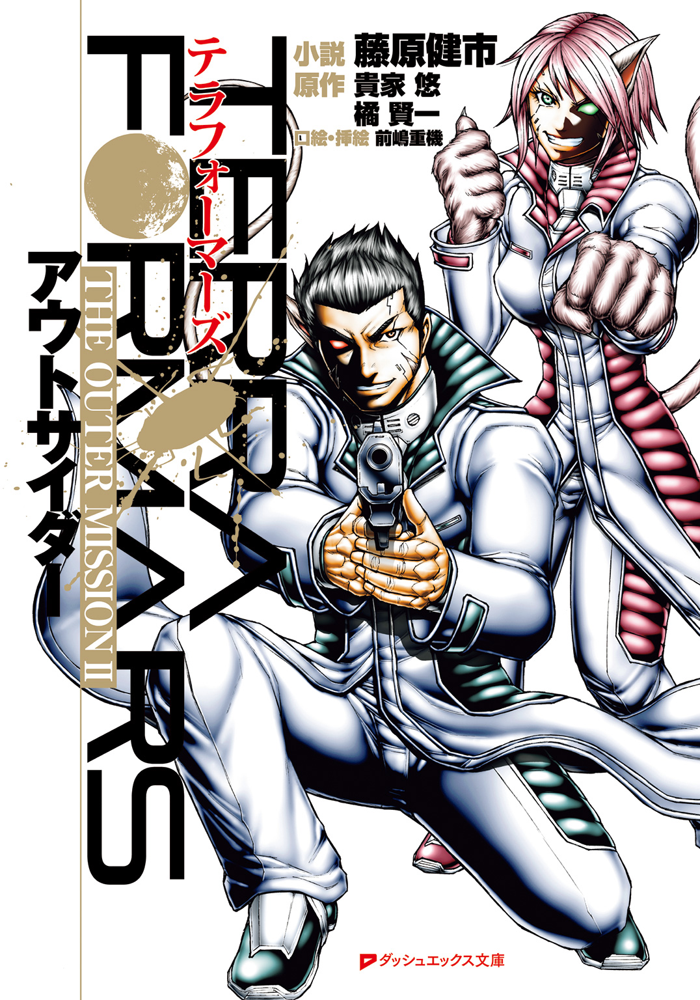
この本は縦書きでレイアウトされています。
また、ご覧になる機種により、表示の差が認められることがあります。
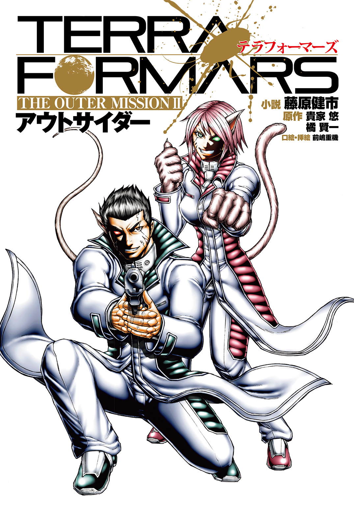
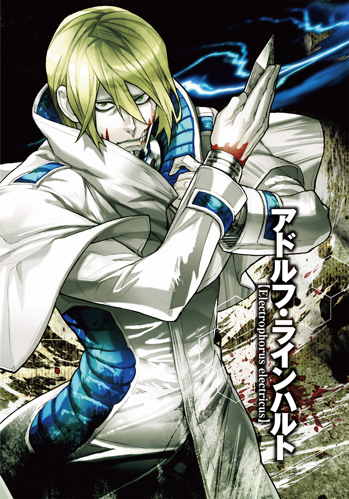
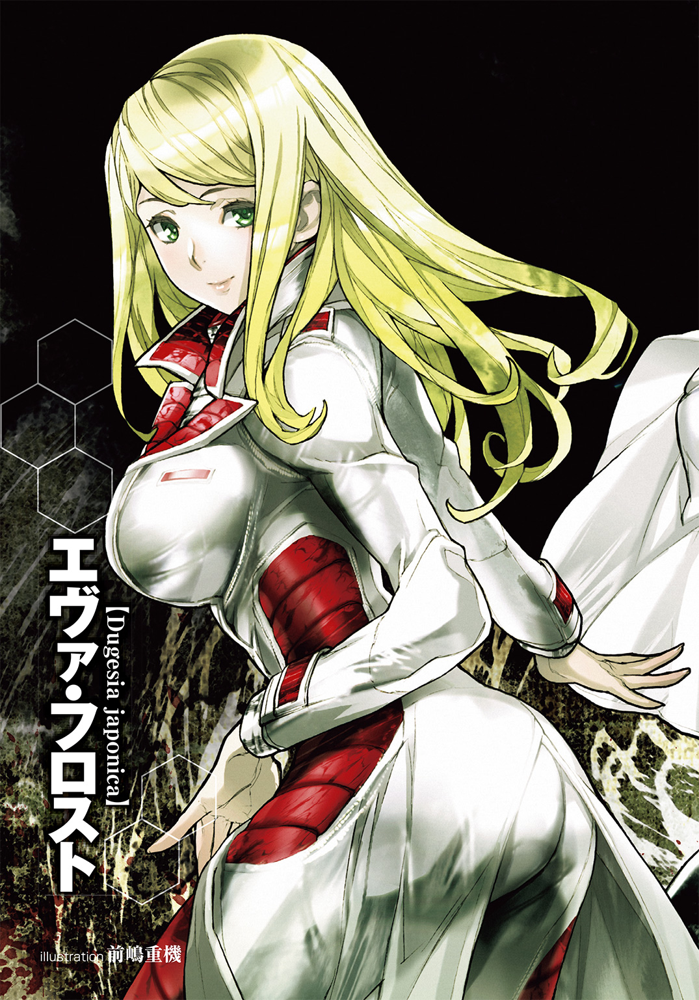
 ダッシュエックス文庫DIGITAL
ダッシュエックス文庫DIGITAL
テラフォーマーズ THE OUTER MISSION
アウトサイダー
藤原健市
原作／貴家 悠・橘 賢一
口絵・挿絵／前嶋重機
Ⅰ ドイツ南米合同班と新任務
戦場では、冷静さを失ったものから死ぬ。
どれほど冷静であっても、どうせ死ぬ時は死ぬ。
それでも生き延びたいならば、決して理性を手放してはならない。
恐怖に呑まれることなく、怒りに振り回されることなく、絶望に沈むことなく。
ただ、冷静に、冷徹に、徹頭徹尾、敵を正確に撃滅することのみに意識を集中する。
腕でも脚でも、身体のどこかを摑まれたら最後。
確実に殺されるような化け物が敵だとしても、だ。
テラフォーマー。
それが、敵。平均身長二メートル、平均体重一〇〇キロ超、姿形は筋肉質の大柄な男に似ているが、決して人ではない。人に似た四肢を持つ、ゴキブリである。
火星の環境改造計画において、およそ五〇〇年前に大量のゴキブリが火星に送り込まれた。
そのでたらめななれの果てが、テラフォーマーだ。
「ゴキブリが、あんなものに進化するなんてね。いかなる神のいたずらなのか......いたずらだとしたら冗談が過ぎるかな、やれやれ」
呟きつつ、トーヘイ・タチバナは両手で銃を構えたまま、油断することなく周囲を窺った。
屋内だ。通路は人がすれ違うのには困らないが、あまり広くはなく幾つもドアがあり、左右に通路が交差しているところも多い。
何かが物陰に潜み、待ち受けているとしても不思議はないどころか、当然の環境だ。
敵――数体のテラフォーマーが、この周辺のどこかに潜んでいる。
そのテラフォーマーを無力化すること。
それが今のトーヘイたちに与えられたミッションだ。
戦闘服に身を包み、通信と情報表示機能のあるゴーグルを装着している。
携行している武器は、テラフォーマーの甲皮にも有効な貫通力の高い弾を撃てるファイブセブンレプリカという拳銃一丁のみだ。
ファイブセブンレプリカは強力な武器だが、切り札ではない。
切り札は、己そのもの。Ｍ．Ｏ．手術で得た特性である。
テラフォーマーの持つ特異な臓器、免疫寛容臓を用いて、様々な生物の特性を人体に遺伝子レベルで組み込む。それが、Ｕ―ＮＡＳＡのＭ．Ｏ．手術。
およそ二〇年前に開発された、昆虫の遺伝子を人間に組み込むバグズ手術の発展した技術だ。
巨大ゴキブリと闘うために、巨大ゴキブリから得た臓器を利用するのである。
Ｍ．Ｏ．手術で獲得した生物の特性を発揮するには、変身薬を用いて人為的に変態しなければならないが、全身の細胞を瞬間的に造り替える人為変態は、身体に強烈な負荷がかかる。
絶大な力を得る代償は、寿命だ。人為変態を繰り返せば、それだけ死が近づく。
故に、安易に使うわけにはいかない切り札なのである。
事実。遭遇したテラフォーマーが一体のみの場合は、変身薬の使用を極力控えろと指導されている。
テラフォーマーは強大な戦闘力を誇る。
人間などテラフォーマーにしてみれば、血と臓物の詰まった柔らかい袋のようなものだ。
片手で簡単に首を握り潰し、蹴りの一振りで胴体を真っ二つにする。
まるで人間に叩き潰される普通のゴキブリ同然に、人間はテラフォーマーに殺される。
だがテラフォーマーも生物には違いない。
脳を破壊すればいずれ死ぬし、全身の運動を司っている胸部中央奥の食道下神経節を潰せば、その場で行動不能に陥る。
トーヘイの手にしているファイブセブンレプリカという拳銃は、そのためのものだ。
貫通力に優れた弾丸で、まず食道下神経節を破壊する。その後、脳を潰して止めを刺す。
正確な射撃が何よりも必要なのだ。
そのためには、冷静を保たなければならない。
トーヘイは掌の汗でぬめる拳銃のグリップを握り直し、呟く。
「ほんとうに困った神もいたものだよ、火星には。まあ、神はたいてい困った存在だけどね、色んな神話でも」
『何をブツブツ言ってんだよ、トーヘイ。ビビってんのか？』
ゴーグルの通信ユニットから女の声が聞こえた。トーヘイは周囲を警戒しつつ返事をする。
「いや、ビビってはいないよ。そっちはどうだい？」
『猫の子一匹いやしねえ。ゴキブリ野郎共、あんなでかい図体のくせに、いったいどこに隠れてるんだ、クソが』
通信相手の名は、エリザベス・ルーニー。愛称はリジー。
トーヘイの相棒で、現在は別の通路を探索中だ。
リジーは全米ハイスクール女子ボクシングのバンタム級元チャンピオンで、Ｍ．Ｏ．手術でイエネコの特性を獲得し、単純な戦闘力ならばドブネズミのトーヘイを上回る。
『見つけたらすぐ変身して、ぎったんぎったんにしてやるっ』
「人為変態は、やめておいたほうがいい。こんなことで命を削る意味はない」
『......ふん。こんなこと、ね。ま、そりゃそうか。んなことより、さっきの独り言だ。あんなふうにペラペラしゃべってたら、連中に気付かれるんじゃねえのか？ 気付いて連中が隠れたら、見つけ出すのが余計に面倒になるだろ？』
「ああ、それなら心配ない。テラフォーマーは鋭敏だからね、僕たちには気付いているさ」
『あ？ んじゃ見つけられねえってことか？』
「その心配もない。奴らは僕たちを待ち伏せしているはずだから。奇襲に対応し撃退する。これはそういうミッションだよ」
『襲われるのを待てってことかよ。ったく、もどかしいぜ。男だったらコソコソ隠れてねえで、どーんっとぶつかってきやがれってんだ』
「......テラフォーマーの半分は、普通にメスなんだけどね。でも、早めに出てきて欲しいのには同意する。閉鎖空間で奴らと閉じ込められていると思うと胃に悪い」
『おいおい、今さらそんな弱気でどーすんだっ。奴らならもう何匹も倒したろ？ 問題ねえ、あたしとおまえならやれる。たとえ何匹が相手だろうがさ』
「あまりたくさんは相手にしたくないけどね。奴らに比べたら、Ｍ．Ｏ．手術を受けているといっても僕らの身体は脆弱だ。いいかい、リジー――」
トーヘイが言い終える前にリジーが言葉を返す。
『わーってる。テラフォーマーに捕まったらおしまいだ、だろ？ 心配すん――なあッ!?』
リジーが突然、大声を上げた。同時に、乾いた発砲音が重なる。
銃声は通信だけではなく、通路に反響した。
『このッ、このッ！ 当たれっての!!』
銃声が連発で響く。リジーがテラフォーマーとの戦闘に入ったようだ。
音が近い。戦闘現場はすぐ隣の通路らしい。
「リジー、落ち着いて！ 今行く!!」
トーヘイは銃声の聞こえるほうへと走り出した。
テラフォーマーは人間に本能的な嫌悪を覚えて襲うが、襲う人間には優先順位がある。
一に怪我などで弱っている人間。二に武器や道具を持った人間。三に女性。
女であるリジーが先に襲われる可能性はトーヘイも考えていた。
それでも別行動をしていたのは、それがミッションのオーダーだからだ。
「つまり、これも想定内ってことか！」
――となると。次の通路の交差で待ち伏せされている可能性が高い。
リジーを先に襲ってトーヘイの動揺を誘い、慌てて移動したところを叩く。
知的生命体であるテラフォーマーなら、その程度の策を考えていても不思議はない。
トーヘイはそう考え、銃を前に構えて通路の交差に飛び込んだ。
身を翻して前後にすばやく銃口を向け、索敵する。
「前、クリア！ 後ろ、クリア！ 考えすぎたか？」
黒光りする巨体の姿はない。
待ち伏せの予想が外れた一瞬、トーヘイの気が緩む。
その瞬間、前の天井にある通風口のカバーががたんと外れた。
カバーと一緒に黒い影が落下する。
膝を折った低い姿勢で、それが着地した。
無機質な黒い眼とトーヘイの視線が交わる。
「じ」と短くそれが鳴いた。
人に似たシルエット。頭部に二本の触角、尾部に一対の尾葉。
全身をてらてらと光沢のある黒褐色の甲皮が覆っている。
テラフォーマーだ。天井に潜んでいたらしい。
「上からだったか！」
予想外の出現にトーヘイは焦った。すぐさま銃をテラフォーマーの胸中央めがけて三発続けて撃ったが、焦ったせいで照準が狂う。
テラフォーマーの右胸に小さな穴が三つ空くが、テラフォーマーには痛覚がない。
肺に損傷があっても致命傷にならず、行動不能にも陥らない。
当然、止まらない。
テラフォーマーがしゃがんだ姿勢で、ぐ、と全身に力を込めた。
ぞわっとトーヘイの背筋を悪寒が這い上がる。トーヘイは反射的に真横の壁まで跳んだ。
テラフォーマーが跳ねる。ぼっと空気を鳴らし、トーヘイのいた空間を黒い塊が通った。
もしそこにトーヘイがいたら、まともに体当たりを喰らって一〇メートル以上吹っ飛び、通路奥の壁に赤い染みを作っていただろう。
テラフォーマーが空中でぐるりと姿勢を変えて天井を蹴り、反動で向きを下に変えて再び回ると足から床に降りた。
一瞬遅れて天井が割れ、床にもひび割れが走る。
「まったくでたらめな身体能力だよ、だから神のいたずらは嫌いなんだ！」
軽口を叩きトーヘイは気を落ち着かせる。
テラフォーマーが跳躍してくれたおかげで、距離が数メートルに開いた。
拳銃での射撃にはもってこいの距離だ。
テラフォーマーが再び、跳躍するために全身にぐっと力を込める。
その一瞬の隙を突き、トーヘイは引鉄を絞る。再び三発。今度は狙いが正確だ。
弾丸はテラフォーマーの胸中央に、吸い込まれるように着弾し、穴を穿つ。
確実に食道下神経節を破壊した。
証拠にテラフォーマーが脱力して膝を折る。さらに額の中央に、トーヘイは冷静にもう三発の弾丸を叩き込む。
テラフォーマーがくたりと前のめりに倒れ、顔から床に突っ伏すと動かなくなった。
無力化に成功したのだ。
「危なかった......紙一重だった。そうか、通気口もこれからは注意しないと」
ほっとしたのもつかの間、すぐにトーヘイは表情を険しくして振り返る。
「リジーのほうは!?」
いつの間にか銃声が止んでいる。
「リジー！ 状況は、リジー!?」
トーヘイは通信で呼びかけた。
だが返答がない。
まさか、とトーヘイはリジーが戦闘していたと思しきほうへと急いだ。
通路の角を曲がると同時に、凄惨な光景が目に飛び込んでくる。
「リジー......」
「............はは。悪い。つい、な」
ショートカットの銀髪から生えた猫耳をぴこぴこと揺らし、腰の後ろに生えた長い尾を左右に振りながら、肉球のある手の爪で頰をこりこりとかくリジーの姿があった。
リジーの首筋には、シールタイプの変身薬が貼られている。
人為変態してネコの特性を発現させ、テラフォーマーと闘ったのだ。
銃声が途絶えたのはそのせいだ。人為変態したリジーの手は、人間とネコの中間の形状になっていて、拳銃を操作するのにはまったく向いていない。
足下にテラフォーマーの死骸が二つ転がっている。
どちらも頭部は破裂したように砕けていて、胸の中央に大きな陥没がある。
一撃目で食道下神経節を破壊し、二撃目で頭を打ち砕いたらしい。苦戦をした形跡はない。
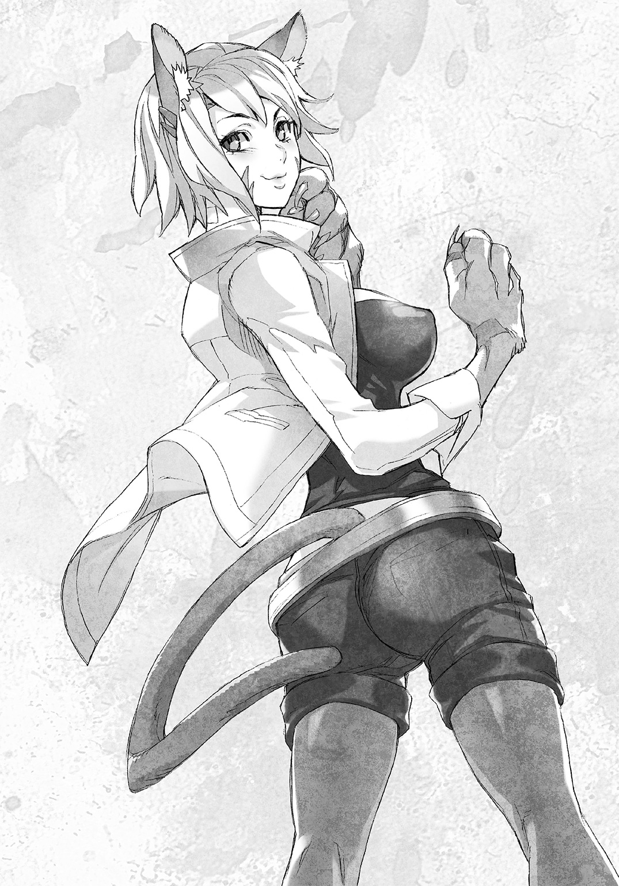
テラフォーマーの死骸のそばにリジーの拳銃が落ちていた。
トーヘイは銃身を持って拳銃を拾い、リジーに差し出した。
「人為変態したほうが拳銃より手っ取り早いのは、わかるけどさ。まず銃で倒す努力をしてみないか、リジー」
「した結果がこれだって。いいからそれ、とりあえず持っていてくれよ。この手じゃ受け取れないしさ」
リジーがネコっぽく形を変えた手をわきわきと握って見せた。
「確かにその手で銃は撃てないか。仕方がない。じゃ、預かっておくけれど。言ったよね？ 人為変態はリスクがあるから止めておくようにって」
トーヘイは左手に持ったリジーの銃を器用にくるりと回し、グリップを握り直した。
「相手が二匹だったからさ。ほら、二匹なら薬を使ってもいいってことになってるじゃん？」
「ルールはそうだけど。でも、こんなことでいちいち変身していたら、簡単に寿命が尽きる。先のことを考えたら、自重したほうがいい」
「ったく、トーヘイは頭が堅えよなあ。前にも言ったけどよ、あたしの命はあたしの好きに使わせろって」
「でも」
リジーが苦笑しながら、トーヘイの肩を肉球のある手でぽんぽんと叩く。
「そう心配すんな。一回や二回多く変身したところで、すぐにおっ死ぬわけじゃねえんだしさ。前みたいに死にたがってなんかもういねえから――」
リジーのネコと同じ縦長の瞳孔が、すっと細くなった。次の瞬間、リジーが叫ぶ。
「後ろだトーヘイッ！」
「わかってる！」
リジーの表情の変化でトーヘイは察した。振り向きながら両手の拳銃を構え、それが視界に入る前に左右同時に射撃を始める。
トーヘイが来た通路から、別のテラフォーマーが猛烈な速度で走ってくる。
狙いの定まらないトーヘイの銃撃がテラフォーマーの胴体に無数の弾痕を作るが、急所には当たらず、テラフォーマーの足は止まらない。
トーヘイは、テラフォーマーの無機質な眼球に映り込む自分の顔を見た。くっきりと焦りの色が浮かんでいる。
テラフォーマーが走りながら片手を前に伸ばした。明らかにトーヘイを摑むつもりの行動だ。
――まずい、このままだと捕まる！
「しゃがめトーヘイ!!」
リジーの声。反射的にトーヘイは、その場で身を低くした。
トーヘイの頭を飛び越え、リジーがテラフォーマーに殴りかかる。
リジーが、テラフォーマーが伸ばした腕を左拳で上に弾き、右拳を黒い顔面に叩き込む。
甲皮がひび割れ、脂肪体と呼ばれる白っぽい組織が飛び散った。
殴られた反動でテラフォーマーがのけぞり、足を止める。
「リジー、チェンジ！」
「あいよ！」
すっとリジーが横に動いた。
トーヘイはしゃがんだまま両手の銃を再び撃つ。
テラフォーマーの胸中央に弾痕が次々と空き、甲皮も中身も一緒にぐずぐずの穴と化した。
「ぎ」と短く鳴きテラフォーマーが後ろに倒れ込む。二度三度痙攣し、動かなくなった。
『状況終了。シミュレーターを解除します』
明らかに合成と思しき平坦な女性の声が、どこからか聞こえた。
ぱっと周囲が明るくなる。壁も天井も消え、テラフォーマーの死骸が消滅し、体育館ほどの広い空間が現れた。高い天井には無数のレンズが埋め込まれている。
そのレンズで空間に立体映像を作っていたのである。
トーヘイとリジーが装備しているゴーグルは、立体映像を補正してよりリアルにするためのもので戦闘補助の装備ではない。
弾丸は全て空砲であり、放たれた弾も全て立体映像だった。
テラフォーマーも立体映像だ。
死骸があった場所に、拳大の金属製の球体が転がっている。
床下の電磁石レールと連動して宙に浮かんで動く、ターゲットコアユニットだ。
ターゲットコアユニットを、リジーが蹴飛ばす。
「ったく。こんな球っころが相手だとわかってても、ゴキブリ野郎の姿で襲ってこられると、うっかり本気になっちまう」
「だから、うっかり本気になっちゃダメなんだ。戦闘シミュレーションでいちいち人為変態して命を削るなんて、何一ついいことはない」
「いいことならあるぜ？ シミュレーションのミッションでも、クリアすればボーナスもらえるじゃん」
「高めのランチ一回で消える程度の額だけどね。人為変態するリスクには、全然見合わない」
「いい加減、シミュレーションも飽きたぜ。どうせならクローンとやらせろってんだ」
クローン。クローンテラフォーマーのことだ。
Ｕ―ＮＡＳＡでは実験や訓練、さらに免疫寛容臓の採取のために、テラフォーマーをクローン培養し、利用している。
「あの事件――卵鞘盗難事件のせいもあって、クローンテラフォーマーの取り扱いはいっそう厳しくなっているようだし、レギュラーメニューのトレーニングじゃ使えないさ」
一ヶ月ほど前のことである。
ここワシントンＤ．Ｃ．にあるＵ―ＮＡＳＡの研究所から、テラフォーマーの卵鞘が盗み出されて第三者の手に渡るという事件が起きた。
トーヘイとリジーは事件の捜査に関わり、トラブルはあったものの事件を解決に導いた。
以来『スカベンジャーズ』というコンビ名を与えられて、万一のトラブルに備えて訓練漬けの毎日を送っている。
「あれから一ヶ月以上か。そりゃ訓練にも飽きるわけだぜ」
やれやれと肩をすくめたリジーの全身からネコの特徴が消える。人為変態が解けたのだ。
リジーがもぞもぞとズボンの位置を直し始める。
「あーもう。パンツがずれて気持ち悪いっ。尻尾生えたり戻ったりする度にズボンやパンツがずれるの困るよな、マジで。な？」
「そ、そこで同意を求められても」
リジーが下着の位置まで直し始めた。
トーヘイは思わず顔を赤くしてそっぽを向く。
「んだよ、この程度で照れるんじゃねえってのっ。何なら見るか？ ほれほれっ」
リジーがズボンのベルトラインに手をかけ、ネコのようにしなやかな動きで軽く腰をくねらせる。トーヘイはそれを横目で見てしまい、ますます顔を赤らめた。
「そんなふうに男をからかうものじゃないよ」
「何、怒った？ おいおい、ここは怒るところじゃねえだろ、ほんと堅いな、おまえってば」
「べ、別に怒っては――」
『二人とも、お疲れ』
トーヘイの言葉を遮って、再び部屋のどこからか声が響いた。
今度は男の声だ。先ほどの合成音声とは違い、生きた人間特有の抑揚がある。
『トレーニングが終わったばかりで悪いが、すぐに僕のオフィスに来てくれ。任務だ』
トーヘイとリジーは視線を合わせた。同じタイミングでぱちくりと瞬きをし、声を揃える。
「今、任務って言ったよな？」
「ああ、聞き間違いじゃなければ」
『聞き間違いじゃない。君たちスカベンジャーズに任務だ』
トーヘイは天井の一角にあるカメラに向けて敬礼した。
「了解しました、カワラザキさん。スカベンジャーズ両名、すぐに伺います」
カワラザキ。哺乳類型Ｍ．Ｏ．手術担当チーム所属でトーヘイとリジーの直属の上司だ。
『じゃ、頼むよ』
カワラザキの声が途絶える。
「これでやっと、退屈ともおさらばだな！」
リジーが片手を軽く掲げた。トーヘイはリジーの手を、ぱんっと叩いて応える。
「気合い入れていこう！」
トーヘイとリジーは意気揚々と早足でシミュレーションルームを後にした。
「やっと来たか」
技術系職員に共通のデザインのオフィス。
デスク横に立ってトーヘイとリジーを出迎えたのは、頭に白髪の交ざった小太りで背の低い、丸眼鏡をかけた東洋人の男。カワラザキだ。
カワラザキが腕時計を気にする。
「トーヘイ、エリザベス。予想よりも二四秒遅い。急いでくれないと困るじゃないか」
カワラザキは細かいことを気にする性質だ。
生真面目でリジーのことも愛称では呼ばない。
馴れ合うつもりはないと、カワラザキは初対面の時にトーヘイたちにきっぱりと言った。
リジーが、そんなことなどお構いなしとなれなれしい態度でカワラザキに詰め寄る。
「ヘイ、ザッキー。任務なんだよな？ さっさと命令くれよ、どこにでも行ってどんな奴でもぶちのめしてきてやるからよ！」
リジーのほうがカワラザキより背が高く、顔を上から覗き込むような格好になる。
「じょ、上司の僕に向かって、な、何だ、その威圧的な態度はっ」
顔を赤くし興奮気味にカワラザキが抗議した。
リジーが少し眉を寄せる。
「ああん？ 威圧なんてしてねーってば。難癖つけんじゃねーよ、ザッキー」
「そのザッキーというのも止めないか、人の名前を勝手に略すんじゃないっ」
「親愛込めてやってるってのによ。いい愛称じゃねーか、ザッキー。な、トーヘイ？」
リジーがカワラザキから身を離して上体を捻り、トーヘイを見た。
トーヘイは苦笑する。
「僕は嫌いじゃないけどね、呼ばれる人が嫌だというのなら、止めておくのが礼儀だよ」
「そんなもんか？ そいつは悪かったな、ザッキー。ま、勘弁してくれや」
リジーがぽんぽんとカワラザキの肩を叩いた。呼び方を直す気はないらしい。
カワラザキがその手を払いのけ、トーヘイに視線を向ける。
「この問題児には首輪でも付けておいてくれ。君がきちんとコントロールできるように」
「あ？ 首輪だ？」
リジーが不快感を隠さない表情で、再びカワラザキの顔を覗き込もうとした。
トーヘイはすぐさまリジーのそばに行き、肩を摑んで制した。
「冗談に決まってるだろう、そんなこと。今時、パワハラなんて流行らないしね」
けっと唾棄するように息を吐き、リジーがカワラザキから離れる。
「冗談ではないんだが」
カワラザキが小声で漏らし、リジーが目を吊り上げて振り返る。
トーヘイはリジーとカワラザキの間に身を滑り込ませ「今のも冗談のうちだよ」とリジーを軽くなだめると、カワラザキに向き直った。
「あまりセンスのない冗談を聞かせるために呼んだわけではないですよね、カワラザキさん。さっそく任務についてお聞かせいただけますか」
「ふむ。そうだな、僕としても猫娘の相手で時間を無駄にするわけにもいかない。達成目標から言おう、ジャニス・リーを連れ戻すんだ」
「ジャニスだ？」「ジャニスさんを？」
リジーとトーヘイの声が重なった。
ジャニス・リー。トーヘイたちの前の上司で、哺乳類型Ｍ．Ｏ．手術担当チームの科学者だった女だ。
外部の人間と通じて卵鞘盗難を手引きした、卵鞘盗難事件の犯人の一人である。
先月の事件の後、重要参考人としてＵ―ＮＡＳＡ内部の監査組織に身柄を確保されたことは、トーヘイたちも知っている。だが、それ以上のことは教えられていない。
「連れ戻せって。逃げたのかよ、ジャニスの奴？」
と、リジー。カワラザキが真面目な顔で返す。
「逃亡したのか、拉致されたのか。現段階ではそれは不明だ」
「拉致の可能性があるんですか？」
トーヘイの問いにカワラザキが頷く。
「ああ。詳しくは彼らが来てから話そう、もう来るはずだ」
「彼ら？」「誰か他にも来るのかよ」
トーヘイとリジーの声が重なった時だった。二人の背後で、部屋のドアが開いた。
男が一人と女が三人、入室する。
全員が白を基調としたアネックス一号正規クルーの白を基調とした制服姿だ。
男は金髪の白人。女は二人が白人で、一人は浅黒い肌だ。
「失礼する」
先頭に立つ男が言った。男は顔の下半分が隠れる高い襟の服を着ている。
その男の顔をトーヘイは知っていた。
アドルフ・ラインハルト。
アネックス一号計画の幹部メンバーの一人で、ドイツ・南米混成班の班長だ。
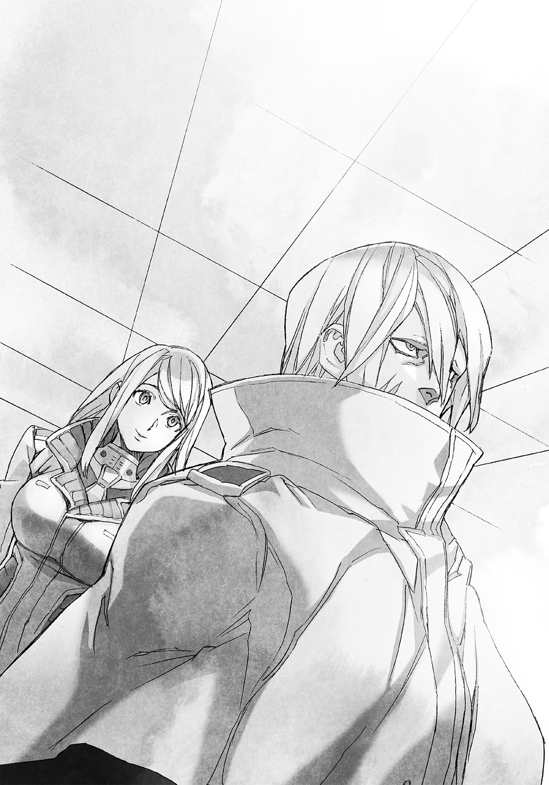
世界で初めて昆虫以外の特性の移植に成功した、現在のＭ．Ｏ．手術の礎となった男である。
ベース生物はデンキウナギ。
アドルフの発電出力は公表されていないが、ベースとなったデンキウナギでも一〇〇〇ボルト近い電気を発する。当然、アドルフの発電能力はそれをはるかに凌ぐことは間違いない。
どうしてアドルフがこんなところに、とトーヘイは疑問を持った。つい、アドルフの目を見据えてしまう。
「何だ、東洋人。あたしたちの班長に何か文句でもあるのか？」
浅黒い肌の女が、柄の悪い口調で言った。背がトーヘイとさほど変わらない。女にしてはかなり大柄で、服の上からでも筋肉質なのがわかる。
「いえ、そんなことはありません」
「それならじろじろ見るんじゃねえ。失礼な奴だ」
「すみません」
トーヘイは軽く頭を下げた。ふん、と女が鼻を鳴らして視線を逸らす。
「トーヘイ、おまえは謝るようなことしてねえって。前にも言ったろ、そう軽く謝るもんじゃねえよ、おまえの価値が下がっちまうからさ」
「いや、でも」
トーヘイに答えず、リジーが浅黒い肌の女を睨む。
「てめえはアレか？ 目が合う奴全員に、失礼だって喧嘩売らなきゃ気がすまねえタイプか？ そんならあたしがその喧嘩、買ってやるぜ？」
女がリジーと視線を合わせた。リジーよりいっそう鋭い目つきで睨み返す。
「あんたの噂は聞いてるぜ、失敗作さんよ？」
失敗作。事実だから言い返せない。
リジーもトーヘイも、Ｍ．Ｏ．手術が一応は成功してベース生物の特性を得た。
だが免疫寛容臓の適合率が低く、普段から大量の免疫抑制剤を服用しなければならず、アネックスクルーの採用資格を満たせなかった。
だから宇宙飛行士になるための訓練を受けず、厄介事処理班のような役目を任されている。
女が、値踏みする眼でリジーの頭の先からつま先まで眺めた。
「過去に色々あったらしいじゃねえか。その威勢、虚勢じゃなきゃいいけどな。あたしは虚勢を張る奴が好きじゃねえ......どうなんだ、あんたは」
女が嘲るような笑みを浮かべた。リジーの眼に暗い影が宿る。
リジーは過去にボクシングの試合で人を殺している。故意ではないが、リジー自身、自分が人殺しには違いないと罪を一生背負う覚悟を決めている。
「奇遇だな。あたしも虚勢を張る奴が嫌いだ――っっざけてんじゃねえぞ、テメェッ!!」
リジーが女に殴りかかる。
トーヘイは咄嗟に女とリジーの間に割り込んだ。
「止めるんだ、リジー！」
「邪魔すんなよトーヘイ！ あのにやけ面に右ストレートをぶち込まねえと、あたしの気がすまねえんだよ！」
女の笑みから嘲りの色が消え、無邪気さが宿った。そして楽しそうに告げる。
「好きにさせてやりな。言われっぱなしで押し黙るより、よっぽどあたし好みの反応だ。それに、ぶっ飛ばされるのはあたしじゃねえ」
女が足を開き気味にして、腰を落とした。
空手の経験者のトーヘイには、それが足技のある打撃系格闘技の構えだとわかる。
リジーは全米ハイスクールチャンプのボクサーだ。格闘技の経験者と本気で喧嘩をすれば、互いにただで済むはずがない。
どうにかして止めないと、とトーヘイは焦った。
アドルフの連れているアネックスクルーのうち、まだ少女と言えるだろう淡い金髪の娘が怯えた顔でアドルフの陰に隠れた。
もう一人の、落ち着きがある女性が困惑顔をアドルフに向ける。
アドルフが、横目で浅黒い肌の女を見やった。
「止めろ、イザベラ。俺たちは喧嘩をしに来たわけじゃない」
アドルフが淡々と静かに言った。
それだけで女――イザベラの表情から笑みが消える。
「悪かった、班長。つい、カッとなっちまった」
「おまえが俺のことで怒る必要はない」
アドルフが高い襟を開いて素顔を晒した。
リジーがぎくりと身を固くし、トーヘイから少し離れる。
「顔を隠しているのが気になったのか？ トーヘイ・タチバナ。この通りの顔だ、見て不快感を覚えるものもいるだろうと、襟を立てている」
そう言ったアドルフの顔には、傷がいくつもあった。頰は一部がえぐれ、歯すら見えている。
「......ホラーだな」
ぼそりとリジーが呟いた。
「ホラーなんかじゃありません！」
アドルフの陰に隠れていた少女が、唐突に大声を上げた。
彼女がアドルフの背後から出てきて、前のめりの姿勢で主張する。
「班長の傷は、その、過去の実験のせいで！」
少女が前のめりになっているせいで、胸が強調されている。元からかなりの大きさのようだが、それがことさら大きく見える。
「......でけえ」とリジーが真顔で呟くほどだった。
その言葉に照れたのか、それとも大声を恥じたのか、少女は「あ、え、その」とうろたえると、再びアドルフの陰に隠れる。
「......で、ですから。決してホラーなんかじゃないんです」
「余計なことは言わなくていい、エヴァ」
「はい、班長」
エヴァと名前を呼ばれた少女が、わずかに頰を赤らめてうつむいた。
これまで黙っていた最後の一人が、愛想のよい笑みを浮かべて口を開く。
「私はサンドラ・ホフマン。あの、エリザベス・ルーニーさん。一つ、聞いてもいい？」
友好的な口調のサンドラ。リジーはいきなり名指しされて焦ったようだ。
「あ、うん。何だよ？」
素の少女の顔で、リジーが聞き返した。
サンドラが人の良さそうな表情で微笑む。
「ベース生物、イエネコだって聞いたのだけれど。ほんとうなの？」
「あ？ ああ、何だ、そんなことか。その通りだけどよ、それがどうかしたのか？」
つまんないこと聞くんだな、というような顔でリジーが返した。
その一方でサンドラが嬉しそうに表情を輝かせてリジーに駆け寄り、いきなり両手を握った。
「嬉しいわ、私もイエネコなの！ ドイツ原産のジャーマンレックスという種類のネコで、人為変態すると猫耳が生えるのよっ、あなたはどう？ ネコの種類は？」
サンドラが声を弾ませる。
リジーは困惑したように二度三度と瞬きし、トーヘイに顔を向けた。
「なあ、トーヘイ。あたしのネコの種類って知ってるか？」
トーヘイは苦笑して顔を横に振る。
「君が知らないものを僕が知るわけないだろう。それも君自身のことなんだから。カワラザキさんなら知っているんじゃないか？」
カワラザキは、リジーとトーヘイが受けたＭ．Ｏ．手術に関わっている。
トーヘイたちのＭ．Ｏ．手術については、当人よりも詳しい。
「そっか。ザッキー、教えてくれよ」
「エリザベス・ルーニー。君はアメリカンショートヘアから遺伝子をもらっている。たまたま研究員の一人が血統のしっかりしたペットを飼っていたのでね」
ほ、とリジーが感心したように息を吐いた。
「へえ。あたしのベースになった奴、血統書付きなのかよ。そりゃ大したもんだ。ところでさ、トーヘイのベースのドブネズミはどうなんだよ？」
「それは」と言いかけたカワラザキの言葉を、トーヘイは遮った。
「僕のことはいいですよ。だいたいわかりますし。そんなことより、任務の話をお願いします。待っていたのは、この方々ですよね」
「ああ」とカワラザキが頷く。
「ミセス・ホフマン。そろそろエリザベスの手を放してやってはもらえないか？ 少々ばかり話がしづらい」
「あ！ ごめんなさいね、はしゃいじゃって」
サンドラが恐縮した顔でリジーの手を放した。
「別にいいけど。ミセス？」とリジー。
「これでも一児の母なのよ」と微笑んでサンドラ。
アドルフが襟を締め直し、淡々と告げる。
「そういう話は後にしろ。それほどのんびりしていていい状況ではないからな」
サンドラの表情が瞬時にして引き締まる。
「はい。申し訳ありません、班長」
先ほどのイザベラ、今のサンドラ。アドルフの言葉に従う様子から、トーヘイはアドルフのリーダーシップを感じた。
アドルフが力で部下を支配していないのは、エヴァがアドルフの顔の怪我のことでリジーに抗議したことからも窺える。
絶対の信頼。それがアドルフと班員の間にはあるのかもしれないな、とトーヘイは思った。
カワラザキが改めてアドルフに話しかける。
「任務参加の人選は任せると言ったが。暫定マーズ・ランキング一〇〇位のエヴァ・フロストを本当に参加させるのか？」
マーズ・ランキング。トーヘイには聞き覚えのない言葉だ。
「あの、カワラザキさん。そのマーズ・ランキングって」
「ああ、君たちは知らなかったか。アネックス正規クルーの一〇〇名の対テラフォーマー戦闘能力及び捕獲能力を、シミュレーションや訓練によって順位付けしたものだ。まだ順位は暫定だが、その少女は現在最下位。非戦闘員中の非戦闘員というところだよ」
エヴァが居心地悪そうに身を小さくする。
「......すみません。頑張ってはいるんですけれど、その、まだあまり役に立てなくて」
「おまえの真価はいずれ必ず発揮される。焦ることはない」
アドルフがエヴァの頭に手を置いた。
エヴァが一瞬びくりとし、すぐさま嬉しそうに頰を赤らめる。
「はい、頑張りますっ」
イザベラが呆れたような眼をアドルフとエヴァに向けた。
「まあ。現在進行形でほぼ役立たずなのは事実だけどな」
「あう」とエヴァ。アドルフが表情を変えずにイザベラを横目で見る。
「エヴァの任務参加は、ドイツ支部上層部からの命令だ」
イザベラが面白くなさそうな顔をする。
「上層部......ちっ。上の連中の考えはまったくわからねえ」
「我々が今ここで考えても仕方がないことだ」
とアドルフ。ドイツ支部の命令という言葉でカワラザキも納得したらしい。
「そういう事情ならば確かに仕方がない。話を進めよう、まずはこれを見てもらおうか」
カワラザキが、デスク上のパソコンのモニタを全員に見えるように回す。画面を指でタッチ操作して動画再生アプリを起動させると、すぐに動画の再生が始まった。
赤茶けた荒野、まっすぐと伸びる黒いアスファルトの道。空は暗く曇っている。
自動車の車内からドライブレコーダーで撮影したと思しき映像だ。画面上に表示されている動画の記録時刻は、今より一時間ほど前。つい今し方ということである。
『何だあれ？』とドライバーと思しき人間の声。
『人か？』と別の声。
映像中央。道路の先にぽつんと黒い影がいる。
次の瞬間、バンッという衝撃音と共に、映像が酷くひび割れ不鮮明になる。
まるでカメラに投石でも受けたような感じだ。
『何だ今の!?』『銃撃か!?』『前の奴なのか!?』『どうする！』『構わねえ、ひき殺せ!!』
車が加速したか、走行音が高くなる。映像は不鮮明のままだが、見る間に黒い影が大きくなっていく。
全身が黒褐色、頭部に一対の触角のようなものがある何かが、野球の投球フォームに似た動作をした。
次の瞬間、映像が大きく乱れ、車が道路から外れて荒れ地に突っ込んだ。
『ノーッ!!』『ジーザスッッ!!』
映像の天地が激しく入れ替わる。車が何度も横転しているようだ。
天地が逆さまになったところでカメラの撮影機能が完全に壊れたか、映像が真っ暗になった。後は音声だけだ。
『何だ貴様！ ――んがッ』ガシャンとガラスが割れ、べしゃっと湿った音が響く。
『来るな、来るなよ!!』乾いた銃声音が連なり、途絶えた直後にごきりと鈍い音。
がつ、とマイクに直接何かが触ったようなノイズがして、べきっと破壊される音がすると、音声まで途絶えた。
何者かがドライブレコーダーを発見し、握り潰したかのようだった。
カワラザキがモニタをタッチ操作して動画再生アプリを終了させる。
「今のが、ジャニス・リーをネバダのアネックス一号打ち上げ基地に併設されたＵ―ＮＡＳＡの収監施設に移送する際に起きた、事件の映像記録の全てだ。ジャニス・リーに装着した発信器の信号はこの地点から移動して、ここで途絶えている」
カワラザキが再びモニタを操作する。画面には地図アプリが表示された。
指し示したポイントに『ＡＲＥＡ51β』の文字。
「アネックス一号発射基地近くにある、旧グルーム・レイク陸軍基地だ。事故を理由に閉鎖されて半世紀以上が経過し、現在も立ち入り禁止になっている」
「なるほど」アドルフが納得したように言う。
「その基地に赴き、テラフォーマーと思しき第三者に拉致されたジャニス・リーを取り戻せ。そういうことか」
テラフォーマー。躊躇うことなくアドルフはそう口にした。
トーヘイはアドルフへと向き直る。
「先ほどの黒い影が、アドルフさんはテラフォーマーに見えましたか？」
「断言はできないが、一連の行動、頭部の特徴から可能性は無視できないと思っている」
ざわっとアドルフの部下たちに動揺の気配が広がった。
「テラフォーマーが、ネバダにいるだと？ 冗談じゃねえだろ」とイザベラ。
「そんな......」「まさか」とエヴァとサンドラが怯えた表情で視線を合わせる。
「もしほんとうだったら。大変なことになっちゃいませんか」
とエヴァ。サンドラの顔に深刻さが浮かぶ。
「......なるわよね。火星行きどころじゃなくなったら、どうしよう。私は絶対に、火星に行かなくちゃならないのに」
「心配する必要はない。もしアレがテラフォーマーだったとしても狩ればいいだけだ。仮に何体もいたとしても、それほど問題にはならない。このワシントンには奴らを退治するプロフェッショナルが揃っている。俺を含めて」
その言葉で、イザベラたちから動揺の気配が消えた。
やはり三人ともアドルフに絶対の信頼を持っているらしい。
テラフォーマー退治のプロフェッショナル。アネックス一号計画の幹部たちのことだ。
日米合同班の小吉とミッシェル。ドイツ南米合同班のアドルフ。ロシア北欧合同班のシルヴェスター・アシモフ。ヨーロッパアフリカ合同班のジョセフ・Ｇ・ニュートン。中国班の劉翊武。対テラフォーマー戦闘において一騎当千の力を誇る猛者ばかりである。
小吉とミッシェルの力を、トーヘイもリジーも目の当たりにしている。
幹部が出撃するのであれば、テラフォーマーが何体いようが、確かに問題はない。
「この事態は」とアドルフが改めて口を開く。
「有り得ないことではない。この施設でもクローンテラフォーマーを作り、利用している。ドイツや中国といった他の施設でも、だ。Ｕ―ＮＡＳＡの職員の中に不適切な考えを持つものがいないとも限らない。クローンが外部に流出することは想定して然るべきだ」
ちらりとアドルフがトーヘイを見た。
卵鞘盗難事件について知っている人間は少ない。
事件の解決に関わった日米合同班の班長にしてアネックス一号計画のリーダー、小町小吉と副官のミッシェル・Ｋ・デイヴス、事件の事後処理を行った職員および、事件の捜査に関わったＵ―ＮＡＳＡ上層部の面々。
そしてトーヘイとリジー、ジャニスの後任のカワラザキだ。
余計な動揺をさせないようにと、アネックス一号正規クルーにも卵鞘盗難事件は伏せているが、幹部は別らしい。
俺は知っている。アドルフの碧い瞳はトーヘイにそう語っていた。
トーヘイはちらりとリジーに余計なことは言わないようにと目配せして、頷いた。
「アドルフさんの仰る通りだと思います。テラフォーマーが外部に漏洩している可能性は考えるべきだと僕も考えます」
カワラザキが、アドルフとトーヘイを交互に見やる。
「話が早くて助かる。今回の任務の優先順位を伝えよう。あれをアンノウンと呼称するが、一にアンノウンの正体の確認と身柄の確保。テラフォーマーだった場合でも、可能であれば殺さずに生け捕りにして欲しい。二にジャニス・リーの身柄の確保。こちらは生死を問わない」
おいおい、とリジーが目を丸くする。
「ゴキブリ野郎は生け捕りで、ジャニスは殺していいってか。そりゃまたずいぶん安く見積もられたもんだな、ジャニスの命」
「施設内ではなく自然環境下で生存したテラフォーマーのサンプルは貴重だ。どうせなら生きている状態で解剖し、自然環境にどんな影響を受けたか、我々は調べたい」
なるほど、とトーヘイは頷いた。クローンテラフォーマーは厳密にＵ―ＮＡＳＡの施設内で管理され、自然環境と接する機会などない。
ネバダの砂漠でテラフォーマーが生存していたとしたら、サンプルとして価値が高い。
カワラザキが話を続ける。
「ジャニスのほうは、死んでくれたら機密保持のために助かるくらいだ。Ｍ．Ｏ．手術やテラフォーマーについてあの女は知りすぎているからな。監視下で労働させる他に対処の仕方がなかったくらいだ」
死んでくれたら助かる。
そう言ったカワラザキは、眉一つ動かさなかった。どうやら本気らしい。
イザベラが怪訝そうに眉を寄せる。
「そのジャニスって奴。監視下で労働って、何かしでかしたのか？」
やはりアネックスクルーでも一般メンバーだと卵鞘盗難事件については知らないようだ。
むう、とカワラザキが返事に困る。アドルフがイザベラに目を向けた。
「その罰に見合うだけのことをしたというだけだ。罪については機密だ」
「機密っすか。んじゃ目をつぶっておくとするよ」
イザベラがしぶしぶという感じで納得する。
やはりアドルフのリーダーシップは優秀だとトーヘイは改めて感心しながら、カワラザキに返答する。
「任務、了解しました。ジャニスさんも死なせないで連れ戻します」
アドルフが目にわずかな驚きの色を浮かべた。
表情の変化は一瞬のことで、アドルフの部下たちは気付かなかったようだが、リジーは見逃さなかったらしい。
「こういう奴なんで」
リジーが、アドルフに軽い口調で告げた。
「そうか。それなら彼女たちを預けるのに、多少は不安も減る」
と、アドルフ。トーヘイはアドルフに向き直った。
「預けるって、どういう意味ですか？」
「ドイツ南米合同班から参加するのは、イザベラ、サンドラ、エヴァの三名のみだ。今回の任務は彼女たちの訓練を兼ねている。幹部の俺の同行は、ドイツ支部上層部からの命令で禁じられている」
対テラフォーマー戦のスペシャリストの幹部、アドルフが任務に加わらない。
その事実にトーヘイは不安を覚えた。それが顔に出る。
トーヘイをじっと見据え、アドルフが淡々とした口調で告げる。
「不安になる必要はない、トーヘイ・タチバナ。君の前回の任務報告は俺も読ませてもらった。小町艦長からも話を聞いたが、君は、君が思っている以上に優秀な人材だと思う。彼女たちを任せて問題はない」
「しかし、僕はアネックスクルーの不適合者ですよ」
「この場合、Ｍ．Ｏ．手術の適合率は関係ない。重要なのは作戦遂行能力と責任感のみだ。君はそのどちらも兼ね備えている」
「ですが、貴重なアネックス正規クルーを、僕が預かるというのは――」
アドルフがトーヘイのすぐそばに歩み寄り、がっと強めに両肩を摑んだ。
「尻込みする気持ちはわからなくもない。だが、あくまで固辞するというのならば、君を評価した小町艦長と俺の判断力を否定することにもなる」
アドルフの碧い瞳は、一瞬たりともトーヘイの目から視線を外さなかった。
君ならできるはずだ。そう目が告げている。
「......わかりました。僕の命に変えても、彼女たちを無事にあなたに返します」
「君も生きて帰れ。でないと俺が小町艦長に怒られる」
「それは重大な問題ですね、冗談だとしても」
トーヘイは思わず苦笑した。イザベラが驚いたようにぱちくりと目を瞬かせる。
「お。今の班長のわかりにくい冗談。おまえ、わかったのか？」
「......それってすごいかも」とエヴァ。
「私たちでもわからない時があるのに」とサンドラ。
リジーがきょとんとした顔で、トーヘイとアドルフの顔を見比べる。
「今の話のどこにジョークがあったんだよ？ なあ、あたしにも教えてくれよ」
トーヘイは苦笑をしたままリジーを見る。
「......こういうのは説明するものでもないかな」
「何だよ、あたし一人のけ者かよ。ま、いいさ――ザッキー。あたしも了解だ。さっさと装備をよこせ。どうせすぐに出発なんだろ？」
リジーが急かすように言った。
カワラザキが「だからザッキーと呼ぶな」とぶつぶつ言いながら、モニタをタッチ操作する。
がこんと部屋の一角で音がして壁の板が大きく開くとロッカーのようなものがせり出した。
拳銃ファイブセブンレプリカと、見慣れない携帯ランチャーに似た武器が人数分、収まっている。
加えて人数分のバックパック。中身は救急医療セットや非常用食料等のはずだ。
さらに、アネックス正規クルーのものと色違いで同じデザインの制服が二着、ハンガーにかかっていた。ハンガーの下にはハーフブーツもあった。
正規クルーの制服が白なのに対し、これらは暗い灰色だ。
リジーが灰色の制服をきらきらした目で見た。何やら興味があるらしい。
カワラザキが装備品の前に移動し、説明をする。
「全員にそれぞれ変身薬を三回分。ハンドウエポンとしてファイブセブンレプリカを一丁、予備弾倉を四つずつ。それから対テラフォーマー蟲取り網の試作品を持って行ってもらいたい。これだ」
カワラザキが携帯ミサイルランチャーに似た武器を手に取った。横を向いたフロントグリップを左手で握り、右手でトリガーのあるグリップを持ち、右脇に抱え込むように構える。
対テラフォーマー蟲取り網をカワラザキがトーヘイに向けた。先端部分には弾頭と思しき八つの筒が円周上に並び、中央が赤く発光している。
カワラザキが対テラフォーマー蟲取り網を構えたまま、解説する。
「装弾数は八発。使い方は簡単だ。こう腰だめに構えてターゲットに先端を向けるとレーザーサイトがターゲットに照射される。後はトリガーを引けば弾頭が一つ発射され、広がった網がターゲットを包み込んで捕まえる。このプロトタイプの射程は最大で一〇メートル前後、一メートル離れていれば網はテラフォーマーを捕まえるのに充分な大きさに開く。何か質問は」
トーヘイはすぐさま軽く手を上げた。
「射出タイプの投網みたいなものと考えてよろしいのでしょうか」
「ああ、その通りだ」
「その網ですが。テラフォーマーの筋力に対して、充分な強度がありますか？」
「網の素材は詳しくは言えないが、引き千切るには平均的なテラフォーマーの三倍の筋力が必要だ。熱や酸にもそれなりに強く、一度に数体のテラフォーマーを一つの網で捕獲するようなミスをしない限り、問題はない」
はずだが、と挟んでカワラザキが続ける。
「いかんせん、これはプロトタイプだ。一〇〇パーセント確実に動作する保証はない。そこは承知の上で携帯してくれたまえ。いいな？」
「了解しました」
「他に何か、質問は？」
カワラザキが視線を巡らす。
「あたしたちはそれ、もう訓練で使ったことがあるからな」
とイザベラ。エヴァが少し困ったような顔をする。
「反動が強くて私はあまり上手に扱えませんけど、頑張ります」
「ちょっと重いのよねぇ、それ。ベルトで肩にかけていると、肩が凝っちゃう」
と、サンドラ。アドルフがイザベラたちに告げる。
「重量が作戦行動の邪魔だと感じたら、捨てて構わない。それは俺が許可する」
は、とイザベラが短く笑った。
「それは言われなくてもそうするさ。そんな網より、あたしのこの脚のほうがよっぽどあてになるからな」
ぱんっとイザベラが片手で太股を叩く。脚力に自信のあるＭ．Ｏ．手術を受けているらしい。
ベース生物は何なのだろうとトーヘイは気になった。
「差し支えなければ、イザベラさんのベース生物を教えてもらえますか？」
「構わないぜ。リオックだ。知ってるか？」
「リオック......」トーヘイは記憶を探った。
「詳しくは知りませんが、コオロギに似たインドネシア原産の大型肉食昆虫でしたよね。確か極めて獰猛で、昆虫のみならず小型の哺乳類まで食べるとか」
に、とイザベラが唇の端を吊り上げて笑う。
「それだけ知ってりゃ充分だ。ま、テラフォーマーがマジで出たとしても、任せておきな。瞬殺してやるから――」
言葉の途中でアドルフが口を挟む。
「イザベラ。確かにおまえは強い。だが慢心はするな。慢心は容易く、誰かを殺す」
イザベラの顔から一瞬で笑みが消えた。真剣そのものの表情でイザベラがアドルフに返す。
「......そうだったな、班長。悪い、調子に乗っていた」
「わかればいい......他には？」
今度はアドルフが全員に視線を巡らせた。
「なければ装備を調え、すぐに任務に――」
「はい！ 質問、まだあるぜ！」
リジーが勢いよく手を上げ、その手をぶんっと下げて灰色の制服を指さす。
「そのアネックスクルータイプのウエア！ ひょっとしてあたしとトーヘイのか!?」
カワラザキが頷いた。
「その通り。今回の任務から、このウエアを使ってもらう。これにはアネックスクルーのものと同様、人為変態に合わせて変形する機能がある」
リジーが嬉しそうに、真っ先に制服に飛びついた。
「ひゃっほう、制服は嬉しいぜ！ こちとら普通の戦闘服だと人為変態の度に靴は邪魔になるわ尻尾でパンツがずれるわで、困ってたんだよ！」
リジーが嬉しそうに、真っ先に制服に飛びついた。
「えっと、こっちがあたしのだな？ んじゃさっそく着てみるぜっ」
人目もはばからずにリジーが着替えを始めた。
蹴飛ばすように靴を脱ぎ、ズボンを脱ぐ。艶やかな白い肌、筋肉質ながらもむっちりと柔らかそうな太股、小さめのショーツが少しずり落ちかけた張りのあるヒップが露わになるが、リジーにまったく恥ずかしがる様子はない。
鼻歌交じりで上着も脱ぐ。ノーブラなのか、キャミソールの胸がつんと尖っていた。
この間、数秒。アドルフが慌てたように横を向き、トーヘイも顔を赤くして回れ右をする。リジーを猫娘呼ばわりして問題児扱いしているカワラザキさえ目のやり場に困り、視線を宙にさまよわせた。
サンドラがうろたえ気味に、リジーに駆け寄る。
「あ、あの、エリザベスさんっ？ 男性もいるのに着替えは、ちょっとっ」
リジーはサンドラにウインクするだけで着替えの手を休めない。
「お。これ、下着つけずに肌に着るタイプのインナーか。それならっ」
リジーが、上下一体になっているインナースーツを手にすると、下着まで脱ぎ捨てた。
「いいっていいって、見たい奴には見させておけばさ！ さっさと出撃しなきゃいけねえんだ、トーヘイ、おまえも照れてないで着替えろよ！」
インナースーツに足を通しつつ、リジーがトーヘイに声をかけた。
「ぼ、僕も？ 僕は後でロッカールームで着替えるからっ」
「恥ずかしがるなって。何ならあたしが着替え手伝ってやるからさ！」
インナースーツを着ると同時にリジーがいたずらっぽく笑い、視線を合わせようとしないトーヘイの背後から飛びついた。
「ちょ、待ってリジーっ」
「待たねえってーの、時間ねえんだからよ！」
トーヘイは背中全体にリジーの柔らかさと熱を感じ、目眩がした。救いを求めるような目をアドルフに向ける。
「な、何とかしてもらえませんかっ」
「あいにく彼女は俺の班員ではない......君たちの着替えが終わるまで、外で待つ」
アドルフがトーヘイの返事を待たずに部屋を出る。
「私も外に行きます！」とエヴァがアドルフに続いた。
「見ても面白くねえ着替えだしな。あたしも出るか」
と、イザベラ。最後にサンドラが部屋を後にする。
「ごゆっくり」
微笑ましいものを見る眼差しで、サンドラがドアを閉めた。
「サンドラもああ言ってるし、脱いだ脱いだ！ お、案外いい筋肉してるな、おまえ！」
「だからちょっと待ってと言ってるんだ！ 下着くらい自分で脱ぐから！」
あっという間にトーヘイは下着ごと訓練用戦闘服をリジーにはぎ取られ、全裸にされた。
そんなトーヘイを、カワラザキが呆れと哀れみの混ざった表情で見る。
「......大変だな、君も」
「ほい、着替えおしまいっと。なかなか似合ってるぜ、トーヘイ」
「それはどうも......ふう。とんでもない目に遭った」
トーヘイが着替えを終えたタイミングで、部屋の中が静かになったことに気付いたのか、アドルフたちが戻って来た。
アドルフが部下たちに告げる。
「全員、装備を受け取れ」
「了解」「はい」「了解しました」
イザベラ、エヴァ、サンドラがそれぞれに返事をし、装備のロッカーに向かう。
「僕たちも準備しよう」「ＯＫだ」
トーヘイとリジーもロッカーに向かい、準備を始める。
エヴァが拳銃の収まったホルスターを手に困惑顔になった。アドルフがそれに気付く。
「エヴァ、銃のホルスターの付け方はわかるか？」
「ええと、その。射撃訓練は受けていますけれど......すみません、わかりません」
「付けてやる。これは肩にベルトを回して左脇にホルスターを提げるタイプだ」
エヴァからアドルフはホルスターを受け取ると、ベルトをエヴァの身体に手早く装着した。
「あ、ありがとうございます」
エヴァが顔を少し赤らめ、アドルフのされるがままになる。
ホルスターの装着はすぐに終わった。
胸の下のベルトのせいで、ただでさえ大きいエヴァの胸がいっそう強調される。
「これでいい。ベルト、苦しくはないか？」
「大丈夫です、ありがとうございました！」
再び礼を言い、エヴァがアドルフに大きく頭を下げた。
そうしている間にイザベラとサンドラも拳銃のホルスターを付け終え、対テラフォーマー蟲取り網をショルダーベルトで背負う。
トーヘイとリジーも対テラフォーマー蟲取り網を背負った。
「けっこう重いな」とトーヘイ。
「打撃戦になったら捨てるしかねえんじゃねえの？」とリジー。
カワラザキが渋い顔をする。
「そう気楽に捨てるとか言うな。今回の任務は、それの実験も兼ねているんだからな」
「つってもよ、ソイツはテラフォーマーがマジでいた場合の話だろ？ いなかったらどーすんだよ」
「陸軍兵にでも試してみてくれ、誤射を装って」
カワラザキの言葉に、トーヘイは疑問を持った。
「陸軍兵って。もしかして今回、軍との共同任務になるんですか？」
「――ああ、そういえば言っていなかったな。必要な基地内部構造の地図やデータは君たちの端末にも送っておくが、探索現場が旧陸軍基地のため、今回は陸軍から小隊が派遣される」
「あ？ じゃああたしたち、兵隊の指揮下に入るってのか？」
リジーが不愉快そうに言った。カワラザキが首を横に振る。
「いや、指揮下に入る必要はない。陸軍兵は君たちの案内兼護衛役だ。一応は共同任務だからな、後で陸軍からクレームが来ない程度に連中の顔を立ててやってくれればいい」
軍人との共同任務。初めて聞かされた事実にトーヘイは緊張を覚えた。
「......難しいオーダーですが、了解しました。リジーもいいね？」
「あたしはいつも通りにやるだけさ。相手が軍人だろうが、知ったことじゃない」
「リジー」とトーヘイは強めの口調で名前だけを呼び、リジーの目を見据えた。
数秒後リジーが、すっと視線を横に逸らす。
「へいへい、わかりました。できるだけ我慢することにしますよっと」
そのトーヘイとリジーのやりとりに、イザベラが軽く馬鹿にしたような笑みを浮かべる。
「へえ。初っぱなからあたしに突っかかってきたくせに、その男の言うことは聞くんだ？」
リジーが目つきを険しくしてイザベラを見る。
「あ？ 何か言いたいことでもあんのかよ、テメェ」
「ソイツはあんたが一番わかってんじゃないのかい、リジーちゃん？」
「......そんなにあたしと喧嘩したいってか？」
リジーとイザベラが睨み合う。
アドルフとトーヘイが、同時に口を開く。
「イザベラ、やめろ」「リジーも抑えて」
先にイザベラがリジーから視線を外した。
「ここじゃみんなに迷惑もかかる。後でゆっくり遊んでやるよ」
「その言葉、覚えておけよ？」
「そっちこそ」
やれやれとトーヘイはため息をついた。アドルフと目が合う。
「申し訳ない。イザベラは少しばかり気が荒い」
「こちらこそ。リジーもたいがい短気ですみません」
ふんと同時に、イザベラとリジーが鼻を鳴らして一瞬だけ視線を交え、反発するようにそっぽを向いた。
リジーとイザベラは似たもの同士にトーヘイには思えたが、似ているからこそ互いに納得しない限り、仲がよくなることはない。トラブルを起こしそうだ。
そんな状態で、軍人との共同任務。
トーヘイは気が重くなったが、同時に責任感を覚える。
――このメンバーをコントロールして、全員、生きて戻る。
――ジャニスさんも死なせずに連れ帰る。
ジャニスを拉致したらしい、あの黒い影。
あれがほんとうにテラフォーマーだとしたら、任務遂行は簡単ではない。
トーヘイの顔に不安と緊張が浮かんだ。アドルフがすぐ、それに気付いたようだ。
「自分にはできる。まずはそう自信を持つことだ。根拠のない自信では意味がないが、君には根拠がある。テラフォーマーと実戦を行い、生き残ったという実績が」
「ありがとうございます。そう言ってもらえると、少しは気が楽になります――ところでカワラザキさん。前回の任務の報酬として出した要望、あれはどうなりましたか？」
カワラザキが、何かを思い出したような顔をする。
「ああ、あれか。すまない、急な任務のせいで忘れてしまっていた。今日届いたばかりだ、渡しておこう」
カワラザキがデスクの脇の棚から、一台の小型ノートパソコンを取り出してトーヘイのところに持ってきた。
「要望通りのカスタム端末だ。ＣＰＵが焼き付くことを承知の上で使えるクロックアップモードはともかく、単体で複数の端末を装えるヴァーチャルモードなんて何に使うんだ」
「まあ。言ってしまえばネットワークへのクラッキング――不法アクセスです。前回の任務で似たようなことをして、カスタム端末があれば役に立つかと思ったものですから」
トーヘイは受け取ったノートパソコンを開き、少しだけキーボードを操作した。片手だがタイピングは早い。モニタには様々なウインドウが表示されては消えていく。
「よさそうですね。もらっていきます」
トーヘイはノートパソコンを閉じると担いでいたバックパックを下ろして開いた。
ちょうどノートパソコン一台分くらいの空きスペースがある。ノートパソコンをしまってバックパックを担ぎ直し、トーヘイは改めて任務の参加者たちを見やった。
「行きましょう、皆さん。無事に帰ってくることを誓って」
†
「......う」
ジャニス・リーは小さく呻き、うっすらと目を開けた。
見たことのないコンクリートの天井。
幾つか照明が灯っているが、光量が絞られていて薄暗い。
何らかの装置が複数動いているようで、低い唸り音が耳障りだった。
硬い台に寝かされていることに気付き、ジャニスは頭を振りながら身を起こした。
「......私......確か、ネバダに移動をさせられて......」
ぼんやりしていた意識が明瞭になっていく。
「――そうよ。何かが護送車を襲ったんだわ。私、攫われた......？」
「攫われたなんて人聞きが悪いですね。保護しただけです」
横から少しかすれた女の声が聞こえ、ジャニスは驚き視線を向けた。
短い黒髪の若い女が一人、車椅子に座っている。腕にも脚にも包帯が巻かれ、車椅子背後の装置から伸びたチューブやケーブルが、全身につながっていた。
かつては美人だっただろう顔はやつれ、目の下にも頰にも影が落ちている。
心なしか部屋には死臭に似たものが漂っていた。
重傷人か、重病人か。いずれにしてもまともな状態ではなさそうだ。
「あなたは？」とジャニス。
「私はレイナ。レイナ・ヤマバ」
ヤマバ。その知った名にジャニスは身震いした。
ジャニスがＵ―ＮＡＳＡの施設から卵鞘を盗み出して渡した相手だからだ。
ヤマバはバグズ手術の研究者で、サムライアリのバグズ手術を自らに施し、テラフォーマーをある程度だが操作した。
そして卵鞘盗難事件の中で命を落とし、ヤマバの研究成果はＵ―ＮＡＳＡのワシントンの研究所が手に入れている。
「......私を攫ってどうしようというの。マッドサイエンティストの娘さん」
「さっきも言いましたけれど。攫ってなんかいません、保護したのです」
「それはどうも。でも、保護してなんてどこにも願っていないのだけれど？」
「願わなくてもわかります。あなたと私は、ある意味では同じですから――」
くすりとレイナが微笑んだ。冷たく、どこか怖気を感じさせる笑みだ。
ジャニスの背中に、ぞくりと冷たいものが走る。
「同じって......」
「私は......いいえ、私たちは、あなたの復讐に、手を貸す準備があります」
す、とレイナの背後に暗がりから影が歩み出た。
影は巨体だった。二メートルほどもある屈強な身体が、黒い光沢のある何かに覆われている。
「ひ」
ジャニスは小さく悲鳴を呑み込んだ。
同時に、心のどこかが躍った。
復讐が叶う。
そのレイナ・ヤマバの言葉に興奮を覚えずにはいられない。
――けれど。信用できるの？
ジャニスは、車椅子のレイナとその背後に立つものを観察した。
黒い巨体――テラフォーマーにしか見えない。
テラフォーマーは人類の天敵だ。
人間がゴキブリを発見した瞬間に殺意を覚えるのと同様に、テラフォーマーは人間を殺す。
それは抗うことなど不可能な本能だ。
だがこのテラフォーマーは、レイナに従っているようにしか見えない。
テラフォーマーを制御する方法。
それの技術を手に入れれば『父を虫けらのように扱い、火星などという人類が踏み込むべきではない遠い星で死なせた』Ｕ―ＮＡＳＡに、復讐ができるかもしれない。
レイナが、じっとジャニスの目を見る。
「バグズ二号計画参加者、ゴッド・リー。バグズ手術のベース昆虫はミイデラゴミムシ。火星にて死亡――ジャニス・リー。あなたの父親ですね？」
ゴッド・リーの娘。Ｕ―ＮＡＳＡの人事部以外に知っている人間がいない事実をレイナに告げられ、ジャニスは軽く動揺した。平静を装って言葉を返す。
「ええ。よく調べたわね、そんなこと」
「Ｕ―ＮＡＳＡ内部には私たちの協力者がいます、かつてあなたがそうだったように。バグズ二号計画の当時、テラフォーマーの存在をすでにＵ―ＮＡＳＡは認識し免疫寛容臓を利用までしていたのにも拘わらず、バグズ二号のクルーにはその事実を教えませんでした。自分たちの開発した昆虫人間が、どれくらいゴキブリ人間と闘えるか実験するために、です」
「......」ジャニスは黙り込んだ。レイナの言っていることは事実だ。
バグズ二号クルーは、かなりの確率で全滅するとＵ―ＮＡＳＡでは計画段階で認識していた。
結果はその通りになった。
一五名のクルーのうち、帰還したのは小町小吉と蛭間一郎の二名のみ。
ゴッド・リーがテラフォーマーに殺害されたのは、この二人が提出したレポートに書かれていた。
レイナが話を続ける。
「あなたたち遺族の元には、賠償金とゴッド・リーが実験の失敗により死に、遺体が回収できなかった、という事実のみが伝えられたはず。確かに事実は、事実です。ですが、ジャニス。あなたは子供の時からずっと納得できなかった。だからＵ―ＮＡＳＡに入り、Ｍ．Ｏ．手術に関われる技術者になった――違いますか？」
ジャニスは片手で髪をかき上げた。いらいらしている。
自分のことを他人の口から改めて聞かされるのは、どうにも神経が逆なでされる。
「違わないわ。確かに私は父をむざむざ死なせたＵ―ＮＡＳＡを恨んでいるわ。復讐したいとも思っている。だからこそあなたたちのような得体の知れない奴らにも協力したわ。だから、何？ 私の復讐は、私のもの。あなたに叶えてもらう必要はないわよ」
「そうですね。あなたの復讐は、確かにあなたのもの。そして私の復讐は、私のものです。ごめんなさい、あなたの復讐を叶えるなんて、言ってしまって」
レイナが小さく頭を下げた。ジャニスはヤマバが日本人だったことを思い出す。
「やめてよね、そうやってすぐに謝るの。日本人だからって、頭を下げれば物事が解決するなんて思わないで」
レイナが顔を上げた。表情には明らかに困惑の色が浮かんでいる。
「そ、そうですね......ごめんなさい。プライドを傷つけたとしたら、謝罪なんかでは許してもらえなくて当然です」
「――そうやってまた謝る。やっぱり苦手よ、日本人は。トーヘイもそうだったけれど」
「ほんとうにごめんなさ――あ」
三度謝ろうとして、レイナは慌てて口を閉ざした。
「はっはっはっ！ 君の負けだね、レイナ。君が言い負かされるところなんて見たのはいつぶりだろう？ 博士ですら君の弁舌の前ではたじたじだったというのに」
よく通るテノールボイスが突然響き、ジャニスは驚き顔できょろきょろとした。
「だ、誰？ 他に誰か、この部屋にいるのっ？」
「嫌だね、目の前にいるじゃないか。ね？」
テラフォーマーが拳で胸を軽く叩き、小首を傾げた。
その仕草が異様に不気味に見え「ひぃっ」とジャニスは思わず悲鳴を上げた。
「テラフォーマーが、人間の言葉をっ？」
「いや、テラフォーマーじゃないよ。これはスーツだ。Ｍ．Ｏ．ハイブリッドスーツのテラフォーマー擬態型。Ｍ．Ｏ．ハイブリッドスーツは、君も知っているだろう？」
爽やかな口調でそう言うと、彼は頭の後ろを片手で何やら操作した。
乾いた機械音が響き、テラフォーマーの顔面が上下左右にばくりと割れる。さらりとした長めの金髪がこぼれ、人の顔が現れた。
「この通り。君を攫ってきたのは俺だよ。ジークフリート・バルツァー。以後、お見知りおきを。ジークと呼んでくれ」
金髪碧眼の美男子だった。切れ長の青い目、歪みのない高い鼻、細い顎。前にジャニスが付き合っていた刑事よりもよほど顔立ちが整っている。
男がテラフォーマーではなかったことにジャニスは落胆した。
「擬態スーツ――噂程度になら聞いたことがあるけれど。見た目だけはよくできているのね」
皮肉のようにジャニスは言った。ジークが親しみやすい笑みを浮かべる。
「見た目だけじゃないのは、君も見ただろう？ 擬態スーツの性能は、ノーマルテラフォーマーをはるかに上回る。量産されたらテラフォーマーなんて数億いようが簡単に駆逐できる――
と、言いたいところだが。着用者はスーツとの神経系接続のためにＭ．Ｏ．手術を受けなければならないし、このタイプの連続稼働時間がせいぜい二〇分。再稼働に一〇分のインターバルが必要だ、実用にはほど遠いね」
つらつらとジークが語った。レイナが眉間に皺を寄せる。
「ジーク。勝手に顔を見せた上にそこまで話してしまうなんて。許可した覚えはないけれど」
「いいじゃないか、レイナ。彼女に協力を請うんだ、顔も名前も隠したままだなんて失礼だろう？ これで多少は信用してもらえたかな？」
ジークがジャニスにウインクした。ジャニスは意に介さず返す。
「あなたが勝手に顔を見せて勝手に話したことの何に、私は信用しろと？ 私をこんなところに拉致した事実は変わらないわ、誘拐犯さん」
「そりゃそうだ」
ジークが愉快そうに笑う。
「物怖じしないその態度、性格。俺が君を信用するよ。君に、彼女の治療をお願いしたい」
「治療？」ジャニスは眉を寄せて車椅子のレイナを見た。
入院着に似た前合わせの簡素な服。四肢だけではなく首にも包帯を巻いている。
「私は医者じゃないわ。怪我や病気なら病院に行くことね」
「Ｍ．Ｏ．手術チームのあなたが医療技術を習得しているのは知っています。それに私は怪我でも病気でもありません。この身体は――」
レイナの言葉の途中で、部屋に耳障りな電子音が響いた。
部屋に複数設置されたモニタが一斉に動き、映像が表示される。
その照り返しで部屋が多少明るくなった。
一般人には馴染みのない人工心肺装置や麻酔制御装置、レーザーメスのユニットなどがある。
ジャニスは自分が寝かせられていたのが手術台だと気付いた。
「手術室？」とジャニスは呟き、部屋を見渡した。モニタの一つに目が留まる。
「――陸軍？ それと、彼らは......」
武装した兵士たちと一緒に、見知った顔があった。
「思ったより早かったな」
ジークが解除していたスーツのマスクを再装着し、踵を返した。
「ジャニス・リー。後はレイナと話をしてくれないか。俺は彼らを出迎えに行かなきゃならないから」
テラフォーマーに擬態したジークが、部屋を出て行った。
ジークの背をちらりと一瞥し、ジャニスがレイナに問う。
「で？ 何のお話をすればいいのかしら？ 治療なら病院に行ってと言ったけれど」
「それは当たり前の人間の話です。私は病院に行ける身体ではありません」
レイナが左手でどこからか注射型の投薬器を取り出した。
その針を右腕に突き立て、薬液を注入する。
「変身薬っ？」
ジャニスが驚きに目を見開いた。
みしっと湿った音を立ててレイナの右腕が大きさと形を変える。
肘から先が膨れあがり、巻いてあった包帯を内側から引き千切り、異形の腕が現れる。
テラフォーマーのものとは質感が異なる、真っ黒い甲皮。
弧を描いた指先は全てかぎ爪のように鋭く尖っている。
その印象は、カブトムシやクワガタの足先に似ていた。
通常、変身薬での人為変態は全身の姿が変わるが、レイナが変化したのは腕だけだった。
「......腕だけで人為変態なんて、器用なことをするのね」
腕を覆う甲皮はところどころが割れて剝がれ、剝き出しになった筋肉が一部化膿し、血膿でぐずぐずになっていた。酷い有様にジャニスが顔をしかめる。
「それにしても、無残ね。無理矢理に腕だけ適合させた結果なのかしら？」
ふ、とレイナが短く笑う。
「......無理矢理――そうですね、間違ってはいません、私の身体を調べればわかることですけれど。それに無残は、仰る通りです。全身がおおよそこんな感じになってしまっています。昆虫のＤＮＡを組み込んだ細胞が癌化し、壊死が始まっているのです」
壊死。生きながらにして身体の部位が死に腐っていくということだ。
「手の施しようがないじゃない。あなた、先はもう長くないわよ」
「長くないのは承知しています。けれど、まだ死ぬわけにはいきません。もう少しだけ生きていたい......復讐を果たすまで」
復讐。その言葉にジャニスはぴくりと反応した。
「――それであなたは、私の復讐にどう手を貸してくれるというの？」
「私が死んだ後。私と、私の父の全研究データとサンプルを差し上げます。父が死んだ時にＵ―ＮＡＳＡがかなりの部分を押収したようですけれど、もっとも重要な部分は奪われていませんから」
研究データ。それが科学者にとって命以上の価値があるとジャニスも科学者故に知っている。だから返す言葉は、ただ一言のみだ。
「本気なの？」
「あなたなら、私たちの研究を生かす技術も知識も、そして理由もあります。遺産を託すのに、あなた以上の人間はいないと考えたからこそ、私とジークはあなたをここに連れてきました。私の治療は、遺産の代金の前払いとでも思ってください」
科学者ヤマバの遺産。
Ｍ．Ｏ．手術に関わる科学者として興味がわかないはずがない。
卵鞘盗難事件でＵ―ＮＡＳＡに捕らえられて役職を剝奪したジャニスは、詳しい話を知ることができなかったが、ヤマバは自らにサムライアリをベース生物にしてバグズ手術を施し、テラフォーマーと意思疎通をしていたという。
遺産――ヤマバの研究成果にどれだけのものがあるのかは未知数だが、サムライアリのバグズ手術の成功データだけでも、レイナに手を貸す価値が充分にある。ジャニスはそう考えた。
テラフォーマーを操る方法さえわかれば、Ｕ―ＮＡＳＡに復讐する手段はいくらでもある。
「......いいわ。応急処置程度でよければ、手を貸してあげる」
「ありがとうございます。長くよい付き合いになることを祈ります――と言いたいところですけれど、長い付き合いになることだけは、有り得ません」
レイナはジャニスに微笑みかけると、人為変態した腕を見下ろした。
微笑のまま、その瞳に妖しい光が宿る。
「父を死なせた連中を殺せれば。私は――」
後は、死ぬだけです。
ぼそりとレイナが呟き、ジャニスは背筋に冷たいものを覚えた。
身体の奥底からわき上がってくる恐怖に似た感情を振り払うため、強い口調で告げる。
「死にたがるのは勝手だけれど。私の施術中には死なないでね。さっさと始めるわよ、この手術台に横たわりなさい。切り刻んであげるから」
くすりとレイナが笑いをこぼす。
「はい、先生。この腐りかけた身体、よろしくお願いいたします」
Ⅱ 旧グルーム・レイク陸軍基地
赤茶けて乾いた大地を真っ直ぐと貫く、黒いアスファルトの道路。
道路脇に、ジャニスを乗せていた護送車の残骸が転がっている。
すでに運転手たちの姿はない。
死んだのか、それとも怪我で済んだのか。いずれにしてもどこかに運び去られた後だ。
残骸から五〇〇メートルほど離れたところに、ジャニスが連れ込まれたと思しき旧グルーム・レイク陸軍基地の正面ゲートが見える。
護送車の残骸近くにＵ―ＮＡＳＡのヘリコプターが着陸し、すぐさまトーヘイたちはヘリコプターから外に出た。
ワシントンから現場のネバダ州まではおよそ三〇〇〇キロ。
飛行機とヘリを乗り継いで休まず来たが、出発からすでに四時間以上が経った。
ワシントンとネバダは時差があるが、ネバダの現地時間で午後の三時を過ぎている。
「お気をつけて！」
ヘリコプターの中から誰かの声が飛ぶ。
「ありがとうございます！」
トーヘイは片手を挙げて応え、すぐに視線を前に戻した。
待ち合わせの相手はすでに来ていた。
中型幌付きトラックの前に、兵士たちが並んでいる。
ヘリコプターのローターが巻き起こす風の中で、トーヘイたちは陸軍の兵士たちと顔を合わせる。
兵士は一〇人。全員が男で、トーヘイたちが訓練で使ったような通信機付きゴーグルを装備し、アサルトライフルで武装している。
標準的な陸軍兵士の装備だ。背負っているバックパックの大きさに個人差があるが、それは役割の違いのせいだろう。
若い兵士が多く、ほとんどが二〇代前半から三〇そこそこらしい。
一人だけ四〇過ぎと思しき男がいる。おそらくはこのチームの隊長だ。
ヘリコプターが離陸する。遠ざかるローター音の中、隊長と思しき兵士がトーヘイたちに歩み寄ってきた。
背はかなり高く、がっちりとした体格だ。無精ヒゲの目立つ顔には皺が多い。
その男だけ、他の兵士たちとは纏っている雰囲気が違う。明らかにベテラン兵だった。
「このチームを率いるダニエル・バグスターだ。階級は大尉。そっちは誰が責任者だ？」
イザベラ、エヴァ、サンドラ、リジーを背後にトーヘイはダニエルへと近づいた。
「僕です。トーヘイ・タチバナ。Ｕ―ＮＡＳＡワシントン監査部特殊問題対策局、チーム・スカベンジャーズ所属です」
リジーが目をぱちくりとさせて小首を傾げる。
「特殊問題......何だって？」
「正式にはそういう名前なんだよ、僕たちの所属」
トーヘイは顔だけで振り向き小声でリジーに告げると、ダニエルを名乗った大尉に右手を差し出した。
ダニエルはちらりとその手を見ただけで、握手は返さない。
「秘密主義のＵ―ＮＡＳＡの連中と馴れ合いはせん。我々はおまえたちをサポートしろと命じられたのみだ、さっさと作戦行動を開始しろ」
秘密主義。その単語でトーヘイはピンときた。
この兵士たちはトーヘイたちの任務についてろくに説明をされていない。
テラフォーマーの存在そのものを教えられていない可能性が高い。
兵士たちがどの程度の情報を与えられているのか、トーヘイは知るべきだと考えた。
トーヘイは差し出した手を戻し、ダニエルに問う。
「場合によっては何かと戦闘になる可能性があります。それは聞いていますよね？」
「ああ。敵は何でも『スパイダーマンの出来損ないコックローチバージョン』だそうだな？ 教えられたのはそれだけで、Ｕ―ＮＡＳＡは資料一つよこさなかったが、アメコミなんかもらっても困るだけだ」
兵士たちの間に笑いが広がる。
「ははは、違いねえ」
「何せスパイダーマンだからなあ」
「ジャパンのマスクドライダーのほうが俺は好きだぜ？」
「マスクドライダーはグラスホッパーマンだったか？」
「今回のはコックローチマンなんだろ？ 銃より殺虫剤のほうがいいんじゃねえのか」
「どうせゴリラか何かにゴキブリの遺伝子でも入れてみたんだろ」
兵士たちにも、ゴキブリの遺伝子を用いた実験動物が事件に絡んでいるという程度の説明はされているようだ。
ダニエルがトーヘイに、黒い繊維状のものを見せる。
「君たちが来るまでかなり時間があった。護送車を中心にして近辺を徹底的に調べたところ、護送車からこんな毛が見つかった。人のものではなさそうだが、これは君たちが捜している奴のものか？」
「失礼します」とトーヘイは黒い毛を借りてチェックする。
たいていのテラフォーマーには頭部に毛髪がある。それとは毛質が違うようだ。
「......たぶんですが、違うと思います」
トーヘイはダニエルに獣毛を返した。
ダニエルがそれを部下の一人に渡す。
「そうか。それならやはり、遺伝子改造されたゴリラか何かの仕業か――いずれにしても、生物ならば問題ない。見つけ出し、殺せばいいだけだ」
こともなげにダニエルが言った。敵を危険だとはまったく考えていないようだ。
どうしたものか、とトーヘイは思考する。
――テラフォーマーについて色々と教えるわけにはいかない。
――でも、危険性は多少でも説明しておいたほうがいいのだろうか。
「おいおい、兵隊さんたちよ」
トーヘイが結論を出すより先に、リジーが口を開いてしまった。
からかうような口調でリジーが続ける。
「そんな呑気に構えてっと、マジであの黒い奴が出たらすぐぶっ殺されるぜ？」
「違いねえな、あはは」
イザベラが声を上げて笑った。
一瞬リジーとイザベラの視線が合い、いらついたような表情で同時にそっぽを向く。
トーヘイは振り返ってリジーとイザベラを見比べ、やはりこの二人は基本的なところが似ているなと苦笑した。
ぷ、と兵士の一人が笑いをこぼす。
「おいおい、聞いたか？ 俺たち、ぶっ殺されるってよ」
他の兵士たちがニヤニヤしながら軽口を叩く。
「コックローチマンは銃弾をはじき返す鋼のボディってか？」
「あー、弾よりも速く電車よりも強くってあれか。そいつは手強いかもしれねえな！」
「胸にＳじゃなくてＣってマークがありそうだな」
「それこそクラシックなアメコミだぜ、はっはっは」
「でも美女を攫うのってゴリラの化け物じゃなかったか？」
「だからコックローチゴリラなんだろ？」
「まったく面白いこと言うよな、Ｕ―ＮＡＳＡのお嬢さんたちはよ――って、面白すぎて笑えねえっての」
がちゃりと音を鳴らして兵士が一人、アサルトライフルを掲げて見せた。
「相手がどんな実験動物かは知らんけどよ。生き物ってんならコイツで殺せるんだよ。そいつが唯一の真実で、事実だ。コイツが何百年も現役ってのが、それを証明してるだろ？」
世界中の陸軍で使用されているアサルトライフルは、メーカーやモデルの違いはあるが、その基本構造は同じだ。
火薬式の弾丸、発射反動を利用した弾丸の再装塡。それらは電源のいらない機械式で故障率が低く、二〇世紀の頃から基本構造は変わっていない。
それは兵士の言う通り『人の姿をしたものを効率よく殺すのに、武器として銃が最適』という歴史の証明でもある。
今まで黙っていた隊長のダニエルが、トーヘイに問う。
「我々に機密があるように、Ｕ―ＮＡＳＡにも機密があるのは承知している。だが、一つだけ答えろ。旧グルーム・レイク陸軍基地に潜伏しているかもしれないアンノウンは、まさかアサルトライフルで倒せないというのではあるまいな」
ダニエルの表情は険しい。
テラフォーマーについてどこまで説明をしていいのか、トーヘイは言葉を選んで返事をする。
「それは、大丈夫のはずです。ただし相手に痛覚はありません。人間のように手足を撃っても無力化できないので、必ず最初に胸中央を、次に頭部を正確に狙って破壊してください」
「薬物中毒者と同じってだけか。楽勝だな、そんなのマンターゲットと変わりねえ」
アサルトライフルを掲げた兵士が笑った。
トーヘイは真顔のまま兵士と目を合わせる。
「ターゲットと同じじゃありません。相手はとにかく速いと思ってください。身長二メートル、体重一一〇キロの巨体で、小型の猿をはるかに上回る反応速度で動きます。捕まったら為す術なく殺される」
兵士たちの間に笑いが広がった。
「ソイツはすげえ、グランメキシコのプロレスのレスラー顔負けじゃねえか」
「そんな俊敏な巨漢がいたら見てみたいもんだよな」
「自分の体重で関節を壊すだけだろ」
「コックローチマンってすげえんだな、まるでヒーローだぜ！」
兵士たちの多くはトーヘイの忠告をまともに受け止めていないようだ。
ダニエルが笑わずにただ一言だけ「覚えておこう」と返した。
「なあ、トーヘイ」とリジーがトーヘイに小声で話しかける。
「大丈夫か、コイツら？ おまえの話、まったく信じてねえみたいだけどよ」
「仕方ないよ、それは。僕たちは奴らを知っているから、疑問を持たないけど。奴らを知らない人間には、あんなものの脅威なんて想像できない」
ひとしきり笑った後、兵士の一人がリジーに目をやった。
「――あ！ 俺、アイツ知ってるぜっ？ 殺人美少女ボクサーじゃねえか!!」
その言葉で、ざわりと雰囲気が変わった。
兵士たちがぼそぼそと会話をする。
「そうだそうだ、何年か前に対戦相手を殺した奴だ」
「オリンピック候補だって騒がれてたあの娘か。可愛かったから俺も覚えてる」
「っつか、ずいぶんと捻くれたみてぇだ。あの頃の可愛げの欠片も残ってねえ」
「まったくだ。残念ったらありゃしねえな」
好き勝手なことを言う兵士たちの言葉に、リジーが舌打ちした。
トーヘイは振り向き、皆の表情を窺った。
リジーは明らかに不機嫌。イザベラが怪訝そうに眉を寄せ、サンドラは困惑したような目をリジーに向けている。
エヴァはそわそわと落ち着きなく胸元で手をもてあそび、視線を伏せていた。
「詳しいことは、必要でしたらいずれ僕から説明します。ですから今は雑音に耳を貸さないでください」
イザベラが、ふ、と短く息をついて腕組みをした。
「誰にでも過去や理由はあるってことだろ。あたしはソイツの過去なんか、どーでもいい」
言葉は汚いが、そのイザベラの声はどこか優しかった。
「そうね。知られたくないのなら、私も知らないままでいいわ」
とサンドラ。エヴァが困ったような顔で頷く。
「......私も、別に知らなくていいです......そんな話、教えられても困ります......」
トーヘイは微笑した。
「ありがとう。ほら、リジーも」
「うっせ」とリジーは吐き捨てると、まだ噂話をしている兵士たちを怒鳴りつける。
「やかましい、てめえら！ ああそうだよ、あたしは殺人ボクサーだ！ それがどうした、あたしが怖いとでも言うのかよ!? 股間のモノが縮み上がってるってか!?」
リジーが顔を赤くして怒っている一方、兵士たちは揃ってにやけ面になる。
「子猫ちゃんが吠えてるぜ？ あー、怖い怖い」
「股間のモノが縮み上がってるか確かめてもらいたいねぇ」
「どうせだったらベッドの上でってか」
「そりゃいいな！」
げたげたと大声で兵士たちが笑う。兵士の一人がリジーを蔑むような目で見た。
「死んだ奴のほうが弱くて運が悪かっただけだろ？ それをマスコミが殺人ボクサーだの復讐ボクサーだの面白おかしく報道しただけで、当の本人は悲劇のヒロイン気取りだったりするのかよ。あー、やだやだ。これだから世間を知らねえガキって奴は」
「......トーヘイ。コイツ持っていてくれ」
リジーは背負っていた対テラフォーマー蟲取り網をトーヘイに押しつけると、兵士たちに向かって歩き出した。
トーヘイは対テラフォーマー蟲取り網を受け取りつつもリジーの肩を摑もうと手を伸ばした。
「ダメだ、リジーッ」
トーヘイの手がリジーの肩に触れる直前、リジーが前傾姿勢でダッシュした。
先ほど、長々とリジーに文句を付けた兵士をめがけて加速する。
「お、やるってんの――がッ!?」
男が構えるよりも速くリジーが距離を詰め、右フックで男のこめかみを殴りつけた。
吹っ飛ばされた男を二人の兵士が抱えるように受け止める。
「何しやがる！」
「おい、大丈夫かよ!?」
殴られた兵士は応えない。不意打ちで防御できなかったせいか、失神しているらしい。
「テメェ!!」
「やっちまおうぜ!!」
「教育してやる!!」
三人の兵士が興奮し、そばの兵士にアサルトライフルを押しつけると一斉にリジーに殴りかかった。
大ぶりのパンチが三方から襲いかかる。その全てをリジーは軽くステップするだけで簡単に避けた。
兵士同士がもつれあって転ぶのを横目に、リジーが一瞬で兵士たちから距離を取る。
リジーはつま先で小さく跳ねてリズムを取りつつ、唇を吊り上げて嗤った。
「おいおい、テメェら素人か？ そんな振り回すだけのパンチ、当たるわけねえじゃねえか。軍人なら軍隊式格闘術くらい必須だろ？ それともアレか？ 最近の兵隊さんは銃の撃ち方しか習わねえってか？」
転んだ三人の兵士が、目を血走らせて身を起こす。
「好き勝手なこと抜かしやがる」
「手加減してやろうと思ったが、やめだ」
「後悔するなよ」
兵士たちが格闘技の構えを取った。足を広めに開き、重心の位置を低くして左腕を前に出す。腕による攻防から蹴りにまで対応する、オーソドックスな軍隊式格闘術の構えだ。
へえ、とイザベラが反応した。
「ど素人の集団じゃねえのか、さすがに。様になってるじゃねえか、構え」
ふん、とリジーが鼻を鳴らす。
「関係ねえ奴は黙ってろ。相手をして欲しかったら、奴らを伸した後にやってやるよ」
「おい、トーヘイ・タチバナ。あんたの相棒、あんなこと言ってるぜ？」
イザベラがトーヘイにそう言った。トーヘイは困り顔になる。
「リジー、もうやめるんだ。こんなことして何になる」
「何にもならねえよ、ただあたしの気が少し晴れるだけさ。だから邪魔すんな」
リジーと対峙している兵士たちがトーヘイへと目を向ける。
「だとさ。悪いがコイツ、ここでリタイアしてもらうぜ」
「バカは殴って教育するしかねえからな」
「先に手を出したのはソイツだ。悪く思う――」
パパパパパッと乾いた発砲音が唐突に響き、兵士もトーヘイたちも、ビクッと身を固くした。
失神している兵士以外の全員の目が、発砲した男に集まる。
隊長のダニエルが、片手でアサルトライフルを空に向けていた。銃口からはわずかに硝煙が漂っている。
「いい加減にしろ。少女一人をからかった挙げ句に暴力を振るうなど、それでも誇りある合衆国の軍人か、貴様ら。この作戦終了後、然るべき処分をするから覚えておけ。そちらも引け、これ以上のトラブルは御免被りたい」
ダニエルがリジーを見据えた。問答無用。厳しい視線がそう告げている。
「......わーったよ」
リジーがしぶしぶとトーヘイのそばに戻る。
「どうして我慢できなかったんだ、君は」
「反省はしてる。でもな、死んじまったあの子のことを悪く言われるのは、許せねえんだよ」
「............そうか。気持ちはわかるけど、これは任務なんだ。わかるね？」
「わーってるってのっ」
苛立ちを隠さずリジーは吐き捨て、トーヘイから自分の対テラフォーマー蟲取り網を引ったくると、そっぽを向いた。
「提案がある」とダニエル。
「何です？」とトーヘイ。
「基地探索にあたり、チームを二つに分けてはどうだ。我々は五人ずつ二つに分かれる。そちらは五人を二人と三人に分け、合わせて八人と七人のチームとする。そのほうが効率よく基地内の調査ができる」
「そうですね、そうしましょう。どう分けますか？」
「そちらの人選は任せる。こっちはまず俺と――エド！ ディックの馬鹿野郎を叩き起こして連れてこい！ ニコルとフレディもこっちだ！」
リジーと喧嘩をした三人の一人が、気絶した兵士を起こしに行った。残りの二人がダニエルのそばに来る。リジーと直接揉めた兵士四人がダニエルと同じ班になるらしい。
騒ぎに加わっていなかった兵士の一人が、トーヘイの近くに来た。
「副隊長のジム・ウォーカーです。階級は少尉。トーヘイさん、僕が二班の班長を務めるが、いいかい？」
兵士にしては物腰の柔らかい、若い男だ。背はトーヘイよりもかなり高いが細身で、顔つきも柔和。兵士よりもデスクワークが似合いそうだ。
「構いません」とトーヘイは軽く頷いた。
ジムと名乗った兵士が他のメンバーを呼ぶ。
「モーリス、ベン、カール、ハリー。君たちはこっちだ」
「あいよ」「了解」「了解です、副隊長」「ま、当然そっちか」
呼ばれた兵士たちがジムの背後に集まる。その顔ぶれの中に、リジーを酷くからかった人間はいなかった。ダニエルとジムは、リジーに気を遣ってくれたらしい。
トーヘイはイザベラたちを振り返る。
「ドイツ南米班の皆さんは、ダニエルさんの班と行動するということでいいですか？」
「私はいいけれど」とサンドラ。
イザベラが、隣に立つエヴァの背中をぽんと叩く。
「この子はそっちで預かってもらえないかい？ 乱暴者だらけのあっちの班にゃ入れたくねえからさ」
「え？ 私はサンドラたちと――」
エヴァが少し動揺した顔をサンドラに向けた。
「私も彼らと一緒のほうがいいと思うわ。何かあった時、私じゃあなたを守れないかもしれないもの」
「でも......」とエヴァ。
イザベラが、ぐっとエヴァの背中を押した。
「大丈夫だって。トーヘイ・タチバナはあたしたちの班長もそれなりに評価しているっぽいからな。それともエヴァ。班長の評価を信用できないのか？」
「そ、そんなことはありませんっ」
ちょっとだけ声を荒らげてエヴァが返した。頰をわずかに赤らめてトーヘイに向き直り、頭を下げる。
「お世話になります、トーヘイさん。私、戦闘力はまったくないので何かの時には足手まといにしかなりませんが、いざという時は盾にでもしてください」
「......いや、それだけは絶対にしないから。リジーもこのメンバーでいいね？」
「トーヘイがいいと思うなら、あたしは文句ねえよ」
とリジー。微苦笑してトーヘイはジムに向き直る。
「こちらは僕とリジー、エヴァがジムさんの班に同行します。イザベラとサンドラはダニエルさんの班にお預けします」
「了解だ。隊長、メンバーが決まりました！」
ジムがダニエルに報告した。ちょうどリジーに伸されたディックが目を覚ますところだった。
「はっ。俺は何を――って頭が痛え!? 何で!?」
「黙ってろ」とダニエルがディックを一喝する。
ディックが叱られた子犬のようにぎくりとして身を小さくした。
ダニエルがジムに視線を向ける。
「俺たちは正門から左ルートで探索を開始する。おまえたちは中央コントロールセンターに向かい、まず電源を回復させろ」
「了解です」とジム。
「じゃ、後でな」「後でね」
イザベラとサンドラがエヴァに挨拶をしてダニエルたちの班に向かった。
「お二人とも、お気を付けて」
エヴァがイザベラたちを見送り、おずおずとトーヘイに向き直る。
「それでは改めてお世話になります。できるだけ足を引っ張らないよう頑張ります」
「非戦闘員なんだよね、君は」
「はい。自分で言うのも何ですがたぶんアネックスクルーの中で一番、戦闘に不向きだと思います」
そのエヴァの言葉にリジーが軽く眉を寄せる。
「そりゃまたずいぶんな自己評価だな。いったいベースは何なんだ？」
「......その......」
エヴァが戸惑う。トーヘイはリジーの耳元に口を寄せてささやく。
「Ｍ．Ｏ．手術の話をここでするのはマズい。軍は知らないんだから」
あ、とリジーが目を丸くしてから苦笑する。
「悪い悪い、あたしがバカだった。さてと、ジムさんだっけ？ 基地内はエスコートしてくれるんだろ、よろしくなっ」
リジーがごまかすようにジムへと駆け寄り、愛想笑いを浮かべる。
ジムも微笑んで返した。
「お任せください、レディ。こっちのチームは紳士揃いですから」
芝居がかった仕草でジムが一礼し、リジーが照れたか顔を赤くする。
「レディはよしてくれよ、冗談でもさすがにくすぐってえ」
そのリジーの様子に、ジム以外の兵士たちも笑顔になった。
「何だ、年相応の表情をするじゃないか」
「下品な奴らがからかって悪かったな」
「こんなキュートな子を殴ろうだなんて、まったく連中は」
兵士たちの言葉にリジーがますます顔を赤くした。
「な、殴られたほうがマシって感じだ。トーヘイ、どうにかしてくれよっ」
おろおろとリジーがトーヘイを見る。
「殴り合うよりいいよ」
「まったくだね」とジムが同意した。
直後、ダニエルの太い声が響く。
「総員、準備はいいな！」
『サー、イエッサー』
兵士たちが声を揃え、緩みかけていた空気が一瞬で引き締まる。
リジーも真顔に戻り、両手でぴしゃりと頰を叩いた。
トーヘイは、改めて前方に見える旧グルーム・レイク陸軍基地正面ゲートを見やった。
基地を高いコンクリートの壁が囲み、鉄製と思しきゲートは閉じている。
空は暗く厚い雲が垂れ込めている。まだ日中だというのに黄昏時のような暗さだ。
その暗さのせいか、半世紀前に封鎖、廃棄された基地は異様な雰囲気を纏っているように見えた。トーヘイは強い違和感を覚える。
――あの基地のどこかに、テラフォーマーがいるかもしれない。
ジャニスを攫った、謎の影。
あれがテラフォーマーだとしたら、いったい何の目的でジャニスを攫ったのか。
推測するには情報が圧倒的に足りない。
今はただ、最大限の注意を払って基地の探索に向かうのみだ。
トーヘイの感じている違和感を誰もが察しているのか、全員が無言だ。
基地正面ゲートまでの数百メートルが、トーヘイには数キロメートルの距離に思えた。
正面ゲートに到着し、ダニエルの班の兵士がゲートの鉄扉の鍵を開け、何やら操作する。
だが鉄扉は閉じたままだ。兵士がダニエルを振り返る。
「隊長、鍵はマニュアルで開きましたが、やはり電源は死んでますぜ」
「人力で開けるしかあるまい。できるな？」
鉄扉はかなり大きく、頑丈そうな造りだ。
テロリスト対策としてトラックなどが突っ込んできても耐えられるようになっているらしく、スライドして開くタイプではなく手前側に観音開きで開閉する構造だ。
ゲート正面の舗装に鉄のレールが埋め込まれているが、放置された年月を証明するように赤く錆びている。
「しゃあねえな」
「開けなきゃ仕事にならねえか」
「先が思いやられるぜ」
ダニエルの班の兵士たちが愚痴りつつ鉄扉に向かう。
「おう、副隊長。そっちも手伝えや」
「了解だ。行くぞ」
ジムも部下を連れて鉄扉へと向かった。ダニエル以外の兵士全員が鉄扉の凹凸に手をかけ、ダニエルの号令で鉄扉を手前に引っ張り始める。
鉄扉が軋んだ音を立て、ゆっくりと外に動き始めた。
トーヘイは思わず息を呑んだ。
もし鉄扉のすぐ向こうにテラフォーマーが待ち伏せしているとしたら、と考えたのだ。
「待ってください、中の様子を確認してからのほうがいいと思います！」
先ほどリジーと直接揉めた、ディックと呼ばれた男が顔だけをトーヘイに向けた。
「あ？ 何言ってんだよ、中に逃げ込んだ奴が、こんなところにいるわけねーだろ」
ディックのいる場所は、鉄扉の端。開く場所にもっとも近い。
そこからなら、わずかに開いた鉄扉の向こうを覗き込める。
「ったく、何もいるわけ――」
鉄扉の隙間から、黒い腕がぬっと伸びた。
次の瞬間、ばしゅんと音を立ててディックの頭が熟れすぎたメロンのように爆ぜた。
握り潰されたのだ。
「ディーックッ!!」
「敵だッ、畜生!!」
「ゲートの向こうにいやがるぞ!!」
頭を失ったディックが力なく鉄扉に寄りかかって、ずるずると倒れる。
兵士たちが一斉に鉄扉から離れてアサルトライフルを構え、鉄扉の隙間に銃口を向けた。
「射撃開始!!」
ダニエルの号令で発砲が始まる。フルオートでの連射だ。九丁のアサルトライフルから数秒間で二〇〇発を越える弾丸が放たれる。
連なり重なる発砲音の中、再びダニエルが号令をかける。
「撃ち方、止め!!」
銃火の嵐が収まる。隙間の向こうにいるものがどんな化け物であろうが、ただの肉塊に成り下がるしかないはずの攻撃だ。
「確認しろ！」
「イエッサー！」
ダニエルの命令に、鉄扉の隙間のもっともそばにいた兵士が応え、鉄扉の向こうから手を突き出されても届かない距離まで鉄扉に近づき、隙間を覗こうとした。
その兵士の肩越しに、トーヘイは見た。
黒い無機質な目が、こちらを覗き返している。
「います!!」
「マジか!!」
隙間を覗こうとした兵士が後ろに跳びずさる。
そのタイミングで、ガガンッと鉄扉が大きな音を立てた。
向こうにいる何者かが、鉄扉を殴るか蹴るかしたらしい。
あれほど動かなかった鉄扉が、吹っ飛ぶような勢いで外側に開く。
「うわっ!?」
鉄扉のそばにいた兵士がまともにぶつかり、弾き飛ばされた。
他の兵士も扉を避けたせいで体勢が乱れる。
開け放たれた鉄扉の向こう。確かにそれはいた。
ボロ布をマントのように纏った黒い影。
布のせいで身体はほとんど見えないが、顔は黒い甲皮に覆われ、頭部には一対の触角がある。
それはやはり、テラフォーマーの特徴だ。
「いやがったぜ、ゴキブリが！」「野郎！」
リジーとイザベラが同時に上着のポケットに手を突っ込む。変身薬を使うつもりのようだ。
黒い影が何かを察したのか、いきなり身を翻して走り出す。
尋常ではないダッシュ力だ。基地奥に向かい、見る間に姿が小さくなる。
「待ちやがれ！」「逃がすか！」
リジーとイザベラが変身薬を片手に走り出そうとした。
トーヘイは慌てて二人の前に回り込む。
「待つんだ、二人とも！」
「どけよトーヘイ、見失っちまう！」
「まだ追いつけるかもしれねえだろ！」
「それが奴の狙いかもしれない！ あれの知能が高いのは知っているだろう、待ち伏せされたらそれこそさっきの兵の二の舞だ！」
リジーとイザベラが同時に、屍体と化したディックに視線を向けた。
ちっとリジーが舌打ちし、イザベラが手にしていた注射タイプの変身薬を上着のポケットに戻す。
「じゃあどうすんだよ、トーヘイ」
「ここは任せてもらおう。ディックの仇は必ず、俺たちが討たねばならん」
ダニエルがディックの亡骸に歩み寄った。倒れ伏したディックの首の辺りに手を伸ばし、首からチェーンで提げられていた二枚の金属片を引っ張り出す。
大きさはライターほど。ドッグタグと呼ばれる個人情報を金属板に刻み込んだ一種の名札だ。
極めてアナログな代物だが、電子情報と違って簡単に破損することはなく、確実に所有者の身元を証明する。
ダニエルは二枚あるドッグタグのうち、一枚をチェーンから引き千切ってポケットに入れた。
屍体に残ったドッグタグ一枚は、彼がディックであることを証明し、ダニエルが持ち帰る一枚は、ディックが死亡したことを証明する。
ダニエルは小さくディックに十字を切った後、立ち上がって部下をぐるりと見渡した。
「ニコル、ドローンを出せ！ 捜索、撃滅だ！ 俺の班はついてこい！ ジム、おまえの班は予定通りにコントロールセンターを押さえろ！」
ダニエルが命令を発し、すぐさま班の兵士が反応した。
先ほど鉄扉で転ばされた兵士が立ち上がらずにその場でバックパックを下ろし、中から掌ほどの物体を幾つか取り出し地面に置く。
カシュンと軽い音を立てて物体が変形した。小さなローターを四つ備えた自律飛行するドローンと呼ばれる装置で、カメラを搭載し敵を捜索する。
プーンと虫の羽音に似たローター音を立て、四機のドローンが離陸した。
ドローンが兵士たちに先行して基地奥へと飛んでいく。
「行くぞ、野郎共！ コックローチマンをあぶり出し、ぶっ殺せ！」
『サー、イエッサー!!』
ドローンを追うようにダニエル班が基地へと進んだ。
イザベラとサンドラがその後を追う。
「アイツ相手に兵隊さんたちだけじゃ厳しいだろ。あたしも行く」
「私も。あまり役には立てないかもしれないけれど、行かずにあの人たちを見殺しにするのも嫌だから」
トーヘイにそう告げると、二人は駆け去った。
ジム班とトーヘイ、リジー、エヴァが後に残される。
「......彼は、どうしますか」
トーヘイはジムに、ディックの亡骸について訊ねた。
「弔っている暇はない。本部に連絡し、ここに置いていく。僕たちは僕たちの任務を果たそう。基地の電源を回復すれば、基地内の監視カメラや警備システムを使えるようになる」
「わかりました。予定通り、僕とリジーはこの班に同行します」
よし、とジムは頷くと兵士の一人に目を向けた。
「ハリー、こっちもドローンを出しておこう。四機全部、コントロールセンター方面に飛ばしてくれ」
「了解です」
モーリスと呼ばれた男が、先ほどのニコルと同じ手順でドローンを発進させた。
「それを先に使っていれば、彼も死なずに済んだかもしれないですね」
とトーヘイ。ジムが苦い顔になる。
「......確かに。基地に潜んだ奴が、まさか待ち伏せしているとは考えなかった。これは僕と隊長の落ち度だ」
「いえ、僕の落ち度でもあります。テラ――いえ、コックローチマンに知性があるとお伝えしていませんでした。待ち伏せの可能性は、僕も考えるべきだったんです」
「コックローチマンには知性があるのかい？」
「人間と同レベルだと思ってください。奴らを侮ったら狩られるのはこちらです」
ジムが思案顔になった。
「モーリス、移動しながらでいいから今の話を隊長に無線で伝えておいてくれ。その後、本部にディックの連絡を頼む」
「了解しました」
モーリスが片手でゴーグルを操作する。通信機能があるらしい。
「......？ ノイズが多いな......隊長。ハリーです。先ほどＵ―ＮＡＳＡ職員から――」
「さあ、僕たちも行こう！」
ハリーの通信途中で、ジムが号令をかけた。兵士たちが先にゲートに向かい、トーヘイ、リジーが続く。
トーヘイはエヴァが来ないのに気付き、足を止めて振り向いた。
「エヴァさん？」
エヴァは真っ青な顔で立ちすくんでいる。ディックの死にかなりのショックを受けたようだ。
リジーもエヴァに気付き、くるりと身を翻した。エヴァのところに戻り、手を取る。
「ほれ、行くぞ。ここに残っているほうが危ねえからさ」
「......は、はい......でも、私......」
エヴァは歩き出そうとしなかった。リジーが怪訝そうな顔になる。
「足がすくんで動けないのか？ おいトーヘイ、それなら背負ってやれよ」
「ああ、構わないよ」
トーヘイもエヴァのそばに行った。エヴァがふるふると首を横に振る。
「私は行かないほうがいいと思うんです。きっと、皆さんの足を引っ張ってしまいます」
トーヘイとリジーは顔を見合わせた。同時に頷く。
「君一人を守れない僕たちじゃない」
「ああ。アドルフのオッサン行ってたろ？ コイツ、こう見えて案外頼りになるぜ？」
リジーが強引にエヴァの手を引いた。
ジムが歩きながら顔だけで振り向き、告げる。
「急いでもらえないか、作戦行動中だからね」
「っつーこった。ここに残して後で勝手に死なれたら、あたしはアドルフのオッサンにどう言えばいいんだよ？」
「わかりました。私も行きます。それから、班長のことおじさん呼ばわりしないでください」
エヴァが真剣な顔でそう言った。リジーがぽかんとする。
「――文句を付けるとこ、そこかよ。ま、いいや。行くぜ」
リジーがエヴァの手を放し、歩き出した。
エヴァがリジーに続いたことを確認し、トーヘイもゲートに向かった。
ゲートの向こうの基地施設を改めて見る。
死地。そんな単語がトーヘイの脳裏にちらついた。
卵鞘盗難事件の時とは質の異なる恐怖を自覚し、トーヘイは頭を振った。
「どうしたよ、顔色悪いぜ？」とリジー。
「目の前で人が死んだんだ、顔色くらい悪くなる」
恐怖を覚えている。トーヘイは、そう口に出せなかった。恐怖を払うべく思考を巡らせる。
――さっきのテラフォーマー、妙だった。まるで僕たちが来るのを知っていたようだ。
――わざわざ姿をさらしてから逃げたのも、引っかかる。
――まさか。僕たちを誘導しているのか？
――もしかして......僕たちをおびき出すために、ジャニスさんを攫った......？
――だとしたら。いったい何のために、僕たちをおびき出したんだ？
結論を得るには情報があまりに足らず、思考は想像の域を出ずに推測にまで到達しない。
わからない。その漠然とした不安を抱えながら、トーヘイはジムの班についていった。
「右クリア」「左クリア」
基地内の道路を、アサルトライフルをいつでも発砲できるように構えた兵士が二人、先頭に立って進んでいく。
その後ろにジムとトーヘイが続き、さらに続いてリジーとエヴァ。
最後尾を兵士が二人でしんがりを務めている。
基地は不気味なまでに静かだ。別行動をしているダニエル班もテラフォーマーを発見できずにいるらしく、どこからも銃声は聞こえてこない。
トーヘイは隣を歩くジムに話しかける。
「この基地について聞いてもいいですか？」
「構わないよ。全てに答えられるとは限らないが」
「この基地、どうして封鎖されていたんです？」
「そのことか............話しても大丈夫か。事故から半世紀、すでに機密指定が外れているしね。バイオハザードだよ」
バイオハザード。研究施設から細菌等が漏洩し、生物災害を引き起こす現象のことだ。
想像以上に物騒な場所だったとトーヘイは気付き、表情を曇らせた。
「――この基地、ＢＣ兵器の研究施設だったんですね」
生物化学兵器。
細菌や遺伝子改造を施した生物、毒ガスなどの化学物質を用いた兵器だ。
どちらも歴史は古く、国際条約によって多くの種類の細菌、ウィルス、化学物質が使用を禁止されている。
「なるほど。だから遺伝子改造されたゴリラなんて冗談、当たり前のように口にしていたんですね。冗談抜きで、そういうものがここでは研究されていたから」
「察しがいいね。その通りだ。目撃されたコックローチマン――人型アンノウンは、当時の実験生物の生き残りの可能性があると本部は想定した」
「生き残りの可能性......あるんですか？」
「ないとは言い切れないんだ。実際、研究棟地下には液体窒素で凍結された実験体が、電源を必要としない合金の保存容器の中に今も存在している。その中の何かが、何らかの偶然によって保存容器から出た可能性は決してゼロではない。実験体が存在している限りね」
「基地が閉鎖されたのは、実験体の暴走が原因で？」
「いや。それは違う。基地の中にテロリストが紛れ込み、化学物質と細菌が漏洩したと聞いている。一〇年ほど前の調査で環境が完全に回復していることが判明しているから、危険はもうないけどね」
「危険がないのにまだ封鎖されていたんですか？ 施設がもったいないんじゃ」
「別の場所に代替え設備をとっくの昔に作ってしまったからね。わざわざ古い施設を再利用する必要はないってことだろう――封鎖するだけじゃなく潰してしまえば、今回のような事件は起こらなかったかもしれないと考えると、やるせないものがあるね」
ジムが悔しそうに唇を嚙んだ。
同僚が目の前で死んだのだ。口惜しさを感じないわけがないとトーヘイは思った。
「もう誰も死なせない。死なせたくない」
リジーとエヴァだけではなく、兵士たちも無事に帰したい。トーヘイはそう本気で願った。
「同感だ」とジム。
先行している二人が同時に立ち止まり、振り向く。
「ジム、コントロールセンタービルはそこだが、どうする？」
目の前にビルが立っている。それほど大きくはないが一〇階以上はありそうだ。
エントランスのドアはガラス製で、中の様子が見える。
照明の落ちているビルの中は、ただ暗い。
「ハリー、ドローンからの映像は？」
ドローン担当のハリーが片手でゴーグルを操作する。
「現在のところ周辺に異常は見つからない。三機で周辺を警戒させて、一機をビル内に先行させるか？」
「ああ、頼む」
「了解。玄関は破壊するが構わないな？」
「もちろんだ」
ハリーがガラスドアに近づき、アサルトライフルの銃床でガラスを叩き割った。
粒状にガラスが砕けて大穴が開く。
ハリーがゴーグルを操作すると、どこからか一機のドローンが飛んできてビルの中に入っていった。
さらにハリーはガラスドアをストックと蹴りで破壊し、人がくぐれる大きさまで穴を広げた。
「先行する」とハリーともう一人が穴をくぐる。
「進路クリア。ドローンからの映像にも異常なし」
「よし、進もう」
ジムがビルに入り、トーヘイも続いた。
「ちーっと不気味だな」
ぶつぶつ言いつつリジーが穴をくぐり、恐る恐るエヴァがリジーを追う。
最後尾の兵二人が穴に背を向け、外を警戒しながら後ろ歩きでビルに入った。
「ジムさん、管制室は何階ですか」
「八階だ。エレベーターは使えないから階段で行くしかない」
「かったるいな、おい」
リジーが顔をしかめた。
「体力にはあまり自信が......」
とエヴァ。ジムが、なだめるような口調で二人に告げる。
「大丈夫、駆け上がるわけじゃないから。安全を確認しつつ、確実に上を目指すだけだよ。ただし、できるだけ早足でね」
「へいへい」「わかりました」
リジーとエヴァが返事をして足を速めた。
全員が話すことなくビルの中を進み、階段に着く。
先行させたドローンと目視で一階ずつ安全を確認し、階段を上がる。
問題なく八階に到着し、全員が一息ついた。
「後は管制室で電源回復作業を行うだけですね」とトーヘイ。
「ああ。マップによればあそこだ。ハリー、モーリス。ついてこい」
兵士二人とジムが通路の奥のドアに向かった。
ドアノブがある普通のドアだ。ドアに窓がないため、開けなければ中の様子はわからない。
ジムが一人でドアの前に行き、ドアノブに手を伸ばす。
「何かに待ち伏せされている可能性もある。ドアは僕が開けるから二人は警戒を怠るな」
「了解」「了解です」
ハリーとモーリスがアサルトライフルを正面に構える。
「開けるぞ」
ジムが一気にドアを開けた。ハリーとモーリスが身を固くする。
窓がないのか、室内は真っ暗だ。何かが潜んでいるとしても、このままではわからない。
ハリーとモーリスがアサルトライフルを操作した。
ライフルに装備されているＬＥＤライトが点灯し、白く強い光が室内を照らし出す。
ドアから見える限り、部屋の中には何もいないようだ。
「よし！ 作業を急ごう！」
ジムが合図し、先行の三人が管制室に入った。
ハリーが装備の中からＬＥＤランタンを取り出し、点灯させて手近なデスクに置く。
多少薄暗いが、部屋の全容が見える程度には明るくなった。
「後ろがつかえてる。入るなら進んでくれ」
しんがりの兵士に急かされ、トーヘイたちＵ―ＮＡＳＡのメンバーも管制室に入った。
部屋はかなり広い。トーヘイは管制室を観察するように見回した。
整然と並べられた無数のデスク全てにコンピュータの端末が備え付けられ、片側の壁一面がモニタになっている。基地内の全てをここからモニタできるらしい。
管制室の名に相応しい設備だった。
「おまえ、こうゆうの好きそうだよな」とリジー。
「そうなんですか？」とエヴァ。
まあね、とトーヘイは頷いた。
「五〇年前のコンピュータか。こんな時じゃなければ、じっくり触ってみたいところなんだけど」
航空宇宙工学と情報処理を専攻し、飛び級で大学まで卒業したトーヘイには興味の引かれる場所だった。
ジムが一台の端末を前に椅子に座り、装備からタブレット端末を取り出した。
「これだな。ハリー、外部電源接続を頼む」
「了解」とハリーがジムの横にしゃがむとバックパックを下ろした。
ハリーがハードカバーの小説ほどの大きさのバッテリーパックを取り出して立ち上がり、ケーブルで机上の端末とつなぐ。端末の一角で小さなＬＥＤが灯った。
これで基地全体の電源が落ちていても、この端末だけは操作できる。
その間にジムがタブレット端末を操作し、マニュアルを表示させた。
マニュアルを見ながらたどたどしい手つきで端末のキーボードを操作し、ジムが首を傾げる。
「......変だな、起動しない。手順、間違えたんだろうか」
「ここで待ってて」
トーヘイはリジーとエヴァに言い置き、ジムのそばに行った。
「どうしたんです？」
「パスワードを入力したんだが、エラーで弾かれるんだ。五〇年も放置されていたから故障したのか？」
トーヘイはモニタを見やった。パスワードが違うと表示されている。
「僕に触らせてもらえますか？」
「構わないが、コンピュータに詳しいのかい？」
「履歴書に特技として書いても、誰にも怒られない程度には、ですが」
「それは心強い。頼むよ、マニュアルはこれだ」
「はい」とトーヘイは背中からバックパックと対テラフォーマー蟲取り網を下ろすとタブレット端末を受け取り、ジムと入れ替わって席に着いた。
邪魔な対テラフォーマー蟲取り網を手近な机に立てかけてバックパックを足下に置き、タブレット端末を片手に表示されているパスワードをキーボードで入力する。
ジムの時と同様、エラーが表示された。三度繰り返してみたが結果は変わらない。
「パスワードが変更されていますね。もしかしたら一〇年前の基地の調査の際に変更されたのかもしれません。本部に確認してもらえませんか？」
ジムの隣にいたモーリスがゴーグルを操作し通信を始めるが、すぐに浮かない顔になる。
「......ノイズが酷い。副隊長、ちょっと電波が拾える場所まで移動して通信してくる」
モーリスが部屋の外に向かった。ジムが別の兵士に声をかける。
「単独行動は避けたほうがいい。ハリー。ついていけ」
「了解」とハリーがモーリスを追った。残り二人の兵士は管制室をそれぞれに調べている。
「おいおいトラブルか」とリジー。
「イザベラさんとサンドラさん、大丈夫かな......」とエヴァ。
ジムが困ったように言う。
「パスワードの確認が終わるまで手持ち無沙汰か。僕も隊長の班が気にかかる。あまりのんびりはしたくないんだが」
ジムの困惑顔をちらりと見て、トーヘイは足下のバックパックを拾い上げた。
「......違法なことに目をつぶってもらえるのでしたら、僕が何とかできるかもしれません」
「違法なこと？ この際だ、多少のことなら気にしないが」
「そうですか。それならやってみます」
トーヘイはバックパックから、今日受領したばかりのノートパソコンと接続用のケーブルを取り出した。机上の端末のケーブル接続端子を確認する。
「規格は今と同じか。これならいけるかも」
手元のキーボードを横に押しやり、ノートパソコンを設置した。
モニタを開くとすぐに基本画面が立ち上がる。
ケーブルでノートパソコンと端末をつなぎ、トーヘイは端末のリセットボタンを押した。
端末の再起動に合わせてノートパソコンのキーボードを高速で叩く。
端末のモニタに基本画面が表示され、ノートパソコンにも幾つかウインドウが表示された。
ウインドウの一つに、端末のモニタと同じ画面が表示されている。
端末とノートパソコンがつながっている証拠だ。
「よし。古いＯＳだけど基本は変わってなさそうだ。これなら簡単だね」
トーヘイはノートパソコンを操作した。指先が霞んで見えるほどの速さでキーボードを打つ。
「何をしているんだい？」とジム。
「パスワードの割り出しは不可能じゃないんですが面倒なので、起動時に端末のセーフモードから直接、管理者権限を乗っ取りました。管理者権限でノートパソコンから端末を操作できます」
「......よくわからないんだが、端末を操作できるということかい？」
「はい。このノートパソコン経由にはなりますが、問題なく操作できます。このまま僕が操作しますよ、このマニュアル通りでよろしければ」
「お願いするよ、僕はパソコンの操作があまり得意じゃなくてね。ハリーなら多少はできるはずなんだが......戻ってこないな。どこまで通信しに行ったんだ？」
トーヘイは、モーリスが基地に入る直前の通信でもノイズを気にしていたことを思い出した。
――基地のどこかで何者かが通信を妨害しているのか？
――だとしたら。いったい、何者が？
その何者かがテラフォーマーを操り、ジャニス・リーを拉致させたのではないかとトーヘイは考えかけたが、今はそれよりもやるべきことがある。
余計なことを考える前に、トーヘイは電源復帰の操作を始めた。
手順はそう難しくはない。キーボード操作が速いトーヘイは、次々と作業をクリアしていく。
段階ごとに幾つかパスワードを入れる必要があったが、それはマニュアル通りのパスワードで問題なかった。
「これで終わりです」
たんっと右の小指でトーヘイはＥｎｔｅｒキーを叩いた。
モニタに『全電源再起動』と表示された直後、他のコンピュータ端末と壁のモニタ全てが起動し、天井の照明が灯った。
「お、点いた！」
「明るいと落ち着きますね......」
リジーが嬉しそうに天井を仰ぎ、エヴァが、ほっと息をつく。
「助かったよ」とジムがトーヘイの肩をぽんと叩く。
だがトーヘイは浮かない顔だ。
「妙です、ジムさん。基地内の監視カメラ映像だけが機能回復しません」
トーヘイは壁の大型モニタを指さした。モニタの一角だけが黒いままだ。
「何だって？」とジムがモニタを仰ぎ見る。
「今、対策をしてみます」
トーヘイはノートパソコン経由で端末を操作した。
だが監視カメラ関連の制御だけは、操作を受け付けない。
「パスワードでロックされているわけでもない......誰かが完全に、監視カメラ系の制御をどこかで乗っ取っているようだ――やはりこの基地、何者かが先に潜伏しています！」
「ほんとうなのかっ!?」
ジムが驚きの声を上げた。トーヘイは努めて冷静に返す。
「間違いありません。監視カメラの制御を取り返せないか試してみます。平行してメインサーバーに監視カメラ映像が残っていないか調べます」
「頼む」とジム。
トーヘイはノートパソコンのキーボードを高速で叩く。
監視カメラの制御を辿るためネットワーク探査のアプリを走らせ、同時に端末からアクセス可能な動画データの検索を開始する。
「まず、ジャニスさんが映っている映像があるかないか、だ」
Ｕ―ＮＡＳＡの職員名簿からジャニス・リーの項目を呼び出し、立体撮影されたジャニスのデータを動画データ検索アプリに登録。動画データからジャニスの姿を探すのだ。
動画データ検索は自動で行われる。そちらはノートパソコン任せにして、トーヘイは監視カメラ制御の奪還を試みた。
幾つか効果が高いと思われる方法を試してみたが、上手くは行かない。
「監視カメラの制御奪還、難しいかもしれません。こちらから監視カメラそのものがネットワーク経由で確認できない状態なので、物理的に基地のネットワークから外されている可能性もあります。それだとお手上げですね、さすがに」
「物理的に、というのは？」
「監視カメラのケーブルが切られているか、外されているか。単純にカメラそのものを破壊されている可能性もありますが、これは推測で基地内に一〇〇や二〇〇はあるだろう監視カメラの数を考えると、現実的ではないかと」
むう、とジムが唸って難しい顔になる。
「監視カメラのネットワークを僕たちが利用するのは無理ということかい？」
「そう考えてもらったほうがいいと思います」
「映像記録の検索はどうだい？」
「そちらは、たった今結果が出ました......何件か、ヒットしています」
ノートパソコンのモニタに複数のウインドウが開き、監視カメラの動画データが再生される。
真っ黒い何者かが、肩に女性と思しき人間を乗せて基地内を走っていく。
いずれも斜め上から撮影されたもので、黒い不審人物も女性も顔は見えない。
だが女性の体型的特徴が、九〇パーセント以上の確率でジャニス・リーだと動画の解析結果は表示していた。
「いい手がかりじゃないか！ それにしては、トーヘイさんは浮かない顔をしているね？」
「おかしいと思いませんか？ 基地全体の電源を復帰させたのは、つい先ほどなんです。その上、監視カメラは現在、正規のネットワークでは使えない。なのに、ジャニスさんが拉致された際の映像記録が残ってる」
「君は罠だと？」
「かなりの高確率で罠でしょう。ですが確かに手がかりには違いない......該当する動画はこのノートパソコンにも保存しておきます。そちらにも送りますか？」
「ああ、頼む。有線のほうが早いかな？」
ジムがどこからか細いケーブルを取り出し、ゴーグルの基部に接続した。
ケーブルのもう片方の接続端子を、ジムがトーヘイに差し出す。
「お借りします」
トーヘイはケーブルをノートパソコンに接続し、すぐにジャニスの動画をジムのゴーグルへと送った。
動画データの転送は一瞬で終わり、トーヘイはケーブルを外してジムに返した。
「このデータは、後で隊長にも回しておくよ」
ジムがゴーグルを操作し、動画を確認しつつぶつぶつと呟く。
「......これは、研究棟の内部か？ ふむ、なるほど。運ばれたルートだけはわかるな......」
トーヘイはノートパソコンのモニタに目を戻した。
ジャニスの映っている動画を改めて確認する。白衣ではなく囚人服のような簡素な衣装を着ているが、レッドブロンドには見覚えがある。
「......確かにジャニスさんのようだ。やはり基地のどこかにいるということか。助けないと」
動画は罠に違いない。だが無視はできない。
「罠だとわかっていても、行くしかないのか」
トーヘイがぼそりと呟いた時だった。
管制室を調べていた兵士二人が、部屋の隅で不意に立ち止まる。
「何だ、これは？」
「でっかいラグビーボールみたいだな」
トーヘイはその二人の言葉を耳にした。
ラグビーボール形状の大きな物体。
まさかと思いながらもトーヘイは即座に立ち上がり、叫ぶ。
「離れてください、それは危険です!!」
広い管制室の隅にいる兵士たちまでの距離は、およそ一〇メートル。
「へ？」「は？」
兵士二人がきょとんとした顔で振り返る。
次の瞬間、兵士二人の向こうで黒い何かが蠢いた。
「じ」「ぎ」「じじ」「ぎ、じ」
耳障りな鳴き声が重なった。
「何だ？」「何の音だ？」
兵士たちが前に向き直った。
その首が同じタイミングであらぬ方向へとねじ曲り、ぼきりと音を立てる。
片方の兵士の首が、ぶらんと背中側に垂れ下がった。その目はもはや何も見ていない。
兵士たちがその場に崩れ落ち、首をへし折ったそれらの姿が露わになる。
母親の胎内から生まれ落ちたばかりの動物のように黒い甲皮が濡れそぼり、ぬらぬらとした光沢を放っている。背丈は成人男性に近いが、体つきはまだ幼い。
テラフォーマーの幼体である。数は四。
兵士たちが見つけたものはトーヘイが危惧した通りの代物――テラフォーマーの卵鞘だった。
通常のテラフォーマーと眼の色が異なる。真っ赤な眼だ。
ジムが真っ青な顔で叫ぶ。
「ベン!! カール!! 畜生、この化け物どもめッ!!」
アサルトライフルをジムが乱射した。アサルトライフルは一秒間に一〇発以上の弾丸をフルオートで放つ。弾倉は三〇発入りだ。数秒持たずに弾倉が空になる。
四体のテラフォーマーの身体と、周辺の端末やデスクに無数の弾痕が穿たれた。
「じ」「じじ」「――じ」「ぎ」
テラフォーマーたちの身体がぶるりと震えた。途端、内側から膨れあがるように身体のサイズが二回り大きくなり、弾痕が塞がった。
まるで成長促進剤を投与されたかのような現象だ。
「くそ、くそっ」
ジムが二度三度と引鉄を絞り、弾が尽きたことに気付いて弾倉を交換しようとする。
一体のテラフォーマーがゆらりと動いた。
テラフォーマーは武器を持った人間を狙う。ジムは当然、標的となる。
「させるか!! リジー!!」
「わかってる！」
リジーの返事を聞き終える前にトーヘイは上着のポケットからシールタイプの変身薬を取り出し、首に貼った。
ずくんと首筋から全身に衝撃が走る。
血が沸騰するような感覚。全身の細胞が瞬間的に造り替えられていく――生まれ変わる。
新しい制服がトーヘイの身体の変化に合わせて形態を変えた。
腰の後ろに穴が開き、背丈に近い長さの太い尾が生え、靴はつま先ごと底がなくなり、長い指と爪を持つ足が露わになる。
手も拳銃が扱える限界まで指が長くなり爪が鋭くなった。さらに手の甲にエナメル質の刃が備わる。
耳朶がいびつな形に長く成長し、頰に洞毛と呼ばれる感覚器を備えたヒゲが生える。
人為変態は一瞬だ。ベース生物はドブネズミ。さらにＭ．Ｏ．手術共通の強化としてツノゼミ由来の筋力を得て、昆虫のそれに似た強化アミロースの甲皮を薄く全身に纏う。
ドブネズミの特性は、聴覚に代表される感覚器の強化、さらに洞毛による空間把握、無限に伸びる前歯を応用した両手の甲のエナメル質の刃、そして寿命の短い小型哺乳類ならではの時間感覚である。
時間の感覚は心拍数の速さに比例する。心拍数の速い小型哺乳類は時間感覚も速い。
兵士二人が無残に死に、さらにジムが狙われている。
その事実がトーヘイを焦らせ、鼓動を速くする。そして意識が加速する。
ジムへと襲いかかってくるテラフォーマーの数は二体。
もう二体は、入り口近くにいるリジーとエヴァを狙っている。
――そっちは任せた！
リジーをちらりと振り向くこともなく、トーヘイは脇に吊した拳銃ファイブセブンレプリカを抜いた。
意識ほどには身体は速く動かない。だが正確に狙いを付けるには充分だ。
トーヘイは、それぞれのテラフォーマーの胸の中央に三発、確実に弾丸を撃ち込んだ。
テラフォーマーは脳を破壊しても即死しないことがある。
だが、胸の中央奥にある食道下神経節という全身の運動を司る組織を破壊すれば、一瞬で行動不能になる。
トーヘイの弾丸を喰らった二体が、同時にバランスを崩して互いにぶつかり、絡み合うように転倒した。もんどり打って机をなぎ倒し、ジムの真正面にぶっ倒れる。
「......」トーヘイは無言で、倒れたテラフォーマーたちの頭に弾丸を三発ずつ叩き込んだ。
びくんと大きく痙攣し、二体とも動かなくなる。
「ッッシャアッ!!」
リジーの声を耳にしてトーヘイは振り返った。
背後にエヴァをかばったリジーが、テラフォーマーを迎撃する。
頭には猫耳、手はネコに似せたグローブをはめたように形状を変えている。その拳でリジーがテラフォーマーの胸をショートアッパーで突き上げた。
ぐしゃっと鈍い音がし、テラフォーマーの胸をリジーの拳がぶち抜いた。
「おらあッ!!」
めり込んだ拳を引っこ抜き、もう片方の拳をテラフォーマーの頭に叩き込む。
強烈な右ストレートがテラフォーマーの頭を粉砕した。脳漿や脂肪体と呼ばれる白っぽいゲル状の物質が飛び散り、リジーも返り血のように白い粘液を浴びる。
「うわ、汚なッ！ 臭ッ！ 何だってんだよ、クソッタレ！」
リジーが慌てふためき声を上げる。
その間に、残ったテラフォーマーがエヴァに狙いを定めたらしい。
リジーから離れるように横へと回り込み、怯えた顔のエヴァへと飛びかかろうとする。
「させない！」
トーヘイは冷静に、テラフォーマーの背に狙いを付けた。
意識はまだ加速している。狙いを外すことはない。
だが、テラフォーマーの向こうにエヴァがいる。
構えている拳銃ファイブセブンレプリカはアサルトライフルに近い貫通力を持つ弾丸を放つ。
このまま撃てば、テラフォーマーの甲皮をやすやすと貫き臓器を破壊するその弾丸は、テラフォーマーを貫通しエヴァに命中する。
「リジー！」
「任せろ!!」
リジーが、肩にかけていた対テラフォーマー蟲取り網を、エヴァを狙うテラフォーマーめがけて投げつけた。
「じ！」テラフォーマーが鋭敏に気付き、投げつけられた対テラフォーマー蟲取り網を片手で弾く。そのわずかな隙に、リジーもトーヘイもテラフォーマーへと距離を詰めた。
トーヘイは横に回り込み、弾丸が貫通してもエヴァに当たらない位置を取り拳銃を構える。
胸を横から撃って食道下神経節を狙う。筋肉や肺に阻まれることを想定し、六発の弾丸を放った。
がくんとテラフォーマーの姿勢が乱れる。
完全ではなくても食道下神経節にダメージを与えられたようだ。
それでもテラフォーマーがエヴァの細い首を狙って腕を伸ばす。
「遅えッ!!」
リジーがテラフォーマーに追いつき、黒い甲皮の横っ面をぶん殴る。
一発でテラフォーマーの頭が爆発するように砕け、またも脳漿や脂肪体をまき散らした。
「きゃっ？」
エヴァが頭からテラフォーマーの組織をかぶる。
ねっとりとした白い脂肪体で胸の辺りまで汚れてしまった。
「............酷い臭い......気持ち悪い......」
泣きそうになるエヴァの前に、頭を失ったテラフォーマーが倒れ込んだ。
リジーが辟易とした顔をエヴァに向ける。
「マジキモイよな、これ。っつーかこのゴキブリ野郎、やけにもろかったな。あっちの兵隊さん二人は――確かめるまでもないか。クソッタレッ」
リジーが苦々しげに、言葉と共にツバを横に吐き捨てた。
エヴァが顔を青ざめさせる。
「――まさか。死んだんですか」
死んだ兵士たちをエヴァが気に掛け、そちらを見ようとした。
トーヘイはエヴァの視線を遮るように動く。
「見ないほうがいい。あまり意識したらダメだ、自分まで死に捕まる......僕がもっと周囲に気を配っていれば、こんなことには」
「てめえのせいでもないだろ、トーヘイ。あいつらは運が悪かった、ただそれだけだ」
リジーはそう言うと、くんくんと自分の腕にかかった脂肪体を嗅ぎ顔をしかめた。
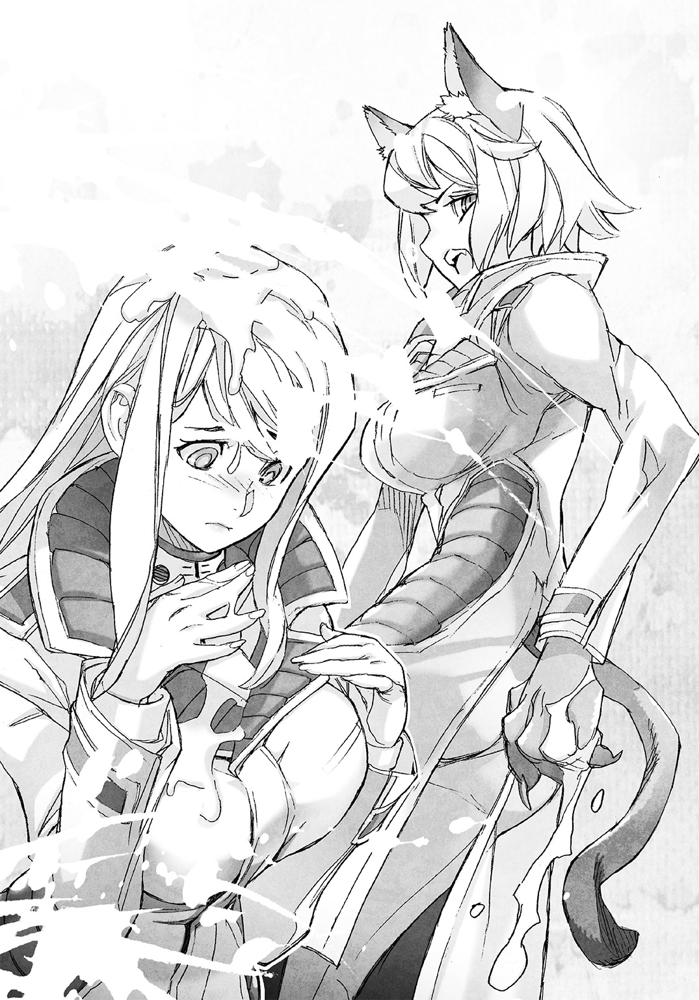
「奴らの汁、どーにかしてえ......べたべたするし臭えし何か粘っこいし」
唐突なリジーの行動が、エヴァの注意を兵士の死からそらすためだとトーヘイはわかった。
ちらりと視線を交わす。リジーの目がここは任せろと告げている。
「ハ、ハンカチならありますけどっ」
エヴァがあたふたとリジーにハンカチを差し出した。綺麗にアイロンのかかった高級そうなハンカチで、テラフォーマーの体液を拭くにはもったいない代物だった。
「自分を拭けよ、あたしのことなんか気にしなくていいからさ」
「大丈夫です、また何枚か持ってますし」
エヴァが別のハンカチを上着のポケットから取り出した。
「それならありがたく借りる！ ありがと、これで顔ぐらいぬぐえるぜ！」
リジーがハンカチを受け取るとさっそくごしごしと顔をこすった。
エヴァの表情からわずかに深刻さが消えた。エヴァも丁寧な手つきで顔を拭う。
トーヘイはその二人のやりとりを横目に、自分が射殺したテラフォーマーのところに行った。
やけにもろかった。そのリジーの言葉が気になったのだ。
二体ともうつ伏せに倒れている。片方テラフォーマーの頭を蹴飛ばして様子を見た上で、念のためにもう一発ずつ、至近距離から弾丸を頭に叩き込んだ。
絶命していることを確認する。弾倉を交換してから拳銃をホルスターに戻し、しゃがんでテラフォーマーの身体をひっくり返す。
胸と頭の銃創から流れ出した脂肪体が、ぬるりと手に付いた。
「これは顔に浴びたくないね......やっぱり見間違いじゃなかったか」
仰向けにしたテラフォーマーの顔をトーヘイは観察した。
三つの弾痕がある額の下、特徴的な眼があった。
もう一体のテラフォーマーの身体もひっくり返し、眼を確かめる。
「やはり、コイツもか。何なんだ、コイツらのこの眼は」
通常のテラフォーマーは哺乳類に近いレンズと水晶体を持つ眼だが、このテラフォーマーたちの眼は、蜻蛉や蠅に代表される小さな眼が無数に集合した複眼だった。
トーヘイは様々な資料でテラフォーマーについて学んだが、複眼のテラフォーマーのレポートなど見た記憶など微塵もない。
「どういうことだ？ Ｕ―ＮＡＳＡ関連の研究所から脱走した個体じゃないってことか？ 卵鞘があったということは、ここで繁殖したのか？ それにしては成体の姿を見かけない。そもそもこんなところに卵鞘を産むのか、テラフォーマーが？」
わからないことだらけだ。わかることは、このテラフォーマーが従来のクローンテラフォーマーと異なる遺伝子を確実に持っているということだけである。
「......どこかの誰かが、この基地でテラフォーマーの改造を研究しているのか？ そんな、まさか」
テラフォーマーの改造研究。
その意味することをトーヘイは一つ思いつき、口を閉ざした。
「......それは。さすがに、悪い冗談だ」
ひとまずトーヘイは考えることを止め、立ち上がる。
振り向くと真っ青な顔をしたジムと視線が交わった。
「き、君たちは......いったい......そ、その姿は......」
そのジムの声は、怯えきっていた。ここでトーヘイはようやく気がついた。
自分が人為変態をしたままだということに。
見られてしまったものは、仕方がない。
Ｕ―ＮＡＳＡにしても、陸軍と共同任務なのだからこのケースは想定しているはずだ。
トーヘイは割り切って、言えることだけを伝える。
「僕たちは存在そのものがＵ―ＮＡＳＡの、ひいては国家の機密のようなものです。詳しくは説明できませんが、僕たちは、あれと闘う力を持っています。今はそれで納得してもらえませんか？」
倒したテラフォーマーを指さし、トーヘイはそう告げた。
「き、機密......それなら、仕方ないが......」
ジムはしばし悩むような素振りをした後、トーヘイたちの倒したテラフォーマーを恐ろしげに見やった。
「あ、あれは。いったい、何なんだ」
「あなたたちが言っていたコックローチマンですよ。Ｕ―ＮＡＳＡではテラフォーマーと呼んでいますが、これも機密ですので名前以上のことは説明できません。ただ......目の当たりにしてご理解いただけたと思いますが、あれは本能的に人間を襲い、殺します。そして生半可な攻撃では怯みもしません。基地に入る前に説明しましたが、もう一度、言っておきます」
トーヘイは自分の胸中央を指さした。
「奴らを仕留めるには、慌てず落ち着いて、胸の中央を正確な射撃で確実に破壊してください。アサルトライフルの貫通力なら通用します。脳を破壊するより効果があります。いいですね、絶対に忘れないでください」
「......ああ。頭に叩き込んでおくよ」
ジムは力なく答えると、顔を青ざめさせたままで殺された兵士二人の亡骸に向かった。
「ベン......カール......すまない」
首があらぬ方向に曲がって絶命している兵士の胸元から、ダニエルがディックが死亡した時に行ったように、ジムがドッグタグを一枚ずつ回収する。
ジムがドッグタグをポケットに仕舞って立ち上がる。
入り口の向こうからドタドタと騒々しい足音が聞こえてきた。
「副隊長、今の銃声は！」「何があったんだっ？」
通信をしに出ていたハリーとモーリスが、血相を変えて部屋に駆け込んできた。
二人の顔を見て、ジムが心底ほっとしたような表情をする。
「......おまえたちは、無事だったか。よかった」
ハリーとモーリスが、管制室の中の異常に気がつき、驚きの声を上げる。
「ベンとカールがやられたのかッ!?」
「何だ、この化け物の死骸っ？」
ハリーとモーリスが、ジムのそばに駆け寄った。
「副隊長、この化け物にカールたちがやられたのかっ？ コイツらいったい、何なんだ！」
「これが、コックローチマンだそうだ。銃でも殺せるが、二人は運がなかった。そこの卵から四体が孵化したその目の前に、ベンとカールはいた......一瞬だったよ、首を折られるのは」
「畜生ッ」「クソが！」
ハリーとモーリスがテラフォーマーの死骸を足蹴にする。
「コイツらはまだ他にもいるかもしれない。これまで以上に警戒するんだ」
「......ほんとうにいたのか、コックローチマン」
「気持ち悪い化け物だぜ」
ハリーとモーリスは、テラフォーマーの死骸を気にしてトーヘイたちが人為変態していることには気付いていないようだ。
トーヘイはリジーに目配せし、ハリーとモーリスが人為変態に気付いて騒ぐ前に元の姿に戻ろうと、先に人為変態を解く。
リジーはトーヘイの目配せの意味を理解しなかったらしい。だがエヴァには伝わったようだ。
「？」と不思議そうな顔をするリジーに、エヴァが耳打ちをする。
変身を解いたほうがいいとエヴァに言われて、リジーは自分がネコ姿のままだとようやく気付いたのか、軽く驚いた顔をして元の姿に戻った。
不意にモーリスがリジーたちを気にする。
「――今。Ｕ―ＮＡＳＡの連中、コスプレしてなかったか？」
げ、とリジーがうろたえる。
「こ、コスプレなんかするわけねえだろ、こんな非常事態によ」
「だけどよ。頭に猫耳とかついていたような気がしたんだが」
「そんなもの付けてねえって、生えることはあってもっ」
リジーが両手で頭を押さえた。
このままリジーにしゃべらせたらボロが出そうだとトーヘイは会話に割って入る。
「コスプレをしたりはしませんよ、奴らと闘うために少々装備を変えましたが」
「君たちが倒したのか、コイツらを？」とモーリス。
「そうです。僕たちはコイツらと闘う術を知り、その力を持っています。お二人の死亡は僕にも責任があります。僕が早く卵鞘に気付きさえすれば......」
モーリスが小さく舌打ちをする。納得していない表情でトーヘイから視線を外した。
「責任の所在は、ここから生きて帰ってからはっきりさせればいいだろう。今ここでそんな話をする意味なんてない」
「その通りだ」とジムがモーリスの肩を叩く。
「それよりモーリス、通信はできたのか？」
モーリスが、はっとした顔になる。
「そうだ、その報告忘れてた！ 窓際でどうにか本部と通信がつながった。電源管理についてのパスワードは、変更された記録はないそうだ。変更されていたとしたら、一〇年前の現地調査で作業した人間が独断で作業し、報告を忘れていたとしか考えられないらしい」
「作業を行った人間に確認は取れないのか？」
「すでに退役し軍を去っていて、消息を追うには時間がかかるそうだ。でもひとまず電源は復旧できたようだし、気にしなくていいんじゃないか？」
「ああ。今は隊長の班と連絡を取ることが先決だ......ここだとやはり通信がつながらない」
ジムがゴーグルを操作し通信を試みたが、失敗したらしい。
トーヘイはポケットから携帯端末を取り出した。
任務開始の前に、イザベラたちドイツ班のメンバーのアドレスを登録してある。
「こちらでも通信を試してみます」
イザベラにするかサンドラにするか、トーヘイは短く迷った。
話がしやすそうなサンドラに通話リクエストを送り、携帯端末を耳に添える。
『この端末は電波状況の悪い環境にあり、ただいま、通信機能が全て使用不可能になっています。速やかに電波状況のよい場所に移動してください』
と女性オペレーターを摸した合成音声で警告された。
携帯端末をしまい、トーヘイはジムに告げる。
「こちらも無理ですね。この地域一帯、電波状況がかなり悪いようです」
「やはりか。それならまず建物を出てから隊長の班と通信を試みよう。ハリー、外へのルートにドローンを先行させてくれ」
「了解だ」とハリーがゴーグルを操作した。
どこかで待機していたらしいドローンのローター音が聞こえ、遠ざかる。
「先頭には僕が立つ。ハリーとモーリスはしんがりを。Ｕ―ＮＡＳＡの皆さんは僕に続いてください」
「あいよ、副隊長さん。ハンカチ、ありがとな」
リジーがテラフォーマーの様々な汁でべたべたになったハンカチをエヴァに返すと、投げた対テラフォーマー蟲取り網を拾いに行った。
「......洗って綺麗になるのかな」
エヴァが困った顔で、自分のぶんとリジーのぶん、汚れたハンカチを畳むと別の綺麗なハンカチを取り出して包み、ポケットにしまう。
「行こう」とジムが先に立って部屋を出る。
「ちょっと待ってください」
トーヘイは最初に操作した端末の場所に戻り、ノートパソコンとバックパックを回収した。
ノートパソコンをバックパックに収め、置きっ放しだった対テラフォーマー蟲取り網を背負い直すと、急いでジムを追い、横に並ぶ。
「僕も前方警戒をしますよ。さっき見てもらったように、奴らとの闘いなら僕のほうが慣れていますし」
「......トーヘイさん。まだ襲ってくると思うかい、コックローチマン――いや、テラフォーマーが」
「襲撃があるか否かの可能性なら、あると思います。ないということを確証する材料が何もありませんからね、あると考えるしかない」
「そうか」とジムが小声で返した。
その声がわずかに震えているようにトーヘイには感じられた。
†
手術台に、レイナが横たわっている。
ジャニスは、レイナの身体から壊死した体組織をレーザーメスで切除する手術を行っていた。
部屋には基地中に設置された監視カメラの映像をリアルタイムで映すモニタが幾つもある。
そのモニタの一つに映った監視カメラ映像にジャニスは息を呑み、手にしたレーザーメスを落としそうになった。
「......い、今のは......テラフォーマー......？」
管制室内に設置された監視カメラの映像だった。
四体のテラフォーマーが卵鞘から孵化し、兵士二人を殺害。
人為変態したトーヘイとリジーに駆逐されるまでの一部始終をジャニスは目の当たりにした。
じっくりとは見えなかったが、テラフォーマーは通常のタイプとは違っていたようにジャニスには思えた。麻酔もかけずに治療を受けているレイナは、手術台の傍らに設置した端末のキーボードを左手のみで叩いている。
モニタには多数のウインドウがあり、監視カメラ映像やプログラムらしき数式の羅列がめまぐるしい勢いで表示され、切り替わる。レイナが何かを操作しているようだ。
レイナが左手の動きを止めずに、頭を横に向けてモニタを見つめたまま告げる。
「そう驚くことはないと思います、テラフォーマーの兵器利用程度に」
ジャニスにとっては充分驚くに値する言葉だった。
「利用っ？ 操っているというの、テラフォーマーを？」
「操ってはいません。遭遇した人間を襲い殺す、そのテラフォーマーの本能を使っているだけです。もっとも、兵器として利用するために、生物として制御はしていますけれど」
「制御？ 操ることと、どう違うの？」
「施術の手が止まっています。説明はしますから、手術を続けてください」
「――あ。ごめんなさい、続けるわ」
レイナはレーザーメスを握り直すと患部の処置を再開した。
ちりちりと肉の焼ける音がし、タンパク質の焦げる臭いが立ちこめる。
焼き切られているのが自分だということを気にもしないように、レイナが口を開き直す。
「あのテラフォーマーは、短期培養型――言わば使い捨ての生体地雷です。孵化寸前まで調整した卵鞘を罠として設置すれば、後は勝手に孵化して急成長したテラフォーマーが、手当たり次第に敵の人間を抹殺してくれます。
卵鞘は低温保存すれば中の幼体を冬眠状態で保持できますし、成長促進剤を利用した冬眠解除装置を使えば、任意の場所、任意のタイミングで、テラフォーマーを孵化させることも可能です」
淡々としたレイナの説明に、ジャニスは戦慄を覚えた。
冗談じゃない、と治療の手が再び止まる。
「そ、そんな使い方をしてテラフォーマーが勝手に繁殖したら、世界が終わるわよっ」
「そこは問題ありません。卵鞘の段階で、放射線を使って生殖機能は破壊してありますし、孵化直後に成体まで一瞬で成長する反面、寿命は長くても三日と極端に短くなっています。
成長速度を速めた反動でノーマルのテラフォーマーと比べて能力は六〇パーセント程度ですが、人間相手ならそれで充分です。放っておいても多少余計な人間が死ぬくらいで、生態系に異常を来すような問題は起こりません」
兵器利用可能なテラフォーマーが存在する。
新たな驚きにジャニスの手は止まったままだ。
「そんなもの。いったい誰がどうやって造ったというの......」
「最終的に造ったのは私。基礎研究は、父と私で。ショウジョウバエの生殖関係のＤＮＡを組み込んで生殖サイクルの短いゴキブリを開発し、そのゴキブリのＤＮＡをクローンテラフォーマーの体細胞に組み込み、開発しました。元はゴキブリだけあって、遺伝子改造ゴキブリのＤＮＡは、驚くほどにテラフォーマーのＤＮＡによく馴染みます」
ちらりとレイナがジャニスに目を向けた。
「クローンテラフォーマーの体細胞なんてどうやって手に入れた、という表情ですね。当然の疑問だと思います。一ヶ月半ほど前、クローンテラフォーマーの雌の素体を手に入れた父が、卵母細胞を採取し、秘密裏に私に送っておいたのです。設備さえあれば、今はクローン複製が短期間で可能。それはあなたも知っていることだと思いますけれど？」
「......知ってはいるけれど。実行するのが難しいのもまた、知っているわ」
「それを可能にする研究データを、父と私は持っています。どうでしょうか？ この治療行為の報酬に興味は持っていただけましたでしょうか」
想像以上にヤマバ父娘の研究データには価値がありそうだ。
ジャニスは興奮しそうになる自分を抑え、あえて素っ気なく振る舞う。
「......ええ。悪くなさそうね」
ジャニスは治療を再開した。しばらくして今度はレイナが質問を口にする。
「テラフォーマーを倒した、あの二人。ネズミとネコの――ジャニス、あなたは彼らを知っていますよね？」
彼ら。その言葉でレイナは目をモニタの一つに向けた。
残った兵士とＵ―ＮＡＳＡのメンバー三人が管制室を出ていくところが映っている。
先頭の兵士の隣を歩くトーヘイと、そのすぐ後ろ、淡い金髪の少女の横にいるリジーの顔が斜め上からの映像でも見て取れた。
「知っているも何も、あの二人のＭ．Ｏ．手術の執刀チームの一人だったわ、私は」
「あの二人、開発者から見て、出来映えはどうですか？」
開発者。そのいかにも研究者的な発想の言葉がジャニスは引っかかった。
だが自分自身、Ｍ．Ｏ．手術の被験者を実験用の機材のように考えていなかったと言えば、噓になる。
「私が開発を主導したわけじゃないけれど。そうね。免疫寛容臓の適合率が低くて免疫抑制剤を常に服用しなくてはならないという致命的な欠陥を除けば、哺乳類型ベースとしてはかなりの完成度と言えるわ。対テラフォーマー戦闘能力も高く、一対一なら問題なし。五対一くらいでも条件次第で負けはしない」
「そうですか。それなら一〇対一以上の状況にすれば、性能の低い短期培養型テラフォーマーでも、彼らを陵辱できる可能性があるということですね」
「......」
「気に入らないという表情ですね。実験素体に過ぎない彼らに情でも移っているのですか？」
「............いいえ。特にそんなことはないわ」
言いつつ、ジャニスは考える。
自分は、レイナほど色々なものが割り切れていないと。
父親ゴッド・リーを改造し、むざむざ死ぬだろうとわかっていて火星に送り込んだＵ―ＮＡＳＡに復讐したいと望んでいても、卵鞘を盗む程度に手を汚すだけで、己の手を血まみれにするほどの覚悟が、今のジャニスにはない。
レイナの血膿で汚れた治療用の薄いスキングローブをはめた手を、じっと見る。
「あなたの父親、自分自身でバグズ手術を施したらしいわね。できるの、そんなこと？」
「可能かどうかでしたら、問題なく可能です。私も幾つかのバグズ手術を自分で自分に行いました。そのデータももちろん存在しますが、閲覧はあまりおすすめしたくありません。意識を失わないよう局所麻酔で自分の腹を裂き、内臓をいじり回す動画、見たいと思いますか？」
レイナのからかうような眼差しの奥に、別の意思をジャニスは感じ取った。
何かを見透かされている気がして、すぐに視線を逸らす。
「バグズ手術で人をやめると、人がよくわかるようになります。それに、色々なものが割り切れるようになりますよ――誰もがそうなれるとは限らないと思いますけれど」
悪いことばかりじゃ、ありません。
ささやくようにレイナはそう言った。
ジャニスは処置する手元だけをじっと見て、他人事のように返す。
「......関係ないわ、私には」
Ⅲ ブービー・トラップ
「隊長。応答願います、隊長」
管制室のあるコントロールセンタービルから外に出てすぐ、ジムがゴーグルの耳辺りにあるユニットを片手で操作して通信を試み始めた。
トーヘイの肩を、ちょんちょんとリジーが突く。
「おまえも通信してみたらどうだ？ 通じるかもしれねえぜ？」
「そうだね。彼らとは使っている周波数も違うし、試してみる価値はあるか」
トーヘイは携帯端末を取り出してリジーやジムから少し離れ、先ほど通話を試みたサンドラに再び通話リクエストを送った。
携帯端末を耳に当てる。今度はコール音が鳴り始めた。
『は、はいっ。サンドラです。トーヘイさんですかっ？』
サンドラの声には焦りの色がある。
「どうかしたんですか？ まさか、そっちでもテラフォーマーが出た？」
『で、出ました！ それで兵隊さんが一人、犠牲になって！ テラフォーマーはイザベラが五体倒したんですけれど、一体、後から現れたのに逃げられてしまって、今度はイザベラと兵隊さんたちがっ』
早口でサンドラが伝えるその後ろで、兵士たちが騒いでいるのがトーヘイに聞こえた。
『この化け物め、テメェもあのゴキブリの仲間だな!!』
『畜生、殺してやる!!』
『やれるものならやってみな！ そこのゴキブリ同様の姿にしてやるさ！』
イザベラの怒声。さらに兵士の怒声が重なる。
『フレディの仇を取ってやる!!』
『貴様を殺して逃げた奴を追うぞ！』
『止めろ馬鹿者ども!!』
最後の声にトーヘイは聞き覚えがあった。ダニエルの声だ。
騒ぎのせいでダニエルはジムからの通信に気付いていないらしい。
「サンドラさん、ダニエルさんに伝えてもらえますか？ 今、そちらに副隊長のジムさんが通信を送ってますので応対してくださいと」
『は、はい！ やってみます！』
サンドラが携帯端末を顔から離したのか声が遠くなる。
『隊長さん、副隊長さんから通信が！ そちら応対してもらえませんか!?』
『通信？ ――ああ、気がつかなかった。いいな、おまえら。とにかく落ち着け！ これ以上騒ぐなら、俺がこの場でおまえらを処罰しなければならんからな！』
ダニエルが一喝し、兵士たちの声が聞こえなくなった。直後、
「ああ、やっと隊長につながった」とジムの安堵の声をトーヘイは聞いた。
トーヘイは改めてサンドラに呼びかける。
「サンドラさん？ 聞こえますか、サンドラさん？」
『――あ、はい！ 聞こえています、大丈夫です！』
「そちらの事情はだいたい察しが付きました。こちらでもテラフォーマーが出て、残念ながら犠牲者が出てしまいました......サンドラさんイザベラさん、お二人に怪我はないですか？」
『大丈夫です。イザベラが人為変態してテラフォーマーをすぐに倒しましたから。私は人為変態する暇さえなかったです』
イザベラのＭ．Ｏ．手術のベース生物はリオックだ。
バッタ目コロギス上科に属する大型昆虫で、極めて獰猛で戦闘力が高い。
Ｍ．Ｏ．手術はベース生物の戦闘力に大きく影響を受ける。
強力な昆虫であるリオックがベースならば、並のテラフォーマーなど敵にならないだろう。
「それはよかった......アドルフさんから預かったあなたたちに何かあったら、僕が何をしても償えませんので」
『いえ、私たちに仮に何かあっても、班長はトーヘイさんを責めるような方ではないですよ。責めるとしたらご自身だと思います』
「誠実な方なんですね」
『誠実が服を着ていらっしゃるような人ですよ。少し感情表現が苦手ですけれど』
トーヘイは、アドルフのむすっとした表情を思い出した。
不機嫌そうに見えても眼差しは優しい。あの眼差しがアドルフの本質なのだろうと思う。
「ああ。わかる気がします。それならいっそう、あなたたちを無事に帰さないと。あなたたちは火星に行って大きな役割を果たさなくちゃならない。こんなところで怪我をさせるわけにはいきません」
『ありがとうございます。エヴァは大丈夫ですか？ あの子、闘えないから心配で』
「大丈夫です。彼女はきっちり、リジーが守りますよ。リジー、口は悪いですが責任感が強いですからご心配なく」
『そういうところ、イザベラと似てますね』
『あ？ あたしが何だって？ ってサンドラ、誰と通信してるんだよ』
イザベラの声が割り込んだ。サンドラの近くにいるようだ。サンドラが通話口を押さえずにイザベラと会話する。
『トーヘイさんです。あちらもテラフォーマーが出たそうですが、エヴァは無事ですって』
『そりゃ当然だ。エヴァに何かあったら、あっちの猫娘をあたしがぎったんぎったんにしなくちゃならねえ。それは面倒だからな、せいぜいきちんと守れと伝えてくれや』
『――だそうですよ。聞こえてましたか、トーヘイさん』
「はい、聞いていました。伝えておきます」
ちらりとトーヘイは、離れたところにいるリジーとエヴァを見やった。
何やら雑談しているが、会話は聞こえてこない。テラフォーマーの体液で汚れた髪を気にしているのだけは仕草でわかった。
サンドラが少し間を置いて話をする。
『――あの。私たち、これからどうしたらいいんでしょうか』
これから。それはトーヘイも気になっていることだ。
「Ｕ―ＮＡＳＡの本部に連絡して指示を仰ごうと思っています。とりあえず、今は陸軍の指示に従っていてください、自分の身に危険がないと判断できる限りですが」
『わかりました』
「くれぐれも、お気を付けて。ではまた後で」
『はい、トーヘイさんもお気を付けて』
トーヘイは通話を切り、少し離れた場所でダニエルと通信しているジムを見やった。
「――了解しました。では通信を終わります」
ジムも通信を終えるところだった。
ゴーグルを片手で操作しつつ、ジムがトーヘイのところに来る。
「先ほど見た、ジャニス・リーが拉致された映像のルートを、こっちの班で探査することになったよ。隊長たちは逃げたテラフォーマーを追跡、撃滅する」
「リスクを承知の上で任務続行ということですね」
「僕は一度帰還することも検討するべきだと進言したんだが......目の前で仲間を殺されて、ここで引き下がるつもりはないと向こうの班は意見がまとまってる。この近隣に民家や民間の設備はないが、テラフォーマーが基地の外に逃げ出して殺人を繰り返す可能性も無視できないし、可能な限り駆逐する。それが隊長の決定だ」
ふむ、とトーヘイは考える。
この基地にどれだけのテラフォーマーが存在するかは不明だが、もし大量に生息しているのならば、人間が基地に入り込んだ時点で『巣を荒らす外敵が現れた』と集団で攻撃をしかけてくるだろうと予想がつく。
事実。バグズ二号が火星に行った際、テラフォーマーが大挙して襲来したという記録が残っている。
数が少ないのならば、ここで叩いてしまうべき。トーヘイもそう結論づけた。
「僕も異論はありません。リジー、エヴァさん、ジャニスさんの捜索を続けるが、いいね？」
トーヘイは離れた場所のリジーとエヴァに呼びかけた。二人が揃って駆けてくる。
「おう、いいぜ。ジャニスを見つけるついでに一匹でも多く奴らを見つけて、ぶっ潰すってことだよな？」
エヴァが担いでいる対テラフォーマー蟲取り網を重そうに構えた。
「一匹くらい、これで捕まえたいです。班長も喜んでくれると思うから」
ジムが周囲を警戒しているハリーとモーリスを呼び戻す。
「二人とも行くぞ！ ハリー、ドローンを研究棟方面に飛ばしてくれ！」
「了解！」とハリーがゴーグルを操作する。
近くの上空を飛んでいた四機のドローンが、基地の奥に向かって移動を始めた。
「モーリス、しんがりを頼む。ハリー、僕と一緒にフロントに立ってくれ。Ｕ―ＮＡＳＡの皆さんは三人、間に入ってついてきてください」
ジムとハリーがアサルトライフルを構えて先頭に立った。
二人の後ろにトーヘイ、そのさらに後ろにリジーとエヴァが並んで続き、最後尾に兵士のモーリスがつく。
ジムたちが周囲を警戒しつつ、普通に歩くよりはやや遅い速度で前進を始めた。
前を行くジムの背にトーヘイは問う。
「進みながらで構わないので、僕も上司に連絡をしていいでしょうか」
ジムが振り向かずに答える。
「構わないが、できるだけ手短に頼む。どこに敵が隠れていないとも限らないからね」
「わかりました」
トーヘイは携帯端末を操作し、すぐにアドルフに通話のリクエストを送った。
コール音一回で通話がつながる。
『アドルフ・ラインハルトだ。どうした？ 何かあったのか？』
まるで携帯端末を持って待っていたかのようなレスポンスの速さにトーヘイは面食らった。
「あ、お、お疲れさまです、タチバナです」
『わかっている。君からの通話に応じたのだからな。何か報告があるのではないのか？』
淡々とした口調ではあるが、言葉からはわずかに焦りが感じられた。部下の身を案じているらしい。
「任務行動中なので手短に結論からお伝えします。ジャニスさんは未だ発見できず。何らかの遺伝子改造を受けたと思しきテラフォーマーによる襲来を受けて陸軍に犠牲者が出ましたが、Ｕ―ＮＡＳＡメンバーは全員無事です」
『陸軍には気の毒だが、君たちが無事なのは幸いだ。遺伝子改造を受けたテラフォーマーというのは？』
「発見した時は卵鞘でした。孵化してすぐに成体まで成長し、眼が複眼で赤いのが特徴です。通常のクローンテラフォーマーと比較すると弱い印象を受けました」
『......ふむ。サンプルは確保できなかったのか？』
「死骸なら、基地コントロールセンタービルの管制室内にあります」
『そうか。回収班を派遣することを検討する。ジャニス・リー捜索は続行しているのか？』
「はい。ジャニスさんの捜索と同時に、テラフォーマーが基地のどこかに残っている可能性もありますので、その調査と撃滅を目標に行動をしています」
『わかった。無理をしても君たちにできることなどしれている、せいぜい死なないように頑張ることだ。最後に責任を取るのは俺なのだから』
「アドルフさんに責任を取ってもらう事態にならないよう努力します――では失礼します」
『ああ。それでは』
アドルフの返事を聞いてからトーヘイは通話を切って携帯端末をしまった。
ジムが前を向いたままトーヘイに問う。
「今の通信相手は？」
「アネックス一号計画の幹部の一人です。アネックス一号計画はご存じですか？」
ジムが前を警戒したまま振り向かずに答える。
「この旧グルーム・レイク陸軍基地から遠くないところに発射基地がある、大規模有人火星探索機の計画だろう？ 知っているのはそれくらいかな」
アネックス一号計画の真の目的は、感染が増えつつあるＡ・Ｅウィルスのワクチンの開発だ。
Ａ・Ｅウィルスは現在、感染すると治療の手段がなく不治の病となってしまう。
このウィルスは火星由来と推測されているが、現在は培養そのものができない。
そこで現地である火星に赴き研究を行うのである。
このことは民間には発表されていない。アネックス一号計画は、テラフォーミング過程の大規模有人火星調査計画と発表されているだけだ。
ジムが知っているのは一般人と同レベルの情報らしい。
テラフォーマーについての詳しい情報を知らなかったことからもわかる。
Ｕ―ＮＡＳＡは軍にあまり情報供給をしていない、と。
異なる組織が情報を共有しないせいで現場の人間が苦労するのは、よくあることだ。
ジムの後ろ姿を見つつ、トーヘイは考える。
――彼らはテラフォーマーについて知らなさすぎる。
――いざという時は、僕が状況をコントロールしないと。
トーヘイは気を引き締め、ジムの背中を追った。
「......にしても探索って退屈だな。いい加減、飽きてきたぜ」
探索再開から二時間近くが経過し、リジーが辟易とした顔で言った。
風景は、基地に入った時からあまり代わり映えしない。
コンクリートの素っ気ない建物や鉄筋モルタルと思しき倉庫が、アスファルトで舗装された二車線道路の両側に建っているだけだ。
基地だと知らない人間が写真を見せられたら、ただの街だと思ってしまうような風景である。
エヴァがきょろきょろとする。
「外からだとわかりませんでしたけれど。ずいぶんと広いんですね、この基地」
二人の後ろにいるモーリスが、後方を警戒したままで口を開く。
「小さな街ならすっぽり入る面積だからな、この基地は。あんたたちの宇宙船基地も含めて、辺り一帯を昔はエリア51と呼んでいたんだが、総面積は一五〇キロ平方メートル以上もある。この基地だけでもざっと二〇キロ平方メートルだ。マンハッタン島のだいたい四分の一だな」
うへえとリジーが声を漏らした。
「そこを全部歩き回るのかよ、気が遠くなるぜ」
「ちょっと疲れました......これ、重たいですし」
エヴァが、肩にかけている対テラフォーマー蟲取り網のベルトの位置を直した。
「緊張しっぱなしのこの状況、素人さんにはそろそろ辛いか。副隊長！ ここらで一度休憩しないか！」
モーリスが班の先頭にいるジムに呼びかけた。
ジムとハリーが足を止め、トーヘイも立ち止まった。
ジムが振り向いて答える。
「この辺りは開けているし、比較的襲撃の恐れも少なさそうだ。よし、ドローンに周辺を警戒させて休憩にしよう。ハリー、頼む」
「了解」とハリーがゴーグルを操作し先行していたドローンを呼び戻し周辺を警戒させた。
トーヘイは対テラフォーマー蟲取り網を傍らに置くとバックパックを下ろし、中からミネラルウォーターを取り出した。飲み口のついたパックタイプだ。
「確かに少し疲れたかな。水分を補給しておかないと」
ぱきっとパックのキャップを開け、水を飲む。
水が胃に落ちる間もなく身体に染み渡るようで、旨い。
「旨そうに飲みやがって。あたしも飲もっと」「私も」
リジーとエヴァも対テラフォーマー蟲取り網を地面に下ろすと、バックパックからミネラルウォーターを取り出し、飲み始めた。
リジーが、ずずずずっと一気にパックの水を吸いきった。
「ぷはーっ。旨えな、ただの水のくせに！ どれもう一本――」
「やめておきなよ、リジー。任務はまだ続くんだ」
「ちぇっ。それもそっか。んじゃこれはゴミ――」
パックを握り潰してリジーが捨てようとする。トーヘイは慌ててそれを止めた。
「捨てちゃダメだ、このパックは雨水と浄化剤を併用してリサイクルできる。ミネラルウォーターを飲みきったら、どこかで水を調達する時に使うんだ」
「けちくせえなあ。でもま、そういうことなら捨てずにおくか」
リジーが乱暴な手つきで飲み終えたパックをバックパックに突っ込んだ。
ちびちびと水を飲んでいたエヴァが、ふと呟く。
「――この水で顔、洗いたいな」
浴びたテラフォーマーの体液はハンカチで拭ったが、それではやはり不満らしい。
「そうだそうだ、ウエットティッシュとかあったんじゃねえか？」
リジーがバックパックに手を突っ込み、ごそごそと探す。
「ありましたっけ。あるなら使いたいな」
エヴァも飲みかけのパックにキャップをすると、バックパックの中を探し始める。
トーヘイは、そう言えば装備リストにはウエットティッシュがあったと思い出した。
見つけられずに四苦八苦しているリジーと違い、トーヘイはバックパックから簡単にウエットティッシュを見つけて取り出した。ポケットタイプで量は多くない。
エヴァもポケットティッシュを見つけて取り出したが、表情が暗い。
「......少ないですね......」
「エヴァさん、僕のも使っていいよ」
トーヘイは自分のウエットティッシュをエヴァに差し出した。
ぱあっとエヴァが表情を明るくする。
「いいんですか？ それならお言葉に甘えます！」
リジーがバックパックを逆さまにして中身を地面にばらまきながら、声を上げる。
「あ、ずるい！ 半分、あたしにもよこせよな!! ――あ、あった！ クソッタレ、どこに入り込んでたんだよっ」
リジーがバックパックを投げ出すとばらまいた荷物の中からウエットティッシュだけを拾い、バリッと乱暴にパックを開けてさっそくとばかりに顔を拭き始めた。
その手つきがどことなくネコが手で顔を洗う仕草に似ていて微笑ましい。
トーヘイはくすりと笑うと、リジーのバックパックを拾い、ばらまいた荷物を片付け始めた。
「おう、サンキュ」
に、とリジーが笑みを見せる。ふっとエヴァが頰を緩ませた。
「仲がいいんですね、お二人。お付き合いしてるんですか？」
トーヘイは片付けの手を止めてエヴァを振り返った。
「いや、別にそういうことは――」
「そそそ、そんなんじゃねえよッ!!」
トーヘイの言葉をかき消すほどの大声だ。リジーが顔を真っ赤にして、ぐしゃぐしゃにして持ったウエットティッシュを顔の前でぶんぶんと横に振る。
「ち、ちげーよ、バカッ。あたしみてえなガサツで頭の悪い女、コイツみたいなエリート野郎が相手にするわけねえだろっ。コイツ、これでもう大学、出てるんだぜ？」
エヴァが何気なく問う。
「トーヘイさんっておいくつなんですか？」
「僕は一八だけど」
「噓っ？ 私、サンドラさんと同じくらいかと思ってましたっ」
「サンドラさんって何歳なんです？」
トーヘイは何となく嫌な予感がしたが、一応までに訊ねてみた。
おとがいに指をあて、エヴァが小首を傾げる。
「ええと。二八歳だったかな」
予想よりもサンドラの歳が上だったので、トーヘイは軽くショックを受けた。
「......うん。まあ割と歳の割には大人びているとは、言われるほうだよ」
「気にすんな気にすんな！ ガキっぽく見られるよりはよっぽどいいぜ」
ばんばんとリジーが乱暴にトーヘイの背中を叩く。でもまあ、と挟んでリジーが続ける。
「マジであたしとコイツ、そういうんじゃないから。そりゃ大事なパートナーだけどよ」
「そうだね。絶対に欠かせない相棒だよ。その意味では恋人よりも大事かな」
「てて、照れるようなこと言うんじゃねーよっ」
リジーが拳でトーヘイの頭を殴った。痛いことは痛いが、今のトーヘイにはその痛みも多少心地よい。
トーヘイとリジーのやりとりを見て、エヴァが真顔で告げる。
「お似合いだと思うんですけれど」
エヴァが、いそいそと顔をウエットティッシュで再び拭き始めた。
リジーがネコ招きのような手つきで、ウエットティッシュをひらひらと振る。
「そういうあんたは、どうなんだ？ あのアドルフっていうオッサンとよ」
「なっ、何を、い、いきなり、言い出すんですかっ？」
エヴァが一瞬で耳まで赤くなり、うろたえた。
この手の話題に疎いトーヘイにもさすがにわかる。
エヴァが明らかにアドルフを男性として意識していると。
リジーが楽しそうに声を弾ませる。
「おいおい、ジョークだったのにビンゴかよっ。オッサン趣味ったあ、あんたもずいぶんマニアックだなっ」
「班長はオッサンなんかじゃありません、まだ二七歳なんですよ！」
リジーが目をぱちくりと瞬かせる。
「あの落ち着きっぷりと迫力で、マジで？ 小吉のオッサンと同年代かと思ってたぜ」
アネックス一号計画の総隊長、小町小吉は四二歳である。実年齢よりは若く見えるが、それでもアドルフを同年代に扱われたことが、エヴァにはショックだったようだ。
エヴァが涙目になって訴える。
「班長を小町艦長と一緒にしないでくださいっ」
リジーが悪びれずに笑顔で謝る。
「悪い悪い、そいつは失礼したな！ ところでエヴァ、あんたは何歳なんだ？」
「私ですか？ 一八です、皆さんと同じですよ」
きょとんとした顔でエヴァ。リジーが軽い口調で告げる。
「二七と一八か。んじゃお似合いじゃねーか、アドルフのおっさ――いや、アドルフさんとあんた。火星任務だって危険があるんだろ、出発前に告っておいたほうがいいんじゃねえの？ 何かあった時、後悔しないようにさ」
リジーの言葉に、トーヘイは改めて思い出した。
エヴァたちは火星に赴く――テラフォーマーが大地を埋め尽くす、惑星に。
物事に絶対はない。Ｕ―ＮＡＳＡが完璧を期して進めているアネックス一号計画にも、必ず不慮の事態というものは発生する。
その時、どんな危険がアネックス一号のクルーを待ち受けているか、トーヘイには想像さえできなかった。ただ無事に戻ってきますようにと願うのみだ。
トーヘイには、火星に行く前に後悔しないよう告白しておけば、とは言えなかった。
告白の結果がどうなるにしても、もし火星から帰ってこられなければ、後悔することさえできないからだ。
「エヴァさん。何かあった時の後悔なんて考えないほうがいい。生きて火星から帰る、それだけを考えるべきだよ」
あ、とリジーが小さく声を漏らした。軽率なことを言っていたと気付いたようだ。
エヴァが微苦笑して小さく首を振る。
「告白なんてしません――できません。あの人には、奥さんがいらっしゃいますから」
リジーがばつの悪そうな表情になり、頭をかく。
「......色んな意味で、悪かったな。あたし、やっぱバカだ」
「いいえ、謝ることなんてありませんよ。私は確かに班長を尊敬してますけど、その......これは恋とかじゃないと思います」
そう言った時のエヴァの表情は、誰が見ても恋する乙女のものだった。
エヴァは元々美人だが、今はいっそう可憐で美しく見える。
「ったく。綺麗になりたきゃ恋をするのが手っ取り早いって聞いたことがあるが、そういうことか。ごっそさん」
リジーが頰を朱に染めてそっぽを向いた。トーヘイも思わず照れてしまい顔を赤くする。
「その。何かごめん」
中断していたリジーの荷物の片付けを、トーヘイは再開した。
エヴァが不思議そうな顔をする。
「トーヘイさんまでどうして謝るんです？」
「さあ、どうしてだろうね。僕もよくわからないかな」
トーヘイは何て答えていいのかわからず、そう返した。
パッキングし直したリジーのバックパックを、持ち主にひょいと投げる。
「ほら、リジー」
「どーも」とリジーが片手で受け止め、バックパックを背負い直す。
リジーが汚れたウエットティッシュを丸めてポケットに突っ込むと、放置していた対テラフォーマー蟲取り網を拾った。
「なあ、トーヘイ。これ、さっきの奴らに通用すると思うか？」
「カワラザキさんから説明された通りの性能だったら、問題ないと思う。もし次に出たら捕獲を試みよう」
「余裕があったらな。でもまあたいてい奴らが出る時は、余裕なんかねえけどさ」
「はは、違いない」
トーヘイは軽く笑った。そこに重い声が飛んでくる。
「こんなところで恋話とは気楽でいいもんだな、Ｕ―ＮＡＳＡの連中は。こっちは二人も死んだというのに」
近くで休憩を取りつつ辺りを警戒していたモーリスだった。手にしていたミネラルウォーターのパックを握り潰してアスファルトに叩きつける。苛立っているようだ。
「......気に障ったのなら、すみません」
トーヘイはすぐに頭を下げたが、リジーが腕組みをして胸を反らす。
「ほっとけ。兵士が死んだのなんて、あたしたちには他人事だ」
「――何だと？」
モーリスの声に怒気が絡まる。暴発時のリスクを減らすために下に向けていたアサルトライフルの銃口が、わずかに上を向いた。
「俺たちがいくら死のうが構わないと言うのか、貴様」
「おまえ、バカか？ んなこと言うわけねえだろ」
「だったらどういうつもりだ」
「わっかんねえ奴だな。あたしたちも深刻な顔してりゃいいのか？ それで死んだ奴が生き返るってんなら、いくらでも深刻ぶってやるぜ？ でも、違うだろ」
ぎり、と音が聞こえるくらいにモーリスが強く歯を嚙みしめた。一緒に無念と悔しさを嚙み砕くかのように。
兵士が二人、死んだ。ダニエルの班でも一人、死んでいる。
トーヘイたちと兵士で、その死の受け止め方に温度差があるのは仕方がないことだ。
仮にＵ―ＮＡＳＡメンバーの誰かが死んだとしても、兵士たちはそれほど悼まないだろう。
互いを知らないということは、互いを思う情も薄いということだ。
「何か言ってみろよ」と突っかかるリジーを、トーヘイは片手で制した。
「やめるんだ、リジー。さっき笑った僕が軽率だったのは事実だよ。仲間が死んだ人の目の前で、明るい顔をするのはやはり無神経だった」
「......ちっ。わからなくもないけどよ、冗談でも言ってねえと死に呑み込まれるぜ？ おまえもあたしも、エヴァも。死なんざ意識しねえほうがいいんだ。どうせ死ぬ時は何をどうやったって死から逃れられねえもんだしよ」
ぶつぶつとリジーがこぼす。モーリスのアサルトライフルの銃口が、再び下を向いた。
「悪かったな、嬢ちゃん。あんたの言う通りかもしれない」
モーリスの謝罪に、リジーが困惑する。
「謝ることでもねえって。とにかくだ、あたしだってもう誰かの死は見たくねえ。だから、あんたも自分が生き残ることをきっちり考えてくれ」
「そうさせてもらう」
モーリスが気を取り直したように警戒に戻った。
直後。ドローンを操作して周辺警戒をしていたハリーが声を上げた。
「ジム！ そっちのゴーグルにもドローンのデータを送る、見てくれ！」
「了解」とジムがゴーグルを操作する。すぐさま表情が引き締まった。
ジムとハリーが顔を見合わせる。
「......これは。被害者のものか？」
「不法侵入者でなければ、他に可能性はないかと」
被害者。それが意味する人間は、一人しかいない。
ジャニス・リーだ。トーヘイは急いでジムのそばに行く。
「もしかして。ジャニスさんが、見つかったんですかっ？」
「今見せるから、ちょっと待ってくれ」
ジムが上着のポケットから携帯端末を取り出し、操作する。
「ドローン三号が三つ先のあの建物の中に生体反応を捉えたんだ。これだよ」
ジムが片手で建物を指さし、もう片方の手に持った携帯端末をトーヘイに見せた。
モニタには建物の平面見取り図が映っている。部屋の一つに明滅する光点があった。
光の明滅するリズムが、トーヘイに人間の心拍を連想させる。
「これ、人の拍動が発する特定周波数を検知しています？」
「よく知っているね、その通りだ」
「確か二一世紀に、Ｕ―ＮＡＳＡの前身の一つのＮＡＳＡが開発したものですよね、この技術。瓦礫に下敷きになった生存者を探すためのもので、人の拍動のみを正確に検知する。ファインダーって名前でしたか」
「その辺のいきさつは知らないが、今でもメインの用途は埋もれた生存者捜索だよ。対人戦闘にも使えるけどね」
人の拍動を正確に探す技術は、隠れた人間を探し出して自動攻撃する技術に転用できるとトーヘイもすぐに気付いた。
「自動攻撃装置ですか。この陸軍基地にも配備されていたんですか？」
「どうかな。ここの基地にどういう兵器が配備されていたのか詳しくは知らされていない。ＢＣ兵器研究がメインの基地だが、通常兵器も相当な数をストックしていたとは聞いている」
「あるとしたら今でも使えるんですか？」
「五〇年以上前のものだから、整備しないと無理じゃないかな」
「整備すれば使えるということですね、それは。それなら、敵が利用している可能性を考えたほうがいいと思います」
「敵......コックローチマンがかい？ 奴らにそんな知能があるのか？」
「奴らにそれくらいの知能はあります。奴らじゃなくても、ここには誰かが間違いなく潜伏していますよ。監視カメラのコントロールを乗っ取った、誰かが」
「......そうだな。敵はコックローチマンだけじゃなかった」
「それよりジムさん。その建物の調査、どうやって行うんです？」
「基地全体の電源を回復したから、建物の電子ロックはこの携帯端末にあるマスターキー情報で解錠できる。ドアから入れるが、まずはドローンだけを建物内に飛ばして被害者を確認してから僕たちが突入、という流れだね。突入は僕とハリーで行くから、君たちは外でモーリスと一緒に周辺を警戒してくれ」
「了解しました」トーヘイは振り返ると声を張る。
「リジー、エヴァさん！ ジャニスさんが見つかったかもしれない、行くよ！」
「マジか!?」
「ほんとうですか！」
リジーとエヴァがトーヘイに駆け寄った。
「ハリー、モーリス。行くぞ、あの建物を捜索する」とジム。
「了解だ」「了解」と、兵士二人がすぐに行動を開始する。
ジムを先頭にして兵士たちが目的の建物前に移動した。
トーヘイたちは少し離れてついていく。
ジムが携帯端末をドアの電子ロックにかざして操作した。ピピと小さな電子音がし、カキッと機械的な音が聞こえた。ロックが解除されたらしい。
「ハリー、ドアを開けるから中にドローンを飛ばしてくれ」
「了解」とハリーがゴーグルでドローンを操作しようとしたその瞬間。
ダダダッと大口径の銃の発砲音が轟き、調べようとしていた建物の壁が中から破壊された。
「伏せろッ!!」
ジムが叫び、一斉に兵士たちがアスファルトに身を伏せた。
「エヴァさん！」
「な、何っ？」
うろたえるエヴァをトーヘイは強引に引き倒し、うつ伏せにさせる。
リジーはすでに伏せて頭をかばうように抱えていた。
発砲音が続く中、トーヘイはちらりと視線を上げた。
建物の中に自動で左右に掃射する機関砲があるらしく、壁がこちら側に向かって内側から粉砕されていく。
強烈な銃撃だ。もし立ったままなら、今頃は蜂の巣どころか身体が胴体で千切れている。
三〇秒ほどで発砲音が途絶えた。機関砲の弾が尽きたようだ。
「ト、トラップだとっ？」
ジムが焦り顔で身を起こし、粉砕された壁の向こうを見る。他の兵士たちと一緒にトーヘイやリジーも立ち上がった。
見事に壁が瓦礫と化している。室内には銃身から硝煙を漂わせている重機関砲があった。
「な、何だったんですか」
アスファルトに座り込んでいるエヴァを、トーヘイは手を貸して立たせる。
「罠だったようだよ。この建物にジャニスさんはいない」
「......え」とエヴァが絶句する。
リジーが破壊されきった壁を見て、目を丸くした。
「こりゃまたずいぶんな有様だな、おいおい。ブービー・トラップにもほどがあるだろ、機関砲だなんてよ」
ジムが苦々しげに言う。
「これは装甲車に搭載するタイプで、設計はずいぶんと古いが現役で軍が使っている。この基地にも複数の装甲車が配備されているからね、あっても不思議じゃないが――確かにブービー・トラップに使うにしては、大げさだ」
トーヘイはジムの言葉に頷いた。
「ですね。あまり意味がない」
「何でだよ？」とリジー。
「簡単なことだよ。トラップで殺すのが目的なら、こんなものより対人地雷でも仕掛けたほうが確実だ。それにこの機関砲は、ドアを開けた直後に発砲開始したけれど、わざわざドアから離れたところから銃撃を開始して、機関砲の首振り機能で壁をなぎ払うように掃射している」
「それもどこが変なんだ？」
「トラップに引っかかった人間を殺すなら、最初からドアに銃口を向けておくべきだということだよ。これを仕掛けた人間は、明らかにトラップにかかった人間が回避行動を取ることを想定しているんだ」
「......避けるのをわかっていて、トラップを仕掛けたってか？ 警告か何かかよ？」
「その可能性は、あると思う......でも」
トーヘイは思案顔になった。ジムがトーヘイの言葉に引っかかるものを感じたらしい。
「でも、何だい？ 気になることがあるなら、言ってみてくれないか」
トーヘイは少しの間思案して、口を開き直す。
「......トラップがあるかもしれない、と僕たちに意識させて捜索行動を遅らせるという意図が、あるのかもしれません」
「なるほど。トラップの可能性を考えたら、これまで以上に慎重に行動しなくちゃならないからね......トラップがもう仕掛けられていないとしても、それは僕たちにはわからない」
「そういうことです。時間稼ぎの可能性があります。ですからこの建物を詳しく捜索するのも時間の無駄になると思いますよ。中のチェックはドローンで充分かと」
トーヘイに言われて、ジムが指示を出す。
「ハリー。ドローンで心拍を捉えた部屋をチェックして」
「了解」とジムの指示でハリーが改めてドローンを操作した。
一機のドローンが壁の穴から室内に入っていく。ややあって、ハリーが苦い顔になる。
「......ダミーがある。心拍検知トラップ避けの、古いタイプだ」
心拍検知技術を応用した自動攻撃装置に対抗する、心拍を擬装するダミーが建物の中にはあったようだ。それをドローンは人間の心拍だと誤認させられたらしい。
ジムが悔しげな顔になる。
「まんまとトラップにはめられたということか――悔やんでも仕方がない。心拍による生体反応があてにならなくなったのは辛いが、探索を続けよう」
捜索行動を再開しようとしたジムをトーヘイが止める。
「待ってください。ダミーがあるということは、敵にも心拍検知に関する知識と技術があるということですよね。だとしたら、さっき話に出た心拍検知を使ったトラップが存在する可能性もあります。トラップ回避の対策、何かありませんか？」
「あるよ」とジムではなくハリーが答えた。
「ドローンに心拍ダミー機能がある。心拍検知の邪魔になるから今は使っていないんだが、この先、心拍検知が使えないならダミーの機能のほうを優先させよう」
ハリーがゴーグルを何やら操作した。ドローンが人の胸の高さで飛行を始める。
「これでよし、と。もし心拍検知タイプのトラップがあったら、真っ先にドローンが攻撃される。安心して――というわけにはいかないが、俺たちはドローンの後をついて行くしかない」
うむとジムが頷いた。
「万全とは言えないが、無策よりはマシだ。先に進もう」
リジーとエヴァが顔を見合わせる。
「大丈夫だと思うか？」「......私には、なんとも」
トーヘイは二人を多少でも安心させるために笑みを見せた。
「不安は人の動きを鈍らせる。あまり深刻には考えず、でも最大限の注意を払って任務を続行しよう。何かあったら、僕が命に替えても二人を守るから」
に、とリジーが歯を見せて笑い、親指を立てる。
「オーケイ、トーヘイ。おまえの命は、あたしが命に替えても守ってやるさ。これでおまえもあたしも、エヴァも死にはしねえ。な？」
コツンとトーヘイとリジーは拳を合わせた。
「言葉遊びだね。でも、その通りだ――」
答えてトーヘイは視線を進む先に向け直した。
直後、びくっと身じろぎして硬直する。
道の先。ぽつんと黒い人影があった。
離れていてもわかる。そいつが真っ黒い無機質な眼で、じっとトーヘイたちを観察するように見ている、と。
リジーも黒い人影――テラフォーマーに気付いたらしい。怒気を全身で放ち、怒鳴る。
「野郎ッ！ そこを動くんじゃねえぜッ!!」
「リジー！」
トーヘイの制止の声と伸ばした手をかいくぐり、リジーが身を低くしてダッシュした。
スタートダッシュと同時にポケットから取り出した変身薬を首筋に貼る。
一瞬で人為変態したリジーが、どどんと衝撃が残るほどの勢いで加速した。
「ああもう！ エヴァさんはジムさんたちと後からきてくれッ！」
迷わずトーヘイも変身薬で人為変態し、リジーを追ってダッシュした。
ドブネズミの身体特徴を得たトーヘイを初めて見たハリーとモーリスが何やら騒いでいるが、その声は一瞬で後ろに遠ざかり、何を言っていたのかトーヘイには聞き取れなかった。
トーヘイは全力で走る。強烈な速度が出ているのは、頰に生えた神経のある洞毛で感じる風速でわかったが、実際どれだけの速度なのかわからない。
通常の人間は、一流の短距離走者で時速四四キロメートルほどを叩き出す。
対してネズミは、おおよそ時速一〇キロメートルで走る。数字だけを見ると決して速くはないが、ネズミが人間サイズになったらどれほどの速さで駆けるのか――
――普通に道路を走ったらスピード違反で捕まりそうだ。
そうトーヘイが考えてしまうほどの速度が出ている。
だが、先にスタートを切ったリジーとの距離は詰まらない。それどころか離されていく。
――追いつけないっ？
イエネコの走る速さは、あまり知られてはいないが恐ろしく速い。
あの小さな身体で一〇〇メートルをおよそ七秒で駆け抜ける。平均時速にすれば五〇キロメートル弱。すでに人間よりも速いのだ。
人間サイズのネコがいかに俊足なのか、トーヘイは目の当たりにして理解した。
トーヘイが追いつけないまま、リジーがテラフォーマーに殴りかかる。
ボクサーらしからぬ雑な動作だった。まずいとトーヘイが焦った瞬間、テラフォーマーが予想外の行動をした。くるりと身を翻すと猛烈な勢いで逃げ出したのだ。
テラフォーマーは本能的に人を襲う。
怪我もしていないのに逃げ出すことなど、まずありえない。
「逃げるんじゃねえッ、ゴキブリ野郎ッ!!」
殴りかかったせいで体勢を崩したリジーが、一瞬立ち止まる。
その間にトーヘイはリジーへと距離を詰めた。
もうすぐ追いつくというところで、リジーが再びダッシュする。
「リジー、軽率だ！」
「奴を逃がすわけにはいかねえだろ！ 見失って後で襲撃を受けるほうがヤバい！」
リジーの言葉には一理あった。テラフォーマーはゴキブリから進化しただけあり、潜むことが上手い。今はまだ夕方だからいいが、夜になったら絶望的だ。
闇夜に紛れたテラフォーマーは脅威に他ならない。
普通の人間など気付く間もなく殺される。
人為変態して超感覚を持つトーヘイやリジーであっても、苦戦は必至だ。
今、逃さず仕留めるしかない。トーヘイも覚悟を決めた。
「仕方ない、追おう！」
「言われるまでもねえ!!」
リジーが肉食獣を思わせるしなやかさで足音を立てずに疾駆する。
テラフォーマーが二度三度と道路の交差点を曲がる。
トーヘイたちを振り切ろうとしているかのようだ。
トーヘイとリジーは見失ってなるものかと必死になって追いかける。
ちらりとトーヘイは肩越しに背後を見た。ジムとエヴァたちの姿は、もうとっくに見えない。
――ジムさんたちと分断されたっ？
「リジー、僕は戻る！ 君は深追いするなよ!!」
鋭い爪が備わった足をアスファルトで鳴らしてトーヘイは急減速し、踵を返した。
「戻るって、おい!!」
リジーの声を背中で聞いてトーヘイは加速する。
「エヴァさんたちが危ない!!」
全力疾走で来た道を戻る。元の道へと通じる交差点に差し掛かった瞬間、乾いた銃声が連なり、さらに男の悲鳴が重なった。
「クソッ」舌打ちしてトーヘイは限界まで前傾姿勢になり、全力以上の速度で駆けた。
交差点が迫る。減速している暇はない。
速度を保ったまま大きな弧を描くように交差点に入るが、当然曲り切れるはずがない。
トーヘイは目の前に迫ったビルの壁へと跳んだ。
壁に着地し、そのまま一〇メートル以上壁を走って道路に戻る。
正面。テラフォーマーと思しき黒い影が三つ、ジムたちを襲っていた。
誰かはわからないが兵士が一人倒れ、残りの二人が一対一でテラフォーマーに応戦している。
一体のテラフォーマーがエヴァへと迫る。
どくんとトーヘイの心臓が脈打った。
心拍数が瞬間的に跳ね上がり、感じる時間が引き延ばされる。
――銃で正確に狙う余裕はない。それなら、これで！
トーヘイは右拳をきつく握りしめた。拳の甲から生えているネズミの門歯を応用したエナメル質の刃が、ずずっと伸びて長さを増す。
怯えた顔のエヴァに、テラフォーマーが手を伸ばす。
そのテラフォーマーの正面に、トーヘイは駆け込んだ。
足の爪でアスファルトを摑んで強引に急制動をかけ、その反動で全身を捻る。
そして右拳をテラフォーマーの鳩尾へと突き上げるように叩き込んだ。
伸びた刃が、斜め下から胸奥の食道下神経節を一撃で断つ。
びくんと大きく震えたテラフォーマーから、トーヘイは刃を抜いた。
赤い眼のテラフォーマーだった。
「ぎ」と声を漏らして前のめりに倒れ込むテラフォーマーを蹴り飛ばし、トーヘイはエヴァに声をかける。
「大丈夫ですか!?」
「は、はいっ」
見た限りエヴァに怪我はなさそうだった。
間に合った、とトーヘイが安堵した瞬間、
「ギャアアッ」
間近で悲鳴が上がった。トーヘイは悲鳴の聞こえたほうに振り向く。
ハリーの背中越しに赤い眼のテラフォーマーと視線が交わる。
そのハリーの背中からは、血まみれの黒い手刀が生えていた。
心臓を貫かれたハリーが辺り構わずアサルトライフルを乱射する。
意識して撃っているのではない。生命を絶たれた反射で指が勝手に引鉄を絞っているだけだ。
「よくもッ!!」
トーヘイは怒りで髪を逆立たせ、ハリーを殺したテラフォーマーに殴りかかる。
テラフォーマーが腕に刺さったハリーの身体を振り回し、盾のように使った。
その行為がトーヘイをさらに怒らせる。
「遺体をもてあそぶな!!」
ざっと一瞬で地べたに這うほどに身を低くし、ハリーの屍体を避ける。
目の前にテラフォーマーの足首。トーヘイは即座に拳の刃で足首の裏を切りつけた。
テラフォーマーは昆虫であるゴキブリから進化したが、人類に近い骨格や脊髄、脳を持つ。
骨格構造が似ているということは、筋肉や腱のレイアウトも似る。
アキレス腱とは呼ばないだろうが、テラフォーマーの踵のすぐ上にも似た組織があった。
ぶつんと切れる手応えを感じ、片手と両足でアスファルトを突き飛ばし、トーヘイはテラフォーマーから離れる。
トーヘイを追おうとしたテラフォーマーが、がくんとバランスを崩す。
痛覚のないテラフォーマーは、足首の腱を切られたことに気付いていなかった。
「じ？」と何が起きたのかわからないかのように鳴く。
その顔面にトーヘイは刃をぶち込み、脳に達するまでねじ込んだ。さらに盾にされているハリーの身体を横に押しのけ、顔に刺した刃を縦にして強引に胸まで引き下ろす。
顔から胸まで裂かれたテラフォーマーが、体液をぶちまけながら背中側に倒れた。
テラフォーマーの腕からハリーの屍体が抜け、アスファルトに突っ伏す。
体液塗れになった顔で、トーヘイは次の獲物を探す――
「じじ、ぎっ」
胸の中央に無数の弾痕を開けられたテラフォーマーが、動けなくなって倒れた。
ジムは、トーヘイのアドバイス通りにアサルトライフルの弾丸をテラフォーマーの胸に集中して発砲したらしかった。
「化け物、化け物めっ!!」
ジムが取り乱した顔で、倒れたテラフォーマーの頭、胴体とところ構わず弾丸の雨を降らせる。ややあって弾丸が尽きたのか、発砲が止まった。
ジムはきつく引鉄を握ったまま肩で息をし、伏したテラフォーマーは頭部を銃弾でぐずぐずになるまで破壊され、絶命している。
トーヘイはジムのそばに駆け寄った。
「ジムさんは大丈夫ですかっ」
ジムが表情を強ばらせ、テラフォーマーを見据えたままたどたどしい口調で返す。
「だ、大丈夫......そ、そうか。僕は、生き残ったのか。ハリーは、モーリスは」
周囲を気にする余裕すらジムにはなかったようだ。
ここでやっとジムは視線をテラフォーマーの死骸から外し、辺りを見た。
ハリーもモーリスも無残な姿を晒していた。ハリーは胸を貫かれてうつ伏せに倒れ、モーリスと思しき屍体は頭がなかった。少し離れたところにもぎ取られた頭が転がっている。
「うっぷっ......おえええっ」
ジムがその場で吐いた。管制室で仲間の死を見た時よりも反応が大きい。
管制室で死んだ二人は首を折られただけだった。
それに比べたら、ここでの死に方は凄惨だ。血臭もかなり漂っている。
ジムが吐くのも無理はない。トーヘイはそれ以上ジムに声をかけずエヴァのそばに行った。
「......あなただけでも無事でよかった」
エヴァの顔がくしゃりと歪む。緊張の糸が切れたのか、大きな両の瞳から涙を溢れさせた。
「わた......私......な、何も......できな、くて......モーリスさんが......私......かばって......」
トーヘイは思わず抱きしめた。
「あなたのせいじゃありません。だから、気に病むことはないんです」
「でも......私......何も......何も......」
エヴァがトーヘイの肩に顔を押しつけ、細い嗚咽を漏らす。
少しエヴァが落ち着くのを待ってトーヘイは身を離した。
「大丈夫ですか？」
「......はい、大丈夫です。すみません、取り乱してしまって」
「気にしないでください。無理もないから。教えてもらっていいですか？ このテラフォーマー、どこから現れたんですか」
周辺はドローンが警戒していた。テラフォーマーの接近を見逃す可能性は低く、発見さえ遅れなければ犠牲者は一人でも減ったはずだ。
だがトーヘイは銃声と悲鳴をほぼ同時に聞いた。現場は、突然襲われたような有様だった。
「そこです」
エヴァが震える手で、機関砲で破壊された壁の影を指さした。
まさか、と思いながらトーヘイは瓦礫の向こうを覗き込む。
崩れずに残った壁の影。内容物で濡れてぬらぬらと光沢を放っている、孵化直後と思しき卵鞘があった。
「――二重トラップだったのかっ」
罠は、機関砲斉射とテラフォーマー卵鞘の二段構えだったということだ。
完全にしてやられた。トーヘイは歯がみをしてジムを見やった。
ジムが口元についた吐瀉物を片手で拭いながら、ハリーの遺体のところに行き、首にかかったドッグタグを取った。
さらにジムはふらふらとモーリスの元に行き、同じようにドッグタグを手にして上着のポケットにしまう。
「......なんてことだ」ぼそりとジムが呟いた。
不意にトーヘイのポケットで携帯端末が振動する。
慌てて取り出すとリジーからの通話リクエストが来ていた。すぐに通話に応じる。
「どうしたんだ、リジー」
『畜生、逃げられちまった！ おまえ何で勝手に戻ったんだよ、二人だったら追い詰められたかもしれねえのに！』
息を弾ませながらリジーが早口でまくしたてた。トーヘイは声音を抑えて返す。
「ハリーさんとモーリスさんが、テラフォーマーに殺された」
『そっちにも出たのかッ!? まさかアイツ、囮だったのかよッ』
「囮の可能性はあるが、断言はできない。ただし、一つ確実だと思えることはある」
『そいつは何だよ』
「誰かが僕たちをどこかで見ている。その誰かが、この状況を支配している」
『くそいけすかねえ引きこもりのインケン野郎が、この基地のどこかにいるってことか。見つけ出して八つ裂きにしてやるぜっ』
「とにかくリジー、急いで戻ってくるんだ。一人でいるのは危ない」
『ああ、わかった。すぐに戻るぜ、クソッタレ』
リジーが通話を切った。トーヘイは携帯端末をしまい、モーリスの遺体の横で立ち尽くしているジムのそばに行く。
「ジムさん。こうなった以上、ダニエルさんの班と合流しましょう。撤退も考慮して作戦行動をダニエルさんたちと検討するべきです」
ジムがトーヘイに顔を向ける。まるで死人のように顔面蒼白だった。
「......ああ、そうしよう。僕だって死にたくない」
トーヘイは人為変態を解き、モーリスの遺体が抱えているアサルトライフルを手にした。
死後硬直が始まっていない遺体は、あっさりとアサルトライフルを手放した。
「これ、僕が借りてもいいですか。Ｕ―ＮＡＳＡの装備の拳銃だけでは心許ないので」
「誰も咎めたりはしないさ。予備弾倉はそっちのポーチにある、忘れずに取ってくれ」
「了解です......お借りします、モーリスさん」
遺体に敬意を払い、トーヘイはモーリスの装備をもらい受けた。予備弾倉は、三〇発のカートリッジが六つあった。
「それから一つ提案があります。監視カメラを見かけたら、破壊して進みましょう。僕たちには監視カメラ網が利用できないだけでなく、敵が使っている可能性が極めて高いので」
「ああ、言う通りだ。僕は隊長に連絡を付けるから、少し待っていてくれ」
ジムがトーヘイから離れ、ゴーグルを操作して通信を始めた。
「あの」とエヴァの声を聞いてトーヘイは振り返る。
「どうかしました？」
「私もそのライフル、持って行ったほうがいいですか？ ハリーさんのぶん、ありますし」
エヴァがちらりとハリーの遺体を見て顔を青くする。トーヘイは小さく首を横に振った。
「いえ、いいです。アサルトライフルは拳銃よりも反動が大きいので扱いにくいですし、それに重いんですよ。いざという時、扱えなければ足かせにしかなりません。その蟲取り網も、万一という時には躊躇わずに捨ててしまってください。いいですね、自分が逃げて生き延びることを最優先に考えて......アドルフさんの元に、帰るために」
「......わかりました。頑張って生き延びます。絶対に諦めたりしません」
真剣な顔でエヴァが答えた。トーヘイはわずかに頰を緩める。
「それだけ前向きなら、きっと悪いことにはならないと思う。死は、諦めた人間から呑み込んでいくんだ。あの時も、そうだった」
「あの時......？ その、それって聞いてもいいことですか？」
「別に構わないけど、聞いても楽しい話じゃないよ」
じ、とエヴァが無言でトーヘイを見つめた。話の続きを待っているようだ。
「......一年ちょっと前。大学の卒業が決まって故郷の日本に一時帰宅した時、お世話になっていた児童養護施設が火事になったんだ。僕はその場に居合わせて、できるだけ子供や職員さんを助けようとしたんだけど......助けられなかった人も、何人かいた」
トーヘイにとっては、忘れられない炎の記憶だ。
実家も同然だった児童養護施設を襲った火災。
子供が何人か犠牲になった結果、火災をマスコミは事件扱いし、騒ぎ立てた。
火災で死んだ職員を悪く言うコメンテーターさえもいた。
死ぬ前にどうして子供を助けなかったのか、と。
知った職員の顔を、トーヘイは何人か思い浮かべた。
――みんな。死にたくて死んだわけじゃないのに。
助けられなかった人に共通していることがある。
『私はいいから、あの子をお願い』『僕よりも彼女を』『私より、あの人を』
自分が生きることを諦めて、他人の命を優先した人たちが、命を落とした。
「......それだけだよ。僕は人が死ぬところを見たことがある。だから今回みたいなことが起きても、平然としているように見えるかもしれないね」
はは、とトーヘイは苦笑した。その背中を、どんと軽く叩かれる。
「その話。あたし、聞いてねえぜ？ 施設が火事になって、再建のために金が必要だからアネックスクルーに志願した、としか」
いつの間にか、リジーが戻ってきていた。すでに人為変態は解いている。
「そこまで聞かれなかったからね。別に隠したわけじゃないんだ、ただ――」
エヴァが、髪を揺らして頭を大きく下げた。
「ごめんなさいっ、やっぱり思い出したくなかったことなんですね。何だか無理に聞いてしまったようで、その、ほんとうに、ごめんなさい」
「謝ることなんてない。全部事実で忘れられない、変えられない過去だから。思い出したくないなんて考える僕のほうがたぶん罪深いんだ」
エヴァがどこか遠い目をして、ささやくように言う。
「......人にはやっぱり、色々あるんですね」
リジーがそんなエヴァをちらりと横目で見て、視線を外した。
「あんたにも色々あるんだろ。わざわざ話すことなんざねえからな？ どうせ、どいつもこいつも抱えているのはしんどい話だし、聞かされるほうもしんどいぜ」
「......気を遣ってくれて、ありがとう」
エヴァが小さく微笑んだ。リジーの頰に朱が差す。
「バ、バッカ。そんなんじゃねーよ、そんなんじゃっ」
「照れなくてもいいの――にっ!?」
トーヘイを見ずにリジーが放ったジャブをまともに鼻に受け、トーヘイはのけぞった。
「な、殴ることないじゃないか」
「もう一発喰らいたくなければ黙ってやがれっ」
ふんっと鼻を鳴らし、リジーが投げ捨てていた対テラフォーマー蟲取り網を拾いに行った。
そこにジムが戻ってきて、トーヘイが問うまでもなくダニエルとの相談の結果を伝える。
「隊長と話がついた。この先、隊長の班が安全を確認した士官向けの休憩施設がある。そこで合流する」
「了解です。二人も聞いたね」
トーヘイはエヴァとリジーに声をかけた。それぞれ「はい」「あいよ」と返事がくる。
四人になってしまったトーヘイたちの班は、惨劇の場を離れた。
†
ジャニスは、傍らの金属トレイに載せた腐肉をちらりと見て、吐き気を覚えた。
全てレイナの身体の壊死した部分だ。両手両足から切除したそれらは、合わせて五キログラム以上ある。
「......壊死した組織の切除は、じきに終わるけれど。こんなに取ってしまったら、立つこともままならないわよ？」
と、ジャニス。手術台に横たわったままのレイナは、やはり左手で端末のキーボードを操作しまま答える。
「問題ありません。欠損した部分は、人為変態の際の新陳代謝活性化で補えますので」
平然とレイナは言ったが、その言葉自体に問題があるとジャニスは理解している。
「この壊死は、人為変態を繰り返した結果のものでしょう？ 細胞には分裂回数に上限がある。人為変態は別生物の特徴を発現させるため、無理矢理に細胞を入れ替える......でも。細胞は分裂を繰り返す度、劣化する」
「もちろん理解しています、私もバグズ手術の研究者ですから。そうですね、この身体はどこもかしこもあと一回くらいしか人為変態に耐えられないと思います」
「死ぬわよ、あなた」
「私が死なないと、父と私の研究成果はあなたのものになりませんが？」
くすりとレイナが笑いをこぼす。そのレイナの笑みにジャニスは寒気を覚えた。
「......まともじゃないわね」
「まともだったら、自分の身体をこんなふうにはしないと思います」
「後悔しても遅いのに......」
「後悔なんて微塵もありません。ジャニス、あなたもわかっているでしょう――免疫寛容臓を用いた、人体改造の面白さを」
レイナがジャニスをじっと見た。濁りかけた瞳に何もかも見透かされるように感じる。
「......お、面白さなんて、私は、別に」
「噓ですね。面白くないはずがありません。地球上に存在する生物の種類の数のみならず、組み合わせも含めればＭ．Ｏ．手術には無限の可能性があります。有史以前から様々な権力者や英雄が求め続けてきた不老不死だって、遠くない未来に実現できる――
いいえ。もしかしたらもう、どこかの誰かがＭ．Ｏ．手術で不死者を作っているかもしれない。計り知れないアドバンテージを考えたら、絶対に公にはしないでしょうけれど」
半ば死にかけている人間とは思えないほどに、雄弁にレイナが語る。
「それに面白さを感じないとしたら、ジャニス・リー。あなたは科学者としてただの欠陥品です。未知の存在に手が届く技術が手の中にある。使いたいでしょう、心の底から。
あなたがＭ．Ｏ．技術の科学者になったきっかけが父親の死の真相に近づきたかっただけだとしても――今はどうですか？ ほんとうに、この素晴らしい技術に何の喜びも見いだせないのですか？」
ジャニスはレーザーメスを操る手を止めた。
「免疫寛容臓は、聖書にある禁断の果実よ。ヘビにそそのかされて禁断の果実を食べたイブとアダムは、神に楽園を追われた......免疫寛容臓に手を出した私たちもまた、いずれ神に世界を追われるのかもしれないわね」
「そんな神がいるのなら。滅ぼしてしまえばいいのです、この力で」
神に抗う。そんなことができるのだろうか、とジャニスは言葉に詰まった。
両親はイスラエル人だ。父親のゴッド・リーはわからないが母親は熱心なユダヤ教信者だった。ジャニスも建前上はユダヤ教信者だが、教えをあまり信じてはいない。
むしろ信じているのは科学だ。研究データはミスや偽装がない限り噓をつかない。
あらゆるデータは真理であり、真実。
ジャニスは『隙間の神』という概念を思い出した。
研究が進んでも科学で解明、説明できないような問題が残ることがある。
それを隙間と呼び、その隙間は人智の及ばぬ神の手によるもの、という考え方だ。
ここでの神は崇拝の対象ではなく、わからないことを神のせいにするのは科学者失格だろうという、単なる軽蔑の比喩である。
その軽蔑される神は科学の発展に従い、隙間と一緒に消えていった。
ほんとうに神は消えたのか。あらゆる科学の発展は全てどこかの神の計画通りではないのか。
ちらりとジャニスはそう考えてしまい、身震いした。
「冗談です」とレイナ。
「神なんてものは、存在が証明されたことも観測されたこともありません。存在が不明なものを殺すことなんて誰にもできません......つまらない言葉遊びです、忘れてください」
「レイナ。神を殺すなんて言うものじゃないよ、死んだ後に天国で説教されそうだからね」
爽やかな男の声が不意に背後から聞こえ、ジャニスはびくりと身じろぎした。
振り向き、さらにぎくりと身を固くする。すぐ後ろにテラフォーマーがいたのだ。
「ああ、ごめんごめん。マスク外さないと怖いかな、やっぱり」
テラフォーマーが片手で頭の後ろを操作した。ばくんと顔面が割れて開く。
中から少し汗ばんだ金髪美男子の顔が現れた。
相手が人間。その事実にジャニスは安堵し、強ばった身体から力が抜ける。
「ジークフリート・バルツァーだったわね。お願いだからそのスーツを装備したまま、私の背後に立たないで」
「気を付けるよ、次があったらね。それから俺のことはジークでいい」
ジークが笑顔でジャニスにウインクすると、手術台の脇に移動した。
レイナの頭のそばにジークがしゃがみ、レイナと顔の高さを合わせる。
「戻ったよ。上手く行ったかい？」
「監視カメラで見ていました。一人残ったけれど、上々だと思います」
「ターゲットたちは？」
「二人とも無傷です。これで二度人為変態させたから、消耗も進んでいるはずです」
「兵士、まとめて片付けられたらいいんだが......」
「傍受した通信によると、別行動していた班と合流するみたいですね、ようやく」
ジャニスには、ジークとレイナの会話の意味がわからない。
レイナは確かに端末や周辺のモニタで監視カメラ映像を操作していたが、傍受した通信を聞いた素振りなどなかった。
ジャニスが怪訝そうな顔をしていると、レイナがちらりと見た。
「別に不思議なことではありません。私は右耳と右目を機械化しています。右目はネットワーク経由で様々な情報が確認できますし、右耳は軍用通信でも傍受可能です。割とありふれた技術です、どちらも」
「ありふれていても機能を機械化する人間は少ないわよ。弊害を考えたら」
「弊害は拒絶反応や脳への過負荷でしょう？ 拒絶反応は移植した免疫寛容臓でかなり抑えられていますし、脳への負荷は、どのみち長生きするつもりがなければ無視できます」
死んでも構わない。レイナはそう言っているのも同然だ。
「そこまでしてトーヘイ・タチバナとエリザベス・ルーニーに復讐をしたいの？ 確かに二人はあなたの父親の死に関わっているけれど、直接手を下したわけでもないのに」
レイナが目を見開き、ぎろりとジャニスを睨んだ。
「殺す以上に許せないことをしたのです、あの二人は！ 父がもっとも憎むＵ―ＮＡＳＡに、一部とは言え父の血肉ともいうべき研究データを奪わせたのは、あの二人！
あの二人がいなければ、あの二人さえいなければ......この命が尽きても、あの二人にだけは凄惨な死をプレゼントしてやります、真っ赤な血の薔薇の花束と共に！」
興奮したようにレイナが大声でまくしたてた。
手術台から強引に起き上がろうとして、腕や首につないだチューブやケーブルが外れる。
レイナが騒ぎ出すと思いもしなかったジャニスは、反応に困って硬直した。
ジークがレイナの肩を摑み、レイナの動きを止める。
「落ち着くんだ、レイナ。まだ治療は終わっていないんだろう、無理に動けば壊死が広がるだけだ」
「でも！ あの二人、あの二人が今、同じ地にいて、この手で殺せる距離にいて！ 私は、私は――」
騒ごうとするレイナの唇を、ジークが唇で塞いだ。
レイナの生命を維持していた装置がケーブルが外れたせいでエラー音を立てる。その電子音だけが静寂に響く。
しばらくしてジークがレイナから離れた。
「落ち着いたかい」
「......ええ。取り乱して、ごめんなさい。目的を果たす前に、危うくこの身体を使い物にならなくしてしまうところでした」
ジャニスはいきなりのジークの行為に呆気にとられていたが、我に返った。
「――見せつけてくれるわね。私のことなんか目にも入らないのかしら」
「見たいなら、もっと濃厚なのを披露するよ、次の機会があったらね」
ジークが思わせぶりな表情で言い、レイナがわずかに顔を赤くする。
次の機会。そんなもの、あるのだろうかとジャニスは思った。
「次なんて、あるの？ あなたも自分の命を粗末にするのでしょう、これから......いえ、もうしているわね。Ｍ．Ｏ．ハイブリッドスーツなんてものを使っているのだから」
「へえ。これについて君は色々知っているようだね、ジャニス・リー」
ジークが真顔になった。ジャニスはあえて軽い口調で返す。
「それがとんでもない欠陥品で、装着者の命を著しく削るってことくらいだけどね」
Ｍ．Ｏ．ハイブリッドスーツの欠陥。
それは、生体部品を多く使っているとはいえ機械であるスーツの制御系と、人間の神経を強引につなげることにある。
結果。生体部品を使ったスーツの制御系に、人間の神経系統が汚染されていく。
その先にあるのは、死に他ならない。
「どうしてそこまでするのか、私には理解できないわ」
「簡単だよ。愛、故さ」
ジークが冗談めかして言った。
軽い口調とは裏腹に、おそらくそれこそが真実なのだろうとジャニスは思った。
――この場で死を覚悟しているこの二人は。もしかしたら、幸せなのかもしれない。
複雑な思いを抱いてジャニスはレイナに告げる。
「処置を再開するわよ。もう少しで壊死組織の切除が終わる......後は、好きにして」
「......ありがとう」
レイナが落ち着いた声で礼を口にした。ふう、とジャニスは嘆息する。
「でもね、一言だけ言わせて。私は、あなたを死なせるために手術をしているわけじゃない。それだけは、忘れないでおいて」
そうですね、とささやくようにレイナが答えた。
す、と音を立てずにジークが場を離れる。
「次の行動に移る。首尾よく彼女を攫ってくるよ、ここで彼らを撤退などさせないために」
「お願いします」とレイナがジークを見送り、手術台に再び横たわった。
レーザーメスを握り直すジャニスに、レイナが問う。
「あなた。恋人はいらっしゃいますか？」
「それっぽいのは、少し前まで。もっとも、利用するだけ利用して捨ててやったけど」
ジャニスの脳裏に、にやけ面の金髪男の顔が思い浮かんだ。
軽薄でスケベで浮気性でいけすかない男だったが、思えば、気楽につきあえて悪い男ではなかった。男は刑事だったが、免職になったと噂を聞いている。
――卵鞘泥棒に巻き込んで、悪かったかしら。
ふとジャニスは、そんなことを考えた。
Ⅳ 拉致、再び
頭から熱いシャワーを浴びながら、リジーは声を弾ませる。
「きっもちいいなッ！ シャワーブースが使えるとは思わなかったぜ！」
士官クラスが使うレストハウスにはシャワーブースがあった。
管制室で電源を回復したおかげで雨水貯水タンクの浄水機能が復活し、温水シャワーが使用可能になっていたのだ。
リジーたち女性メンバー全員の意見が一致し、今はシャワーを浴びている最中だ。
胸の高さに仕切り板がある隣のブースを使っているエヴァが、しみじみと言う。
「......ほんとうに助かりました。テラフォーマーの色んな汁をあのままにするのは、耐えられないところでした」
ちらりとリジーは横目でエヴァを見た。
仕切り板の向こうにちょうどエヴァの胸元が見える。
張りのある白い肌で水滴が玉になり、豊かな曲線に沿って流れていく。
「おーおー、水を弾きまくりじゃねえか、その巨砲。すげえな、どんな男でも一発だ」
リジーは仕切り板に手をかけ、エヴァのブースを覗き込んだ。
「どこもかしこもマジで柔らかそうだな！ ヒップから太股のラインも最高だし、何だよ、この最終兵器」
リジーが自分とエヴァの肉体を見比べつつ、さらに声を弾ませる。
「ちょっとだけお腹にお肉が余ってるけど、そういうのがたまらねえっていう野郎が多いっていうしな、あたしみたいに腹筋が割れてるよりはよ！」
エヴァがしどろもどろでうろたえる。
「そ、そんなにじっくり見ないでください、二の腕だってぷにぷにだし......」
「どれ」
リジーは断りもなくエヴァの二の腕を触った。ふにふにと感触を楽しむように手で摘まむ。
「おお、柔らけえ！ なあ、知ってるか？ 二の腕の柔らかさっておっぱいと同じだって話！ あたしの腕ってボクサーだからあんまり無駄な脂肪がなくてさ、二の腕と胸の感触が違うんだよ。エヴァのはどうなんだ、ちょっとそっちも触らせてくれよ」
「や、やめてくださいっ」
エヴァが胸を両手で隠し、リジーとは逆のブースの仕切り板側に背中を預けるようにして逃げた。
ぬっと背後から褐色の腕が伸び、エヴァの両手を押しのけて乳房を鷲摑みにする。
そこのブースでシャワーを浴びていたイザベラだった。
「い、いや。やめてくださいっ」
エヴァの胸を揉みしだきつつ、イザベラが得意げな顔になる。
「可愛い顔して凶悪だろ、エヴァのこれ。指が埋もれる柔らかさがありながら、生意気にしっかりと指を押し返してくるんだぜ？ やめろって言われてもついついやみつきになる揉み心地だ、デカイしな」
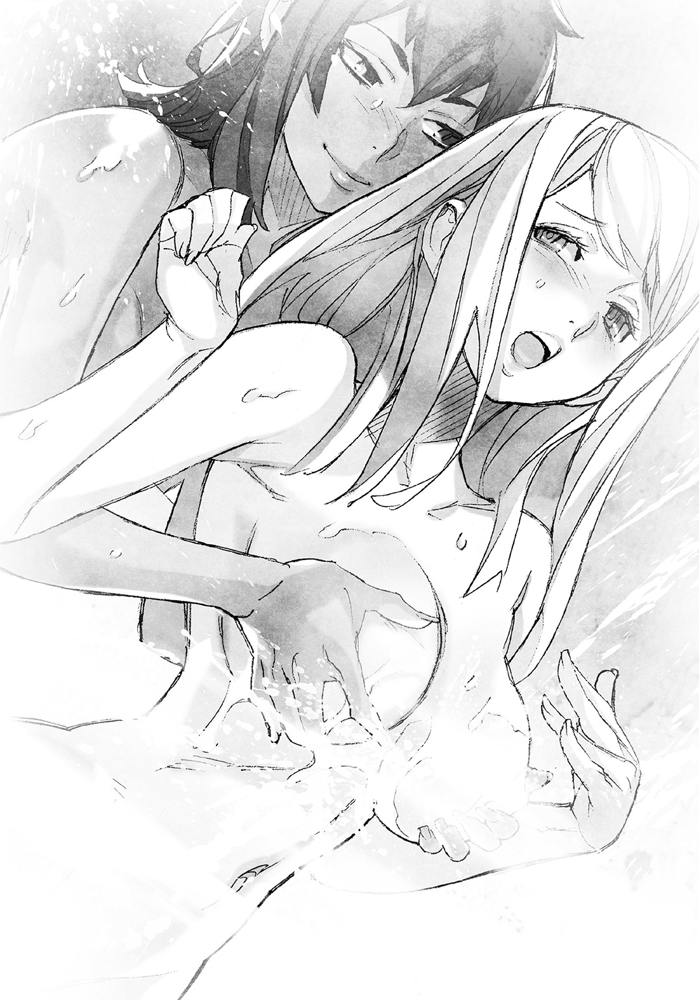
背が高めのイザベラの胸は、二つ向こうのブースにいてもリジーから見える。
「そういうあんたもたいがいデカいって。ちぇっ、あたしもけっこうバストには自信あったんだけどなぁ。あんたらと比べると普通サイズな気がしてくるっての」
リジーの背後で、エヴァとは逆隣のブースにいるサンドラが、羨ましげにため息をつく。
「エリザベスさんだっていいじゃないですか。こう、ぷるんと張りがあって。若いっていいですよねぇ。私なんてもう少し重力に負け気味で......」
リジーは濡れた髪から水滴をまき散らして、勢いよく振り返った。
「んなことねえって！ サンドラさんの胸、何だかほっとするいいおっぱいだって、ママを思い出せる感じのさ！」
サンドラが、不意にふっとどこか寂しそうに笑った。
「ママ、ですか。そうですね......これでも私、一児の母なんですよ。雰囲気、あります？」
リジーは驚いたネコのように目を丸くした。
「え。サンドラさん、マジで子供いるんだ？ 男の子？ 女の子？ ってかママなのにアネックスクルーになんてなって、大丈夫なのか？」
「興味本位丸出しでさえずるんじゃねえよ、バカがッ！」
疑問を連発したリジーを、イザベラが怒鳴りつけた。
あ、とリジーが小さく漏らしてイザベラを肩越しに振り返る。
「......悪い。確かに今のは失礼だった。サンドラさん、ほんとごめんっ」
リジーはサンドラに向き直り、すぐさま頭を下げた。
額ががつんと仕切り板にぶつかり、きゃんと悲鳴をこぼして顔を上げる。
「......痛てててっ。無神経なこと言った報いだよな、これ」
サンドラが優しい顔で、そっとリジーの額に触れる。
「大丈夫？ 切れてはいないみたいだけど、少し赤くなってるわよ」
リジーはそのサンドラの表情に、実の母親が重なって見えた。
「へ、平気だって、ママっ」
思わずそんな言葉が口をついて出た。
くすりとサンドラが笑い、リジーは真っ赤になる。
「そ、その！ ほら、アレだ！ 学校で先生をうっかりママとかパパとか呼んじまう、あの謎現象だから！」
「別にいいけれど。そうね、さっきの質問に答えましょうか」
穏やかな顔でサンドラ。リジーはばつが悪くなって肩をすくめる。
「いいよ。失礼な質問だったしさ」
「子供がいるのは事実だもの、別に失礼じゃないわ。男の子よ。私はあの子のために、火星に行くの」
「......子供のために？ まさか子供、病気で金がかかるとか......？」
アネックスクルーに志願すれば、その時点で多額の報酬がもらえる。
物価の高い先進国でも一軒家が買えるほどだ。
小さくサンドラが首を横に振る。
「お金で治るなら、よかったのだけれど。あの子は、Ａ・Ｅウィルスに感染しているの......一日でも早く、ワクチンをどうにかして作るしか治療方法がないのよ」
Ａ・Ｅウィルス。火星由来と言われている謎だらけのウィルスである。
感染した場合の死亡率は極めて高く、有効な治療方法もワクチンもまだ見つかっていない。
きゅ、とサンドラが唇を固く結んだ。辛そうな表情だ。
「......ママが火星に行くんだ。息子さんは必ず助かるさ。そうだろ？」
リジーは真顔でそう言った。サンドラがわずかに目元に涙を滲ませて頷く。
「ええ、絶対に」
リジーもサンドラも黙り込む。さあああ、とシャワーの水音が静寂に響く。
静寂を破ったのは、エヴァだった。
「――あの、イザベラさん。そろそろ......胸、放してもらえませんでしょうか......？」
「あ、悪い。あんまりにいい触り心地だったから、思わず揉んだまま話に聞き入っちまった」
イザベラが無意識に揉んでいたエヴァの胸から手を放した。
その指をわきわきと動かし、イザベラが見る。
「にしても。いい揉み心地だったなあ......班長にも揉ませてやりたいぜ......ふぅ」
「し、しみじみとため息交じりに言わないでください、そんなことっ」
エヴァが顔を真っ赤にし、蛇口を捻ってシャワーの勢いを強くする。
「早く洗い終えて、トーヘイさんたちのところに戻りませんか」
そうだな、とリジーは相づちを打った。
「......撤退か、任務続行か。意見、簡単にはまとまらねえ気はするけどな」
テラフォーマーとの戦闘で汚れた身体をどうしても洗いたいと主張して女性メンバーたちがシャワーを使う一方で、生き残りの兵士とトーヘイは、これからの行動を相談している。
「どう思うよ、イザベラは」
「続行に決まってるだろ。テラフォーマーは殲滅。当然だ」
イザベラが、頭を両手でわしわしと洗いながら即答した。
「エヴァとサンドラさんは？」
「私は、皆さんの決定に従うだけです。これ以上迷惑だけはかけないように、頑張ります」
「そうね。私も同じ。でも、班長の意見も聞いておきたいかな。この状況はもう、非常事態だと思うから」
「ああ、アドルフさんか。しばらく前に、サンドラさんにトーヘイが通信送ったろ？ あの後、アドルフさんにも連絡してたぜ、あいつ」
「班長は、なんて？」
「そう言えば、あたしは聞いてねえや。トーヘイが特に何も言わなかったってことは、軍に従って任務続行、様子見ってところだったんじゃないか？」
「そうなんですか」
エヴァが少し沈んだ声で言った。ん？ とリジーが振り返る。
エヴァより先にイザベラが口を開く。
「心配すんな、エヴァ。何があろうがおまえはあたしが守ってやる。それに――あの班長のことだ。マジでヤバい時にはきっと駆けつけてくれるだろ、それこそ稲妻の速さでな」
「はい」
エヴァが頷いた。その表情からは暗さが消えている。
そのやりとりを聞きつつ、リジーはシャワーで髪を洗う。
「シャンプーとかねえのかな、ここ。お湯だけだと、どーも臭いが残る気がする」
「......シャンプーですか。あったとしても......五〇年以上前のですよ？ 腐っているか、黴びているかもしれません」
エヴァの指摘に、リジーは思わず顔をしかめる。
「――ゴキブリ汁と半世紀前のシャンプー。どっちが臭えんだろうなあ」
「余計なことを考えずにせっせと洗えっての」とイザベラ。
「だな。こすりまくってやる、色んなとこを！」
どこをだよというイザベラのからかうような声を聞きつつ、リジーは考える。
――この状況で、万一襲われたら......やべえな。
――とにかく大急ぎでシャワーをすませなきゃ。
急ぐことばかりに気を使い、リジーは忍び寄る危機に気付かなかった。
レストハウスの応接室。部屋はビリヤード台が設置されているくらいに広く、高級なソファーが数セット、天然木製のローテーブルを囲んでいる。
壁の棚には年代物のウィスキーやブランデーのボトルがずらりと並び、兵士二人が勝手に酒をあさっていた。
「おーおー、高そうな酒が揃ってやがるな。どいつもこいつも一〇〇ドルじゃ買えねえんじゃねえのか？」
「一〇〇ドル？ バカいえ、一〇〇〇ドルだろ、この辺のウィスキーなんかよ」
「値段なんざどうでもいい、飲まなきゃやってらんねえぜ、もう」
一人が未開封のボトルを手にし、パキッと栓を捻ってあけるとラッパ飲みした。
ウィスキーはかなり強い酒だが飲み慣れているのか、むせたりしない。
「五十年前の酒でもいけるじゃねえか、全然。旨えな、おい」
「俺はこっちのブランデーいただくとするか。こんな時じゃねえと、こんな酒飲めねえ」
「死んじまった奴らの分まで飲もうぜ」
飲んでいるのは、エドとニコルだ。
それに隊長のダニエル、副隊長のジムが生き残った兵士の全てである。
小隊一〇名のうち、半数を越える六人がテラフォーマーに殺害された。被害は甚大だ。
レストハウス周辺はダニエルとジム、それぞれがコントロールしている合計八機のドローンが警戒をし、異常があればダニエルとジムのゴーグルに警告がくる。
気を抜いているのか、エドとニコルが雑談しながらボトルをラッパ飲みする。
「警戒はドローンに任せてちょいと休もうぜ」
「女どもはシャワーだろ？ いい気なもんだ」
「シャワー覗きに行くか、おい？」
「筋肉ごりごりの大女なんか見たくねえよ」
「見たいのはエヴァだっけ、あの子だろ？」
「あー、あの髪の長い娘。いい身体してるよな、むっちむちって感じで」
「美少女ボクサーも捨てがたいけどな」
「黙ってりゃ最高だよ、あの子。ぶっちゃけ好みだ」
「サンドラだっけ？ 俺、あのちょっと落ち着いた感じの年上っぽい女も好みだ」
ソファーに浅く腰掛けたトーヘイは、エドとニコルのやりとりを横目に膝の上に置いたノートパソコンのキーボードを叩いていた。
ノートパソコンを壁のネットワークケーブル用コネクタに有線で接続し、基地内のネットワークをチェックしながら考える。
――飲むな、と言いたいところなんだが。
――仲間が殺されたんだ。飲まなきゃやっていられない気持ちも、わからなくもない。
トーヘイは未成年で飲酒経験はないが、人間に対するアルコールの科学的効果は知識として理解している。
体質にもよるが、飲みすぎない限りは害にならず、精神にはよい効果がある。
しかし、アルコールのせいでいざという時に反応が鈍るのも事実だ。
トーヘイが注意をしても、ガキは黙っていろと返ってくるだけだろう。
それが想像できるから、トーヘイは困惑気味の表情で、今後の相談をしているジムとダニエルに目を向けた。
ダニエルがすぐトーヘイの視線に気付く。困惑している理由も察したようだ。
「貴様ら。飲むなとは言わんが、ほどほどにしておけよ」
ダニエルがエドとニコルに注意した。彼らは片手にボトルを持ったまま、声を揃える。
「わーってますって」
「これくらいじゃ酔わねえっすよ」
あまり説得力のない返事だったが、隊長が注意した以上、トーヘイはもう何も言えない。
基地内の監視カメラネットワークを奪還できないか幾つかの手段をノートパソコンで試しつつ、ダニエルとジムの会話に耳を傾ける。
ダニエルは壁に寄りかかり、ジムがそのそばに立っている。
「半数が死亡したこの状況で、任務続行はリスクが大きすぎます」
とジム。ダニエルが腕組みをしたままで返す。
「六人を失ったのは、隊を二つに分割した俺のミスだ。小隊全員とＵ―ＮＡＳＡの人間をわけずに行動していれば、あのアンノウン......Ｕ―ＮＡＳＡではテラフォーマーと呼ぶらしいが、奴らにやられはしなかっただろう」
「......確かに。Ｕ―ＮＡＳＡの変身能力者は強力です。彼らがいなければ、僕も奴らの餌食になっていました。ですが、隊長。もし奴らが数十、いえ数百という数で襲ってきたら、Ｕ―ＮＡＳＡの彼らがいても、全滅は免れません」
「数で押されたら、そうなるだろう。おい、君。奴らが大量に襲ってくる可能性は、どれくらいある？」
と、ダニエル。トーヘイはキーボードを操作する手を止め、顔を上げた。
「そうですね......もし、この基地に数十体以上のテラフォーマーが巣くっているとしたら、とっくに僕たちは全滅していると思います」
「と言うと？」とジム。
トーヘイはジムとダニエルのどちらともなく視線を配り、続ける。
「奴らが人間を襲うのは本能です。加えて、本能的に人間が自分たちよりも戦闘力で劣った生物だと知っているような節がある。数で圧倒できる状況なら、あえて攻めずにいる理由はないでしょう」
ふむ、とダニエルが思案顔になった。
「一斉に攻めてこない。すなわち、奴らはそれだけの数はいない、ということか......」
「あくまでテラフォーマーの本能から推測する行動ですが、その可能性はあります。ただし、もしかしたら......」
トーヘイは、続く言葉を口にするかどうか、迷った。
この推測が的を射ていたら、状況の悪さは想像をはるかに上回ってしまうからだ。
「言ってみろ」
ダニエルが低い声で続きを促した。黙り込めば無理にでも聞き出されそうだ。
「あくまで推測です、念のため。もしかしたら、テラフォーマーの行動を管理している誰かが、この基地にはいるのかもしれません。それが人間なのか、高度な知能を有したテラフォーマーなのかはわかりませんが......」
ダニエルが驚いたように目を見開いた。
「知能を有する？ あのゴキブリの化け物が、か？」
「奴らは知的生命体です。それはＵ―ＮＡＳＡでも様々な実験で実証済みですよ。アサルトライフルなんて奪われようものなら、その場で奴らは使い方を理解し、撃ってきます」
言ってからトーヘイは気付いた。最初の管制室の戦闘で二丁、先ほどの機関砲トラップの現場に一丁、アサルトライフルを残してしまってきた、と。
「しまった......もし奴らが置いてきたアサルトライフルを回収したら、使う可能性がある」
深刻な表情のトーヘイに対し、ダニエルが苦笑した。
「それは意味のない心配だ。ここは陸軍基地だぞ？ 武器庫の鍵さえどうにかできれば、五〇年前の装備だが銃器の類はいくらでもある。今さら奪われることを考えても意味はない」
「いくらでも、ですか」
トーヘイは血の気が引いた。
テラフォーマーが武装して襲ってくる可能性があるからだ。
同時に気付く。トーヘイが接触したあの赤い眼のテラフォーマーは、全て卵鞘から孵化したばかりだったということに。
テラフォーマーには人間同様に大脳があり、脳で思考する生物だ。
そして脳の発育には時間と経験が必要になる。
産まれたばかりのテラフォーマーは、たとえ身体が急激に生体まで成長したとしても、高い知能に見合う経験の蓄積がない。
例外はあるかもしれないが、通常は、頭がよくても何も知らない状態だ。
つまり。襲ってくるのが孵化したばかりの個体であれば、武器を使われる心配は少ないとも言える。
「......奴らが武器を使うかどうかは、今の状況だと判断しかねます。ただ、使う可能性は絶対に忘れないでください。奴らをたかが人の形をしたゴキブリだと侮れば、死ぬのは間違いなく我々人間のほうですから」
トーヘイは真剣にそう訴えた。
酒を飲んでいる兵士たちはともかく、ダニエルとジムは理解してくれたようだ。
「訓練された兵士を相手にするつもりで行動する」とダニエル。
「人じゃないぶん、撃ちやすかったからね」とジム。
実際ジムはテラフォーマーを一体、射殺している。この経験は大きい。
テラフォーマーは驚異的な敵だが、殺せない相手ではない。
そう認識することで絶望が遠ざかるからだ。
トーヘイは改めてダニエルに訊ねる。
「任務続行、ということでいいんですか？」
「この際だ、君にも意見を聞こう。君は撤退したほうがいいと思うか？」
「そうですね......」トーヘイは数秒ほど思案し、答える。
「あくまで僕なら、ですが。本部に救援要請をした後、救援到着までの期限付きで任務を続行します......って、僕みたいな素人の意見、いりますか？」
「続けてくれ」
とダニエル。トーヘイは話を先に進めた。
「救援を待つ間、どこかに隠れているにしても襲撃を受けたら全滅する可能性はありますし、敵は監視カメラ網を手中に収めているようなので、どこに隠れようが向こうには知られてしまう。それなら迎撃しやすいよう態勢を整えた上で、ジャニス・リーや他のテラフォーマーの捜索、撃滅を続けたほうがいいかと考えたんですが」
「ふむ。どうだ、ジム？ 彼の意見なら、撤退すべきというおまえと、任務続行の俺の考え、どちらにも反しないが」
ダニエルがジムに視線を投じた。ジムが少し考えて口を開く。
「......悪くないと思います。救援の際、ジャニス・リーの生命を諦め、基地一帯を気化爆弾で焼き払うよう攻撃要請をすることを加えて進言します」
気化爆弾。単純な爆薬ではなく液体燃料を用いた爆弾だ。
二〇世紀に開発された古い技術だが、通常の爆弾に比べてはるかに強力で広範囲を焼き払う。
ジャニスは核シェルターにでも避難していない限り、確実に死ぬだろう。
トーヘイはノートパソコンを片手に持ち、ソファーから立ち上がった。
「ジャニスさんを殺すというんですか！」
ダニエルは思案しているのか無言だ。
ジムがトーヘイを睨むように見る。
「こちらは六人、死んでいるんだ。Ｕ―ＮＡＳＡも職員の一人程度、諦めてくれ」
「ですが！ 僕たちはジャニスさんを助けるために、ここに来たんですよ！」
「そんなことなどわかっているよ。その意味では、この任務は失敗だ。救援が来たら捜索は打ち切り、残りは可能な限りの後始末をするしかないだろう」
「基地の焼却は彼女を見つけてからにしてください、お願いします！」
食い下がろうとするトーヘイに、ジムが興奮気味に質問を投げかける。
「君はいったい何人死なせるつもりなんだ!?」
「そ、それは......」
トーヘイは言葉に詰まった。
探してください、お願いします。そう頭を下げるのは簡単だが、命を懸けてくれとはさすがに言えない。
「奴らからは、僕たちＵ―ＮＡＳＡが全力で守ります。ですから......」
「君たちがいても半数以上が死んでいるんだ。その言葉をどうして信じられるっ？ 撤退する僕たちと入れ替わりで捜索に来た兵士が、奴らに殺されようが構わないと言うのかい！」
一呼吸置いて、ジムが早口で続ける。
「だいたい攫われた女が今も生きていると本気で信じているのか、君は！」
トーヘイは言い返せなかった。
ジャニスを攫ったのがテラフォーマーなら、彼女が生きている可能性は極めて低い。
テラフォーマーらしきものにジャニスが攫われたと聞いた時、最初にトーヘイが考えてしまったのが『虫を面白半分で捕まえて殺す子供の遊び』だった。
無邪気な子供故の行動だが、大人の常識で計れば残酷極まりない。
だが子供自身は、残酷などと考えもしない。
何せ、そこらにいくらでもいる虫なのだから。
テラフォーマーが、人間を面白半分で殺さないとは限らない。
むしろ知的生命体である以上、好奇心で人間を虫のようにもてあそんで殺しても何も不思議はないのだ。
黙り込んでしまったトーヘイの肩を、ダニエルがぽんと叩いた。
「ジャニス・リーの生死などここで考えても仕方がないだろう。それに、だ。我々が撤退した後、彼女の捜索を続けるかどうかは、Ｕ―ＮＡＳＡと陸軍が交渉して決めることになる。我々にできることは、救援を要請することと、救援が来るまで奴らの襲撃を警戒しつつジャニス・リーの捜索をすることだけだ」
淡々とダニエルが告げた。確かにその通りだ。
トーヘイの提案を最大限受け入れたダニエルに、これ以上の要求をすることは難しい。
「......仰る通りです。ジャニスさんの捜索を続けるかどうかは、僕が決められることじゃありませんでした。無理を言ってしまい、申し訳ありません」
トーヘイはジムに深く頭を下げた。
ジムが居心地悪そうに顔を逸らす。
「別に謝ってもらうことじゃない。とにかく、隊長。救援要請を本部に送りますが、よろしいですね？」
「ああ、頼む」
ジムが、ダニエルが頷くのを確かめてからゴーグルを操作し通信を始めた。
すぐに表情が曇る。
「......おかしい。完全に電波が通じていない、故障したのか？」
ぴく、とダニエルが眉を揺らして自分のゴーグルの耳元の操作部に手を伸ばした。
「俺も試してみる......こっちもダメだ。おい、おまえたち！ 本部に通信をしてみろ、すぐにだ！」
ダニエルが声を張り、酒を飲んでいるエドとニコルに通信を命じた。
二人ともすぐにゴーグルを操作するが、表情が冴えない。
「あれ？ つながんねえな。っていうか反応ねえぜ？」
「通信できねえくらいに酔っ払ってはねえと思うんだがなぁ、飲みすぎたか？」
ダニエルが苦い顔になる。
「......ジム。辺り一帯、通信妨害がされているぞ、これは」
「――そんな。救援が呼べなければ、僕たちは......そうだ、トーヘイさんの携帯端末は!? 軍用通信とは周波数が違うはずだ、通じるんじゃないのか!?」
「試してみます」
トーヘイはすぐさま片手に持っていたノートパソコンを近くのソファーに置き、携帯端末を取り出して操作した。
現状を報告するべく、アドルフに通話リクエストを送る。
『この端末は電波状況の悪い環境にあり、ただいま、通信機能が全て使用不可能に――』
携帯端末からは合成音声が聞こえるのみだ。
「こっちも通信できません......そうだ、ネット経由なら！」
トーヘイはその場にしゃがみ、ソファーを机代わりにしてノートパソコンを操作した。
ノートパソコンは現在、基地のネットワークに接続している。
基地のネットワークから外部のワールドワイドネットに接続することは簡単なはずだ。
しかし、ワールドワイドネットにつながらない。
「おかしい、接続が弾かれるっ？ いつの間にかファイアーウォールが立ち上がってる!?」
ファイアーウォール。本来、ネット経由の不正アクセスを防止するためのアプリケーションだ。それが外部へのネット接続を阻害するよう働いている。
ファイアーウォールを突破するためのアプリケーションをトーヘイは立ち上げ、すぐさま対抗措置を行った。
だが失敗する。自動再アタックで秒間数千回の攻撃をファイアーウォールに仕掛けたが、全て阻止された。
トーヘイのノートパソコンは特別製だ。スペックも高くハッキング向けの機能を有している。
スーパーコンピュータが相手でもない限り、不正アクセス戦で負けはしない。
だが現実にワールドワイドネットへの接続を誰かに邪魔され、その誰かがノートパソコンに侵入を試みている。
ノートパソコンのファイアーウォールが対抗しているが、突破されるのも時間の問題だ。
トーヘイは手早く状況をチェックした。
現在、基地のネットワークに接続し何らかのアプリケーションを動かしているコンピュータの数を確認し、ぎょっとした。
「二五六台が並列演算で動作してるっ？」
「どういうことなんだ？」とダニエル。
「相手は、基地中のパソコンを多数連携させて、一台のスーパーコンピュータに近い動作をさせているようです。さすがにノートパソコン一台で闘うのは難しい......それでも」
トーヘイはキーボードを高速で叩き、一瞬だけノートパソコンのファイアーウォールにわざと穴を開けた。基地のネットワークから不正アクセスされる。
そのタイミングで逆に、基地のネットワークにコンピュータウィルスを突入させた。
故障する可能性を承知の上で、トーヘイはノートパソコンのケーブルを強引に引っこ抜く。
不正アクセスを防ぐ最大の対抗策は、今も昔も物理的な接続の切断なのである。
「これで、相手のネットワークも一時的に使用不能になるはずだけど。にしてもいったい何者なんだ？ テラフォーマーがここまでコンピュータを使いこなすのか？」
相手が高いコンピュータ技術を有していることは疑いようがない。
トーヘイは相手が人間であることを願った。
テラフォーマーがここまでのことをしているとしたら、それこそ危機は世界に拡大してしまうかもしれないからだ。
ジムが不安そうにトーヘイのノートパソコンのモニタを覗き込む。
「ネット経由でも外に連絡はできなかったのかい？」
「......残念ながら。情報的に僕たちは孤立させられたようです」
「となると。自力で基地を脱出するしかないということか」
ダニエルが苦々しげに言った時だった。
だだだだっとけたたましい足音が廊下から聞こえ、直後に応接室のドアが外から破られた。
兵士たち全員に緊張が走り、ダニエルとジムのみならず、酒を飲んでいたエディたちもボトルを投げ捨ててアサルトライフルを構える。
五丁の銃口が向けられた先。
服はおろか下着さえもつけていない素っ裸のリジーが現れた。
リジーが、髪から水滴をばらまいて叫ぶ。
「大変だ、トーヘイ!!」
兵士たちの反応に遅れてトーヘイもしゃがんだままリジーを見やった。
目に飛び込んできた裸体に、瞬間的に耳まで赤くなる。
トーヘイは顔を逸らしたが、視線だけはリジーから外せなかった。
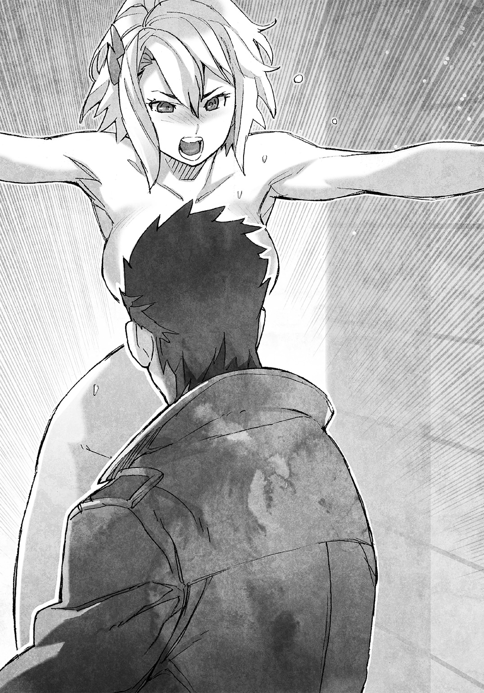
「服はどうしたんだ、服は!!」
「服なんざ着てる暇あるか、馬鹿野郎!! エヴァが攫われた、テラフォーマーに!!」
「何だって!!」
ソファーにノートパソコンを置いたまま、トーヘイは立ち上がってリジーに駆け寄った。
上着を脱いでリジーに羽織らせながら問う。
「レストハウス周辺はドローンで警戒しているはずだ、いったいどこから!?」
「知るか、そんなこと!! シャワールームの天井にある換気口のフタが抜けたかと思ったら、真っ黒い奴が飛び降りて、エヴァを攫って外に逃げたんだよッ!! あのクソ野郎、こっちが変身薬を持ってない時を狙ってきやがったに違いねえ、ゴキブリのくせに小賢しい知恵なんざ使いやがって!!」
リジーが興奮して早口でまくしたてた。
ダニエルとジムが血相を変える。
「......俺のドローンに、レストハウスに近づく奴の反応は何もなかったぞ」
「僕もです。四機のドローンはすべて異常を検知していません」
まさか、とトーヘイは顔を青くした。
あくまで推測に過ぎないが、可能性としては無視できない問題点を思いつく。
「......何者かがドローンの制御に干渉している可能性があります。ドローンの警戒能力はもう信用しないほうがいいかもしれません」
ジムが焦った表情で声を荒らげる。
「そんな馬鹿な！ 暗号化された無線コントロールだぞ！」
「暗号化されていても、しょせんはドローンに搭載できる程度の低スペックなチップセットに合わせたレベルです。この基地のコンピュータ群を乗っ取って制御している何者かにしてみれば、ドローンの制御を奪うくらい、おそらく簡単なことです」
くそ、とトーヘイは悔しさに唇を嚙んだ。
「どうしてそこまで思い至らなかったんだ。準備すれば僕でもできることじゃないか、昔の基地のネットワークの乗っ取りくらい！」
トーヘイの上着を羽織っただけのリジーが、大声で主張する。
「そんな話、後にしやがれ！ 早くエヴァを探さないとヤバいだろ!! エヴァ、怪我までさせられたんだぜッ!!」
リジーがトーヘイの両肩を摑んで揺さぶった。その反動で羽織っただけの上着が落ちる。
トーヘイは上着を拾うとリジーの肩にかけ直した。
「まずは落ち着こう」
トーヘイは自らも平静さを取り戻すべく、小さく深呼吸した。改めて口を開く。
「エヴァさんの怪我、酷いのか？」
「一瞬だったからわかんねえよっ。でも出血は少なくねえと思う」
リジーがうろたえ気味に答えた。
トーヘイは出血という単語に不安を覚えた。だが表情には出さず、落ち着いて質問を重ねる。
「怪我は心配だけど。エヴァさんは殺されたんじゃなくて、攫われたんだよね？ だとしたら、おそらくすぐに彼女の命が危なくなることはないと思う」
「何でそんなこと言えるんだよ！」
「殺すつもりなら、攫うよりもその場で殺したほうがはるかに簡単だからだよ。攫ったのは、奴らがエヴァさんを何かに利用するつもりだからだ。利用価値がある以上、怪我も適切に治療するはず」
トーヘイは冷静に説明した。
リジーの表情からわずかに焦りの色が消える。
「じゃ、じゃあ。まだ大丈夫なんだな、エヴァ」
「絶対とは言えないけどね。だから早く探さないと――イザベラさんとサンドラさんは？」
「サンドラはシャワールームで腰抜かしてる。イザベラは真っ裸のまんまで、シャワールーム近くの窓から奴を追って外に飛び出した」
「じゃあ僕が外に行く、リジーはシャワールームに戻ってサンドラさんの介抱を」
トーヘイは荷物を持たずに駆け出した。一瞬だけ立ち止まり振り返る。
「それからまず服を着て！ いいね！」
「あうっ」
リジーが妙な声を上げて赤面した。
ようやく肌を晒していることに恥ずかしさを覚えたようだ。
「て、てめえら！ 見るんじゃねえッ!!」
真っ赤な顔でリジーが応接室の中に向かって怒鳴る。
「ごっそさん、いいモノ見たわー」
「俺、今日死んでも割と後悔しないかもしれねえ」
エドとニコルの嬉しそうな声が、応接室の中から聞こえた。
「黙りやがれッ!! それから糞塗れになって死ね!!」
リジーが悪態をつき、シャワールームのあるほうへと大慌てで去っていく。
トーヘイはその背を見送らずに踵を返し、廊下を走った。
応接室と玄関は近く、すぐにトーヘイはレストハウスの外に出た。
途端、褐色の裸体が目に飛び込み、回れ右をする。
玄関近くの路上に、一糸まとわぬ姿のイザベラが仁王立ちしていた。
イザベラに背を向けたまま、トーヘイは訊ねる。
「イ、イザベラさんっ。奴は!?」
「......見失った――いや、外に出た時にはもう見あたらなかったっ。野郎、エヴァを担いでいったいどこに消えやがった......!!」
イザベラが身体を隠そうともしないで、周囲を睨みつける。
もう日が暮れる時間だ。雨雲が垂れ込めた空は、ただただ暗く、基地はしんと静まり返るのみで誰かの足音一つ聞こえない。
だが、この基地のどこかに必ずテラフォーマーが潜んでいる。
イザベラが単独でむやみにエヴァを探そうとしなかったことに、トーヘイは安堵した。
どこにテラフォーマーが潜んでいるかわからないこの状況で、孤立は死につながる。
トーヘイは肩越しにイザベラの様子を窺った。
「ひとまずレストハウスに戻ってください、イザベラさん。僕が服を取ってきますから」
「戻るだ!? エヴァを探さずにか!? ふざけんな、すぐに手分けをして捜索するぞ、おまえも手伝え!!」
「もちろん手伝います。でも、服はともかく変身薬も持たずに行くつもりですか？ 自殺行為ですよ、そんなの」
変身薬という単語でイザベラは少し冷静さを取り戻したようだ。
「......ちっ」何も言わず、イザベラが舌打ちだけをする。
それに、と挟んでトーヘイは続ける。
「目的はわかりませんが、敵はエヴァさんを攫ったんです。その場で殺さずに。イザベラさんならその意味、わかりますよね？」
「......利用価値があるから攫った、そう言いたいんだろ。だからすぐには殺されねえって」
リジーと違い、イザベラは拉致の意味を理解しているらしい。
「けどよ。殺されねえから無事だってことは言えるのか？ 死ぬより酷い目に遭わされる、そんなことを考えねえのか、おまえは。ああ？ どうなんだよ、女の裸を正面から見る意気地もねえ優等生？」
イザベラが煽るように言った。
トーヘイはゆっくりと振り返り、イザベラのほうを向いた。
顔は前に向けているがイザベラの裸体を見てしまわないよう視線を逸らし、淡々と告げる。
「エヴァさんが怪我をさせられたことは聞きました。彼女の身にこれ以上の危険が及ぶことを考えたら、ここでこんな議論をしていることこそ無駄です。アドルフさんには申し訳ありませんが、死にたければ勝手に捜索に行けばいい」
イザベラは無言で、じっとトーヘイを見据えている。
トーヘイはイザベラの強い眼光を正面から受け止めるように、見据え返した。
「でもイザベラさんは、行かないでいる。僕の相棒だったら、とっくの昔にすっ飛んで探しに行ってますよ。それをわかっているから、イザベラさんはリジーを僕のところによこしたんでしょう？」
ふっとイザベラの気配が緩むのをトーヘイは感じ取った。
「そこまで読まれてるんなら返す言葉もねえ。悪かった、今のは八つ当たりだ。詫びにあたしの素っ裸、好きなだけ見ていいぜ？」
「......遠慮しておきます。とにかく中に戻りましょう、服は急いで取ってきますから！」
トーヘイはくるりと身を翻し、玄関に走った。やれやれと嘆息したイザベラがついてくるのを気配で察する。シャワールームへと急ぎながらトーヘイは考える。
――さっきネットワークの向こうにいた奴は、明らかに僕のＰＣを潰しにかかった。
――敵は、人間だ。
トーヘイは先ほどのノートパソコン越しでの接触で、敵の意思を感じた。
テラフォーマーは確かに知能が恐ろしく高く、知的生命体故に様々な感情を持っていると研究者たちは推測している。
だが、トーヘイは、テラフォーマーから『殺意』『怒り』という類の負の意思しか感じたことがない。
おそらく人間とテラフォーマーは生物として違いすぎ、意思として互いに認識できるのは、明白な殺意のみではないかとトーヘイは考えている。
テラフォーマーと意思疎通をし、制御する人間。
トーヘイの脳裏に、自らにサムライアリの特性を組み込んだ、いかれた科学者の、半ばアリと化した死に顔が浮かんだ。
ヤマバ。短時間でライオン型テラフォーマーをＭ．Ｏ．手術の応用技術で生み出した男だ。
あの男ならば、兵器利用可能なテラフォーマーを開発しても不思議はない。
――しかし。ヤマバは僕の目の前で死んだ。
――ヤマバが、あの赤い眼のテラフォーマーを造れるはずはない。
――誰か、ヤマバの研究を引き継いだ人間がいるのか？
トーヘイたちの知らない間に、ヤマバが入手したテラフォーマーのサンプルを秘密裏に誰かに託していたとすれば、新たな改造テラフォーマーの出現にも説明はつく。
――と、いうことは。この事件は......。
事件を起こす人間には必ず動機がある。
その動機にトーヘイは心当たりがあった。
恨みだ。
ヤマバの研究を受け継いだ誰かが、Ｕ―ＮＡＳＡへの復讐を果たすために、この事件を起こした可能性が高い。
狙いはあくまでＵ―ＮＡＳＡであり、トーヘイやリジー、小吉やミッシェルという事件解決に直接関わった人間を特に強く恨んでいるかもしれない。
ジャニスを攫えば、必ずＵ―ＮＡＳＡが調査にトーヘイたちを派遣する。
敵はそう知っていてこの事件を起こした。
ワシントンＤ．Ｃ．のＵ―ＮＡＳＡ施設からジャニスが移送される日程も、敵に筒抜けだった可能性がある。
そう考えれば、用意周到に基地のコンピュータネットワークを乗っ取り、心拍探知を逆に利用したブービー・トラップが設置されていたことにも疑問はない。
死者を出した陸軍は、事件に巻き込まれたのも同然だ。
――推測が正しければ。エヴァさんの捜索に、ダニエルさんたちの力は借りられない。
トーヘイは深刻な考え事をしながらシャワールームに到着し、無意識にドアを開けた。
「......あら」
「......って、おいッ！ 何を覗いてやがる!?」
サンドラがきょとんとした顔で瞬きをし、リジーが一瞬、呆気にとられた後で怒鳴る。
サンドラもリジーも、着替えの最中だった。
素肌に着るアンダースーツを下半身から穿いて引っ張り上げる途中で、上半身は裸のままだ。
「ご、ごめんっ」
トーヘイは大慌てでドアを閉めた。頰が火照って熱い。
一瞬だけ深刻な考え事を忘れ、頭にリジーの白い肌が浮かび上がる。
「......リジー、やっぱりスタイルいいなぁ。ボクササイズは美容にいいってほんとうだったのか――って、浮かれてる場合かっ」
頭の中の裸体をかき消すようにトーヘイは激しく首を横に振った。軽い目眩と共に顔から火照りが消える。
「――とにかく。僕の想像をダニエルさんたちにも話そう。そうしている間に、敵から何か要求があるかもしれないし」
ジャニスに続いてエヴァを攫った敵が、何かをＵ―ＮＡＳＡに要求しても不思議はない。
身代金か、それともＭ．Ｏ．手術の技術情報か。
もしかしたら、特定の人間の命かもしれない。
敵の要求を想像するには情報が足らず、トーヘイの思考はそこで止まった。
「サンドラさん。ちょっと嫌なことを聞きますが、構いませんか？」
トーヘイはドア越しにサンドラに呼びかけた。すぐにサンドラの声が返ってくる。
「ええ、構わないわよ。何かしら」
「エヴァさんが怪我を負う様子、リジーはよくわからなかったらしいんですが。サンドラさん、見ていませんでした？」
「私もはっきりとは見ていないけれど。エヴァ、首を摑まれたの。その時、テラフォーマーの爪で首を傷つけられたと思う」
「出血の量はわかります？」
「少なくはなかったわ。壁に飛び散ったくらいだもの」
む、とトーヘイは息を呑んだ。想像していたよりもエヴァの怪我は重いようだ。
血飛沫が壁に飛ぶほどの、首からの出血。
頸動脈という重要な血管が損傷した可能性が、かなり高い。
適切な処置をすぐさましなければ、失血死するような怪我だ。
ぐ、とトーヘイは唇を嚙むと、想像したエヴァの怪我のレベルを告げずに呑み込んだ。言えば、いたずらに不安を煽るだけだからだ。
エヴァを攫った犯人たちが、適切な治療をエヴァに施してくれていることを祈るしかない。
――人質にする以上、犯人たちもエヴァさんを大切に扱ってくれるはずだ。
トーヘイは自分にそう言い聞かせ、話題を変える。
「リジー。ドアの隙間からイザベラさんの服を出してくれるかな。届けてくる」
「あいよ。ちょっと待て......ほらよ」
トーヘイは背中でドアが開くのを感じた。視界の隅に、にゅっと突き出された布の塊に気付き、受け取る。畳まれたアネックスクルー制服の上に、アンダースーツ。
トーヘイの頭に、リジーとサンドラの着替え途中の姿が浮かぶ。素肌に直接着るものだと思うとアンダースーツが妙に生々しく見えた。
にひ、とドア越しにリジーが笑うのをトーヘイは聞いた。
「アンダースーツ。変なコトに使うなよ？」
「変なコトって......使わないって!! リジーこそ変なことを言うんじゃないっ」
トーヘイはイザベラの服を奪うように摑むと、ドアの前から玄関に戻った。
玄関そばの物陰に、イザベラが身を隠していた。
照れくささをごまかしたいのか、イザベラが怒鳴る。
「遅ぇっての!! さっさとあたしの服をよこしな!!」
「す、すみませんっ」
トーヘイはイザベラのほうを見ないで服を突き出した。
手の上が軽くなったことで、服をイザベラが受け取ったと感じ取る。
「......ったく。今頃になって恥ずかしくなるなんてあたしもまだまだだ。クソが」
悪態と衣擦れの音が重なる。イザベラが服を着ているようだ。
トーヘイはちらりとだけイザベラのほうを見た。
イザベラはアンダースーツだけを着た状態で、筋肉質の背中が目に入る。
「先に応接室に戻って、ダニエルさんたちと今後の相談を始めます。服を着たら来てください」
「わーったよ。上手いこと連中を言いくるめて、エヴァ奪還を手伝わせてくれや。頼む」
イザベラにも、エヴァ捜索に陸軍を巻き込むことに思うところがあるようだ。
トーヘイはその場を立ち去りつつ、一言だけ返す。
「最善を尽くします」
着替えを終えたＵ―ＮＡＳＡ女性メンバーを待って、トーヘイは簡潔に、自らの考えをダニエルたちに伝えた。
「――以上です。全ては推測ですが、ジャニス・リー、エヴァ・フロストを拉致した敵は、Ｕ―ＮＡＳＡに対する私怨でこの事件を起こした可能性が高いと思います」
イザベラが舌打ちをし、片手で顔を覆った。
サンドラはこれ以上ないほどに苦笑している。
「......バカ正直っつーか、バカか......いや。この場合はたぶん、ただのバカだな」
「噓つきよりは好ましいと思いますけれど――今は、事情が事情ですのに」
リジーが数秒、わなわなと震えるとトーヘイの頭を拳で殴りつけた。
「バカにもほどがあるだろ、テメェ!! そんな話したら、アーミーが力貸してくれねえだろ、基地の中のことなんざさっぱりわからねえのに、どーすんだよ、あたしたちは!!」
殴られた場所を触りもしないで、トーヘイはリジーに言い返す。
「戦死者も出ているのに、これ以上利用するような真似はできないだろ!!」
「真っ正直な正論だけで世の中渡っていければ世話ねえんだ、この頑固な石頭!!」
「石頭で上等だ!! 噓で誰かを殺すよりはね!!」
「死ぬとは限らねえだろうがッ!! ああ、おい！ 連中、このままあたしたちと一緒に行動したら死ぬっていうのかよ!?」
「そんなことなんて一言も言ってないだろ！ それこそ勝手な解釈だ！」
ぎりっとリジーが音を立てて歯ぎしりした。みちっと拳を固める音がする。
リジーの本気の拳が飛んでくる。
避けられるともガードできるとも思えないトーヘイは、意識を断たれないよう歯を食いしばった。
唐突に乾いたアサルトライフルの発砲音がして、トーヘイとリジーは同時にびくりと身じろぎし、銃声のしたほうを向いた。
ダニエルが手にしたアサルトライフルを天井に向けている。
その銃口からは細い硝煙が立ち上っていた。
「そこまでにしてくれ。喧嘩をしている場合ではないだろう？」
トーヘイはリジーから少し離れ、ダニエルへと向き直った。
「すみません、お見苦しいところを見せてしまいました。それに、亡くなった方々には今さらですが何と申し上げて――」
トーヘイの言葉をダニエルが遮る。
「それは謝罪するべきではない。我々は確かに六人の仲間を失った。だがそれは我々自身の責任だ。奴らに対する油断、力不足。どちらもあった、それは認めるしかない」
「ですが」
「ですが、ではない。君の謝罪は、あいつらの死を安くするだけだ」
トーヘイは返す言葉もなく黙り込む。ダニエルが話を続ける。
「それに、だ。敵がＵ―ＮＡＳＡへの恨みで事件を起こしたとしても、現場はここ、軍の管理する基地だ。言わば奴らは、俺たちの家に湧いたゴキブリだ。家の人間としてゴキブリ退治は当然のことだ。だよな、貴様ら？」
ダニエルが兵士たちに呼びかけた。
エドとニコルがすぐさま返事をする。
「当然ですぜ、隊長」
「ま、ちと強すぎるゴキブリですがね」
ジムが驚きと焦りを全身で表した。目を見開いて大きく手振りをしつつ声を張り上げる。
「隊長もおまえたちも、正気か!? これ以上Ｕ―ＮＡＳＡなんかに付き合う意味はないだろう、死ぬかもしれないんだぞ!?」
エドとニコルが顔を見合わせてから、揃ってジムを見た。
「そりゃ死ぬかもしれねえけどよ。どうせ救援はすぐ呼べねえんだし」
「それに。死んじまった奴らの手前、俺たちだけ逃げるってのもイケてねえだろ」
「バカなのか、君たちは!?」
ジムが信じられないものを見るような目をした。
エドがひょいと肩をすかし、ニコルが平然と笑う。
「ハイスクールの成績は下から数えてナンバーワンだった」
「賢い生き方を知らねえから、鉄砲なんて撃つ仕事についたわけだ」
ダニエルがジムに告げる。
「ジム。おまえは独りで逃げようが、どこかに隠れていようが、自由にしていい。敵前逃亡は銃殺なんて時代でもないからな。通信ができない以上、定時連絡も不可能だ。そうなれば本部もそのうち異常に気付いて対処する。いずれ救援もくるだろう」
「隊長の言う通りだな」
「卑怯者とか誹らねえから気にすんな」
エドとニコルがトーヘイへと目を向ける。
「っつーことだ。俺たちはおまえらに付き合ってやるよ」
「ジャニスとかいう女はともかく、エヴァちゃんは可愛いからな。あんな子を失うのは世界にとって大損だろ？」
ダニエルもエドもニコルも、兵士として覚悟を決めたような顔をしていた。
死ぬ可能性があるにも拘わらず、エヴァ奪還にダニエルたちは力を貸してくれるというのだ。
感謝のあまりに、トーヘイは目元が熱くなるのを感じた。
「ほんとうに、すみま――」
トーヘイの言葉の半ばで、ばんっとリジーがトーヘイの背を叩いた。
「またそうやってすぐ謝ろうとする。違うだろ、こういう時は――」
リジーはにっと笑って親指を立てる。
「おっさんたち、サンキューな!! 無事にエヴァを助け出したら、あたしが熱烈なキスしてやるぜ！」
「マジで!?」とニコルが即座に反応した。
「うおお、やる気でたぜ!! ゴキブリなんざ俺が全部駆除してエヴァちゃん助けてやるから、その約束忘れんなよ!!」
大声でニコルがまくしたてた。リジーの笑みが引き攣る。
「お、おう。頑張って忘れねえでおくから、あんたも死ぬなよな」
「当然だぜ、そんな美味しいご褒美ちらつかされておちおち死んでいられるかっての！」
ニコルが全身で喜びを表現する。
そう言えばとトーヘイは思い出す。エドとニコルが棚の酒をあさっている時の雑談で、ニコルがリジーをタイプだと言っていたことを。
思わずむっとするが、口には出さない。
そのトーヘイの表情を見たイザベラが、にやにやとする。
「何だ何だ、面白くなさそうな顔しやがってよ？ 言いたいことがあるなら言ったほうがいいぜ？」
「......別にありませんよ、変な勘ぐりしないでください」
むすっとした顔でトーヘイはそう答えた。
イザベラがますますにやけ、トーヘイに歩み寄るといきなり肩を抱いた。
「堅物のつまんねえ奴かと思ったら、なかなかどうして人間臭い表情もするじゃねえか？ ちょっとだけ気に入ったぜ」
イザベラのなれなれしい態度に、トーヘイは軽く引いた。それが顔に出たようだ。サンドラが苦笑する。
「彼、困っているけれど」
「人生、困るくらいでちょうどいいんだよ。な？」
ぐいっとイザベラがトーヘイの肩を抱く手に力を込めた。
トーヘイは全身でイザベラの弾力たっぷりの肉体を感じさせられ、戸惑いと照れくささでいっそう困った。
「き、気に入ってもらえたのは嬉しいんですが、その、放してもらえませんか」
「もうちょっとしたらな」
イザベラがちらりとリジーを見やる。
そのタイミングでリジーが振り向いた。
「あ。テメェ！ 何を勝手にスキンシップしてやがる、嫌がってるじゃねえか!!」
「別に嫌がってはいないよなあ？」
イザベラが唇に軽い音を立てさせて、キスする振りをした。
耳元で聞こえた音にトーヘイは気恥ずかしさで赤くなり、リジーはリジーで、怒りで顔を赤くする。
「ソイツをオモチャにあたしをからかってんじゃねえよっ、性悪女！」
「きゃんきゃん吠えるなよ――おっと。子猫だから、にゃんにゃんか？」
「テんメェ......奴らとの決着の前に、先に白黒付けてえのかよ？」
リジーが嚙みつかんばかりの目つきでイザベラを睨みつける。
イザベラがトーヘイから身を離すと、表情を和らげた。
「......そんだけ吠える元気があるなら、大丈夫か。悪かったな、からかって」
「え」
リジーがきょとんとする。イザベラがリジーから視線を外した。
「――エヴァが攫われたのは、あんただけの責任じゃねえってことさ。あんだけ取り乱したのを見れば、心配もするっつーの」
リジーが気まずそうにそっぽを向く。
「と、取り乱したのは、お互い様......だろ？ 素っ裸で外に飛び出したの、誰だよ」
「そういうあんたも、真っ裸でここに駆け込んだんじゃねえのか？」
ぷっとリジーが噴き出した。
「奴には借りがあるしな。利子をたっぷり付けて返してやらねえと」
くくっとイザベラも笑う。
「ああ。あたしたちで奴をぶちのめし、エヴァを取り戻す」
奴。トーヘイはエヴァを攫ったテラフォーマーだと察した。
エヴァを攫う際、リジーもイザベラもそのテラフォーマーに軽くあしらわれたようだ。
リジーの戦闘力は人為変態しなくても高い。イザベラも筋肉質な体つきからして普段の状態でもかなり強いだろう。
シャワー室に現れたテラフォーマーの異質さを、トーヘイは改めて考える。
――この二人の目の前から、あっさりとエヴァを攫った。
リジーもイザベラもエヴァを守ろうとしなかったはずがない。
彼女たちの抵抗をあっさりと退け、テラフォーマーはまんまとエヴァを攫い、姿を消した。
よほどの実力差がなければ不可能なことだ。
テラフォーマーは本能的に人を襲い、殺す。それはトラップに利用された赤眼のテラフォーマーたちも同じだった。
だが、エヴァを攫ったテラフォーマーは、エヴァに怪我をさせたものの、誰も殺さなかった。
まるで、その行動に意味があるかのように。
「リジー。エヴァさんを攫ったテラフォーマー、眼は何色だった？」
トーヘイの問いにリジーが真顔に戻る。
「あ？ 眼だって......？ 意識してなかったから、わかんねえ」
イザベラが自信ありげに言う。
「眼か。普通のタイプだったぜ？ 途中でわらわら襲ってきた赤眼の奴じゃなかったはずだ。接触は一瞬だったが、見間違えてはいねえよ」
普通のタイプ。赤い複眼ではなく黒い瞳を持つテラフォーマーだということだ。
黒い眼のテラフォーマー。トーヘイが直接見たのは二回のみだ。
基地のゲートの裏に潜み、最初の犠牲者を出した直後に逃走したテラフォーマー。
トーヘイたちを誘うように姿を見せ、リジーから逃げ切ったテラフォーマー。
どちらも、エヴァを攫ったテラフォーマーと同一の個体だとトーヘイには思えた。
「どうして眼の色なんて気にするんだよ」とリジー。
「可能性の問題なんだが、もしかしたらこの基地に、黒い眼のテラフォーマーは一人しかいないかもしれない」
一人。トーヘイはあえてその表現を使った。リジーが嫌悪感を顔に出す。
「おいおい、奴を人間みたいに言うなよな。一匹だろ、一匹」
イザベラはリジーと違うことを感じたようだ。険しい目でトーヘイを見る。
「......トーヘイ。まさかとは思うが、奴は」
「それは――」
トーヘイが言いかけた時だった。複数の電子音がそこかしこで鳴り響いた。
全て、Ｕ―ＮＡＳＡメンバーのポケットで携帯端末が発している音だ。
「何だっ？」とリジー。
「全員に通信かよ？」とイザベラ。
「通信リクエストの音じゃないけれど」とサンドラ。
まさかと思いながらトーヘイは携帯端末を取り出した。
モニタにはこの旧グルーム・レイク陸軍基地の地図が表示されている。
モニタ中央に光点が一つ。どうやら現在位置のレストハウスを示しているようだ。
地図が少しズームアウトしてスクロールし、新たな光点が現れる。
輸送機用滑走路に面した倉庫と思しき場所だ。レストハウスからはそう遠くない。
「地図が勝手に出たぞ？」
「ここに来いということか？」
「......そうらしいわね」
リジーたちも携帯端末を手にしている。
トーヘイの携帯端末と同じものが表示されているようだ。
地図表示操作など誰もしていない。考えられるのは一つだ。
何者かが通信回線を用いて携帯端末に不法アクセスし、勝手に操作をしている。
先ほどトーヘイのノートパソコンが攻撃を受けた時は有線の接続を強引に抜いて対処したが、携帯端末は無線接続だ。
携帯端末のセキュリティは万全のはずだが、相手の技術がずば抜けていれば、不法アクセスは不可能ではない。現にこうして攻撃されている。
トーヘイは驚くと共に悔しさを覚えた。
「Ｕ―ＮＡＳＡの携帯端末までクラッキングされるなんて......僕の投入したウィルスは簡単に無効にされたようだ」
「何事だ？」
とダニエル。兵士たちの通信ユニットであるゴーグルは正常のままらしい。
「敵が接触してきました。見てください」
トーヘイはダニエルに携帯端末の画面を見せた。ダニエルが画面を注視する。
「近いな。そこに来いということか」
「ええ、おそらくは」
トーヘイが頷いたそのタイミングで、Ｕ―ＮＡＳＡの携帯端末が一斉に声を伝え始める。
『トーヘイ・タチバナ。エリザベス・ルーニーに告げます』
ややかすれ気味の女の声だ。
少女のようにも老婆のようにも聞こえる不思議な響きだった。
『地図は見ていただけたと思います。指定した輸送機用滑走路倉庫に来てください。私の名は、レイナ・ヤマバ。あなたたちに決闘を申し込みます』
「決闘だと？」「決闘だって？」
リジーとイザベラが同時に反応した。
兵士たちもざわつくが、トーヘイは無言で次の言葉を待つ。
『決闘に応じていただければ、エヴァ・フロストの命は保証します。もしこの通信を無視するようであれば、その時は――ご想像に任せます』
命を保証する。その言葉にトーヘイはわずかながら安堵を覚えた。
首に怪我を負ったエヴァが、死んでいないという証拠だからだ。
一方で、リジーが自分の携帯端末を怒鳴りつける。
「おい！ ジャニスはどうしてるんだよ！」
『ジャニス・リーに危害は加えておりません』
レイナ・ヤマバと名乗った女が応えた。通信は一方的ではないようだ。
監視カメラ経由でこちらの様子を見ているらしいレイナが、さらに続ける。
『彼女には見届け人として決闘に立ち会ってもらいます。全てが終わった後は彼女の自由ですが、我々は、彼女をＵ―ＮＡＳＡに返すつもりはありません』
「無事か、あの女。やれやれだ、それだけでも来た甲斐があるってもんだ」
リジーがほっと一息ついた。
変わってトーヘイが携帯端末に問いかける。
「その決闘は、どうしても避けられないものなのか？」
『私の姓に覚えがあるのなら、避けられないものとわかるでしょう。それではお待ちしています。あまり長くは待たせないでください』
全ての携帯端末で同時にレイナの声が途絶えた。
しん、と辺りが静まり返る。
この事件の発端は、私怨。
そのトーヘイの予想は的中した。
だが恨まれているのはＵ―ＮＡＳＡという組織ではなく、トーヘイとリジー、個人だった。
トーヘイとリジー以外の全員が、事件に巻き込まれただけということになる。
当然、死んだ兵士たちもだ。
トーヘイは突き刺さるような視線に気付き、反射的にそちらを見た。
視線の主はジムだった。その目は明白な糾弾の意思を感じさせる。
ジムにトーヘイは何か言うべきか悩んだ。そもそも何と言えばいいのかさえわからない。
ぽん、と肩を叩かれるまでの数秒間、トーヘイは息さえ止めて硬直していた。
叩かれた肩のほうを振り向くと、に、と笑ったリジーの顔があった。
「行こうぜ、相棒。ご指名だ」
「......ああ。僕たちでけりをつけてこよう」
トーヘイはそう答えると、イザベラ、サンドラ、ダニエルたちへと順番に視線を配った。
「ここからは別行動します。決闘だというからには、敵は関わらない限り手を出さないと思います。皆さんは様子を見つつ脱出に備えてください」
巻き込んでしまって申し訳ありませんでした。
その言葉を口にせず、トーヘイは携帯端末をしまうと部屋に放置していた自分の荷物のところに行った。
バックパックから拳銃ファイブセブンレプリカの予備弾倉を取り出して上着のポケットに仕舞うと、対テラフォーマー蟲取り網を手にしてリジーのところに戻る。
リジーが、置きっ放しになっているノートパソコンを見た。
「あれはいいのか？」
「持っていっても邪魔なだけだ、決闘なんだから。リジー、蟲取り網は？」
「シャワールームの更衣室に投げっぱなしだけどよ。あれ、いるかな？」
「僕がリジーの分まで念のために持っていくよ。リジーの場合、いらないと思うからね」
「はは、違いねえ。ああいうせせこましい道具は苦手だ。あたしはこれで充分だっての」
リジーが拳を固めて見せる。その拳に、トーヘイは自分の拳を軽くぶつけた。
「あてにしてるよ、相棒」
「こっちもな。勝手に死ぬんじゃねえぞ？」
「善処するよ。モーリスさんから借りたアサルトライフルは――置いていくしかないか。使い慣れていないし、蟲取り網を二つ持ったらさすがに邪魔になる」
すみませんモーリスさん、とトーヘイは口の中だけで呟き、部屋を出ようとした。
「待てよ」とイザベラの声を背中で聞く。
「決闘だろ？ だったらこっちにも見届け人って奴が必要だ」
「それに」とサンドラの声も聞こえてきた。
「エヴァを返してもらうのだもの、受け取りに行く人間も必要よ」
エヴァを人質に、トーヘイたちは決闘を要求されたのだ。
アネックス一号計画でエヴァと同じチームメンバーのイザベラとサンドラの主張を退ける言葉などトーヘイは持っていない。
振り向かず、伝えるべきことのみを口にする。
「エヴァさんの身柄は任せますが、エヴァさんを助けたらすぐに逃げてください。あなたたちだけでも生きて帰ってもらわないと、アドルフさんに合わせる顔がありません」
「水臭えこと言うんじゃねえよ。生きて帰るのは、全員でだ。でなきゃあたしたちの班長は納得しねえぜ？」
「あの方、不器用で頑固ですものね。そこが人間らしくて魅力的なのですけれど」
やれやれ、とこぼしてリジーがイザベラたちを見やる。
「ま、確かに頑固そうだったな。死んでも生きて帰れとか、むっつり顔で平然と言いそうだ」
トーヘイは改めて、リジー、サンドラ、イザベラを見た。
全員、意思は決まっているようだ。
「すみま――」
謝罪を口にしそうになり、トーヘイは慌てて言い直す。
「イザベラさんもサンドラさんも。こんなことに付き合ってくれて、ありがとう」
「それでいいんだよ」とイザベラが軽く握った拳でトーヘイの胸を叩いた。
「礼も言えねえ奴のために、一瞬でも命を張ってやりたくねえしな」
イザベラがちらりとリジーを見る。リジーは一瞬だけ戸惑うと視線を逸らした。
「あたしはあたしで、やるだけだ。テメェはエヴァを助けることだけ考えやがれ」
くくっとイザベラが笑う。
「言われなくてもおまえの面倒なんざ見てやらねーよ」
くすっとサンドラが笑みをこぼした。
「けっこう気に入っているみたいよ、イザベラはエリザベスさんのこと」
「ちょ！ そんなことはねえぜ、サンドラ。勘違いすんなよな」
「ですって」
サンドラが笑みを見せた。一児の母だけあり安らぎを感じさせる笑顔だった。
トーヘイは肩から力が抜けた。いつの間にか緊張していた自分に気付く。
一つ息をついて気を落ち着け、トーヘイはダニエルに視線を向けた。
「僕たちは指定された場所に向かいます。先ほどもお話しした通り、ダニエルさんたちは折を見て――」
トーヘイが言い終える前にダニエルが口を開く。
「総員、移動準備」
「了解」「了解っす」
エドとニコルが即答した。ジムだけが納得いかないという顔をしている。
「ジム。返事はどうした」とダニエル。
「隊長、こいつらにまだ付き合うつもりなんですか？ ほんとうに死にますよっ」
ジムが必死な顔で主張した。ダニエルは眉一つ動かさない。
「ここに残っていたとして、安全を誰が保証する？」
「それは......」
言いよどむジムに、ダニエルが淡々と告げる。
「敵は、トーヘイ・タチバナたちをここにおびき寄せるためだけに護送車のドライバーたちを殺害し人身拉致した奴らだ。その上、奴らは化け物をトラップに使ってディックたちを殺害した。そんな奴らが黙って俺たちをこの基地から帰すと思うのか？」
ジムは顔を青くするだけで反論しない。
「ジム、おまえもわかっているのだろう？ 奴らを殲滅する以外に、俺たちが生きて帰る方法はないと。あのゴキブリ野郎どもがまだ出てくる可能性を考えたら、Ｕ―ＮＡＳＡのメンバーと行動したほうが生き延びるチャンスがある」
「............了解しました」
ジムは数秒ほど沈黙を保った後、重々しく答えた。
「と、いうことだ。我々も同行する」
ダニエルがトーヘイに視線を戻す。
「......承知しました。ですが、先に言っておきます。とにかく自分たちの命を守ることを優先してください。奴らの狙いが僕とリジーである以上、僕たちがあなたたちを守る約束は難しくなりましたので」
「それは理解しているつもりだ」とダニエル。
「ま、弾だけはまだまだたっぷりあるしな。手榴弾とかも使ってねえし」
「いけるいける、大丈夫だって。ゴキブリ野郎の怖いのは奇襲だからよ、不意さえ突かれなければ殺せねえ相手じゃねえだろ」
エドとニコルが軽い口調でそう言った。ジムは青い顔のままで口をつぐんでいる。
そのジムの表情がトーヘイは気になったが、ジムにかける言葉が見つからなかった。
のんびり考える時間はない。レイナ・ヤマバを待たせておくわけにはいかないのだ。
決闘に来ないと判断したレイナが、エヴァに危害を及ぼす可能性がある。
「行きましょう、皆さん。犯人を倒し、人質を奪還すれば事件は終わります」
誰にも不安を感じさせないよう、強い意志を込めた口調でトーヘイは告げると、部屋を後にした。
†
ジャニスはレイナの左腕に包帯を巻きつつ苦笑した。
「――今時、決闘って。ずいぶんと仰々しいことをするのね」
「人生には演出も必要です。特に、残りわずかな人生には」
全身から壊死した組織の摘出が終わり、レイナは手術台に腰掛けている。
レイナは最後に処置を受けた左腕に包帯を巻かれながら、右手でマイクを操作し、先ほどの通信を行った。
ジャニスは作業の手を止めずに言う。
「見届け人。頼まれた覚えも、承知した覚えもないけれど」
「そういえば頼んでいませんでした。でも、引き受けてくださいますよね？ あなたは私が人為変態した姿にきっと興味を持っているでしょうから」
レイナの言葉に、一瞬だけジャニスの手が止まる。
全身に処置をしてきたジャニスは、確かにレイナの身体に興味を持ってしまっていた。
Ｍ．Ｏ．手術に関わる科学者でなければわからないことだが、レイナは身体の部位ごとに壊死の仕方が異なっていた。
それはすなわち、部位ごとに異なる人為変態をするということだ。
人為変態したレイナがどんな姿になるのか、科学者として純粋に観察したい。
ジャニスはそう考えてしまった。それが顔に出たようだ。
「彼らの前に姿を見せる必要はありません。決闘の場に指定した倉庫の一角に、地下への通路を隠して偽装したコンテナを用意してあります。中には外の様子がモニタできるノートパソコンと、いざという時のための制御装置の遠隔操作スイッチがあります」
制御装置。その単語がジャニスは気になったが、ひとまずは質問をしないで話を聞く。
「ジャニスはそのコンテナの中で一部始終を見届けたら、地下通路から逃げてください。少し歩くことにはなりますが、安全に基地を脱出できます。脱出後すぐにエージェントが接触しますので、後は彼らに従ってください」
エージェント。レイナとジークの他にも、まだＵ―ＮＡＳＡとは別のＭ．Ｏ．技術研究組織の人間が存在しているらしい。
当然だとジャニスは思う。トーヘイとリジーへの復讐のために閉鎖基地一つを利用した今回の作戦にしても、個人で出来うるレベルではない。
「エージェント？ あのジークという男じゃなくて？」
ジャニスは、自分を攫ってきたジークが脱出の案内をしないというのが気になった。
レイナの表情がわずかに曇る。
「ジークも、私同様もう長くはありません。Ｍ．Ｏ．ハイブリッドスーツとの適合を安定させる薬の影響です。もしかしたら決闘の後、生きているかもしれませんけれど......たぶん、私のそばを離れてはくれないと思います」
「......言っていたものね、彼。こんなことをするのも、愛故だって」
「はい。彼はこんな私を愛してくれました」
そう返したレイナの表情から曇りが消える。
「ですから――後は、お願いいたします」
そのレイナの言葉でジャニスは気がついた。
自分が、寿命が尽きかけたレイナに変わり、その組織の研究者となることを期待されている、と。攫われたのもそのためだったと。
つまり。レイナの希望に応えればこれからもＭ．Ｏ．技術の研究が続けられ、Ｕ―ＮＡＳＡに一矢報いることができるかもしれない。
「ようやく、あなたたちが私の復讐を叶える用意があると言った意味、正しく理解できたわ。いいわ、見届け人も承知してあげる。一つ聞いてもいいかしら？」
「何ですか？」
「さっき、口にした制御装置。まさかとは思うけれど――」
「はい。その推測で正しいと思います。万一の際、使ってください。一度説明しましたが、環境に対する影響の心配だけは不要です。ただ人間が死ぬだけです」
人が死ぬ。その言葉にジャニスは身震いした。
使えば確実に、この基地に来ているトーヘイたちも兵士たちも死ぬだろう。
それも、想像を絶するようなむごたらしい死に方で。
トーヘイたちの死に様をジャニスは想像してしまい、吐き気がこみ上げ両手で口を押さえた。
「大丈夫ですか？」
レイナがジャニスの顔を覗き込む。ジャニスは嘔吐をどうにか堪えて顔を上げた。
「だ、大丈夫。少し嫌な想像をしてしまっただけだから」
「あれによって手足を引き千切られ、内臓を引きずり出される人間でも想像したのでしょうか」
ジャニスの想像通りの死に様をレイナがこともなげに口にした。
思わずジャニスは再び吐き気を覚えた。うぷ、と声が漏れるがぎりぎりで耐える。
「......わざわざ説明しないでくれる？」
「ごめんなさい。私は何も感じないので、つい。死が間近すぎると他人の死にも鈍感になるみたいです」
「わからなくもないけれど。ついでだから言っておくわ、私はあなたを死なせるために治療したわけじゃないのよ、それは覚えておいて」
「......」レイナは何も言わない。
ジャニスは中断していた包帯を巻く作業を再開した。
様々な装置の作動音が、かえって部屋の静かさを強調する。
――この包帯を巻き終えてしまったら、彼女は死にに行く。
ジャニスはそう考えながらも、包帯を巻く手を止めない。
しゅるしゅると包帯の擦れる音は、長くは続かなかった。
「......終わったわ。今、車椅子を持ってくるわね」
ジャニスは椅子から立つと車椅子を押してレイナの前に戻ってきた。
「自分で乗れる？」
「申し訳ありませんが、無理です。乗せてもらえませんか？」
「いいわよ」
ジャニスはレイナを子供を抱えるように手術台から抱え上げた。
ジャニスとレイナの体格は、ほぼ同じだ。だがレイナの身体は驚くほどに軽かった。
全身から壊死した組織を取り除いたせいだけではない。
生きているのが不思議なほどにやせこけている。
度を過ぎた人体改造のせいだとジャニスにはすぐにわかったが、何も言わずにレイナを車椅子に座らせる。
レイナは車椅子に身を預けると、ジャニスに向き直って深々と頭を下げた。
「ありがとうございました、先生」
「よしてよ、先生なんて」
さてと、とジャニスは気を取り直して車椅子の後ろに回った。
半日以上施術を続けてきた疲労で身体が重いが、ゆっくりはしていられない。
「車椅子を押していくから決闘の場に案内して。あなたの死に様、きっちり見届けてあげる」
「はい」
レイナが頭を上げ、柔らかく微笑んだ。
ぞっとするほどに綺麗な微笑だった。
Ⅴ 決闘の末路
遠くの空に稲妻が走り、時間差で雷鳴が轟く。
空に厚く垂れ込めた雲のせいで沈みゆく夕陽は見えず、辺りはもうかなり暗い。
トーヘイたちが指定された輸送機用滑走路倉庫に移動する間に、雨が降り始めた。
雨は厄介だ。雨滴のカーテンは暗さで悪化した視界をさらに奪い、雨音は周囲の物音をかき消してしまう。
基地のどこに潜んでいるかしれないテラフォーマーの襲撃を警戒しつつ、トーヘイたちは滑走路倉庫の前まで来た。
レストハウスからここまでは長い距離ではなかったが、皆、一様に疲れが顔に出ている。
悪環境での警戒による精神的疲労に加え、雨に濡れて体温を奪われて体力を消耗したせいだ。
指定された倉庫はかなり大きかった。ダニエルの話によると以前は輸送機が格納されていたが、輸送機は基地を封鎖する際に他の基地に移動し、現在この倉庫は空だそうだ。
輸送機が出入りする大型のゲートは鉄製のシャッターが下ろされ、人間用のドアも閉じられている。
正面から目に付く窓はなく、中の様子はまったく窺えない。
ダニエルが渋い顔をする。
「ドローンだけでも先行させて中の様子を確認したいところだが......」
トーヘイは少し考え、意見する。
「ドローンはすでに敵にクラッキングされています。飛ばしたとしても正しい情報は得られず、逆に罠に利用される可能性が高いと思います」
「だろうな。となると誰か斥候に出すしかない」
ダニエルが誰に指令を出すか兵士たちに目を向けた時だった。
『罠などありませんから、普通にドアから入ってきてください。あまり女性を待たせるものではないと思います』
雑音混じりのレイナの声が唐突に響いた。
声は、倉庫の外壁にある古いスピーカーから出ているらしい。
『軍人や他のＵ―ＮＡＳＡ職員はお呼びした覚えはありませんが、いいでしょう。私たちの決闘に手を出さないのでしたら、見学を許可します』
エドとニコルが顔を見合わせ、肩をすくめる。
「だってさ」
「上から目線でありがたいこって」
「......」ジムは思い詰めたような顔で無言だ。
多少神経質だと自負しているトーヘイにしてみれば、ジムの反応こそが自然で、エドやニコルの泰然としすぎた態度のほうが不思議に思えた。
トーヘイは、ちらりとリジーたちＵ―ＮＡＳＡのメンバーを見た。
「じゃ、さっさと入ろうぜ」とリジー。
「ま、突っ立ってる意味なんざねえしな」とイザベラ。
この二人は平然としているが、サンドラは少し不安そうな顔をしている。
「い、いちおう変身薬を取り出しやすいようにしておかないとっ」
あたふたとサンドラが上着のポケットを探る。肩にベルトで掛けていた対テラフォーマー蟲取り網がずるっと滑って落下し、アスファルトでがしゃんと音を立てた。
「あああっ、ごめんなさい、ごめんなさいっ」
開発者になのか、それとも装備を用意したトーヘイたちの上司のカワラザキになのか、サンドラは繰り返して謝ると対テラフォーマー蟲取り網を拾おうとした。
その時、サンドラはうっかり、中途半端に取り出しかけていたシールタイプの変身薬をばらまいてしまう。
「ああーっ、こっちのほうが大事なのにっ」
「変身薬は僕が拾いますよ」
トーヘイは慌てふためくサンドラのそばに行き、変身薬を拾った。
数は三枚。カワラザキから支給された数がそのまま残っている。
「サンドラさんは人為変態していないんですね、まだ」
トーヘイはサンドラに変身薬を手渡した。
「ええ。テラフォーマーに襲われた時は、イザベラがさっと変身して、ぱぱっと片付けてくれたもの。私なんかの出番はなかったわ」
「使わないに越したことはありませんからね、この薬。身体に負荷がかかりますから」
「そうね。きっと火星に行ったら嫌でも使わないといけないでしょうし――あ、ごめんなさい。行きたくても行けなかったんですよね？」
「ああ、気にしないでください。それなりに納得していますので。それより、もし蟲取り網を使うつもりだったら、テラフォーマーが出ても人為変態しないほうがいいかもしれません、サンドラさんの場合」
「え？ どうして？」
サンドラがきょとんした。トーヘイはちらりとリジーのほうを見てから答える。
「サンドラさん、ベース生物はリジーと同じイエネコでしたよね。サンドラさんの人為変態した姿は見せてもらっていませんが、手、おそらくネコに似た形状に大型化しませんか？」
サンドラが変身薬をしまってから、手を握ったり開いたりして見せた。
「その通りよ。自分でも可愛いと思う感じにモフモフの手になるの、今度、触ってみる？」
「感触は知ってます、リジーの手で。あの手だと、拳銃や蟲取り網のトリガーの操作は難しいですよね？」
「あ。言われてみれば、そうね。人為変態して射撃訓練を受けたことがないから、考えたことなかったわ。ありがとう、気を付けるわね」
「イザベラさんは？ 人為変態しても銃とか扱えます？」
イザベラのベース生物は、大型昆虫のリオックだ。
今日一度、イザベラはテラフォーマーの襲撃を退けるために人為変態しているが、別行動だったためにイザベラの特性をトーヘイは見ていない。
リジーの分も持ってきたトーヘイと同じように、イザベラも二つ対テラフォーマー蟲取り網を肩にかけている。一つはエヴァのものだろう。
「あたしは人為変態で銃が扱えなくなるってことはねえよ。もっとも、あたしにもこんなものはあまり意味がない道具だがな。助けたエヴァに使わせるさ、いざという時は」
「わかりました。それなら特に気をつけることはないですね。敵の言葉にまったく疑いを持たないわけにもいきませんが、向こうが僕たちとの決闘をほんとうに望んでいるとしたら、邪魔さえしなければ皆さんに危険が及ぶ可能性は減ると思います」
トーヘイは兵士たちにも視線を配った。
「ダニエルさんたちも、それは承知しておいてください。身に危険が迫った場合はやむを得ませんが、そうでなければこちらから戦闘を仕掛けないほうがいいでしょう」
エドとニコルが苦々しげにこぼす。
「......ディックたちの仇なんだぜ？」
「俺たちの手で奴らを殺せねえのか？」
ダニエルが迷いのない口調で告げる。
「おまえたちの気持ちはわかる。俺も同じだからな。だがトーヘイ・タチバナの言うことももっともだ。下手に奴らを刺激すると、どんな逆襲に遭うかはわからない。ここが敵地のまっただ中だということを忘れるな」
「......そっすね」
「了解っす」
しぶしぶとエドとニコルが納得する。ジムはただ無言で倉庫を見据えているだけだ。
リジーが、固めた拳を胸の前でごつんと合わせる。
「さてと、いい加減ご招待に応えてやろうぜ？ レイナとかいう女、待ちくたびれて切れちまう前に」
「ああ、そうだね。待たせて得をすることはない」
トーヘイは目をドアに向けた。待っていたかのように、ドアが自動で開く。
『なかなか入ってこないので、ドアをこちらで開けました。罠を疑っているのでしたら、そこからドローンを倉庫内に飛ばしてください。今度はクラッキングで偽装映像を突っ込んだりしませんので』
レストハウスでドローンが接近するテラフォーマーを見落としたのは、やはりレイナの仕業だったようだ。
「どうする？」とダニエルがトーヘイに訊ねた。
「ドローンは不要です。僕が最初に入ります」
トーヘイは真っ先にドアに向かった。すぐにリジーがついてくる。
「ご指名はあたしもだからな。いっちょ顔を見てやろうじゃねえか、あたしたちに喧嘩を売った女のよ」
トーヘイはそのリジーの声を背中で聞きつつ、ドアをくぐる。
罠はないとレイナは言ったが、信用する根拠がない。
舌の根が乾くほど緊張し、全身全霊で周囲を警戒して倉庫に入った。
天井は高く格子状の梁に整然とＬＥＤライトがあり、全てが点灯している。
白い光が照らす、輸送機が三機くらいは収まりそうな広大な空間は、がらんとしていた。
あちこちに幾つも無造作に置かれた古びた大型コンテナと、五〇年前から放置されているだろう旧型のフォークリフトなどの作業車両が数台、目に付く程度だ。
トーヘイは足を止めずに中に進んだ。
そのすぐ後ろにリジーたちＵ―ＮＡＳＡのメンバーが続き、さらに兵士たちが続く。
殺風景なフロアの中央。ぽつんと車椅子がある。
車椅子の上には全身に包帯を巻いた華奢な人影があった。
顔には包帯が巻かれていないが、長い黒髪の影になって顔立ちはよく見えない。
機械仕掛けと思しき車椅子の後ろからは様々なチューブが伸び、点滴のように人影の四肢につながっている。
車椅子の後ろに立っているのは黒い影――黒い眼のテラフォーマーだった。
エドとニコルが殺気立つのがトーヘイにはわかった。
「奴がいやがるっ」
「ゴキブリ野郎だっ」
「堪えろ」
ダニエルがすぐに部下を制した。
トーヘイは最悪、エドとニコルがこの場でテラフォーマーに攻撃を仕掛けるんじゃないかと考えていたが、その事態は避けられたらしい。
テラフォーマーにも動きはない。車椅子の後ろに介護者のように立っているのみだ。
「ここはひとまず、僕に任せてください」
トーヘイは誰にともなくそう告げると、車椅子の人間に呼びかける。
車椅子との距離はおよそ三〇メートル。不用意には近づかない。
「あなたが、レイナ・ヤマバですか」
あまり大きな声ではないが、静かな倉庫にはよく響いた。
「ええ。初めまして、トーヘイ・タチバナ」
少しかすれた、だが聞き取りやすい女の声が返ってきた。
「さっそくですが、人質のエヴァさんを返してもらえませんか？ 僕もリジーも、決闘から逃げるつもりはありません」
「承知しました」
レイナが車椅子の手元で何かを操作した。途端、がこんとどこか近くで大きな音がした。
なんだなんだとトーヘイ以外の誰もが焦った顔できょろきょろする。
レイナが何をするのか用心しているトーヘイは、視界の隅でもっとも近いコンテナが開くのを見た。反射的にそちらへと顔を向ける。
「エヴァさん！」
レイナの遠隔操作で開いたコンテナの中。中身のわからない大きめの木箱が幾つも詰められている。その木箱を寝台代わりにして、エヴァが横たわっていた。
エヴァは裸体にシーツを掛けられているだけのようだ。身動き一つしない。
「エヴァ！」
イザベラが大声で呼びかけ、対テラフォーマー蟲取り網を投げ出すとコンテナに駆け寄った。
「しっかりしろ、おい！」
イザベラがエヴァを抱きかかえる。エヴァはぐったりとしているが、顔色は悪くない。
「......息はちゃんとしてる。気絶してるだけらしいな」
イザベラがエヴァを抱きかかえてコンテナから戻ってきた。
すぐさまトーヘイはイザベラに駆け寄り、エヴァの頸筋を確認した。怪我が適切に手当てされていればいいが、そうでなければすぐさま治療が必要だからだ。
「......傷が、ない？」
エヴァの白い首には血で汚れた跡があるだけで、壁に血飛沫が跳ぶほどの怪我を負ったようには見えない。
「イザベラさん、確かにエヴァさんは首を怪我したんですよね」
「ああ。それは確かに見たが――ねえな、傷が......」
イザベラもエヴァの首に気付いたようだ。トーヘイは一つの可能性を思いつく。
「一度、人為変態させられたのかもしれない」
変身薬を用いた人為変態は、全身の細胞が入れ変わるほどの勢いで新陳代謝を爆発的に加速させる。かなりの重傷でも瞬間的に治癒するほどだ。
イザベラが首を傾げる。
「人為変態したとしても今は元に戻っているんだし、怪我が治っているならそれでいいだろ」
「それは、そうなんですが」
仮にレイナがエヴァを人為変態させたとしたら、目的は何なのか。
手っ取り早く怪我を治すために人為変態させた可能性もあるが、人為変態はベース生物の種類によって異なる変身薬を使う。
エヴァのベース生物をトーヘイは知らない。
基地に来てからこれまで、エヴァのベース生物について詳しい話をすることはなかった。
つまり。無線傍受や盗聴などでレイナがエヴァのベース生物を知ることは不可能だ。
タイプの違う変身薬の投与には、リスクしかない。
効果が得られないどころか、場合によっては毒同然となる可能性もある。
――死なれて困る人質に、どのタイプかわからず変身薬を投与するだろうか？
トーヘイはまじまじとエヴァを観察するように見てから、レイナに視線を向けた。
鎌を掛けるように、問う。
「彼女には、何もしていませんね？」
「それは誓って。騒がれると困るから薬で眠らせているだけです。じきに目覚めるでしょう」
レイナが即答した。遠目でも表情にまったく変化がないことがわかる。
噓をついているのか、事実を述べているのか。トーヘイには判断できなかった。
下手に考えても意味はない。最善策は、一秒でも早く事態を解決し、エヴァにＵ―ＮＡＳＡで精密検査を受けさせることだ。
「もういいか？ そっちに寝かせてやりたいんだが」
とイザベラ。トーヘイは横にどいて道を空けた。
イザベラが倉庫の入り口近くにいるサンドラのそばに行き、エヴァをそっと床に寝かせた。
サンドラが心配そうな顔で問う。
「......大丈夫そう？」
「とりあえず怪我は心配なさそうだ。こういう時って引っぱたいてでも起こしていいのか？」
「薬で眠っているなら、無理に起こそうとしても無駄だと思うわ。そっとしておいたほうがいいかも」
「そうだな」
エヴァのことはイザベラとサンドラに任せ、トーヘイは再びレイナに視線を向けた。
「ジャニスさんの姿が見えませんが」
「彼女のこともご心配なく。安全を確保した状態で、この決闘をきちんと彼女が見届けてくれますので。他に懸念がないようでしたら、決闘を始めましょうか」
理性的で理知的なレイナの口調に、トーヘイは交渉の余地がありそうだと感じた。
すでに人が死にすぎているのだ。
これ以上の死人が出ることは、どうしても避けたい。
「レイナ・ヤマバさん！ 僕はあなたと、話がしたい！」
「こちらにその意思がありません。トーヘイ・タチバナ、エリザベス・ルーニー、あなたたちが父の死の原因となったことが事実ではないというのなら、短い釈明くらいなら聞きますが」
ちっとリジーが舌打ちをした。
「ヤマバってあの博士の娘か、やっぱり。そのことで言い訳する気はあたしもトーヘイもないさ。あたしたちの目の前であのイカレたオッサンは死んだよ、半分アリになった姿でな」
ふるっとレイナが身震いしたようにトーヘイには見えた。
「............やはり、これ以上話すことはなさそうです」
「そちらになくても、僕には――」
トーヘイの言葉を遮って、背後で叫び声が上がった。
「話すことなどないって言うんだッ!! それならこうするしかないだろッ!!」
ジムの声だ。トーヘイが反射的に振り向いた瞬間、目にマズルフラッシュが飛び込んでくる。
乾いた発砲音が連なり、振り向いたトーヘイのすぐ脇を無数の銃弾が過ぎる。
ジムが勝手に、アサルトライフルでレイナを撃ったのだ。
「やめろ馬鹿者が！」
ダニエルがアサルトライフルのストックでジムの頭を殴りつける。
「ぐあっ」とジムが悲鳴を上げて倒れ込む。だがそれでも引鉄から指を放さず、弾倉が空になるまでの数秒、銃弾が乱射された。
倉庫の床や壁に無数の弾痕が開く。一発がリジーの頰をかすめ、細く血が垂れた。
「大丈夫か!?」とイザベラ。
「大したことねえ。そっちこそ大丈夫かよ」
「ああ」「大丈夫よ」とイザベラとサンドラがすぐに返した。
横たわったままのエヴァにも流れ弾は当たらなかったようだ。
倒れたジムを、エドとニコルが背後から押さえ込む。
「無茶しやがって！」
「俺たちまで殺す気か！」
「うるさい!! 僕はこんなところで死にたくはないんだ、奴らを撃って何が悪いッ!!」
アサルトライフルのストックで殴られた額から血を流しながらも、ジムが拘束を逃れようと暴れる。だが二人がかりで押さえ込まれているため、じたばたするだけだ。
「何てことを......」
トーヘイは視線をレイナに戻した。
距離は三〇メートルほどだった。兵士がアサルトライフルで動かない的を外す距離ではない。
車椅子のレイナが避けられるはずがなく――
黒い影が、車椅子の前に立ちふさがっていた。
レイナの背後にいたテラフォーマーが、一瞬で車椅子の前に回り込み、かばったらしい。
「やれやれ。酷いことをするものだ。彼女が死んだらどうするつもりだったんだい」
聞き覚えのない男の声が唐突に響いた。
よく通るテノールボイスだ。その声が軽やかな口調で続ける。
「このスーツ、防弾性能はそれほど高くないんだ。今ので制御系が故障してしまったじゃないか。まったく、撃つなら撃つと先に言ってくれたらいいものを。そうすればその首、真っ先にへし折ってやったのに」
しゃべっているのがテラフォーマーだとトーヘイの脳はすぐに理解できなかった。
それほどに違和感のある光景だった。
ダニエルたちもリジーたちもトーヘイと同じなのか、皆、呆気にとられたような顔で声を発しない。暴れていたジムでさえ、身動きを止めてテラフォーマーに見入っている。
テラフォーマーの姿をした何者かが、自らの頭の後ろを片手で何やら操作した。
ばくんとテラフォーマーの顔が上下左右に割れ、外へと開く。
現れたのは人間の男の顔だった。
金髪で、遠目でも顔立ちが整っているのがわかる。
「人間だとっ？」
リジーが驚きの声を上げる一方で、トーヘイは冷静に男の姿を観察した。
人間が、黒い眼のテラフォーマーに化けている。
その可能性は考えていたから驚きはない。
ただ、怒りだけがあるのみだ。
最初にゲートでディックを殺したのは、間違いなくこの男だろう。
トーヘイとリジーを誘ってジムたちから離れさせ、モーリスとハリーが死ぬ原因を作ったのもこの男のはずだ。
この男は、目的のためには手段を選ばない。人殺しにためらいもない。
トーヘイはそう考え、男を睨みつけた。だが男は平然としている。
「そう驚くことでもないだろう？」
男が身体のあちこちを操作し、黒い外装を外しながら語る。
「君たちも知っているＭ．Ｏ．ハイブリッドスーツのバリエーションだよ、これは。この格好でジャニス・リーを攫えば、Ｕ―ＮＡＳＡは君たちを調査に派遣すると思ってね？ おっと、俺としたことが自己紹介が遅れたよ、失礼した」
テラフォーマー型Ｍ．Ｏ．ハイブリッドスーツを脱ぎ終え、インナースーツのみの姿になった男が、優雅な仕草で一礼する。
「俺はジークフリート・バルツァー。短い付き合いにしかならないだろうが、気軽にジークと呼んでくれ」
気さくな口調でジークが言った。その口調のままジークが続ける。
「さて、と。残念だが、約束を破ったからには罰を与えなくちゃいけない」
トーヘイはジークが何かするつもりだと気付いた。周囲をいっそう警戒しつつ問う。
「約束？ 罰？ 何のことです」
「レイナが言っただろう？ 決闘に手を出さなければ見学を許す、と」
す、とジークが目を細めた。口調から気さくさが消える。
「その兵士は彼女を狙って撃った。俺はそれを許す気などまったくない。手出しをしなければほんとうに見逃してやるつもりだったんだが......」
ジークがどこからかペンに似た形のものを取り出した。指で弾いてキャップを飛ばす。
遠目でもボタンがあるのがわかる。何らかの遠隔操作スイッチのようだ。
「連帯責任を取ってもらおうか。これからの決闘の邪魔をされても、困るからね」
トーヘイは悪い予感がし、全身の肌が粟立った。上半身を捻って振り向き、声を張る。
「すぐにジムさんを放して戦闘に備えてくださいッ！ 奴らが出るッ!!」
へえ、とジークが感心したように息を漏らした。
「察しがいいね。でも、備えたって意味はないさ。圧倒され蹂躙され、無残に死ぬといい」
ジークがスイッチを押した。
途端、カシュン、カシュンと乾いた機械の作動音がそこかしこからわずかに聞こえてきた。
音は、あちらこちらに置かれたコンテナの中から聞こえているようだ。
直後。
「じ」「じじ」「ぎ」「じぎ」「ぎじじ」「ぎぎ」「じ」「じ」「じ」「じー」
耳障りな鳴き声が無数に重なった。
トーヘイは変身薬の最後の一枚を取り出しつつ、正面に目を戻す。
「リジー、イザベラさん、変身薬を使ってください！ 奴らがコンテナから出てくる前に！」
リジーが、はっとした顔をした。
「奴らって――テラフォーマーかよッ！ まさかこのコンテナ、全部中身が卵鞘だったりしねえだろうな!?」
「全部だとは考えたくないが、間違いなく数は多い！ クソ、孵化後の卵鞘、二回も調べる機会あったというのに間抜けにもほどがある、僕は。この可能性に気付かなかったなんて」
テラフォーマー卵鞘の兵器運用。
それがどういうシステムなのか、トーヘイは察した。
前にヤマバが、トーヘイの目の前で成長促進効果のある変身薬を用いて卵鞘をいきなり孵化させたが、同じ事をシステムとして発展させれば、卵鞘を好きなタイミングで孵化させ、テラフォーマーを対人兵器として使用できる。
卵鞘を調べればおそらく、目に付きにくい場所に成長促進剤の投薬装置が見つかったはずだ。
「言っても仕方ねえだろ、トーヘイ。出てくる奴らを片っ端からぶっ殺してあの二人を倒せば、このクソッタレなデスゲームは終わりだ！」
リジーが真っ先にシールタイプの変身薬を首に貼った。
腰からするりとしなやかな尾が伸び、手足が人と獣の中間の形に変わり、眉と頰に感覚器を備えた長い洞毛が生え、猫耳になった。変身は一瞬だ。
リジーが猫耳をぴくぴくさせて眉間に皺を寄せる。
「......今朝の一回が余計だったか、人為変態。さすがにちょいと疲れてるな、あたしも」
リジーは今日、四度目の人為変態だ。人為変態による消耗が無視できないレベルらしい。
「大丈夫？」
サンドラがリジーを心配した。
「疲れちゃいるがまだまだ行けるぜ、問題ねえって。それよりどうだよ、あたしの変身」
リジーがくるりと回って見せた。長い尾がふわりと揺れる。
「あ。ほんとうに私とよく似てる......」
サンドラが変身したリジーに見入った後、慌てたようにトーヘイに確認する。
「わ、私はとりあえず変身しなくていいのよね、蟲取り網を使えるようにっ」
「はい。ですが、ほんとうに危なくなったら人為変態して、エヴァさんを連れて逃げ――」
答えつつトーヘイも変身薬を頸筋に貼った。
今日、三度目の変身だ。体力の消耗が進み、トーヘイは軽い目眩を覚えた。思わずふらつき、サンドラが再び心配そうな顔をする。
「あの。トーヘイさんも大丈夫ですか？」
「平気です。それより自分とエヴァさんの心配をしてください」
ガタガタと幾つものコンテナが音を立てる。孵化したテラフォーマーが動き出したようだ。
サンドラが、びくっと身じろぎする。
「は、はい。わかりました」
おどおどするサンドラ。イザベラが落ち着き払った態度で注射タイプの変身薬を取り出す。
薬液の色はグリーン。昆虫型が使うスタンダードな変身薬だ。
「逃げる必要はねえぜ、サンドラ。全部あたしが殲滅してやるからな!!」
イザベラが変身薬の針を自らの首に突き立て、親指で操作して薬液を押し込んだ。
ぶるっとイザベラが身震いし、下半身を中心に身体が一回り膨れあがった。
サイズに余裕があったズボンがはち切れる寸前にショートパンツに変形し、異形と化した脚が剝き出しになる。
上着も長袖が半袖に変化する。腕の筋肉が発達し、手も大型化した。指先に哺乳類とは違う質感の爪が伸びる。
イザベラの手足は、トーヘイにコオロギの脚を連想させた。
哺乳類がベースのトーヘイやリジーの人為変態とは、雰囲気そのものが違う。
イザベラの人為変態は、小町小吉やミッシェル・Ｋ・デイヴスと同じく戦闘生物としてのオーラを纏っているかのようだった。
イザベラが変身したことで、ジムを取り押さえていたエドとニコルにも危機感が湧いたらしい。二人とも慌ててジムを放して立ち上がった。
「何だかやべえぞ、おい」
「奴らって、あの赤い眼の化け物かよっ」
ダニエルがアサルトライフルを構え、部下たちに言い放つ。
「総員、戦闘準備！ 命令は一つだけだ、絶対に生き残れ！」
「りょ、了解っ」
「了解っす！」
「――ぼ、僕のせいじゃないからな」
ジムが怯えた顔で立ち上がりアサルトライフルを構え直した。撃ち尽くしたことを思い出したのか、あたふたと弾倉を交換し始める。
がたんと一際大きな音がし、コンテナの一つの扉が開いた。
「ひ！」
弾倉を交換し終えたジムが反射的に、そのコンテナめがけて発砲した。
コンテナの側面に弾痕が開いていく。アサルトライフルの弾丸は薄いコンテナの鉄板程度なら貫くが、当然、威力は損なわれる。
急所を狙わなければ銃で倒せないテラフォーマーに、コンテナ側壁越しの射撃が、致命傷を与えられるはずはない。
「ジムさん、無駄です！ 弾丸の消費は抑えてください！」
「うるさい、僕に指図するなあっ！」
正気を失ったようにジムが怒鳴り返した。
それを合図にしたかのように、開いたコンテナの扉の陰から、赤い眼のテラフォーマーが次々と顔を出す。
五体、一〇体とテラフォーマーの数が増えていく。
「うわあああッ!!」
ジムが銃口をテラフォーマーたちに向け直し、射撃を続けた。
取り乱した射撃に狙いなどなく、テラフォーマーの胴体や手足に弾痕が増えるが致命傷には至らない。
薬莢をばらまいたジムのアサルトライフルの弾倉が、あっという間に空になる。
「弾、弾をっ」
慌てふためきジムが弾倉を交換する。その間にもテラフォーマーの数が増す。
ダニエルが射撃を開始しつつ声を張り上げた。
「エド、ニコル！ 胸か頭を狙え!!」
「死にやがれえッ!!」「くたばれ化け物ッ!!」
エドとニコルも射撃を始めた。狙いは正確ではないが、それでもテラフォーマーたちの胸や頭に弾痕が集中し、急所に当たったのか数体が倒れた。
「やってやったぜこんちくしょう！」
ニコルがアサルトライフルから片手を離してガッツポーズをする。表情が晴れやかになったが、それは一瞬だけのことだ。
「じ」「ぎ」「じじ」
テラフォーマーたちが倒れた仲間を平然と踏みつぶし、一斉にダッシュした。
さらに幾つかのコンテナの扉が開き、新たなテラフォーマーが出現する。
「くそったれがーッ!!」
「わらわら湧くんじゃねえ!!」
「冷静に一体ずつ潰すんだ！」
「もう嫌だーッ!!」
兵士たちがわめき散らし、銃弾をばらまく。
だが、倒れるテラフォーマーの数よりも現れるほうがはるかに多い。
三〇、四〇――五〇を越えたところでトーヘイは数えるのを止めた。
一体一体、相手をしていても消耗戦にしかならない。
レイナを取り押さえ、このテラフォーマーを制御する方法を教えてもらう他に事態を解決する術はないとトーヘイは判断した。
「イザベラさん、ここはお願いします！」
「任せろ！」
イザベラの声に背中を押され、トーヘイは身を低くしてダッシュした。
対テラフォーマー蟲取り網を二丁を背負ったままだが、跳ね上がった身体能力のおかげで重さが気にならない。
左右からテラフォーマーが摑みかかってくる。
その動きをトーヘイは空気の流れで先読みした。トーヘイの特性であるドブネズミの力だ。
ドブネズミは視力が弱いが、暗闇でも障害物にぶつかることなく機敏に動く。
それは洞毛――ヒゲという優秀なセンサーを持っているからだ。
ヒゲの根元に集中した神経が、わずかな空気の動きを感じ取り、敵の行動を予測する。
すでに心拍が速くなったトーヘイの時間感覚は加速していて、テラフォーマーの動きが緩やかに見えた。
襲い来るテラフォーマーの動きを読み切り、全てを避けて駆ける。
レイナたちまで残り一〇メートル。ジークが楽しそうに笑みを浮かべた。
「は！ ドブネズミごときがやるものだね！」
ジークはその手に注射タイプの変身薬を持っていた。薬液が血のように赤い。
その色にトーヘイは覚えがあった。ヤマバがライオンのＤＮＡを付加したテラフォーマーに使用した、哺乳類型用の変身薬だ。
シールタイプの哺乳類型変身薬よりも身体に負荷を掛けるが、より強力に特性を引き出す。
トーヘイもヤマバから奪って使い、その効果を体験していた。
そんなものを手にしているのだ。ジークがＭ．Ｏ．手術で何らかの特性を得ていることは間違いない。人為変態させるわけにはいかない。
「させるか！」
「遅い！」
トーヘイが摑みかかるよりも速く、ジークが頸筋に注射針を突き刺す。
薬液が押し込まれる様が、トーヘイにはスローモーションで見えた。
ドブネズミの鋭敏な聴覚が、みしりとジークの骨が変形して軋む音を捉える。
ジークの人為変態が始まった。
金髪はそのままに、肌にみっしりと黒褐色の短毛が生え、鼻と口が尖っていく。
一瞬の出来事のはずだがトーヘイには数秒以上に感じられた。
時間感覚がさらに加速しているのだ。
これなら、とトーヘイは脇に吊した拳銃ファイブセブンレプリカを抜いた。
薬液が押し込まれていく途中の注射型投薬器を狙って一発、撃つ。
弾丸が、ジークの親指ごと変身薬が半分残った投薬器を吹っ飛ばす。
これでジークの人為変態は不完全になるか、完全に人為変態したとしても持続時間が短くなる。
人為変態が途中の今なら、ベース生物が何だろうが貫通力の高いファイブセブンレプリカの弾丸なら、頭蓋を打ち抜けるはず。
トーヘイは銃口をそのままジークの額に向けた。
拳銃のフロントサイト越しにジークと視線が交わり、引鉄にかけた指が硬直する。
人を撃つ。その行為を躊躇ってしまった。
時間にすれば一秒もないわずかな隙に、ジークの人為変態が完了する。
見える肌は黒褐色の短毛に覆われ、鼻と口は口吻と呼ばれる形状に前に突きだしている。
獣化して大きさが増した手足の印象はネコのリジーに近いが、爪が出し入れできないのか、鋭く大きな爪が剝き出しのままだ。
かはあ、とジークが獣の息を吐いて口を開いた。人間だった時の耳の付け根近くまで裂けるように口が広がり、長い犬歯が露わになる。
犬。それがジークの人為変態した姿からトーヘイが感じた印象だ。
額の眉の部分と口吻の周囲に毛色の淡い部分がある。ドーベルマンなどに見られる特徴だ。
「ヴルルルァッ!!」
大型犬そのものの太い咆吼を上げ、ジークが襲いかかってきた。
犬の攻撃方法は単純故に破壊力が高い。
相手に嚙みつき引きずり倒し、押さえ込んで急所に再び嚙みつく。そして相手が絶命するまで絶対に離さない。
有史以前から人間は様々な動物を戦闘に利用してきたが、象のような圧倒的な大きさや、馬のような機動力ではなく、ただ単純な戦闘力を評価して兵器利用し実用化に至ったのは、犬のみだ。
それが、軍用犬である。軍用犬の前では、ドブネズミなどオモチャ以下の存在だ。
――殺られる。
本能的にトーヘイは己の不利を覚り、身がすくんだ。
銃撃を躊躇ったことを悔やんでも遅い――
「ボケっとしてんなッ!!」
怒声と共に視界の隅から拳が飛んできた。
長く伸びたジークの横顔を獣毛に覆われた拳が殴りつけ、トーヘイの目の前でジークの顔が大きくひしゃげ、身体ごと横に吹っ飛ばされる。
入れ替わりでトーヘイの前にリジーの姿が現れた。
「コイツの相手はあたしがする！ おまえは車椅子のほうをどうにかしろッ！」
リジーがちらりとトーヘイを横目で見て、ファイティングポーズを取った。
殴り飛ばされたジークが、ぺっと横に血混じりのツバを吐き捨て体勢を整える。
「そっちから来てくれたのかい、エリザベス・ルーニー。元から俺はおまえの相手の予定だったから、ちょうどいいね」
ジークが軽く開いた左手を前に突き出して構えた。軍隊式格闘術の基本的な構えだ。
トーヘイは空手の有段者だ。武術の種類が違っても相手の技量を見る目はある。
隙も力みもない構えから明らかだ。間違いなくジークは強い。
殴るという攻撃手段しか持たないボクサーで、体格が劣るリジーが不利なのは明白だった。
トーヘイは場を任せることを躊躇った。
それをリジーが、すぐさま察する。
「いいから行きやがれッ!! 任せろって言ってんだッ!!」
怒鳴り声に蹴り飛ばされるように、トーヘイの脚が動く。
「任せる!!」
トーヘイは車椅子のレイナへと駆け出した。
「あなたならテラフォーマーを止められるのでしょう、こんなことは止めてください！」
「......」レイナは無言だ。その手元でレイナが何かのスイッチを操作するのが見えた。
カシュンという小さな音をトーヘイの鋭敏な聴覚が捉える。
先ほどテラフォーマーが現れる前にした音と同じだ。車椅子に組み込まれた投薬装置が作動したらしい。
包帯だらけのレイナの体中につながった無数の透明なチューブに、グリーンの薬液が流れる。
昆虫型変身薬だ。チューブの数は多く、先ほどのように銃撃で変身薬を阻むのは不可能だ。
――車椅子から引きずり下ろして投薬を中断させるしかない！
トーヘイは車椅子の上のレイナに摑みかかった。
バッと目の前に無数の白い破片が舞い、視界が奪われる。
目に一枚が張り付き、トーヘイはとっさに立ち止まって顔からそれを剝がした。
包帯の切れ端だ。そんなものがいきなり中に舞う理由など一つしかない。
包帯を巻かれていたモノが爆発的に肥大化し、中から包帯を引き千切ったのだ。
ぼっと空気を裂いて何かが喉に迫る気配を、トーヘイのヒゲが察知した。
トーヘイが考えるよりも速く、脊髄反射で身を捻る。
真っ黒い甲皮に覆われた巨大な異形の右腕が、トーヘイの喉があった場所を摑んだ。
一瞬でも回避が遅れていたら、喉を握り潰されていた。
トーヘイは後ろに大きく跳びながら拳銃を構え、その腕めがけて発砲する。
一発、二発、三発。トーヘイは加速した意識の中で、手首を狙った銃弾が全て弾かれるのを見た。
レイナの右腕の甲皮は、テラフォーマーの甲皮とは比較にならない強度らしい。
――いったい、ベース生物は何だ？
跳んで距離を取ったことで、トーヘイの目にレイナの全身が映る。
レイナはすでに車椅子から離れて、立っていた。
全身のシルエットは、アンバランスだ。
脚はイザベラのリオックの特徴と似た印象があり、華奢な胴体と比べてかなりボリュームがある。間違いなくバッタ系昆虫の特徴だ。
右肩から先、甲皮に覆われた右腕が不自然に大きく長い。肘から肩のほうに弓状に伸びているものはカブトムシの角のように見えた。
左腕も表面の組織が昆虫の腹や体節に似た質感に変化しているが、右腕や脚と違い包帯が一部残っている。それほど大きさが変わっていない証拠だ。
そして額から伸びる一対の触角。それにトーヘイには見覚えがあった。
「......サムライアリの触角、か」
サムライアリはフェロモンを偽装し、獲物であるクロヤマアリなどの仲間を装って獲物の巣に侵入し、幼虫を攫って奴隷にする変わった習性を持つアリだ。
ヤマバという男は自らにサムライアリのバグズ手術を施し、テラフォーマーのフェロモンを偽装することで、テラフォーマーをある程度コントロールしていた。
レイナはその父親と同じ能力を持っていると見て間違いなさそうだ。
「止めてください、テラフォーマーたちを」
「それは私にもできません。あれらが人を襲うのは本能。私にできることは、テラフォーマーに襲われないよう偽装フェロモンを発するのみ」
レイナが自分の喉を指さす。
「フェロモンの分泌器官は喉にあり、呼気にフェロモンは自然と混ざります。私のすぐそばにいればテラフォーマーに襲われる可能性は減りますけれど」
レイナがどこからか小指ほどの小瓶を取り出した。
「ここに、私の分泌器官から収集して濃縮した偽装フェロモンがあります。わずかに見えるかもしれませんが、これだけあればこの場の人間全員に、香水のように使用してテラフォーマーを欺くことが可能です」
レイナの持つ小瓶が、命綱。
トーヘイには何よりも価値があるものに見えた。
「それを譲ってもらえませんか。何なら、僕の命と引き替えでも構いません」
「そんなあっさりと取引材料にするような命など、この小瓶の価値すらありません」
レイナが小瓶を唇で咥えた。
何を、とトーヘイが問う間もなく小瓶を飲み込んでしまう。
「なっ？」
「欲しければ私の腹を裂いて取り出してください。これで私と闘う理由ができましたか？」
「何てことを......」
話し合いでどうにかなるかもしれないと考えていた自分の浅はかさをトーヘイは悔いた。
決闘。
その言葉に噓偽りはなかったということだ。
闘うしかないのか。まだ躊躇うトーヘイに、レイナが告げる。
「ほら。こうしている間にも、誰かが死にますよ？」
レイナが巨大な右手で、トーヘイの肩越しに後ろを指さした。
トーヘイは首だけで振り返る。ダニエルたちがテラフォーマーに囲まれそうな状況だ。
四人が扇状に並んで射撃を繰り返しているためにテラフォーマーは攻めあぐねているようだが、もし一人でも兵士が欠けたら、そこから一気に攻め込まれそうだ。
イザベラはイザベラで、サンドラとエヴァをかばって孤軍奮闘している。
強烈な蹴りで次々とテラフォーマーを粉砕しているが、劣勢なのは否めない。
いずれ疲弊し、数に勝るテラフォーマーに蹂躙されるだろう。
イザベラか、ダニエルたちに加勢するべきか。
悩んだタイミングで、トーヘイのヒゲが再び空気の不穏な動きを察知した。
「よそ見してると死にますよ？」
反応するよりも早く、耳元でレイナの声を聞く。一瞬で距離を詰められた。
どおっと腹に衝撃を受けて息が詰まる。
死角から蹴りが飛んできたとわかった時には頭の後ろに打撃を受け、視界に火花が散った。
倒れそうになったが、トーヘイはどうにか踏ん張った。
「はッ!!」
気合いと共に反撃する。即座に中段の回し蹴りを放つ。
どむっとタイヤを蹴ったような重い感触。
レイナが曲げた脚で蹴りを受けていた。
空手の修行で無数に人を蹴ったことのあるトーヘイにはわかる。
これは人間の身体ではない、と。
テラフォーマーを相手にする時とは違う、得体の知れない恐怖が蹴った脚から全身に走る。
トーヘイは思わず後ろに跳んで距離を取った。
防御に上げた脚をレイナが下ろし、不思議そうに微笑む。
「何故、怪物を見るように怯えた顔をしているんです？ あなたも同じ、怪物なのに」
怪物同士、殺し合いましょう。
レイナがささやくように、そう告げた。
戦斧のごとく振るわれる蹴りが、リジーの前髪をかすめる。
リジーは頭を後ろに振って蹴りを避けた。反動を利用し、前屈みになって距離を詰め、蹴りを空振りしたジークの脇腹に左フックをねじ込む。
まるで丸太を殴った感触だった。人為変態した獣の拳でなければ、リジーの手のほうが壊れている。
肝臓に衝撃が入り、常人なら一発で悶絶するところだが、ジークは楽しそうに笑った。
「いいパンチ打つじゃないか、ガールチャンプ！」
「元だ、元!!」
右フックを鳩尾に叩き込もうとして、リジーは頸筋にちりっと焼けるような違和感を覚えた。
フックを放たず上半身を捻り、上からの一撃を避ける。
目の前。ジークの踵が鉄槌の勢いで落ちた。振り抜いた蹴り脚での踵落としだ。
リジーが足音を立てずにステップワークでジークから距離を取る。
「男なら蹴りなんざ使ってるんじゃねえよッ！ 拳で語りやがれ!!」
「あいにく俺はボクサーじゃないからね。君の流儀に付き合う義理はないよ」
ジークが再び左腕を前に突き出し、軍隊式格闘術の構えを取る。
リジーも胸の高さに拳を掲げて構えた。
繰り返して小さくステップし、上半身を振ってリズムを取る。
――ボクサーでもたまにいるけどよ、こういう構え。あの左手が厄介だ、クソッタレ。
ジークはリジーより二〇センチ以上背が高い。
当然、手足の長さでもジークがリジーをはるかに上回る。
リジーが拳でダメージを的確に叩き込むには、突き出された左手を避けてジークの右側へと回り込まなければならない。
そしてその場所は、ジークの右蹴りの攻撃範囲内となる。
――今の蹴り。一発でも喰らったら致命傷になりかねねぇ。
つ、とリジーの頰を汗が雫になって垂れた。
睨み合うこと数秒。ジークの顔から笑みが消える。
「......来ないなら、今度はこっちから行かせてもらおうか！」
ジークが左手を伸ばしたままで距離を詰めてきた。リジーの襟を狙って摑もうとする。
摑まれたら厄介どころの話ではない。摑まれた状態で膝蹴りを受けたら致命傷だ。
「うぜえんだよ、その左手!!」
リジーはジークの左手をジャブで弾いた。
ジャブは速いが威力はない。ジークに摑ませないようにするのが精一杯だ。
「右手はあいにく君の相棒が親指を吹っ飛ばしてくれたからね！ 握手に左手はマナー違反だがご容赦を!!」
ちらりとリジーはジークの右手に目を向けた。確かに親指がない。
人為変態前の怪我なら、人為変態時の新陳代謝の爆発的活性化で瞬時に治癒すると知っているが、欠損まで治るのかはケースバイケースらしい。
ジークが親指を飛ばされるところはリジーも見た。
人為変態が終わりかけの時に負った傷だからか、ジークの右親指は失われたままだ。
おかげで、右手で摑まれる心配だけは少なくなっている。
注意するべきは、左手――左手に意識を取られていると、本命の右回し蹴りが襲来する。
ちらりとジークが視線をリジーの脇腹辺りに向けた。
――中段の蹴りが来る！ 避けずにガードして懐に潜り込んでやる!!
リジーは左腕で脇腹をガードし突っ込んだ。来るはずの衝撃が左腕を襲わない。
ヤバいと思うと同時に床を蹴る。ほぼ同じタイミングで強烈な一撃が頭の横に叩き込まれた。
吹っ飛び、リジーは床に叩きつけられた。
息が詰まるがこれはボクシングの試合ではない。10までカウントを数えるレフリーなど存在せず、ダメージを抜くためにカウント９まで休むことも不可能だ。
「じ」倒れたリジーに一体のテラフォーマーが気付き、すぐさま襲いかかった。
「舐めるんじゃねえッ!!」
リジーは立ち上がりざまに、襲ってきたテラフォーマーの顔を裏拳で打ち砕く。
「おいおい、ボクシングならば反則じゃないか、それ」
ジークが呆れたように言う。
「うっせえ！ あたしはラフファイトが得意だったんだ、こんくらいでガタガタ抜かすな！」
「そうかい、それならこっちももう少し乱暴に行かせてもらおうか！」
「上等だ、かかってこい！ その犬面にぴったりの吠面かかせてやるッ!!」
怒鳴りながら、リジーは高揚する自分に気がついた。
ネコの特性を得て初めてのことだ。
闘いそのものにこの力を使うことが、あろうことか、楽しい。
先ほどジークは視線だけで中段蹴りを放つフェイントを入れ、上段回し蹴りを放った。
視線でのフェイントは高等技術だ。
高等すぎて、素人はこのフェイントに引っかからない。
そんな技を使ったということは、ジークがリジーの技量を高く評価している証拠だった。
テラフォーマー相手とは違う、技と知恵を比べる命のやりとり。
そこには、ボクシングの試合に通じるものがあった。
リジーは己の口元が笑みの形に歪んでいることを自覚せずに、ジークの猛攻を躱す。
右足の蹴りのみならず、左足での蹴り、さらに拳打までジークは混ぜてきた。
眉の部分と頰にあるヒゲが空気の震えを察知し、ネコの瞬発力としなやかさで、眼で攻撃を捉えるより速く身体が回避する。
「遅え、遅えぞ、犬野郎！」
「言うね！ でもいつまで続くかな、その勢いが！」
「テメェをぶちのめすまでに決まってるだろ!!」
面白いように攻撃が避けられることに喜びさえ覚えたリジーは、忘れていた。
精神を集中して避け続ける。それがどれほど体力を奪うのか。
ボクシングの試合でも稀に見られるが、調子よく攻めていた選手の動きがいきなり悪くなり、あっさりとＫＯ負けを喫することがある。
その原因の多くが、自分でも気付かぬ間に体力を使い切ってしまうオーバーペースだ。
調子がいい故に陥りやすい罠である。
その罠にリジーは、嵌まってしまった。
「!?」がくんと身体がいきなり重くなり、ジークの回し蹴りに反応が遅れた。
かろうじて肩で蹴りを受けて致命的なダメージだけは避けた。
だが蹴りの威力で吹っ飛ばされ、背中から近くのコンテナに叩きつけられてしまう。
「ぐあッ――な、何だってんだ、畜生。いきなり身体が動かなくなりやがったっ？」
に、とジークが長い口の端を吊り上げた。
「おや。案外早かったな。何回も変身したせいか？」
ジークは息一つ切らしておらず、まったく体力を消耗した様子はない。
リジーは舌打ちをした。
調子よく動けてしまったことで、変身直後に覚えた疲労感を忘れてしまっていたのだ。
確実に、度重なる人為変態はリジーの体力を奪っていた。
「そっちはずいぶんと元気いっぱいそうだな、おい」
「俺のスタミナ切れを期待しているなら、止めておけ。俺のベース生物は、軍用犬として名高いドーベルマンだ。ネコのおまえと持久力比べで負ける気はしない」
ジークの言葉通り、犬とネコでは生物として持久力に差がある。
犬とネコは、同じミアキスという哺乳類を先祖に持つ。
森林に生息していたミアキスの一部が生存の場として平原に移動し、犬の祖先となった。
森林に残ったミアキスが、ネコの祖先である。
障害物となる樹々の中で生活するネコが瞬発力を得たのに対し、平原に出た犬は、狩りのために長時間走るための持久力を身につけた。
犬の近親種であるオオカミの中には、一昼夜、全力に近い速度で走り続けられる種類があるほどだ。
スタミナという点に関してのみ言えば、ネコと犬では天と地ほどに差がある。
四度目の変身というハンデがなくとも、リジーが先に疲弊するのも当然の結果だった。
「ま、いいさ」
リジーはコンテナからほとんど離れずに、身体の重さを再確認するためにステップを踏んだ。
リズムが悪いと自分でも感じる。先ほどまでの軽さが噓のようだ。
「ボクサーの現役時代にも、こういうピンチなら何回もあったしな。で、その全部の試合であたしは勝ったぜ？ 来いよ、犬っころ。しつけてやる」
くいくいとリジーは掌を上にして指を曲げ、ジークを誘った。
「その気の強さ、嫌いじゃない。俺がその細い首をかみ砕く最後の瞬間まで、命乞いなんかしてくれるなよ？」
「......どっちかが死なねえと、このゲームは終わらねえってことか。あたしはあっちの甘ちゃんとは違うから、説得しようとかは思わねえけどよ――一つ、聞いていいか？」
ちらりとリジーは、レイナとトーヘイの闘いを見た。
トーヘイは拳銃を使わず防戦一方だ。戦い方には明らかに躊躇いが感じられる。
その躊躇いは危険だとリジーは考えつつ、ジークに問う。
「ジークフリートと言ったか。おまえ、何で決闘なんてバカなことに付き合ってんだ」
「ジークでいいよ、俺のことは」
ジークが少しの間だけ思案顔をした後、笑みを浮かべた。
「――バカなこと、か。ははは、うん。まったく以てその通りだと思う」
これから殺し合いをするとは思えない爽やかな口調でジークが答える。
「簡単なことだよ。俺が彼女を愛しているからさ」
想像さえしていなかった言葉に、ぱちくりとリジーは瞬きをした。
数秒きょとんとしてしまい致命的な隙を作ったが、ジークは攻めてこなかった。
卑怯者じゃねえってことか。そうジークを評価しつつ、リジーも笑う。
「あはははっ、愛なら仕方ねえなあ。そんじゃ殺し合うとするか、あたしもあっちの甘ちゃんを殺されたくはねえからさ。おまえを仕留めてから、おまえの愛しの彼女を殺しに行くぜ」
「それは困るから、俺が先に君を殺すよ、エリザベス・ルーニー！」
「リジーでいいぜ!!」
リジーは拳を構え、獰猛な犬のように低い唸りを上げて突っ込んでくるジークを迎え撃った。
「おらあッ!!」ごっとイザベラの蹴りが唸る。
胴体に蹴りを喰らったテラフォーマーが、上半身と下半身が千切れながら吹っ飛んだ。
「ふんッ!!」
蹴り脚を戻す反動で、もう片方の脚で蹴りを放った。
高い回し蹴りが二体同時にテラフォーマーの頭を砕き、頭蓋の破片や脳漿が飛び散った。
「じじじ！」「ぎ！」
仲間の死に怯むことなく新たなテラフォーマーが迫る。
「サンドラ、エヴァはまだ目を覚まさねえか!?」
イザベラは、背後のサンドラに声をかけた。
対テラフォーマー蟲取り網を構えたサンドラの足下には、エヴァが横たわったままだ。
「え、ええ。まったく起きる様子はないわ。まだ薬が効いているみたい」
「好都合だ、この状況で目ぇ覚まされても騒ぐだけだしな！」
イザベラはサンドラに忍び寄ろうとしたテラフォーマーを、後ろ回し蹴りで粉砕した。
テラフォーマーの粘液質の脂肪体が飛び散り、サンドラの顔にもかかる。
「ひゃあっ」
「そんな乙女な悲鳴なんざあげてねえで、その網で奴らを捕らえろ！ 一匹ぐらい班長のおみやげによ！」
「が、頑張ってはいるんだけど」
サンドラが対テラフォーマー蟲取り網のトリガーを引いた。
ぼんっと炸薬が爆ぜる音がし、網が広がって飛ぶ――テラフォーマーがいない場所に。
「狙い方が、よくわかんなくて。いえ、狙ってはいるんだけど、網を撃つ前に動かれちゃって、当たらないのよ」
「網は弾丸より遅いんだ。動きを予測して撃つんだよ、そんなの。奴らは速いからな、まともに狙ったって網に入るわけがねえぜ――よっと！」
摑みかかってきたテラフォーマーをイザベラはこともなげに蹴りで迎撃した。
「ったく、雑魚は雑魚でもまったくキリがねえっ。サンドラ、網で少しでも数を減らせ！」
「予測して狙う、予測して狙う......」
サンドラがぶつぶつ呟きつつ、対テラフォーマー蟲取り網を操作する。
「ここ！」
サンドラがトリガーを引いた。
ばっと放たれた網が、一体のテラフォーマーを見事に包む。
「ぎ！ じ！」
網に絡まったテラフォーマーが慌てたように手足を動かす。
ますます網が絡まり、テラフォーマーが転倒した。
網が破れる様子はない。カワラザキが説明した通りの性能のようだ。
「やった、やったよ、イザベラ！」
「喜ぶ暇があったら別の奴を狙え！」
テラフォーマーを蹴り殺しながら、イザベラは近くで闘っている兵士たちを気にした。
まだ全員、生き延びている。
だが戦闘開始からそれなりに時間が経った。
そろそろアサルトライフルの弾の残りが怪しくなりそうだ。
最初に比べれば、テラフォーマーの数はかなり減った。おそらく半分近くになっている。
それでも有効な武器を失えば、あっという間に兵士たちは餌食となってしまうだろう。
「おまえら、無駄弾は撃つんじゃねえぞ！」
イザベラは大声で誰にともなく伝えた。
「わかってるけどよ！」
「撃ってなきゃこっちがやべえんだって！」
エドとニコルがイザベラを見ずに大声で返した。
ダニエルは無言でテラフォーマーを迎撃している。
フルオートではなく三発ずつ弾を発射する三点バーストという射撃方法をダニエルは使い、イザベラの目には、効率よく食道下神経節を狙って破壊しているように見えた。
――一番やべえのはアイツだろうな。
イザベラがジムを気にした時だった。
ジムが、網に絡め取られたテラフォーマーに気付いた。
「ソイツ、生きているじゃないか!!」
ジムはあろうことか、捕獲したテラフォーマーをフルオートで撃った。
「ぎぎぎぎぎ！」
頭に無数の弾丸を受けたテラフォーマーが断末魔の叫びを上げて絶命し、びくんびくんと痙攣する。
「それが無駄弾だってんだ、クソ野郎!! せっかく捉えた奴を――」
ジムの背後に一体のテラフォーマーが近づくのにイザベラは気付いた。
「後ろだ!!」
「ひいっ!!」
ジムが悲鳴を上げて振り返り、乱射する。テラフォーマーの胴体に幾つか弾痕が空いた。
直後、がちんと音を立ててジムのアサルトライフルが止まった。弾切れだ。
テラフォーマーは、胴体を撃たれた程度で死ぬことはない。
次の瞬間、ジムの首が宙を舞った。
「ジム！ 馬鹿野郎が!!」
ダニエルがジムを殺したテラフォーマーの胸を撃った。
「じ」と一つ鳴いてテラフォーマーがジムを押し倒すように前のめりに倒れ、動かなくなる。
「だから言ったんだ」
イザベラは苦々しげに吐き捨て、テラフォーマーを蹴り砕く。
「サンドラ、さっきの要領だ。一体でも多く奴らを網で捕まえてくれ。兵隊どもが全滅する前によ」
「......うん。頑張る。私だってこんなところで死ねないもの」
サンドラの顔に決意が浮かぶ。悲壮ささえ感じさせる表情だ。
「あたしもだ。火星に行って班長の役にも立つ前に、こんな場所で死ぬわけにはいかねえ」
イザベラは一匹でも多く自分のところに来るよう、叫んで煽る。
「来やがれ、ゴキブリども!! てめえら全部、あたしが駆逐してやるぜ!!」
周囲のテラフォーマーたちが、一斉にイザベラへと顔を向けた。
赤い無数の複眼に、イザベラは嫌悪感を覚える。
「ったく虫みたいな目で見るんじゃねえ、気味が悪いぜ！ 普通の黒い眼の奴のほうがまだマシだてぇのッ!!」
イザベラめがけて一〇体以上のテラフォーマーが殺到する。
「そうだ、それでいい!!」
吠え、イザベラは真正面のテラフォーマーに渾身の蹴りをぶち込んだ。
「ジムさん!!」
レイナの攻撃に対して防御に徹していたトーヘイは、ジムの死に様を目撃した。
兵士が一人減った影響がすぐに出始め、テラフォーマーの包囲の輪が一回り小さくなった。
イザベラの凄まじい戦闘力のおかげでテラフォーマーの数はかなり減ってはいるが、それでもまだ単純な数の多さによる戦力差は大きい。
ダニエルたちが死にものぐるいで応戦しているが、弾倉の交換すらままならない状況だ。
ダニエルたちに加勢を、とトーヘイは身を翻した。
どっとレイナが跳躍する。駆け出すトーヘイのはるか頭上を飛び越し、着地して行く手を塞いだ。
「カマドウマの脚力からは逃げられませんよ」
レイナの脚は、カマドウマの特性を有しているらしい。
カマドウマは、日本原産のバッタの一種だ。進化の過程で羽根を失った一方、強力な脚力を有している。狭い箱に閉じ込めた場合、自ら跳ねた力で激突死するほどだ。
レイナが上から降ってくることなど想像していなかったトーヘイは、右に躱すか左に躱すか一瞬迷ってしまい、わずかに駆ける速度が鈍った。
その隙をレイナが見逃さない。カマドウマの脚で床を蹴り、真正面からトーヘイに突進する。
時間感覚が加速しているトーヘイは、自らのミスを悔やむほどに自覚した。
しまったと思った時には遅い。
意識ほどには速く動かない身体では、レイナの速すぎる突進を避けようがなかった。
黒い甲殻に覆われた巨大な手に喉を摑まれ、地に足がついている感覚が消失する。
右手一本でレイナに持ち上げられたと気付いた直後、どんっと背中から壁に叩きつけられ、息が詰まった。
ダニエルたちの戦闘エリアから強引に離されてしまった。
「あなたはここで、私と闘うんです。それともこのままカブトムシの腕で首を折られて死にますか？」
カブトムシ。言わずと知れた甲虫の王だ。体重比での筋力ではアリに及ばないが、自重の二〇倍以上のものを引きずる力を持つと同時に、アリにはない極めて頑丈な甲皮がある。
レイナの右腕の質感は、カブトムシの角とそっくりだった。
首を絞められた苦しさで、トーヘイは右手で持っていたファイブセブンレプリカを落としてしまった。
「その無粋な銃は、目障りです」
レイナがファイブセブンレプリカを軽く蹴った。金属質の音を立て、遠くまで床を滑っていく。
「特性を得た身体で武器に頼るなんて、Ｍ．Ｏ．手術への冒瀆だと思いませんか？」
問われても、首が絞められているため返事などできるはずがない。
頸動脈の血流が止まっているせいで意識があやふやになっていく。
トーヘイは両手の甲にあるネズミの門歯を応用したエナメル質の刃で、レイナの右腕を攻撃した。
だが、がつがつと甲皮の表面がわずかに削れるだけで、レイナの右腕はびくともしない。
――このままだとまずいっ。
右腕一本でトーヘイを吊り上げているレイナの隙に、トーヘイは気付いた。
レイナの右腕の付け根が無防備だ。そこを下からつま先で蹴り上げる。
関節の内側に甲皮はなく、腋の下は神経節が集まった人体の急所の一つだ。
腋の下に打撃を受けると一時的に腕がしびれて不自由になる。
レイナの手の力が緩んだ。トーヘイは自分の首とレイナの親指の間にエナメル質の刃を強引にねじ込み、自ら傷を負いながらも、レイナの親指を付け根の関節で斬り飛ばす。
トーヘイはレイナの手から逃れて落下した。まだ脳に血流が戻らず足腰が立たない。
壁際の床を四つん這いでネズミのように走り、トーヘイはレイナから逃れてようやく立ち上がった。
頸筋から血が流れるが、傷は頸動脈を避けている。浅い傷ではないが死にはしない。
レイナが切り落とされた親指をちらりと一瞥して、トーヘイを横目で見る。
「それがネズミの歯の刃ですか。悪くない生体武器ですね。機会があれば研究したいところですが、あいにく私にそんな時間はありませんので」
どんっと衝撃音を立ててレイナが床を蹴った。
跳躍からそのまま、空中で回し蹴りを放つ。
トーヘイはとっさに背負っている二丁の対テラフォーマー蟲取り網の片方を前に引っ張り出し、蹴りをそれで受けた。
バギャンと音を立て、あっけなく対テラフォーマー蟲取り網が砕け散る。
レイナの蹴りの威力は、イザベラの蹴りと互角か、それ以上。トーヘイにはそう見えた。
防御力が高いとはいえないトーヘイなど、まともに喰らったら一発でおしまいだ。
壊れた対テラフォーマー蟲取り網を投げ捨て、トーヘイは壁から離れるよう後ろに大きく跳んだ。
着地したレイナが、トーヘイを追って跳ぶ。
瞬きする間もなくレイナが眼前に迫る。
トーヘイのネズミ由来の脚は俊敏さに優れているが、純粋な脚力でレイナのカマドウマの脚に及ばない。
だがネズミの脚には昆虫にないものが備わっている。
手に近いレベルで自在に動かせる長い指と、凹凸を捉える鋭い爪だ。
自然に着地する前に、トーヘイは脚を目一杯伸ばした。脚の爪がわずかに床に引っかかる。
床を摑むつもりで指に力を込め、強引に着地すると同時に真横に跳ぶ。
まだ宙にいるレイナは、そのトーヘイの動きについてこられない。
――ここだ！
トーヘイは空中で、残った対テラフォーマー蟲取り網を構え、レイナに向けた。
レイナが着地する前にトリガーを絞る。バンッと音を立てて網が発射された。
加速した時間感覚には、放たれた網がゆっくりと広がっていくように見える。
確実に、網がレイナを包み込んだ。
着地したレイナが絡まる網でバランスを崩し、転倒する。
この網を破るには、標準的なテラフォーマーの三倍の力が必要だ。
カブトムシの右腕とカマドウマの脚を持つレイナになら破られる可能性がある。
「網ですか」
網に囚われてなお余裕があるのか、感情の薄い声でレイナが言った。
「テラフォーマーさえ捕らえる網だ！」
トーヘイは立て続けにトリガーを引いた。
対テラフォーマー蟲取り網の発射網弾は八連発。残り七発、全部の網をレイナに被せる。
リジーと闘っていたジークが、こちらの状況に気付いたらしい。
「レイナ!!」
ジークが叫び、リジーを残して駆け出そうとする。
「どこに行きやがるッ!!」
リジーがジークの前に回り込み、ここぞとばかりに連打をジークの長く伸びた顔に叩き込む。
「邪魔をするなあッ!!」
ジークが吠えて腕を振り回すが、狼狽しているのか攻撃が雑だ。
リジーも体力の消耗が酷いようで動きが悪いが、それでもジークの攻撃を避けている。
リジーは大丈夫。そう信頼し、トーヘイは改めてレイナに向き直った。
「投降し、偽装フェロモンを分泌してください。飲み込んだ小瓶がなくても、自分の意思で偽装フェロモンをいくらでも作り出せますよね、ほんとうのところは」
「ええ、その通りです。ですが、お断りします」
多重に被せられた網の中でうずくまったレイナが、上目遣いでトーヘイを見た。
その眼差しは落ち着き払っている。動揺など微塵も感じさせない。
「私は、負けたわけではありませんので」
す、とレイナが指を開いた左手をトーヘイに向けた。
昆虫の腹のような質感の、掌の中央。
小指ほどの大きさの丸い穴が空いている。
その穴にトーヘイは見覚えがあった。バグズ二号計画の資料を勉強のために調べた際、ゴッド・リーというメンバーの特性の説明として、掌の写真があったのだ。
旧式バグズ手術のベースとなったその昆虫の名は、ミイデラゴミムシ。
過酸化水素とヒドロキノンという化学物質を体内で合成し、混合して尾部から放つ昆虫だ。
放たれたものは、高熱の水蒸気とベンゾキノンという化学物質に変化する。
レイナの掌の穴は、資料の写真で見たゴッド・リーの掌の穴よりも小さい。
その意味にトーヘイは気付いた。
「しまっ――」
反射的に身を捻る。バンッと銃撃に似た音がレイナの左手から轟く。
同時に、トーヘイの右胸に穴が空いた。
一瞬遅れて、背中に抜けた穴から血飛沫が舞う。
小さく絞られた穴から放たれる高温水蒸気とベンゾキノンは、銃弾も同じだ。
至近距離から放てば、人体など簡単に貫通する。
胸全てが吹っ飛ばされたような灼熱感に襲われ、トーヘイは前のめりに倒れた。
強烈な痛みで数秒意識が飛び、人為変態が解けてしまう。
そして再び痛みで意識が戻り、悶絶した。
痛みで横隔膜が引き攣り、呼吸が上手くできない。
「――ッ、――ッ、――ッ」
悲鳴すら声にならない。傷口を片手で押さえて、額を強く床に押しつけた。
激痛の中で、それでもトーヘイは冷静に考える。
――撃たれたっ。
――身を捻ってどうにか左胸は避けたが、傷を押さえた手が生暖かい。かなり出血がある。
――右肺に穴が空いただけじゃなくて、動脈も損傷したようだ。
――このままだといずれ失血死する前に意識が飛ぶ。
――とにかく。再び撃たれる前に、逃げないと。
トーヘイは身を起こそうとした。だが無理だった。身体がまったく言うことを聞かない。
――まずい。まずいっ。同じ攻撃をまともに食らったら、次は確実に即死する！
「トーヘイッ!?」
リジーの叫びをトーヘイは聞いた。こちらに気付いたらしい。
「すぐ行く！」
「今度は俺が行かせん!!」
リジーに、レイナの左腕の特性を伝えなければ、今度はリジーが危ない。
トーヘイは焦り、痛みを堪えて顔だけ上げた。だが、声が出ない。
リジーがどうにかジークを振り切ろうとし、ジークがかろうじてリジーの邪魔をする。
瞬発力ではネコのリジーがドーベルマンのジークを上回るが、リジーはなかなかジークを振り切れない。
「クソッタレ、邪魔すんな！ アイツが死んじまうだろうがッ!!」
「もう助かるものか！」
「ッッざけんじゃねえぞこの犬畜生ッ!!」
――リジーには悪いけど。どうせだったら、こっちに来ないほうがいい。
もう助からない。そのジークの言葉が噓ではないことをトーヘイ自身、わかっている。
このままでは確実に失血死する。その前に、レイナに止めを刺されるだろう。
トーヘイは焦点が合わなくなってきた目を、すぐ前のレイナに向けた。
何枚もの網を被ったまま座しているレイナの左手の穴からは、細く水蒸気が立ち上っていた。
レイナが左手をトーヘイの額に向ける。
その腕が、ぼとりと肩からもげ落ちた。
眉一つ動かさず、レイナが落ちた腕を見る。
「全身くまなく壊死寸前でしたから、一発撃てただけでもジャニスに感謝しましょう」
さて、とレイナがトーヘイに視線を戻す。
「言い残すことはありますか？ 私も先が長くない身ではありますけれど、聞くくらいなら」
――僕が死んだら、リジーには手を出さないでくれ。
そう言おうとしたが、唇が震えるだけで声にはならない。
目の前が暗くなり、胸を苛んでいた灼熱感が消え、今度は寒気が襲ってきた。
「勝手にくたばるんじゃねえッ!!」
どんっという衝撃と共にトーヘイは身体が軽くなるのを感じた。
ジークを振り切ったリジーがトーヘイを抱え上げ、レイナの前から離脱する。
リジーに気付いたテラフォーマーが襲いかかってくるが、その全ての攻撃をリジーが速さだけで回避した。あまりの速さで残像ができるほどである。
リジーがトーヘイを抱えたままテラフォーマーの群れを突破し、イザベラたちのところまで矢のように戻った。
「トーヘイさんッ？」とサンドラ。
「生きてるのかよ、おいッ!!」とイザベラ。
リジーがトーヘイを抱えたまま、サンドラに詰め寄った。
「サンドラ、変身薬よこせ！ あんた、まだ三枚持ってるだろ!!」
「へ、変身薬なら、ここに」
あたふたとサンドラがシールタイプの変身薬を取り出した。
リジーがネコの手で変身薬を奪おうとしたが、上手くできない。
「ああもうッ、使えねえ手だぜッ！ サンドラ頼む、コイツにそれを貼ってくれっ」
「わ、わかった。貼ればいいのね！」
サンドラが変身薬を手早くトーヘイの喉に貼る。
「人為変態しろ、トーヘイッ!! 気合いで何とかしやがれッ!!」
そのリジーの声を、トーヘイはかろうじて残った意識の片隅で聞いていた。
――ああ、そうか。なるほど、そういうことか。
死に抗え。足りない血液は精神力で補え。
尽きかけた体力などこの際、無視をしろ。
――ドブネズミの生命力を、舐めるな！
身体の隅々まで造り替えられる細胞が軋みをあげ、新鮮な痛みをトーヘイの脳に叩き込む。
その痛みで意識が覚醒した。爆発的に上がった新陳代謝が、胸の傷を数秒で埋める。
「......ありがとう。もう大丈夫だ」
トーヘイは片手でリジーの肩を押し、降ろしてもらった。
目の前、涙と鼻水でぐしゃぐしゃのリジーの顔がある。
「て、テメェッ。勝手に死にそうになってんじゃねえってのっ」
「ほんとうにごめん。僕の油断だ」
「だから言ってるだろ、そうぺこぺこと謝るんじゃねえッ！」
がんっとリジーがトーヘイの頭を殴った。その痛みが心地よい。
イザベラが、リジーとトーヘイに呆れた目を向ける。
「じゃれるのは後にしろ。まだ奴らが残ってるんだからよ」
リジーがトーヘイから離れ、ファイティングポーズを取った。
「......ああ。あっちの二人も残ってることだしな」
リジーは肩で息をしている。消耗がかなり酷そうだ。
イザベラも息が荒い。リジーほどではなくても疲労しているのは間違いないだろう。
死にかけた上で四度目の人為変態をしたトーヘイは、体力が尽きていることを自覚していた。
「そうだね。先にテラフォーマーを......」
言葉半ばでトーヘイはふらつき、サンドラに支えられた。
「大丈夫ですか？ 顔色、真っ青ですよ」
「大丈夫――とは言えませんが、やるしかありません」
三〇体以上のテラフォーマーがまだ残っている。
テラフォーマーはイザベラの蹴りを恐れてか、やや距離を取ってトーヘイたちを囲んでいた。
ダニエルたちは射撃を続けているが、テラフォーマーが立ち止まらずに動き回っているため、なかなか急所を撃ち抜けない。
「この数なら、何とか倒しきれます――いえ、倒しましょう。生きて帰るために」
トーヘイが決意を新たにした時だった。
兵士たちのアサルトライフルの音が一斉に途絶えた。
「畜生、弾切れだ!!」
「こっちもねえ!!」
エドとニコルがわめき、ダニエルが小さくこぼす。
「ここまでか」
この時を待っていたとばかりにテラフォーマーが一斉にダニエルたちに襲いかかった。
「ぎゃああッ!!」「うああッ!!」「ぐおッ」
イザベラとリジーがフォローに動く間すらなく、圧倒的な暴力でダニエルたちが殺される。
返り血を全身に浴びたテラフォーマーが、真っ赤な眼をトーヘイたちに向けた。
気がはやったか、二匹のテラフォーマーが襲いかかってくる。
「雑魚が！」
「舐めんな!!」
イザベラが蹴りで、リジーがパンチでそれぞれテラフォーマーの頭を一撃で粉砕した。
その攻防でテラフォーマーが再び警戒したようだ。
包囲の輪を少し狭めて、トーヘイたちを取り囲み直す。
「じ」「じじ」「じー」「じぎ」「じじじ」「じ」
意思疎通をするように短くテラフォーマーが鳴く。
テラフォーマーの包囲の向こう。網が絡まったレイナの元にジークが駆け寄る。
「すぐ出してやる！」
ジークが網を両手で摑み、引き千切ろうとした。
だがテラフォーマーの三倍の力に耐える網はびくともしない。
網の中のレイナが首を横に振る。
「もういいのです、ジーク。どのみち、私には時間が残っていないから」
「そんなの俺だって同じだ！ だからこそ――」
ジークがどこからか注射型変身薬を数本、取り出した。それをまとめて左手で摑み、針を全て首に突き立てる。
トーヘイは思わず叫ぶ。
「そんなことをしたら人に戻れなくなる!! やめるんだ!!」
ジークがちらりとトーヘイに視線を向けた。口元に細く笑みすら浮かべて告げる。
「全然構わないさ、その程度。どうせ俺の命も長くはないからね。彼女をこんな網の中で死なせるほうのことが、耐えがたい」
ジークが視線をリジーに向けた。
「エリザベス・ルーニー――いや、リジー。君との闘いはそこそこ楽しかった。ありがとう」
「ありがとうって、何だ！ テメェいったいどうする――いや、どうなるつもりなんだよッ!? 勝手に納得して勝手に逝くのか、まだテメェとの決着はついてないだろうが!!」
「ああ。それなら俺の勝ちだよ。あのまま続けていれば、君は体力切れで動けなくなっただろうからね」
「勝ち逃げなんぞ許さねえッ!!」
「――すまないが、これまでだ」
ジークが右の掌で叩き込むように投薬器のピストンをまとめて押し、変身薬を注入した。
トーヘイは、その赤い薬液の哺乳類型変身薬を使ったことがある。
一本でもＵ―ＮＡＳＡの変身薬の倍以上の効果があった。
その時の変身の後遺症で、トーヘイの黒かった髪はドブネズミの体色と同じねずみ色になり戻らなくなってしまったほどだ。
それを数本、ジークはまとめて使用した。過剰投与どころの話ではない。
人為変態していたジークの身体に、さらに爆発的な変化が起きる。
腕や脚、さらに背中や首の筋肉が膨れあがり、Ｍ．Ｏ．ハイブリッドスーツのインナースーツを内側から引き裂いた。
耳朶が長くなり、垂れ下がる。腰の後ろの尾も長く伸びた。
ジークのベース生物であるドーベルマンという犬種は、ピンと立った鋭く細い耳と短い尻尾が外観の特徴でもあるが、あれらは子犬の時に手術で形成されたものだ。
Ｍ．Ｏ．手術でも人為変態のデザインはある程度ならば可能だ。
だがジークの今の変身は、もはや人為変態の領域を逸脱している。
人間としてのフォルムが崩れ、二本脚で立っていられなくなり四つん這いになる。
さらに姿が変わっていく――
出現したのは、巨大な犬そのものだった。
犬は最大の犬種でも体重は一〇〇キロ程度である。
今のジークはそれよりもはるかに重量がありそうだ。
無茶な人為変態のせいだろう。巨犬と化したジークの身体のそこかしこから血が噴き出した。
あれではもう助からない。トーヘイの目にはそう見えた。
ジークが腹に響くほどの太い咆吼を上げた。前脚で網を踏んづけ、嚙みついて引き千切りにかかる。
人のフォルムだった時にはびくともしなかった網が、牙でやすやすと食い千切られた。
ガフッ、ガフッと獣の息を吐きジークが網をさらに食い破る。
ほどなくして、レイナが網から自由になった。
だがレイナは立ち上がらない。何故だ、とトーヘイはレイナの脚を見やり、目を見開いた。
片方の脚の膝から下がもげている。もう片方も足首がおかしな方向を向いていた。
トーヘイを撃ったミイデラゴミムシの左腕同様に、両足共に致命的な壊死が始まっているらしい。
先ほどレイナが言ったことをトーヘイは思い出す。
『私も先が長くない身ではありますけれど』
あの時は意味がわからなかった言葉だが、今は嫌でも理解できる。
「――ほんとうに、もう命が尽きるところだったのか......」
全身に異なるバグズ手術を施した、人体実験そのものと言える凶行を考えれば、寿命などどれほど短くなってもおかしくない。
バグズ手術、Ｍ．Ｏ．手術共に抱えている問題として、細胞分裂の限界回数がある。
人為変態を繰り返して細胞を新しくする度、その限界は近づく。
行き着く先は、死しかない。
レイナがジークの太い首に右手を伸ばした。表面からボロボロと甲皮がこぼれ落ちていくその腕で、ペットの大型犬を相手にするように抱きついた。
レイナがジークの耳元で何かをささやく。
ぴく、とリジーの猫耳が動いた。
ネコの聴覚は人間よりはるかに鋭敏だ。レイナのささやきが聞こえたらしい。
ドブネズミの聴覚も優れている。トーヘイもその声を聞いた。
「愛しています。ありがとう、お疲れさま」
直後。レイナの膝元に落ちているものに、トーヘイは気付いた。
トーヘイが落とし、レイナが蹴り飛ばした拳銃、ファイブセブンレプリカである。
「やめるんだッ!!」
トーヘイは駆け出そうとしたが、がくんと膝が折れて前のめりに転んだ。脚が言うことを聞かないのだ。
レイナがファイブセブンレプリカを手にし、躊躇いなく銃口をジークの額に向ける。
巨犬が目を閉じた。乾いた銃声が一発、響く。
続いて、一発。レイナが自分のこめかみを撃ち抜いた音だった。
ジークとレイナが折り重なるように倒れ、そして動かなくなった。
リジーが顔を横に向け、拳を握り直す。
「......バカどもがっ、どいつもこいつも勝手に死にやがって」
イザベラが苦々しげに言う。
「決闘は連中の勝ちってことか。死んで勝ち逃げなんてずるいじゃねえか――生きてるこっちは、まだまだ地獄が続くっていうのによ」
テラフォーマーたちに、レイナとジークの死は何の影響も与えなかったようだ。
感情がまったく窺えない赤い複眼はちらりともレイナたちの屍体を見ることなく、トーヘイたちに向けられている。
トーヘイはレイナとジークの屍から目を逸らさず、絞り出すように呟く。
「そんな死に方、ヤマバだって望んじゃいなかっただろうに......これでもう、こいつらを殲滅するしか生き延びる手段もなくなった」
イザベラが唐突に、脇に吊しているファイブセブンレプリカを抜くとトーヘイに放った。
トーヘイは慌てて拳銃をキャッチする。
「これは？」
「おまえが使え。あたしは性に合わねえ、そんなちまちましたモンは」
「助かります。これでみんなの足を引っ張らなくて済みそうだ」
トーヘイは拳銃を操作して弾倉を抜き、弾数の残りを確認する。一発も使われていない。
サンドラもホルスターから拳銃を取ると、銃身を持ってトーヘイに差し出した。
「私のもどうぞ。弾は全部残ってるから」
トーヘイはサンドラの拳銃を左手で受け取った。
「サンドラさんは？」
「蟲取り網も使い切ったし、人為変態してエヴァを守る。皆で生きて帰りましょう」
エヴァはまだ、サンドラの後ろに横たわったまま眠っている。
サンドラがトーヘイに拳銃を手渡し、首に変身薬を貼った。
人為変態していくサンドラの姿に、リジーが目を丸くする。
「おー。マジでよく似てるぜ、あたしと！ お姉ちゃんって呼びたくなるくらいにっ」
サンドラの人為変態はリジーとかなり近い。
猫耳の形状や顔の変化の度合いに若干差があるが、サンドラもまた、ネコを題材にした古典ミュージカルに出演できそうな姿だった。
ネコの形に変化した耳をサンドラがぴくりと動かし、小さく微笑む。
「いいわよ。同じネコだもの」
場の空気がわずかに緩む。だがすぐさまイザベラの声で緊迫感が戻る。
「和んでるとこ悪いけどよ、来るぜ！」
サンドラが人為変態したことがきっかけになったのか、一斉にテラフォーマーが動いた。
イザベラが即座に指示を出す。
「リジーは右、トーヘイは左！ あたしが正面を引き受ける!! サンドラはあたしたちが取り逃がした奴を、蟲取り網でぶん殴ってでも足止めしろ!!」
「おう！」とリジー。「任せて！」とサンドラ。
「了解です！」
トーヘイはイザベラの左に移動しつつ右手の拳銃を構えた。
ふと思いつき、左手に持ったままの拳銃も掲げる。
ファイブセブンレプリカの弾倉は二〇発入りだ。スライドにすでに一発装塡されているので、一丁に二一発の弾丸がある。両手を合わせれば四二発。
「体力が残ってなくても、これならやれる！」
戦闘への意思が心拍数を跳ね上げ、トーヘイの時間感覚が加速する。
殺到してくるテラフォーマーの動きがスローモーションに見えた。
トーヘイがイザベラに任された左側から攻めてくるテラフォーマーの数は、八体。
まず一体に狙いを定める。右手の拳銃で胸の食道下神経節を、左の拳銃で頭を狙って射撃を開始した。
ファイブセブンレプリカは貫通力に優れた弾丸を放つため、反動は大きめだ。
通常は両手持ちで撃つべき拳銃だが、今のトーヘイは人為変態で筋力が跳ね上がっている。
拳銃が発砲の反動で跳ね上がろうとするが腕力で強引に押さえ込み、さらに引鉄を絞る。
テラフォーマーの胸の中央に二つ近い距離で弾痕が空いた。
さらに顔にも弾痕が開くが、こちらは左手で撃ったからか照準が甘く、右目の上と左頰に着弾する。
だが、充分だ。食道下神経節が二発の弾丸で破壊され、右目上の額から入った弾が脳を貫く。
即死したテラフォーマーが走る勢いそのままにぶっ倒れ、隣のテラフォーマーの進路を塞いだ。
そのテラフォーマーが跳んで避ける。機敏な動きだが、意識が加速しているトーヘイには緩やかに見えた。
冷静に、両手の銃で弾丸を叩き込む。
胸に二発、頭に二発。どちらも確実に急所を貫く。
テラフォーマーがまともに着地できず床に転がり落ちる。確かめるまでもなく即死だ。
――行ける！ このまま押し切れる！
トーヘイは再び確信を持ち、次々とテラフォーマーを撃つ。
イザベラとリジーも残り少ない体力を振り絞ってテラフォーマーを粉砕していく。
「あ、この！ そっち行くんじゃねえ!!」
リジーの手が届かないポイントから一体のテラフォーマーが横たわったエヴァに向かった。
「こっちはダメよ、来ないで!!」
ぶんぶんとサンドラが網を撃ち尽くした対テラフォーマー蟲取り網を棍棒のように振り回す。
テラフォーマーがサンドラの勢いに気圧されたか、脚を止めた。
その一瞬の隙にリジーが距離を詰め、テラフォーマーを横から殴りつけて頭部を打ち砕いた。
さらに胸の中央に拳を叩き込み、吹っ飛ばす。
背中から床に叩きつけられたテラフォーマーが、二度三度とバウンドして横たわり、短く痙攣して動かなくなった。ほぼ即死だ。
「ありがとう！」とサンドラ。
「どういたしましてだ!!」
リジーがネコの手で親指を立てて見せ、尻尾を躍らせて別のテラフォーマーに殴りかかる。
「雑魚だな、コイツら！」
二体三体と次々とリジーがテラフォーマーをノックアウトし、イザベラがそれを上回るペースでテラフォーマーを蹴り砕く。
「数だけは多かったが、それももうすぐ終わりだ!!」
赤い眼をしたテラフォーマーは、一体一体の戦闘力が低い。
それはトーヘイも感じていた。
このペースなら、これ以上の犠牲者は出さないで済む。
トーヘイは心の片隅で安堵さえ覚え、射撃を続けながら大声で語りかける。
「ジャニスさん、どこかで見ているんですよね！ もうすぐ片付きますから、一緒にＵ―ＮＡＳＡに帰りましょう！」
†
「......簡単に言ってくれるわね、トーヘイは」
コンテナの中でジャニスはため息交じりに呟いた。
ヘッドフォンとコンテナの外から、タイムラグなくトーヘイの拳銃の発砲音が聞こえる。
木箱に座ったジャニスの膝の上にあるノートパソコンの画面には、コンテナの外――戦場の倉庫のリアルタイム映像が映っている。
倉庫に複数設けられた監視カメラの映像を基地のコンピュータネットワークを介し、ノートパソコンに転送しているのだ。
コンテナの中でジャニスは一部始終を見ていた。
ジークと闘っていたリジーが、今いるコンテナの壁に叩きつけられた時には驚きで叫んでしまいそうになり、必死に悲鳴を呑み込んだ。
ノートパソコンに幾つも表示されている監視カメラの映像の一つに、レイナとジークの屍体が映っている。
巨大な犬を抱いて横たわるレイナの横顔は、満足しているように見えた。
「――後悔なんて微塵もない。そんな顔をしているのね、あなた。死んでしまえば何もかも終わりなのに......」
レイナとは半日程度の付き合いだ。特に情など移ってはいない。
レイナとジークの死に深く同情することもない。
ただジャニスは、少し羨ましいとだけ思った。
「勝ち逃げ、ね。やっぱりトーヘイたちにはそう思えるのかしら。死んでしまえば、勝ちも負けも等しく無意味だというのに」
決闘にレイナとジークは勝った。だが、このままではトーヘイたちが残りのテラフォーマーを駆逐し、Ｕ―ＮＡＳＡに対するテロリズムとしては失敗に終わる。
勝負に勝ち、試合に負けるようなものだ。
死人を大量に出した陸軍とＵ―ＮＡＳＡの間で一悶着あるだろうが、それはジャニスには関係ない。
問題なのは、このままだとトーヘイたちにいずれ見つかり、Ｕ―ＮＡＳＡに連れ戻されてしまうことだけだ。
ジャニスは、ノートパソコンと一緒にコンテナの中に置いてあったペンシル状のリモートコントローラーを手にした。万一の際に使えとレイナに言われたものだ。
ジークが使った、テラフォーマー卵鞘孵化制御装置のスイッチと同じ、キャップを外してボタンを押すタイプだ。
倉庫内のコンテナには、まだ卵鞘が一五も残っている。
レイナとジークが用意した、ショウジョウバエＤＮＡを組み込んだ短期培養型テラフォーマーの卵鞘の総数は三〇。ジークのスイッチで孵化したのはその半分だ。
残った一五の卵鞘を孵化させれば、少なくても四〇、多ければ六〇ほどの赤い眼のテラフォーマーが孵化する。
孵化したテラフォーマーはコンテナを破り、トーヘイたちに殺到するだろう。
「このスイッチを使えば、彼らはおそらく死ぬけれど。私はたぶん、逃げ切れる」
リモートコントローラーを持ったジャニスの手が震える。
ジャニスはちらりとコンテナの隅に目を向けた。
そこには地下に降りる穴がある。地下のメンテナンス通路の入り口だ。
その入り口を隠すために、ジャニスのいるコンテナは設置されている。
地下から基地の外に逃れられ、逃亡のための手はずも整えてあるとレイナは言っていたが、トーヘイたちがテラフォーマーを駆逐してしまえば、逃げ切れない可能性がある。
メンテナンス通路の存在は、基地の設備記録をコンピュータで調べればすぐにわかることだ。
そうした調査作業にトーヘイが極めて強いことをジャニスは知っている。
「トーヘイ、リジー。悪く思ってくれても構わない――私は私の復讐のために、ここでＵ―ＮＡＳＡに連れ戻されるわけにはいかないの」
ジャニスはリモートコントローラーのキャップを外した。
一瞬だけ躊躇し、そしてスイッチを押した。
†
「ラストおッ!!」
リジーが叫び、テラフォーマーの顎をアッパーで打ち砕く。
テラフォーマーの脚が、パンチの威力で床から離れた。
リジーが、顔の真正面に来たテラフォーマーの胸めがけて右ストレートを放ち、拳を甲皮にねじ込む。
手首まで拳がめり込んだ。完全に食道下神経節を押し潰す。
体液や脂肪体に塗れた拳をリジーが引っこ抜く。
テラフォーマーは脚から床に落ちたが、もはや立つことなどできず、そのままぐしゃりと糸の切れた操り人形のように不自然な姿勢で伏した。
「こっちも最後だ!!」
イザベラが、ハイキックをテラフォーマーの首に叩き込む。
首が千切れてサッカーボールのようにすっ飛ぶが、それでもまたテラフォーマーがイザベラに摑みかかった。
食道下神経節が生きているため、身体が頭を失う寸前にしようとしていたことを続けているのだ。
「しつけえんだよ、とっとと死んでおけッ！」
イザベラがハイキックの姿勢から蹴り脚を胸に引きつけ、横蹴りを放った。
どんっと衝撃音。ぼごんとテラフォーマーの胸が踵の形に陥没する。
突き抜けた衝撃が、背中の甲皮を内側から爆破するように破壊する。
ゆっくりとテラフォーマーが背中側に倒れ込み、動かなくなった。
倉庫の床には無数のテラフォーマーの死骸が折り重なって倒れている。
立っているのは、トーヘイの近くにいる残り一体だけだ。
「ぎーッ!!」
最後の一匹になって初めて恐怖を覚えたか、テラフォーマーが奇声を上げた。
人間を殺す本能より生存本能が勝ったらしく、トーヘイに背を向けて逃げ出す。
「逃がすんじゃねえぞ!!」
「仕留めろ!!」
リジーとイザベラの声が重なる。
「わかってる！」
トーヘイは即座に身を低くしてダッシュした。
残ったわずかな体力を振り絞って加速する。
テラフォーマーはゴキブリから進化した生物だが、脳と脊椎を持っている。
背骨があるため、背中側から食道下神経節は狙いにくい。
ならば、狙わなくてもいい場所まで接近すればいいだけだ。
逃げるテラフォーマーが、仲間の死骸に躓きバランスを崩す。
その一瞬の隙にトーヘイはテラフォーマーの真後ろに迫り、右手のファイブセブンレプリカの銃口を黒い甲皮の背に突きつけた。
「終わりだ!!」
立て続けにトーヘイが発砲する。
一発ごとにテラフォーマーが痙攣し、それが七回続いた。
弾を撃ち尽くしたファイブセブンレプリカのスライドが、後退したままで止まる。
「ぎ」
声を漏らした頭を一発、トーヘイは左の拳銃で後ろから撃った。
それが止めとなり、絶命したテラフォーマーが前のめりに倒れる。
発砲の残響の中に、どさりと倒れる音がした。
そして、しんと静まり帰る。
「......あれ？ 私......」
静寂を破ったのはリジーでもトーヘイでも、イザベラでもサンドラでもなかった。
サンドラの後ろ。ぼんやりとした顔で、エヴァが上半身を起こしていた。
エヴァが身体を覆う布の端を胸の前で両手で押さえ、寝起きのような目で辺りを見回す。
「ひ」
エヴァが目を大きく見開いた。
「ひゃああああああっ!? な、何なんですか、これっ!? 死んでるの、全部テラフォーマーですかっ!? へ、兵隊さんも、たた、倒れてませんかっ!?」
サンドラが鈍器として代用していた対テラフォーマー蟲取り網を放り出した。
視界を塞ぐように、サンドラがエヴァの頭を抱く。
「大丈夫よ、全部終わったから。帰りましょう、班長のところに」
サンドラに髪を撫でられ、エヴァは落ち着いたらしい。
「......は、はい......私、攫われましたよね、そう言えば......もう大丈夫です」
サンドラがエヴァから離れる。
エヴァがサンドラの手を借り、ふらつかずに立ち上がった。
トーヘイは両手に拳銃を提げたまま、リジーのそばに行く。
「終わったね、何とか」
「おう、お疲れさん。怪我とかないか？」
「おかげさまで。リジーこそ大丈夫かい」
「しこたま犬野郎に殴られて、ちょいと奥歯がぐらぐらしてる程度だ。ま、ボクシングでも何回かあったこった、平気平気」
「じゃあ帰ったらまず歯医者――」
カシュンとトーヘイは嫌な音を耳にした。
人間の聴覚では捉えられないかすかな音だ。
「――待ちやがれ。この音は......」
ネコの聴覚を持つリジーも気付いた。同じ特性を持つサンドラにも聞こえているようだ。
「かしゅかしゅと音が聞こえるけれど。何かしら、これ」
卵鞘を孵化させる装置の作動音だが、最初にテラフォーマーの群れが出現した時に人為変態していなかったサンドラが知るはずはない。
トーヘイは身を翻して叫ぶ。
「イザベラさん、来ますッ!!」
「来るって何が」
イザベラが怪訝な目で聞き返した。
リジーが牙を剝いて怒鳴る。
「奴らに決まってるだろッ!!」
その声に被せるように、幾つものコンテナがガタガタと大きな音を立てた。
「じ」「じ」「じ」「じ」「ぎ」「じ」「じ」「じ」「じ」「じじ」「じ」「じ」「じ」
開いていなかったコンテナのほとんどのドアが開いた。
甲皮がまだぬらぬらと濡れている赤い眼のテラフォーマーが、ぞろぞろと出現する。
どのテラフォーマーも孵化直後のはずだが、すでに成体だ。
二〇、三〇と数がどんどん増えていく。
「おいおい、最初に出てきた数よりも多いんじゃねえのか、これ」
「......今、六〇を越えたよ。そろそろ数えるのが嫌になった」
トーヘイは右手の拳銃をホルスターに突っ込むと、左手の拳銃を右手に持ち替えすぐさま弾倉を交換した。ホルスターの銃と持ち替え、そちらも弾倉を入れ替える。
予備弾倉の残りは一つと半分ほど。トーヘイ以外はおそらく拳銃を使っていないため、彼女たちの分をもらえば弾数だけは余裕がある。
だが、敵の数は圧倒的だ。
三〇体を三人で相手をするのと、六〇体では話が違いすぎる。
二〇対一で殺到されたら、この中でもっとも戦闘力の高いイザベラでも対処しきれないだろう。組み付かれて蹴りを封じられたら、イザベラとて危ない。
イザベラが悔しそうに歯がみする。
「......クソが。ぞろぞろぞろぞろ湧きやがって――サンドラ。エヴァを抱えて、おまえたちだけでも逃げろ。ここはあたしとコイツらで、どうにか時間を稼ぐ」
トーヘイとリジーはちらりと視線を合わせた。
「ま、付き合うか」
「そうだね。元はといえば僕たちが蒔いた種だ」
死ぬ気はない。だが死ぬ覚悟なしでは闘えない状況だ。
トーヘイは、サンドラとエヴァを首だけで振り返る。
「行ってください。僕たちも死ぬ気はありません、あなたたちが倉庫から脱出する時間を稼いだら、僕たちもタイミングを見計らって全力で逃げます」
サンドラが真剣な目で答える。
「――お願い。エヴァだけは私が命に替えてでも、逃がすわ」
サンドラがエヴァを抱えようとした。
人為変態して腕力が上がっているサンドラに、エヴァが首を振りながら抵抗する。
「嫌です、そんなのっ。皆で班長のところに帰るんです！」
イザベラがエヴァへと視線を向けずに怒鳴り返す。
「トーヘイが言っただろ、あたしだって死ぬ気はない！ だから聞き分けろ、エヴァ！」
エヴァが絶望したような顔で、途切れ途切れにこぼす。
「そんな......無理ですよ......こんなにたくさん、テラフォーマーがいるんですよ......イザベラもエリザベスさんも、トーヘイさんも、もうそんなにボロボロじゃないですか......」
つ、とエヴァの右目から涙の雫が流れた。
助けてください、班長。
吐息にすらならない小さな声が、エヴァの唇から漏れる。
「呼んだか？」
その声は、倉庫の入り口付近から聞こえた。
全員が一斉に振り返る。入り口のドアは開けっ放しで、外は真っ暗だ。
闇の中から歩み出て倉庫に入る人影に、エヴァが両手で口を押さえて左目からも涙をこぼす。
「......班長っ」
「だから、呼んだかと聞いている」
エヴァは感極まったように泣きじゃくって返事ができない。イザベラとサンドラも放心したような顔をしている。
アネックス一号計画ドイツ南米合同班班長、アドルフ・ラインハルトがそこにいた。雨の中を歩いてきたのか、全身ずぶ濡れだ。トーヘイは聞かずにはいられない。
「アドルフさんが、どうしてここに......？」
「通信で言っただろう、最後に責任を取るのは俺だと。だから通信を受けてすぐワシントンを発ち、責任を取りに来た。それだけだ」
歩きながらこともなげにアドルフは言った。トーヘイは目を丸くして驚く。
「それだけって......ワシントンとネバダは三〇〇〇キロ以上離れているのにっ？ それに、ドイツ支部上層部の指示で、アドルフさんはこの任務に参加できないはずでは!?」
アドルフが真顔で告げる。
「あの通信の後、すぐさま有給休暇を申請、受理させた。上層部の命令だろうが、そんなものが有効なのは勤務時間のみだ。勤務時間外に俺がどこで何をしようが、それは俺の自由だ」
それに、と挟んでアドルフが続ける。
「ジェット機をチャーターした、距離など問題にならない。ただ、そこの滑走路への着陸を拒否されてしまい、パラシュート降下をするはめになったがな。そのせいで遅くなってしまった、すまない」
こともなげにアドルフは言ったが、悪天候の中、パラシュートでジェット機から降りるなんて無茶にもほどがある。
トーヘイが驚きのあまりに絶句する一方で、イザベラが、ふっと表情を緩める。
「さすが班長だ。あたしたちには真似できねえことを、あっさりとやってのける」
「いや、あっさりとではないぞ。パラシュートで降りたのはいいが、基地の外に落ちてしまって難儀した。幸い、基地の門近くで鍵がついたままの軍のトラックを見つけ、ここまで乗ってこられたが」
さも当然というような口調のアドルフに、サンドラが苦笑する。
「......軍のトラックって陸軍さんたちが乗ってきたものですよね。勝手に使ってよかったんでしょうか」
「いいんじゃねえのか？ どうせもう乗って帰る奴もいねえし」
イザベラと視線を合わせてサンドラも苦笑する。
リジーが焦り顔で大声を上げた。
「何をのんきに和みムード出してんだよ、あんたらッ!! 奴ら、あんなにいるんだぜッ!?」
コンテナから出てくるテラフォーマーの群れを、リジーがネコの爪で指さした。
アドルフがリジーの示したほうを見やる。
「奴ら。ああなるほど、確かに赤い複眼だな。イザベラ、奴らは強いのか？」
「一匹ずつは雑魚ですよ、班長」
「そうか」
アドルフが慌てることなく歩を進め、エヴァのそばに来る。
「班長......私、やっぱり何もできなくて......皆さんに迷惑かけてしまって......」
「何もできなかった、か。それは違う、エヴァ。過程はどうあれ、おまえは今、生きている。生き残った、それこそが最善の成果だ」
アドルフがぽんと軽くエヴァの肩を叩き、歩き出す。
「だから泣くな。もう怖い思いをすることはない」
こくこくと無言で頷くエヴァをちらりとも見ずに、アドルフが右手でタブレットケースを取り出した。
ケースの中身を左手の甲に少しだけ出す。錠剤でもシール薬でもない、粉末状の薬だった。
アドルフのＭ．Ｏ．手術ベース生物は魚類に属するデンキウナギだ。
魚類ベースの場合、変身薬は粉末吸引型である。
アドルフが鼻から粉末の変身薬を吸引する。
人為変態したはずだが、アドルフの姿はほとんど変わらなかった。水に濡れた肌の光沢が、ぬらりとしたものに変わったくらいだ。
アドルフが丈の長い上着の前を開いた。
全身に、ベルトタイプのホルダーで投げナイフのようなものを隙間なく装備している。
トーヘイはその武器を知っていた。日本に古くから伝わる投擲武器の一種だ。
「ニンジャが手裏剣に使うクナイですよね、それ」
「よく知っているな。俺専用の手裏剣だ。試作品だが、どこまで使えるか」
アドルフが両手に三本ずつ、ホルダーから手裏剣を抜いた。
「全員、下がっていろ。邪魔だ」
は、とリジーが呆れたように笑う。
「おいおい、オッサン。あの数相手に一人でやるってんじゃねえだろうな、そんな投げナイフみたいなモンで」
「そのつもりだが？」
平然と答えたアドルフに、リジーが目をぱちくりと瞬かせる。
「マジで言ってるのか？ ざっくり五ダースはいるんだぜ、奴ら!?」
リジーの背後。三体のテラフォーマーが一斉に動いた。無防備なリジーの背中を襲う気だ。
「リジー、後ろだ!!」
トーヘイが叫び、リジーが身を翻す。躍った髪が数本、ばっと宙に切れて舞った。
襲いかかろうとしたテラフォーマーの胸に、次々と手裏剣が突き刺さる。
アドルフが手裏剣を投げたのだ。
「雑魚め」
ぼそりとアドルフは言い、手裏剣を投げた手でテラフォーマーたちを指さした。
パリッと指先に電光が絡まる。その電光が輝きを増し、弾けた。
細い紫電が宙を走り、テラフォーマーの胸に刺さった手裏剣の柄に、雷のように落ちる。
途端、バンッとテラフォーマーたちの全身が音を立てた。
テラフォーマーたちが口から泡を吹き、甲皮の境目から焦げた臭いと煙が上がる。
「何だっ？」
リジーが反射的に振り返った。トーヘイは冷静に説明する。
「感電死したんだ。あれがアドルフさんの特性――デンキウナギの力だよ」
「じゃあ今のパリッってのはマジモンの雷かよ！ あたしに落ちたらどうしてくれるんだ、オッサン!!」
「だから邪魔だと言ったんだ。わかったら下がれ」
ぎろりとアドルフはリジーを睨むと、無人の野を行くかのように無造作にテラフォーマーの群れに向かった。
トーヘイたちは誰も、アドルフを追わない。その必要を感じない。
それほどまでに、アドルフの背中は自信に満ちて頼もしかった。
「さあ来い、ゴキブリ共。まとめて駆除してやろう」
六〇を越える数のテラフォーマーが、脇目を振らずにアドルフ一人に殺到する。
アドルフの両手が閃く度に、テラフォーマーの胸に手裏剣が刺さっていく。
そして電光が弾け、何体ものテラフォーマーが同時に感電死して倒れる。
倒れたテラフォーマーを踏み越え、新たなテラフォーマーがアドルフを目指す。
一体の例外もなく胸に手裏剣を受け、雷槌を喰らい屍と化す。
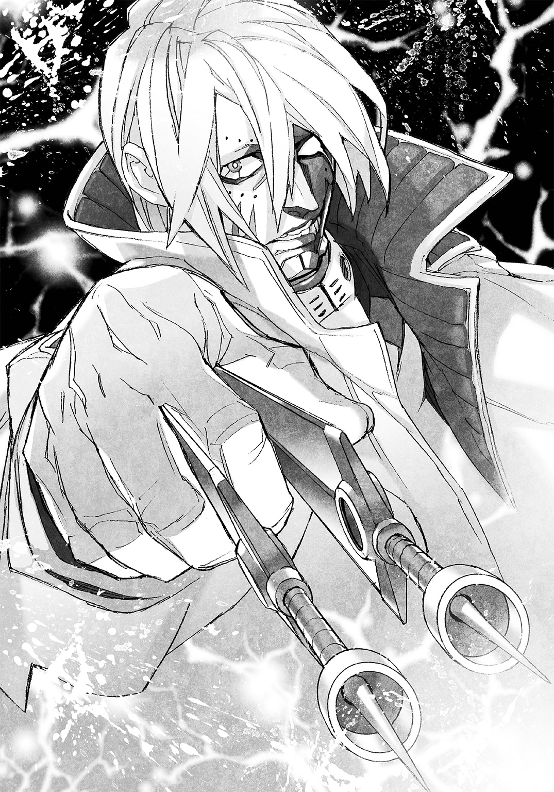
リジーがきょとんとした顔で呟く。
「すげえ。圧倒的じゃねえか」
「だろ？ あれがあたしたちの班長だ」
得意げな顔のイザベラは、すでに人為変態を解いていた。サンドラも元の姿に戻っている。
「私たちにできることは、班長の足手まといにならないことだけですよ」
エヴァが胸の前で手を組み、まるで夢でも見ているかのような熱っぽい視線をアドルフに向けている。
「......凄いです、班長......どこまでもついていきたい......」
リジーが片手でぽりぽりと頭をかいた。
「今の台詞。とりあえず聞かなかったことにしてやるのがいいんだよな、たぶん。あのオッサン、嫁さんいるって聞いたし」
イザベラとサンドラが揃って苦笑した。
「まあ、な」
「聞かなかったことにしてあげてね」
「あいよ」
リジーは笑って返すとトーヘイに目を向けた。
「あたしたちの出番なんざ、もうねえみたいだ」
「そうだね」
リジーとトーヘイが揃って人為変態を解く。
トーヘイは酷い疲労感に襲われて軽くふらつき、リジーに支えられた。
一日に四回も人為変態した上に、一度、死にかけたのだ。疲労は当然の結果である。
「疲れたって言える程度で済んだんだ、幸運だと思おう。リジー、礼を言ってなかったね。助けてくれて、ありがとう」
リジーの頰に、ぱっと朱が差した。
「よせやい、改まって礼なんて。覚えてたら後でバーガーのセットでもおごってくれりゃそれでＯＫだ」
「僕の命はファーストフード一食分か。はは、高いハンバーガーだ」
トーヘイは冗談を口にすると、目をアドルフの戦闘に戻した。
――あれが、真の幹部の姿か。
同じ幹部である小町小吉やミッシェル・Ｋ・デイヴスの闘いをトーヘイは目の当たりにしたことがある。
小吉たちもテラフォーマーに対して圧倒的な強さを持っていたが、それは格闘戦での話だ。
殴る、蹴る、へし折る、打ち砕く。戦い方は人間の延長上にある。
アドルフの戦闘スタイルと強さは、小吉たちとは本質が異なっていた。
殲滅。眼前に立つテラフォーマーを、等しく悉く殺し尽くす。
まるで神々が一方的に人間に罰を下すような、そんな戦い方だった。
アドルフが腕を一振りする度、数体のテラフォーマーが同時に絶命し、床に伏す。
両腕を振り続けるそのアドルフの後ろ姿は、オーケストラの指揮者のようだった。
テラフォーマーたちに奏でさせているのは、死の行進曲である。
産まれたばかりで歪んだ急成長をさせられたテラフォーマーに、経験や知識というものはない。ただ『人間を殺す』という本能に突き動かされるのみだ。
結果。アドルフの攻撃に対抗する手段を考えることすらせずに突撃を繰り返し、屍の山を作る。その屍を踏み越えて突撃し、新たな屍となる。
数分かからずに、アドルフの前で動くものは皆無となった。
「......強えなんてモンじゃねえな」
リジーの呟きに、平然とアドルフが振り返る。顔に疲れの影さえない。
「ワシントンに帰還するぞ。じきにそこの滑走路に、空軍から調達した輸送機が到着する」
「了解です、班長！」
「了解しました......ほっ」
エヴァが声を弾ませ、サンドラが安堵の息をつく。
イザベラが、近くのテラフォーマーの死骸を軽く蹴った。
「班長、コイツら死骸はどうします？ 生かしたサンプルは捕獲できなかったんですが」
「おまえたちの迎えの輸送機の手配済みだ。一緒にＵ―ＮＡＳＡの研究者が来るから、テラフォーマーの死骸については彼らに任せればいい。軍人の屍体は触るな。そっちは軍が別に処理に来る」
すでにアドルフが後始末の段取りを付けてきたようだ。
トーヘイはアドルフに頭を下げた。
「何から何まですみません。お手数をおかけしたようです」
「俺はドイツ南米合同班の班長として、部下が参加した任務の責任を取っただけだ」
責任を取る。口で言うのは簡単だが、能力と人格の両方が揃っていなければ、実行するのは極めて困難だ。
そしてその両方がアドルフには揃っていた。
――エヴァさんが憧れ、イザベラさんたちが信頼するわけだ。
トーヘイは感心しつつ、口を開き直す。
「倉庫のどこかに、ジャニスさんがいると思います。捜索を始めてよろしいでしょうか」
「この倉庫に、俺たち以外に生きている人間はいない。探すのはもう無駄だ」
トーヘイには信じがたいことを、平然とアドルフが告げた。
思わずトーヘイの声が大きくなる。
「生きている人間がいないって、探さずにわかるんですか、そんなことっ」
「わかる。俺はデンキウナギの特性で生体レーダーとしての能力を持っている。辺りに生物がいるかいないかなど探すまでもない。生きているものは、俺たち六人のみだ」
デンキウナギが電気をレーダーのように利用して障害物や獲物を探す能力があることを、トーヘイは知っていた。
他にもサメやエイの仲間には生物が放つ微弱な電流を感じて狩りをする生物がいる。
Ｍ．Ｏ．手術でアドルフが生体レーダーの機能を有していても不思議はない。
それに、アドルフがこんな時に噓やでまかせを口にする人間でないことを、トーヘイは理解していた。
アドルフがいないと言うからには、この倉庫にジャニスは間違いなく存在しない。
「......いない......最初からいなかったということなのでしょうか？」
「いや。俺がこの倉庫に入る前、人間と思しき生体反応が一つ減った。それがジャニス・リーだった可能性はある」
アドルフが倉庫に現れる前。まさに新しいテラフォーマーの群れが出現したタイミングだ。
トーヘイたちが気付かぬ間に、どこかのコンテナに隠れていたジャニスがテラフォーマーに殺された可能性がある。
「減った!? まさか死んだんじゃっ」
「死んだのなら、生体反応は消失するだけだ。だが、問題の生体反応は遠ざかるように弱くなり、消えた。おそらくこの倉庫のどこかに抜け道があり、そこから逃亡したのだろう」
逃げた。その言葉にトーヘイは深く安堵した。それが表情に出たらしい。
あまり感情を顔に出さないアドルフが、不思議そうな目をした。
「どうしてほっとしたような顔をしている？ 君たちの任務は、ジャニス・リーの奪還だったはずだが」
「死んでさえいなければ、次の機会があるからです。アドルフさんがもう生体反応を感じられないというのなら、今から探しても無駄でしょう。それなら焦っても仕方がありません」
「賢明な判断だ」
アドルフが頷いた時だった。
『久しぶりね、トーヘイ、リジー。探さないのは私も賢明だと思うわ』
どこからか声が響いた。トーヘイとリジーが同時にびくりとし、視線をさまよわせる。
聞き覚えのあるジャニスの声だった。
「ジャニスさん、どこかで見ているんですね！ 戻りましょう、Ｕ―ＮＡＳＡに！」
「逃げてもろくなことなんざねえぜ、ジャニス！」
トーヘイとリジーが虚空に呼びかけた。すぐにジャニスの声が返ってくる。
『トーヘイ。その申し出の答えは、ノーよ。私には私の成すべきことがある』
「成すべきこと？ それはＵ―ＮＡＳＡにいてはできないことなんですか？」
『ええ。私はもうＵ―ＮＡＳＡでは用済みの研究者で、罪人だもの......生きていればまたどこかで会うこともあるかしらね。生きていれば、だけど』
リジーが訝しげに眉を寄せる。
「どういうこったよ、ジャニス。テラフォーマーなら全部死んだぜ？」
『そうね。アドルフ・ラインハルトまで出てくるとは思わなかったけれど、せっかく生き残ったのだから教えてあげる。その基地全体に仕掛けられた爆薬が、あと三分で爆発するそうよ。頑張って逃げることね。それじゃ、またいつか、どこかで』
ジャニスの声はそれで途絶えた。
他人事のような口ぶりに、トーヘイは信憑性を感じた。
「とにかく基地の外に急ぎましょう、アドルフさん！」
「俺が乗ってきた軍のトラックが外にある！ 全員急げ！」
アドルフの号令で、全員が一斉に倉庫の外を目指して駆け出した。
イザベラとリジーの脚が速い。この二人が先行し、次にトーヘイが続く。
サンドラとエヴァが少し遅れ気味で、二人の背後を守るようにアドルフが最後に倉庫を出る。
倉庫の外。少し離れた路上で中型の幌付きトラックが雨に濡れている。
この旧グルーム・レイク陸軍基地のゲート前にあった、ダニエルたちが乗ってきた車両だった。
「イザベラ、運転しろ！」とアドルフ。
「うっす！」とイザベラが運転席に飛び込む。
「お先！」とリジーが軽快な動きで幌を被った荷台に飛び込んだ。
少し遅れてトーヘイも荷台に乗り込み、すぐさま振り向いて手を差し出す。
「サンドラさん、こっち！」
「ありがと、助かる！」
トーヘイはサンドラの手を取り、荷台に引っ張り上げた。
そのタイミングで、グルルルとトラックの古くさい内燃機関のエンジンが動き始める。
「エヴァ、失礼する！」
走るのが遅いエヴァを、後ろからアドルフが走りながら攫うように抱き上げた。
「きゃっ」とエヴァがどこか嬉しそうに短い悲鳴を上げた。
ダダンとアドルフが大股で駆け、その勢いで荷台に飛び込む。
「出せ、イザベラ！ ゲートからここまでは直線道路だ、アクセル全開で飛ばせ!! 基地を出ても絶対にアクセルを緩めるな!!」
「了解!!」
荷台と運転室を隔てる薄い窓の向こうから、イザベラの声が聞こえた。
同時にトラックが急発進する。荷台の幌からは左右が見えず、見えるのは前の小さな窓の向こうと、開きっぱなしの幌の後ろだけだ。
荷台が激しく揺れる。トーヘイとリジー、サンドラは、自力で荷台の縁に摑まって身体を支え、エヴァはアドルフがしっかりと抱きかかえていた。
誰もが無言だ。人為変態をしていないのに、トーヘイには時間の流れが恐ろしく遅く感じられた。
「班長、ゲートを抜けるぜ!!」
イザベラが大声で報告し、一際大きく荷台が揺さぶられた。
「そろそろ時間か」
トーヘイが幌の後ろに視線を向ける。
闇の中。ちかりと光が瞬いた。わずかに遅れて爆発音が響く。
さらに光が幾つか瞬き、爆発音が連なると同時に、闇夜が赤みを帯び始める。
発生した火事の炎が、垂れ込めている雨雲を照らし始めたのだ。
テラフォーマーの死骸の山もダニエルたちの屍体も全てを消し去るように、火事の勢いが増していく。
「なあ、トーヘイ。ここって昔の武器弾薬、そのまま保管してたりしないよな？」
不意にリジーが訊ねた。その質問にアドルフが答える。
「あると聞いている。だからこうして全速で逃げている。特に厄介なのが、歩兵携帯用に改造された長射程ロケットランチャーで使用するサーモバリック弾――いわゆる燃料気化爆弾の一種だ。それが一〇〇〇発以上あるらしい」
燃料気化爆弾。ジムがダニエルに基地を焼却処分するために本部に使用を要望しようとした、高威力の爆弾である。
基地の武器庫にあるサーモバリック弾の威力はわからない。
だが一〇〇〇発以上あるとなれば、それは大型の爆弾を凌ぐ威力だろうと想像がつく。
「洒落になんねえぜ、そりゃあ!! どこの神さまだよ、そんな悪ふざけする奴は!!」
リジーが頭を抱えた、その直後。
ごっと強烈な波のようなものが空間を揺るがした。
一斉に爆ぜたサーモバリック弾が発生させた衝撃波だ。
純粋なエネルギーが音速をはるかに越える波となって基地の何もかもを吹き飛ばし、すでに一キロ近くゲートから離れた幌付きトラックを枯れ葉のように翻弄する。
二度三度と赤茶けた荒れ地を跳ねてトラックが転がり、横転して止まった。
荷台の縁に必死にしがみついていたトーヘイは、幌の布の上に転がっているリジーに声をかけた。
「......無事かい？」
「ピンボールの気分はもうたくさんだ。あちこち痛え......痛えってことは無事ってこった」
のそりとリジーが身を起こし、運転席後ろの窓を覗き込む。
「おい、イザベラ。大丈夫か？」
「シートの上で逆さまになるとは思わなかったが、まあ、無事だ。班長たちはどうだよ」
と、イザベラの声。リジーが振り向く。
「............な、何とか大丈夫」とサンドラ。
「俺は問題ない。おまえはどうだ、エヴァ」
アドルフが、抱きかかえて守っているエヴァを気遣った。
「大丈夫です、班長が守ってくださったので」
エヴァがどこか嬉しそうに言った。
「無事だとさ」
リジーが運転席に声をかけ、ぴょんと足取り軽く幌の外に出る。
「おー。すげえ、火事が消えてる――と、思ったら。また燃えだしやがったみたいだな」
トーヘイもリジーに続いて外に出た。
リジーの言葉通り、サーモバリック弾の爆発で起きた衝撃波によって炎が一度は吹き飛ばされたようだが、可燃物がまだ多く残っているのか、遠目に見える基地では、再び火災が始まっていた。
雨はまだ降っている。遠くの炎をぼんやりとした目で眺め、リジーが呟く。
「とにかく、終わったな」
「......終わった、か」
トーヘイはレイナの左手に撃ち抜かれた右胸の服の穴を、片手できつく握りしめた。
人為変態で治ったはずの胸に、まだぽっかりと大きな穴が空いているような空虚感に苛まれている。
――今回の任務は、悔いしか残っていない。
トーヘイは基地を焼き尽くす炎を、瞳に焼き付けた。
Ⅵ 失いたくないもの
「一二人、か」
自室のベッドに寝そべって天井を見上げ、トーヘイはぼそりと呟いた。
一二人。ダニエルたち陸軍兵士とジーク、レイナを合わせた数だ。
ジャニス・リー捜索任務で死んだ人間の合計である。
「......一二人、か」
何度呟いたかわからないその数字を、トーヘイは再び口にした。
前の任務、卵鞘盗難事件では実行犯のデール・ギブソンと取引相手のヤマバが死んだ。
今回の死者は、その六倍だ。
「数じゃないんだ。死なずに済んだかもしれない命を救えなかったことが問題なんだ――でも。僕に誰が救えたというんだ、今の僕に」
すでにトーヘイ自身の中では結論が出ている。
一二人の死者の中に、今の自分の力で救えた人間など一人もいなかった、と。
「今の僕に、誰かの命を助けたいなんて願いは、過ぎたものなのかもしれない。それでも......無駄に死んでいい命なんて、ないんだ」
旧グルーム・レイク陸軍基地から帰還して、三日。
レイナに撃ち抜かれた右胸には、まだ穴が空いている気がしている。
一昨日に受けた医療検査で、右胸は傷痕があるのみで完治していると診断された。
『人為変態って凄いのね。ある意味、究極の医療じゃないの？』
Ｍ．Ｏ．手術研究に関わって日が浅いという女の医者は、笑顔でそう言った。
トーヘイは社交辞令としても、そうですね、の一言が返せなかった。
レイナの死に方を見てしまったからだ。
あの手足の壊死は、間違いなく人為変態を繰り返してきた末路のはずである。
彼女が受けたバグズ手術にどれほどの効果があったのか、ヤマバの昆虫型変身薬にどんな副作用があったのか、Ｍ．Ｏ．手術の実験体の一人に過ぎないトーヘイにはわからない。
もしかしたらレイナはトーヘイたちよりも免疫寛容臓の適合率が低く、免疫抑制剤以外の様々な薬物に頼って身体を維持していた可能性もある。
だとしても。バグズ手術もＭ．Ｏ．手術も、人為変態の度に新陳代謝を生物の限界以上に加速させ、生まれ変わるのも同然の行為をしていることに変わりはない。
人為変態を繰り返していけば、いつか自分もレイナのようになる。
「......どうせ死ぬなら。僕もあの男みたいに、誰かのために死にたいのかもしれない」
トーヘイは、ほとんど言葉さえ交わさなかったジークフリート・バルツァーの死に様を忘れられなかった。
任務から生きて帰ってきたというのに達成感など微塵もなく後悔だけに押し潰されそうになっている自分と違い、犬の姿になって最期を迎えたジークには、きっと後悔などなかっただろうとトーヘイには思えて仕方がなかった。
誰かのために死ぬ。
そんなこと、都合のいい言い訳だ。
「......無駄死にしたくない、それだけじゃないのか。僕は」
多くの死に触れすぎたせいか、トーヘイはこの三日、死についてばかり考えている。
人為変態しすぎた身体を休めるために五日間の休暇をもらったが、食事と検査以外に部屋を出ていない。
そういえば、と思い出す。
基地に放置してきてしまった前回の任務のボーナス、特別製のノートパソコンのことを。
「あまり役に立たなかったけど、もったいないことをした。もっと上手く使えていれば、あの基地のネットワークの状況を把握できたのに。そうしたら――」
死者の数が減ったかもしれないと考えかけたトーヘイの思考を、ドンドンとドアを乱暴にノックする音が邪魔をした。音は玄関のほうから聞こえてくる。
Ｕ―ＮＡＳＡにこの部屋を割り当てられて一年以上経つが、ドアを殴る来訪者は初めてだ。
「だ、誰だ？ インターフォンも使わずに」
トーヘイはベッドから跳ね起き、玄関に向かった。
１ＤＫの狭い部屋だ。ダイニングを横切ればもう玄関である。
ドドンドドンとドアを叩く音が強くなり、壊されるんじゃないかとトーヘイは慌てて鍵を解除してドアを開けた。
「よ！ やっぱ辛気くせえ顔して引きこもってやがったか！」
タンクトップにジャージの上下というラフな格好のリジーが、そこにいた。
リジーがトーヘイの部屋を訪れたのは、これが初めてだ。トーヘイは思わず緊張する。
「な、何だい？」
じろじろとリジーがトーヘイの全身を観察するように見る。
「スエットにＴシャツか。ま、いいか。おい、ちょっと今から付き合えよ」
リジーがトーヘイの腕を摑み、ぐいっと引っ張った。
「つ、付き合うって。部屋着のままで、いったいどこに」
「どうせ汗かくんだし、あたしがいいって言ってんだ。つべこべ言わずに顔――じゃねえ、身体貸せって。な？ 痛いのは最初だけだからよ」
リジーは有無を言わせる気などないらしく、強引にトーヘイを連れ出した。
「ちょ、ちょっと待って。部屋に鍵――」
「どうせ盗まれて困るもんなんざねえだろ、おまえのことだから」
「......それは確かに、そうだけど」
部屋の鍵さえかけられず、トーヘイはリジーに引っ張られるままについていった。
「ほら、動くなよ。上手く付けられないだろ――あんまりあたしも人に付けてやるの、慣れてないんだよ」
顔のすぐ下でリジーの髪が揺れる。
ふわっと香ってきたシャンプーと思しき匂いにトーヘイは思わず顔を赤くした。
「自分で付けられるから、いいよ」
「あ？ 付けたことあんのかよ、トーヘイ」
「......ないけど。はめるだけだろう、別に難しくはないんじゃ」
「バッカ野郎、そのはめ方にコツがあるんだよ。最中にすっぽ抜けたらどーすんだ、迷惑するのはあたしだぜ？」
「それもそうだね。じゃあ頼むよ」
「任せておけって。でも面倒は面倒だよな、グローブの紐を締めるのってよ」
リジーが、トーヘイの手にはめたボクシングのグローブの紐をぐいぐいと締める。
トーヘイが連れてこられたのは、Ｕ―ＮＡＳＡの施設内にあるスポーツジムだった。
プールやマシントレーニングルームの他、ボクササイズルームがあり、サンドバッグやリングが用意されている。
ボクササイズルームの使用予約がない時間があったので、リジーがトーヘイとスパーリングするために予約を入れたらしい。
「これでよし、と」
リジーがトーヘイのグローブの紐を締め終え、余った紐が遊ばないようテーピングを巻いて留めた。
「アマチュア用だと面ファスナーで固定するのが多いんだけどな。何でここの備品はプロ用の紐タイプなんだろ」
「元世界チャンピオンの元プロボクサーが在席してるからじゃないかな、たぶん」
元プロボクサー。リジーの憧れの相手、アネックス一号の正規クルー鬼塚慶次のことだ。
ぱっとリジーが嬉しそうな顔になる。
「そりゃそうか！ ケージがいるのにアマチュア用グローブなんざ使ってちゃダメだよな！」
リジーが弾むような足取りでトーヘイから離れ、自分のグローブを取りに行った。
「これでいいか」
リジーがサイズを選んでまず左手に手早く装着する。
さらに右手にはめ、グローブで不自由な左手と口を上手く使って紐を締め込み、テーピングまで巻き終えた。
「さすがに慣れてるね」
「まあ、な。人に付けてやるのは左右が逆だからさ、わかりにくいんだよ。さてと、トーヘイ。さっさとリングに上がれ。すっきりさせてやるからよ！」
リジーが左右のグローブをパンッと合わせて鳴らした時だ。
ボクササイズルームの入り口のドアが、不意に開いた。
「......あ。先客がいたのか。珍しいな」
タオルで顔の汗を拭きながら、東洋人が入ってくる。
短い髪に、実直そうだが整った顔立ち。先ほど話題にした、鬼塚慶次だった。
リジーが耳まで一瞬で赤くなり、頭から湯気が出そうな感じの声を上げる。
「けけけけ、ケージッ？ な、何でっ？」
「ああ、前にサインしたボクサーの彼女か。久しぶり」
気さくな口調で慶次は挨拶すると、サンドバッグへと向かう。
「ランニングとここでのトレーニングは日課でね。サンドバッグを使ってもいいかな」
「全然オッケーです、むしろ見させてください、チャンプ！」
「はは。だからチャンプは元だって。それじゃ遠慮なく」
慶次が、先ほどのリジーよりも手早く器用にグローブを装着した。
準備運動は済んでいるとばかりに、慶次がサンドバッグを叩き始める。
右拳を前に構えるサウスポースタイルだ。
リズミカルに右でジャブを一発、さらに左ストレートを一発放ってステップバック。
ドドンッと打撃音が連なって響きサンドバッグが大きく揺れた。
寸分違わぬタイミングと足運びで、同じ動作を慶次が何度も繰り返す。
ビデオに録画して計測すれば、動作のずれは数ミリもないだろう。
どれほど反復練習をすれば、あんな正確な動作ができるのだろうとトーヘイは感心した。
「......たったあれだけの動作なのに、凄いね」
ぽーっとした表情で慶次の動きに見とれていたリジーが、自分のことのように嬉しそうな顔をする。
「お！ わかるか、トーヘイっ？ あのお手本のようなワンツー！ ジャブとステップインのタイミング、ストレートの腰の入れ方、全部が完璧なんだぜ、あれ！」
ワンツー。ボクシングの基本の技だ。リジーがその場で、ジャブとストレートの動作をする。
キュキュとスニーカーの裏が鳴り、フッフッとグローブがリズミカルに風を切る音を奏でた。
「ちっ、もどかしいぜ。あたしじゃあそこまで上手にワンツーが打てねえっ」
リジーの動きはとにかく軽快だ。
羽根でもついているんじゃないかとトーヘイが思うほど重さを感じさせず、鋭い。
「いや、リジーも充分、鬼塚さんに負けず劣らず凄いと思うけど」
ぱたとリジーがワンツーの動作を止めてトーヘイに詰め寄った。
「やっぱおまえ、全然わかってねえなッ！ あたしなんかをケージと一緒にするんじゃねえよ、ケージに失礼だろッ!!」
「い、いや。何かごめん。ボクシングってやっぱり僕にはよくわからないから」
「教えてやるからとっととリングに上がりやがれ!!」
リジーがたたっと駆け出し、床より一段高いリングに張られた三本のロープの一番上に摑まり、一気にロープを飛び越えてリングに上がった。
たんっとリジーはリングに着地すると、軽快にステップを踏み始める。
「久々だな、この感触。うん、悪くねえ」
トーヘイは普通にリングによじ登った。
「......お手柔らかに頼むよ。そうだ、マウスピースとかヘッドギアは？」
「そんなカタッ苦しいのは抜きで行こうぜ。ヘッドギアなんかつけたら、それこそあたしの動きに反応できないぜ？ ま、手加減してやるからさ」
「いや、僕はともかくリジーだって危ないんじゃ――」
は、とリジーが馬鹿にするように笑った。
「おまえのパンチなんか当たるもんかってんだ。それじゃ行くぜ！」
トーヘイが構えるよりも早くリジーが仕掛けた。
「ちょ、待って」
「待たない！」
リジーが、たんっと踏み込みながらのジャブで距離を測り、どんっとストレートを放つ。
先ほどリジーがやってみせたワンツーだ。
横から見るのと正面から受けるのでは印象が違いすぎ、トーヘイは避けられずまともにストレートを顔に受けた。
どんっと頭の後ろに衝撃が突き抜ける。悩みまで吹っ飛ばすような一撃だった。
「手加減してやってるんだからな、一発で沈むんじゃねえぞ！」
「わかってるさ！」
トーヘイは体勢を整え、構えた。次は防御してみせると気合いを入れる。
「そんじゃ次行くぜ！ ついては来れないだろうけどなッ」
「僕だって空手の有段者だ。そう簡単に殴れると思わないほうがいいんじゃないか」
「それはどーかな？」
にっとリジーが歯を見せて笑む。その姿がトーヘイの前からかき消えた。
――速いっ？ 何だ、この速さ!?
普段の姿でも人為変態後でも、リジーの闘い方をトーヘイは見ている。
だからリジーが速いことは知っていたが、ここまでとは思わなかった。
右か左かとトーヘイが確かめる間もなく右からの衝撃で顔が横に弾けた。
頰にフックを受けたと理解したと同時に、右脇腹にずどんと一撃が来る。
リジーの姿を確かめる前に、トーヘイは右側に拳を突き出した。だが手応えはない。
ふっと目の前にリジーの顔が一瞬、現れる。
トーヘイは戻した右拳を前に放ったが、すっとリジーが軽く頭を振るだけで簡単に避ける。
パパパパンと何発か、トーヘイは左右の頰に軽い打撃を受けた。
「このっ！」
左腕を振り回すようにトーヘイはフックを放った。水平に薙ぐ一発だ。拳じゃなくても腕のどこかがリジーに当たることを期待したが、すかっと空振りする。
トーヘイのフックを、リジーが頭を低くしてくぐった。
身体が密着するような距離で、予備動作がほとんどないボディーブローをリジーが放つ。
とんっと鳩尾をリジーが軽く打った。
「本気で打ったら吐くからな、おまえ」
からかうようなリジーの表情に、トーヘイはかちんときた。
「そこまで手加減してもらわなくても、大丈夫だ！ 甘く見ないほうがいい！」
いくらなんでも密着していれば拳が当たるだろうと、トーヘイは本気で正拳突きを繰り出した。ごっと風が鳴る――だが手応えはない。
「ああ、そうかい」
サイドステップで避けたリジーが、反動を付けてフックを放った。
スピードの乗ったグローブが、トーヘイのこめかみにヒットする。
この一発をきっかけに、トーヘイはサンドバッグのようにリジーに殴られた。
トーヘイが両腕でガードを固めても、ガードの隙間からリジーのパンチが滑り込む。
脚を使って左右に逃げようとしても簡単に回り込まれ、苦し紛れに突きを放つとカウンターの一撃が飛んでくる。
一発一発のパンチは、基本的には軽い。リジーはきちんと手加減してくれているらしい。
リジーのパンチが『一人で悩んでんじゃねえよ、バーカ』と言っている気がしてトーヘイは笑えてきた。
トーヘイの表情の変化にリジーが気付いたようだ。不意に手を止め、心配そうな顔をする。
「ど、どうしたっ。あたし、変なとこ殴ったかっ？」
「大丈夫、心配しなくていいよ。リジーが言いたいことが、何となくわかった気がしただけだから」
「あたしの言いたいこと？」
リジーがきょとんとする。特にパンチに意味を込めてはいなかったらしい。
「......こういうのは受け取る側の気持ち次第ってことか。とにかく、ありがとう」
トーヘイはリジーに軽く頭を下げた。
ふとリングサイドに慶次がいることに気付き、視線を向けると目が合った。
「彼女の動きが見事だったから、つい見学してしまった。もう終わりかい？」
「みみみみ見事だなんて、そそそそんなっ。お見苦しいっつーかおそまつっつーか、ああもうケージに見られるんだったら手加減なんかしなきゃよかったぜっ」
リジーが派手に狼狽し、トーヘイは苦笑した。
「手加減されなきゃとっくにＫＯされていると思うよ」
「ＫＯされときゃよかったんだよ、おまえなんか！」
理不尽なことを言うリジーに、トーヘイはますます苦笑した。
「こんなこと言ってますが、彼女、全米ハイスクール女子バンタム級のチャンピオンだったんですよ。前にサインをねだったように、鬼塚さんのファンなんです。一度、スパーの相手をしてやってもらえませんか？」
「ババババ、バカなことを言い出すんじゃねえよこのクソ野郎ッ！ チャンプが困るじゃねえか、ほら！」
リジーがあたふたとグローブをはめた手を慶次に向けた。
リングサイドの慶次が、確かに困惑したような表情をしている。
「......んー。個人的な主義で悪いんだが、女は殴らないことにしているんだ。だから、遠慮しておくよ」
ぇ、とリジーが小さくこぼし、露骨に落胆した。
「............ほら、な。っってことだから、トーヘイ。おまえ、あたしの代わりにケージに殴られてくれや」
「どうしてそういう話になるんだい」
リジーがグローブを外しつつ、トーヘイを拗ねたような目で見る。
「どーもこーもねえ。なんかむかついたからに決まってるだろ、すぐにうじうじ悩みやがるこのフニャ〇ン野郎」
「......」無言で慶次がリングサイドから離れた。リジーの暴言に呆れたのかもとトーヘイは心配したが、違うようだ。
慶次は備え付けの棚に向かうとヘッドギアとマウスピースを取り、振り向きざまにトーヘイに放った。
マウスピースをリジーがキャッチし、トーヘイがヘッドギアを受け止める。
「人間相手のスパー、実はしばらくやってないんだ。真面目に練習相手をしてくれる人がいなくてね」
トーヘイは少し考えてから口を開き直す。
「相手......小町艦長やミッシェルさんとかにお願いすれば、やってくれる気がしますけど」
小町小吉は空手六段の達人だ。ミッシェルがやっている格闘技の種類をトーヘイは知らないが、前にライオン型テラフォーマーと闘った際には、総合格闘技系のかなりの使い手だという印象を受けた。
リジーが軽く呆れたような目をする。
「あの二人だとガチでやるぜ、たぶん。練習にはならねえよ。ああいうすぐに本気になる人たちと練習という名の異種格闘技戦して火星行き前に怪我をするなとか、上の連中に注意されてたりしてな」
はは、と慶次が短く笑った。
「まあ、そんなところだ。だから相手をしてくれるというなら助かるよ。今ちょっと見せてもらったが、君――立花東平だったね。東平でいいかい？」
「構いません。僕も慶次さんと呼んでもいいですか？」
「呼び捨てでも全然構わないんだが、まあ、呼びやすいように呼んでくれていいよ。東平、君は防御の技術と勘がけっこういい。何か格闘技をやっていなかったかい？」
「いちおう空手は二段です。ジュニアハイスクールの時ですが」
「なるほど。道理で殴られ慣れてもいるわけか、納得したよ。で、どうだい？ スパーの相手、頼めるかい？ 本気で当てたりはしないから、防御するなり避けるなり好きに動いてくれると、俺としてはどれくらい勘が鈍っているか確かめるのに助かるんだが」
トーヘイが答えるより先に、リジーが顔を輝かせた。
「もちろんだぜチャンプ！ こんな奴でよかったら、いくらでも人間サンドバッグに使ってくれよ！ なあ、トーヘイ！ 光栄だよな!!」
リジーの喜びようは、前に慶次からサインをもらった時に匹敵するレベルだった。
とてもではないが断れる雰囲気ではない。
トーヘイはこれ以上ないほどに苦笑し、ヘッドギアを被った。
「......喜んで」
顎のベルトは面ファスナータイプで、グローブをつけたままでも簡単に止められた。
「ほらよ」とリジーがトーヘイにマウスピースを咥えさせる。トーヘイが空手で使ったことがある、前歯に被せるタイプだ。多少話しづらいが会話に困るほどではない。
リジーが、じーっとトーヘイを覗き込むように見る。
「な、なんだい？」
「これからケージにボコ殴りにされるその顔、後で触らせろよな。あたしだって殴られたいっつーの」
「そんなことでよかったら」
「約束したぜ？ そんじゃリングサイドでおまえが伸されるところ、見守ってやっからよ」
リジーがひらひらと手を振って、軽快な動きでリングから飛び降りた。
入れ替わりでリングに上がってくる慶次に、トーヘイは声をかける。
「ヘッドギアとかは――いりませんよね、やっぱり」
「つけたほうがいいかい？ このままでも攻撃してくれて俺は構わないんだが」
トーヘイは少しだけ考えて答える。
「本気で殴らせてもらいにいきますが、僕もいらないと思います。ほとんど無意味だと思いますが一応先に謝っておきますね。もし当たったら、すみません」
「はは。承知したよ。それじゃ始めようか」
「その前に一つ、お願いしていいですか？」
「なんだい？」
「僕が死なない程度に、本気で殴ってくれませんか？ たぶんそのほうが、僕の気分がすっきりすると思うので」
慶次が少し困惑顔になる。真面目そうに考え込む素振りをした後、頷いた。
「......なかなか難しい注文をするね。いいだろう、承知したよ。じゃ、今度こそ始めよう。彼女、いちおう三分計ってくれるかな。ストップウォッチとゴングはそこの棚にある」
「りょ、了解っ」
とたたたっとリジーが子猫のような足取りで棚へと走り、ストップウォッチと小さなハンマーを手にした。棚に置かれた真鍮色のゴングにハンマーを向け、顔だけで振り返る。
「じゃあ行くぜ！」
カーン、とリジーがゴングを鳴らす。
す、と慶次がファイティングポーズを取る。
どっ、とトーヘイは全身の毛穴が開いて汗が噴き出すのを感じた。
ただ構えただけなのに、慶次の放つプレッシャーは強烈だ。リングが極端に狭く感じられる。
――これが、世界を獲るという人種なのか。
――スパーリングの相手なんて安請け合いにもほどがあった。
軽く後悔したが、遅かった。今さらやめますとは言えない。
左右に軽くステップを踏みながら慶次が距離を詰めてきた。
右か左か、とにかく脚を使って少しでも距離を取り直そうとトーヘイが動こうとした瞬間、ぼっとジャブが飛んできた。避ける間もなく軽く顔を弾かれる。
直後。視界が一瞬暗くなり、一拍遅れて衝撃が頭を突き抜けた。
ゼロコンマ数秒、トーヘイは意識が飛んだ。意識が飛んだことにすら気付いていない。
故に、次にボディーブローをもらったことも気付かない。
――あれ。何だ、もう身体が動かない？
横隔膜を揺さぶられると一時的に呼吸が止まり、身体の反応が鈍くなる。
知識としてトーヘイは知っていたが、今の一瞬で自分にそれが起きたとは理解できなかった。
ふっと慶次の頭が揺れる。リズミカルに左右のフックをトーヘイに叩き込む。
――わ、わ！
慶次のパンチは、絶妙な手加減具合だった。
一発一発の衝撃が身体の芯を揺さぶるが、そのまま倒れ込んでしまうほどではない。
かと言って、防御から反撃に出られるような余裕ができるくらいでもない。
トーヘイにできるのは、世界レベルの拳を生で体験しつつ、どうにか両腕を上げて少しでもガードをすることだけだ。
何かを考えるゆとりさえ失ったトーヘイは、文字通りの人間サンドバッグになり、速いのか遅いのかすらわからない濃密な時間の流れを体験した。
カーンとゴングが鳴り、ぴたりと慶次の攻撃が止む。
「ありがとう、お疲れ。俺はまたちょっと走ってくる」
慶次が、まだ防御の姿勢を取っているトーヘイの肩をぽんっと叩いてリングから降りた。
トーヘイは防御の構えのまま、ぼんやりと立っている。
「おーい。もしかして立ったまま気でも失ったか？」
リジーがリングサイドから声をかけた。
「気は失ってないはずだ。そこまでの殴り方はしていない。放心状態なだけかな」
慶次がグローブを外しながらそう言った。
「――あ。あれ？ 終わった......のか？」
ようやく我に返ったトーヘイを、慶次が振り返った。
「頭、真っ白になったかい？ 何を悩んでいたか知らないが、悩んでいる時こそくたくたになるまで身体を動かしたほうがいい。そうすると、自ずとシンプルな答えが見つかるよ」
慶次は手早くグローブを外すと、じゃ、と片手を上げて挨拶し、ボクササイズルームを駆け足で出ていった。
トーヘイが、すとんとその場に座り込む。
ひょいっとリングにリジーが上がり、トーヘイのヘッドギアを乱暴に取るとぺたぺた顔を触り始めた。
「な、何を」
「おいおい、約束しただろ？ ケージに殴られた顔、触らせろってよ」
ひとしきりリジーはトーヘイの頰を両手で撫で回すと身を起こして胸を張った。
「汗まみれでちと臭いが、いい顔にはなったぜ、おまえ。どうせ、たくさん人が死んだことで悩んでたんだろ？」
「......まあ、ね」
「やっぱり」
リジーが呆れ顔でトーヘイの顔を覗き込んだ。羽織っているだけのジャージの上着の下、タンクトップの生地が垂れ下がって白い胸元が覗く。
「いいか？ 死んだ人間のことでどれだけ悩んでも、死んだ人間は生き返らねえ。悩んで死人を生き返らせてくれるような都合のいい神さまなんざいねえし、そんな奇跡も起こらねえ。だからおまえが悩むべきなのは、死んじまった人間のことじゃなくて、これからどうしたら誰かを一人でも多く死なせずに済むかってことだ」
考えてもみなかったことだった。トーヘイが返す言葉もなく黙っていると、リジーが続ける。
「シンプルだろ？ おまえがやるべきことは、わかったか」
「ああ。身も心も強くなるしかない。知恵と勇気も鍛えるしかない――後悔する暇があったら、だろう？ あってるかい？」
リジーが、とんっとトーヘイの右胸を叩いた。レイナに穴を開けられた場所だ。
「正解だ、相棒。ご褒美に見せてやろっか、この中身」
リジーが笑ってタンクトップの胸元を下に引っ張った。トーヘイは赤面して立ち上がる。
「またにするよっ」
「またっていつだよ、おい。またって」
「または、まただって！ とにかくもう少し身体を動かしたいから、付き合ってくれないか」
ごまかすようにトーヘイは言い、リジーから離れた。
「気の済むまで殴ってやるよ」
にいっとリジーが笑みを浮かべる。トーヘイの右胸にあった空虚感が噓のように消えた。
その瞬間、トーヘイは理解した。
たぶん自分が一番失いたくないものが、リジーだと。
了
あとがき～日本の夏、Ｇの夏～
文字にすると嫌な夏もあったものだなあ、と遠い眼をしたくなりますね。
ご無沙汰してます、藤原健市です。
『テラフォーマーズ THE OUTER MISSION スカベンジャーズ』の刊行から間が開いてしまいましたが『THE OUTER MISSION アウトサイダー』お届けに参上しました！
アウトサイダー』お届けに参上しました！
うん、言いたいことはわかります。ちょいと間が開きすぎましたよね、半年以上ですから。
でもまあ、この本を手にしていただけたら、時間がかかったのも納得いただけるかも。
......分厚いですよねえ、我ながら。はっはっはっはっ。
いえ、笑い事ではありません。
プロットを書いた時には、ここまでページ数が増えるとは夢にも思いませんでした。
これでも藤原、執筆前にページ数を割と正確に想定できるほうで、三〇〇ページ以内を予定していた本が、四〇〇ページ近くまで膨らんだことは、一度もありません。
今回、何故に枚数が増えたか......いやあ。うっかり楽しみすぎました、書くことを。
本作品、前作スカベンジャーズと比べるとかなり色々とアレです。スパルタンです。
そりゃあもうあれこれと容赦のない展開になっていまして、どれくらい凄まじいかと申しますと、テンパった作者がうっかり五〇万円くらいの衝動買いをしてしまうほどでして。
何を買ったかは内緒ですが、とりあえず、バイクではないです。
いえ、バイクも欲しかったんですが、去年、新車を一台買ったばかりでして、今年も続けて買うってのはいい年したＯＴＯＮＡとしてダメすぎるだろうと自重しました。
ああ、立派なＯＴＯＮＡになりたい。飯食って映画見て寝る、それで充分な鍛錬ができるような、立派なＯＴＯＮＡに。わかる人にしかわからないネタですね。
ちなみに藤原は適合者です。おかげでこの夏は楽しい楽しい。
さておき。本作品でも引き続き、哺乳類コンビのトーヘイ＆リジーが活躍しています。
ゲストはドイツ南米混成チームから女性三名。姉御肌のあの人と、リジーとベース生物が一緒のあの人と、そしてやっぱり最後は、あの彼女。
あの班長さん？ それは本編を読んでのお楽しみ、ということで！
そんなこんなで、原作の貴家先生の完全監修、カバーイラストが橘賢一先生、前嶋重機先生が口絵と挿絵という、またまた豪華な一冊となりました！
『THE OUTER MISSION アウトサイダー』、お楽しみいただけましたら幸いです。
ではまた！
二〇一五年夏 藤原健市
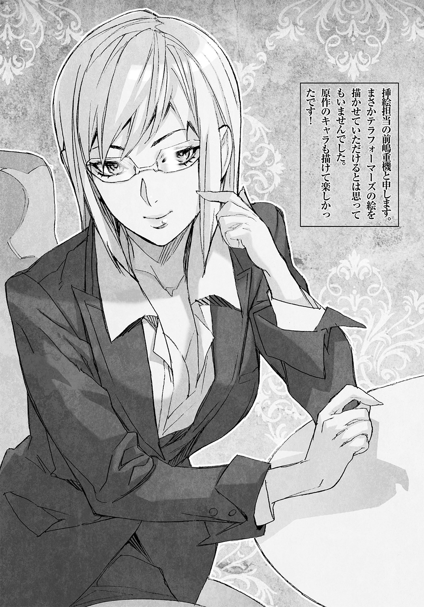
著者紹介
藤原 健市 ふじわら けんいち
浜松市在住。２００６年『ミスティックM.A.D.』（ファミ通文庫）でデビュー。近刊は『ハマトラ THE NOVEL』（JUMP j BOOKS）、『オーガバスター・オーバードライブ』（スーパーダッシュ文庫）等。
原作
貴家 悠 さすが ゆう
１９８８年神奈川県生まれ。２０１１年ミラクルジャンプ誌上にて『テラフォーマーズ』掲載、デビュー。同作の原作を手がける。２０１３年「このマンガがすごい！」オトコ編で第１位を獲得。
原作・illustration
橘 賢一 たちばな けんいち
１９７７年埼玉県生まれ。２００７年週刊ヤングジャンプ誌上にて『ラッキーセブンスター』を連載。『テラフォーマーズ』では作画を手がける。
illustration
前嶋 重機 まえしま しげき
イラストレーター＆漫画家。『戦う司書シリーズ』『SERENDIPITY前嶋重機画集』、SEGAのアーケードゲーム『WONDERLAND WARS』のキャラクターデザイン＆オフィシャルイラストなど。
ダッシュエックス文庫DIGITAL
テラフォーマーズ THE OUTER MISSION
アウトサイダー
著者 藤原健市
原作 貴家 悠
橘 賢一
© KENICHI FUJIWARA・YU SASUGA・KENICHI TACHIBANA 2015
２０１５年９月30日発行
この電子書籍は、ダッシュエックス文庫「テラフォーマーズ THE OUTER MISSION アウトサイダー」
２０１５年８月30日発行の第１刷を底本としています。
発行者 鈴木晴彦
発行所 株式会社 集英社
〒１０１－８０５０
東京都千代田区一ツ橋２丁目５番10号
０３－３２３０－６０８０（読者係）
編集協力 法貴仁敬
制作所 株式会社ＩＣＥ
本作品の全部また一部を無断で複製、転載、改竄、インターネット上に掲載すること、および有償無償に関わらず、本データを第三者に譲渡することを禁じます。なお個人利用の目的であっても、コピーガードを解除しての複製は、法律で禁じられています。